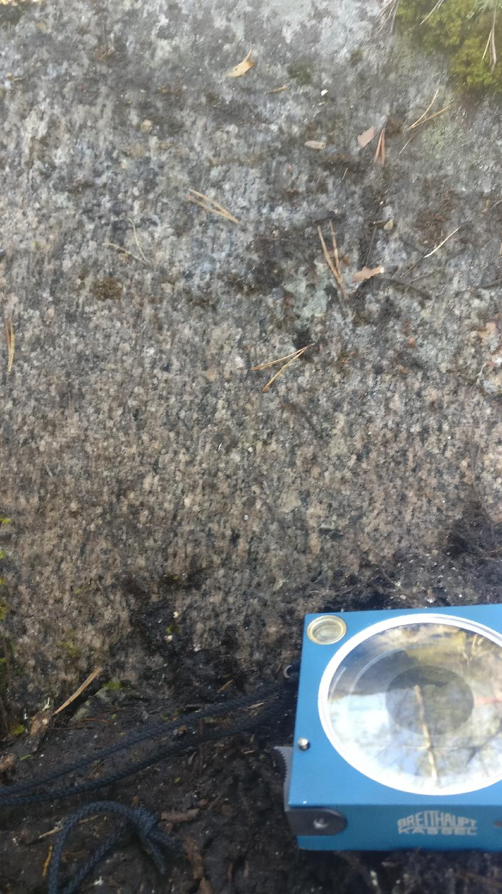

<!DOCTYPE html>
<head>    
    <meta http-equiv="content-type" content="text/html; charset=UTF-8" />
    
        <script>
            L_NO_TOUCH = false;
            L_DISABLE_3D = false;
        </script>
    
    <style>html, body {width: 100%;height: 100%;margin: 0;padding: 0;}</style>
    <style>#map {position:absolute;top:0;bottom:0;right:0;left:0;}</style>
    <script src="https://cdn.jsdelivr.net/npm/leaflet@1.6.0/dist/leaflet.js"></script>
    <script src="https://code.jquery.com/jquery-1.12.4.min.js"></script>
    <script src="https://maxcdn.bootstrapcdn.com/bootstrap/3.2.0/js/bootstrap.min.js"></script>
    <script src="https://cdnjs.cloudflare.com/ajax/libs/Leaflet.awesome-markers/2.0.2/leaflet.awesome-markers.js"></script>
    <link rel="stylesheet" href="https://cdn.jsdelivr.net/npm/leaflet@1.6.0/dist/leaflet.css"/>
    <link rel="stylesheet" href="https://maxcdn.bootstrapcdn.com/bootstrap/3.2.0/css/bootstrap.min.css"/>
    <link rel="stylesheet" href="https://maxcdn.bootstrapcdn.com/bootstrap/3.2.0/css/bootstrap-theme.min.css"/>
    <link rel="stylesheet" href="https://maxcdn.bootstrapcdn.com/font-awesome/4.6.3/css/font-awesome.min.css"/>
    <link rel="stylesheet" href="https://cdnjs.cloudflare.com/ajax/libs/Leaflet.awesome-markers/2.0.2/leaflet.awesome-markers.css"/>
    <link rel="stylesheet" href="https://cdn.jsdelivr.net/gh/python-visualization/folium/folium/templates/leaflet.awesome.rotate.min.css"/>
    
            <meta name="viewport" content="width=device-width,
                initial-scale=1.0, maximum-scale=1.0, user-scalable=no" />
            <style>
                #map_3e5591178fcc4ab28b58ef227a49e1f2 {
                    position: relative;
                    width: 100.0%;
                    height: 100.0%;
                    left: 0.0%;
                    top: 0.0%;
                }
            </style>
        
    <script src="https://cdnjs.cloudflare.com/ajax/libs/leaflet-locatecontrol/0.66.2/L.Control.Locate.min.js"></script>
    <link rel="stylesheet" href="https://cdnjs.cloudflare.com/ajax/libs/leaflet-locatecontrol/0.66.2/L.Control.Locate.min.css"/>
    <link rel="stylesheet" href="styles.css"/>
</head>
<body>    
    
            <div class="folium-map" id="map_3e5591178fcc4ab28b58ef227a49e1f2" ></div>
        
</body>
<script>    
    
            var map_3e5591178fcc4ab28b58ef227a49e1f2 = L.map(
                "map_3e5591178fcc4ab28b58ef227a49e1f2",
                {
                    center: [62.66542246, 22.27855715],
                    crs: L.CRS.EPSG3857,
                    zoom: 10,
                    zoomControl: true,
                    preferCanvas: false,
                }
            );

            

        
    
            var tile_layer_61b6536cdcd344daae1a94c524033746 = L.tileLayer(
                "https://{s}.tile.openstreetmap.org/{z}/{x}/{y}.png",
                {"attribution": "Data by \u0026copy; \u003ca href=\"http://openstreetmap.org\"\u003eOpenStreetMap\u003c/a\u003e, under \u003ca href=\"http://www.openstreetmap.org/copyright\"\u003eODbL\u003c/a\u003e.", "detectRetina": false, "maxNativeZoom": 18, "maxZoom": 18, "minZoom": 0, "noWrap": false, "opacity": 1, "subdomains": "abc", "tms": false}
            ).addTo(map_3e5591178fcc4ab28b58ef227a49e1f2);
        
    
            var marker_f2672d2149744c849e6c824634ab8f51 = L.marker(
                [62.6502261, 22.24487724],
                {}
            ).addTo(map_3e5591178fcc4ab28b58ef227a49e1f2);
        
    
            var icon_23805026a82c4197b00fe04091084562 = L.AwesomeMarkers.icon(
                {"extraClasses": "fa-rotate-118", "icon": "glyphicon-arrow-up", "iconColor": "white", "markerColor": "blue", "prefix": "glyphicon"}
            );
            marker_f2672d2149744c849e6c824634ab8f51.setIcon(icon_23805026a82c4197b00fe04091084562);
        
    
        var popup_4d31e9ed644743c3b257d5d56c5c76e5 = L.popup({"maxWidth": "100%"});

        
            var html_6e40196d9d6341c5990b91996013c6c9 = $(`<div id="html_6e40196d9d6341c5990b91996013c6c9" style="width: 100.0%; height: 100.0%;"><h3>NO-2021-120</h3> <h4>Planar Structures</h4> <table> <thead> <tr> <th align="right">DIP</th> <th align="right">DIRECTION_OF_DIP</th> <th align="left">STYPE_TEXT</th> <th align="left">FOL_TYPE_TEXT</th> </tr> </thead> <tbody> <tr> <td align="right">83</td> <td align="right">256</td> <td align="left">Fault</td> <td align="left"></td> </tr> <tr> <td align="right">83</td> <td align="right">180</td> <td align="left">Fault</td> <td align="left"></td> </tr> <tr> <td align="right">69</td> <td align="right">316</td> <td align="left">Fault</td> <td align="left"></td> </tr> <tr> <td align="right">31</td> <td align="right">104</td> <td align="left">Fault</td> <td align="left"></td> </tr> </tbody> </table> <h4>Linear Structures</h4> <table> <thead> <tr> <th align="right">DIRECTION</th> <th align="right">PLUNGE</th> <th align="left">STYPE_TEXT</th> </tr> </thead> <tbody> <tr> <td align="right">118</td> <td align="right">45</td> <td align="left">Lineation</td> </tr> </tbody> </table> <h4>Rock Observations</h4> <table> <thead> <tr> <th align="left">REMARKS</th> <th align="left">FIELD_NAME</th> </tr> </thead> <tbody> <tr> <td align="left"></td> <td align="left">Granodiorite</td> </tr> </tbody> </table> <h4>Observation remarks</h4> <p>Lineaatio granodioriitti, raoissa punaista täytettä mahdollisesti kalimaasälpää, melko intensiivinen rakoilu, rakoilu melkeinpä yhtä intensiivistä joka suunnassa</p> <h4>Images</h4> <p><a href="kapalo_imgs/NO-2021-120.k1@6142761110269243792.jpg"></a>Punainen rakotäyte, kalimaasälpä <a href="kapalo_imgs/NO-2021-120.k2@465599292542584477.jpg"></a>Rakoilua pystypinnalla (326/78), pinta kaatuu kameraa päin</p></div>`)[0];
            popup_4d31e9ed644743c3b257d5d56c5c76e5.setContent(html_6e40196d9d6341c5990b91996013c6c9);
        

        marker_f2672d2149744c849e6c824634ab8f51.bindPopup(popup_4d31e9ed644743c3b257d5d56c5c76e5)
        ;

        
    
    
            marker_f2672d2149744c849e6c824634ab8f51.bindTooltip(
                `<div>
                     NO-2021-120
                 </div>`,
                {"sticky": true}
            );
        
    
            var marker_f309ffaf6ed04add976676872cbeaa61 = L.marker(
                [62.64958984, 22.24507106],
                {}
            ).addTo(map_3e5591178fcc4ab28b58ef227a49e1f2);
        
    
            var icon_c6682f86c97b43419623eff34a6bc973 = L.AwesomeMarkers.icon(
                {"extraClasses": "fa-rotate-0", "icon": "glyphicon-stop", "iconColor": "white", "markerColor": "lightgray", "prefix": "glyphicon"}
            );
            marker_f309ffaf6ed04add976676872cbeaa61.setIcon(icon_c6682f86c97b43419623eff34a6bc973);
        
    
        var popup_192decdb56314042a2d89c104be7cad8 = L.popup({"maxWidth": "100%"});

        
            var html_76c8da9f9e014a85be8cb4fb28f0e4df = $(`<div id="html_76c8da9f9e014a85be8cb4fb28f0e4df" style="width: 100.0%; height: 100.0%;"><h3>NO-2021-121</h3> <h4>Planar Structures</h4> <table> <thead> <tr> <th align="right">DIP</th> <th align="right">DIRECTION_OF_DIP</th> <th align="left">STYPE_TEXT</th> <th align="left">FOL_TYPE_TEXT</th> </tr> </thead> <tbody> <tr> <td align="right">78</td> <td align="right">37</td> <td align="left">Foliation</td> <td align="left">Penetrative foliation</td> </tr> <tr> <td align="right">56</td> <td align="right">296</td> <td align="left">Fault</td> <td align="left"></td> </tr> <tr> <td align="right">75</td> <td align="right">351</td> <td align="left">Fault</td> <td align="left"></td> </tr> <tr> <td align="right">82</td> <td align="right">242</td> <td align="left">Fault</td> <td align="left"></td> </tr> <tr> <td align="right">29</td> <td align="right">76</td> <td align="left">Fault</td> <td align="left"></td> </tr> </tbody> </table> <h4></h4> <h4>Rock Observations</h4> <table> <thead> <tr> <th align="left">REMARKS</th> <th align="left">FIELD_NAME</th> </tr> </thead> <tbody> <tr> <td align="left"></td> <td align="left">Granodiorite</td> </tr> </tbody> </table> <h4>Observation remarks</h4> <p>Hydrotermistä fluidia raoissa kalimaasälpää (322/44), kvartsia ja epidoottia ja ehkä jopa karbonaattia (295/56), heikosti suuntautunut granodioriitti, päärakosuunta (296/56), paljon rakoilua, L-tektoniitti lineaatio (162/54) hyvin epävarma</p> <h4>Images</h4> <p><a href="kapalo_imgs/NO-2021-121.k1@8923370035630306331.jpg"></a>Epidoottia raossa (063/86) <a href="kapalo_imgs/NO-2021-121.k2@2536619394793919973.jpg"></a>Punaista rakotäytettä kalimaasälpää raossa (322/44) <a href="kapalo_imgs/NO-2021-121.k3@4834227976921686441.jpg">('Raossa tuskin ollut liikettä kun katsoo "klastia" (296/56), klasti pystyssä rakopinnasta', 'NO-2021-121.k3')</a> <a href="kapalo_imgs/NO-2021-121.k4@3798868176195117756.jpg">('Eemin piirros, poikkileikkaus, rakosuuntia', 'NO-2021-121.k4')</a></p></div>`)[0];
            popup_192decdb56314042a2d89c104be7cad8.setContent(html_76c8da9f9e014a85be8cb4fb28f0e4df);
        

        marker_f309ffaf6ed04add976676872cbeaa61.bindPopup(popup_192decdb56314042a2d89c104be7cad8)
        ;

        
    
    
            marker_f309ffaf6ed04add976676872cbeaa61.bindTooltip(
                `<div>
                     NO-2021-121
                 </div>`,
                {"sticky": true}
            );
        
    
            var marker_431f27dea57b4bec8424371358dbd763 = L.marker(
                [62.6489966, 22.24552787],
                {}
            ).addTo(map_3e5591178fcc4ab28b58ef227a49e1f2);
        
    
            var icon_1ce722477ba9413b980d9f65f58e3265 = L.AwesomeMarkers.icon(
                {"extraClasses": "fa-rotate-92", "icon": "glyphicon-arrow-up", "iconColor": "white", "markerColor": "blue", "prefix": "glyphicon"}
            );
            marker_431f27dea57b4bec8424371358dbd763.setIcon(icon_1ce722477ba9413b980d9f65f58e3265);
        
    
        var popup_7e9effdde832474382fd21785812370f = L.popup({"maxWidth": "100%"});

        
            var html_6821f3f3a38248c9b0eb2f7e721186e3 = $(`<div id="html_6821f3f3a38248c9b0eb2f7e721186e3" style="width: 100.0%; height: 100.0%;"><h3>NO-2021-122</h3> <h4>Planar Structures</h4> <table> <thead> <tr> <th align="right">DIP</th> <th align="right">DIRECTION_OF_DIP</th> <th align="left">STYPE_TEXT</th> <th align="left">FOL_TYPE_TEXT</th> </tr> </thead> <tbody> <tr> <td align="right">68</td> <td align="right">197</td> <td align="left">Foliation</td> <td align="left">Penetrative foliation</td> </tr> <tr> <td align="right">60</td> <td align="right">323</td> <td align="left">Fault</td> <td align="left"></td> </tr> <tr> <td align="right">84</td> <td align="right">201</td> <td align="left">Fault</td> <td align="left"></td> </tr> <tr> <td align="right">20</td> <td align="right">87</td> <td align="left">Fault</td> <td align="left"></td> </tr> </tbody> </table> <h4>Linear Structures</h4> <table> <thead> <tr> <th align="right">DIRECTION</th> <th align="right">PLUNGE</th> <th align="left">STYPE_TEXT</th> </tr> </thead> <tbody> <tr> <td align="right">92</td> <td align="right">61</td> <td align="left">Lineation</td> </tr> </tbody> </table> <h4>Rock Observations</h4> <table> <thead> <tr> <th align="left">REMARKS</th> <th align="left">FIELD_NAME</th> </tr> </thead> <tbody> <tr> <td align="left"></td> <td align="left">Granodiorite</td> </tr> </tbody> </table> <h4>Observation remarks</h4> <p>Vahva lineaatio heikko liuskeisuus granodioriitissa, päärakosuunta, hydrotermistä fluidia mahdollisesti kaikissa rakosuunnissaa, päärakosuunta (323/60)</p> <h4>Images</h4> <p><a href="kapalo_imgs/NO-2021-122.k1@5617358163811979863.jpg"></a>Vahva lineaatio (092/61) liuskeisuuspinnassa (197/68) <a href="kapalo_imgs/NO-2021-122.k2@5780095224077011552.jpg"></a>Nikolaksen piirros, rakojen topologiaa <a href="kapalo_imgs/NO-2021-122.k3@7591171526182596366.jpg">('Eemin piirros, poikkileikkaus E-W, raon hyppyjä lineaation suuntaan', 'NO-2021-122.k3')</a></p></div>`)[0];
            popup_7e9effdde832474382fd21785812370f.setContent(html_6821f3f3a38248c9b0eb2f7e721186e3);
        

        marker_431f27dea57b4bec8424371358dbd763.bindPopup(popup_7e9effdde832474382fd21785812370f)
        ;

        
    
    
            marker_431f27dea57b4bec8424371358dbd763.bindTooltip(
                `<div>
                     NO-2021-122
                 </div>`,
                {"sticky": true}
            );
        
    
            var marker_cac0fa62603b4f43af3eb02df1009c73 = L.marker(
                [62.64799984, 22.24524319],
                {}
            ).addTo(map_3e5591178fcc4ab28b58ef227a49e1f2);
        
    
            var icon_eca462fbccd74aa2aa8e8458c23b0138 = L.AwesomeMarkers.icon(
                {"extraClasses": "fa-rotate-82", "icon": "glyphicon-arrow-up", "iconColor": "white", "markerColor": "blue", "prefix": "glyphicon"}
            );
            marker_cac0fa62603b4f43af3eb02df1009c73.setIcon(icon_eca462fbccd74aa2aa8e8458c23b0138);
        
    
        var popup_68979a59002e47aeabfb53f1d366413e = L.popup({"maxWidth": "100%"});

        
            var html_e84ab338f7d142d4aca50df8bd973191 = $(`<div id="html_e84ab338f7d142d4aca50df8bd973191" style="width: 100.0%; height: 100.0%;"><h3>NO-2021-123</h3> <h4>Planar Structures</h4> <table> <thead> <tr> <th align="right">DIP</th> <th align="right">DIRECTION_OF_DIP</th> <th align="left">STYPE_TEXT</th> <th align="left">FOL_TYPE_TEXT</th> </tr> </thead> <tbody> <tr> <td align="right">64</td> <td align="right">184</td> <td align="left">Foliation</td> <td align="left">Penetrative foliation</td> </tr> <tr> <td align="right">22</td> <td align="right">107</td> <td align="left">Fault</td> <td align="left"></td> </tr> <tr> <td align="right">86</td> <td align="right">78</td> <td align="left">Fault</td> <td align="left"></td> </tr> <tr> <td align="right">81</td> <td align="right">181</td> <td align="left">Fault</td> <td align="left"></td> </tr> </tbody> </table> <h4>Linear Structures</h4> <table> <thead> <tr> <th align="right">DIRECTION</th> <th align="right">PLUNGE</th> <th align="left">STYPE_TEXT</th> </tr> </thead> <tbody> <tr> <td align="right">82</td> <td align="right">40</td> <td align="left">Lineation</td> </tr> </tbody> </table> <h4>Rock Observations</h4> <table> <thead> <tr> <th align="left">REMARKS</th> <th align="left">FIELD_NAME</th> </tr> </thead> <tbody> <tr> <td align="left"></td> <td align="left">Granodiorite</td> </tr> </tbody> </table> <h4>Observation remarks</h4> <p>Pienirakeisempi granodioriitti/dioriitti</p> <h4>Images</h4> <p><a href="kapalo_imgs/NO-2021-123.k1@8548264451686763326.jpg"></a>Koostumusvaihtelua lokaalisti, hienorakeinen liuskeinen dioriitti</p></div>`)[0];
            popup_68979a59002e47aeabfb53f1d366413e.setContent(html_e84ab338f7d142d4aca50df8bd973191);
        

        marker_cac0fa62603b4f43af3eb02df1009c73.bindPopup(popup_68979a59002e47aeabfb53f1d366413e)
        ;

        
    
    
            marker_cac0fa62603b4f43af3eb02df1009c73.bindTooltip(
                `<div>
                     NO-2021-123
                 </div>`,
                {"sticky": true}
            );
        
    
            var marker_c80a803b5e34445ab85c0492dd0ea14d = L.marker(
                [62.64572403, 22.26150361],
                {}
            ).addTo(map_3e5591178fcc4ab28b58ef227a49e1f2);
        
    
            var icon_b942540b64b140479c22e5202cf7749f = L.AwesomeMarkers.icon(
                {"extraClasses": "fa-rotate-134", "icon": "glyphicon-arrow-up", "iconColor": "white", "markerColor": "blue", "prefix": "glyphicon"}
            );
            marker_c80a803b5e34445ab85c0492dd0ea14d.setIcon(icon_b942540b64b140479c22e5202cf7749f);
        
    
        var popup_9913e193980140c485efbd079f0ba8e5 = L.popup({"maxWidth": "100%"});

        
            var html_6a17c9d2c94d4bf3a34f4932ef012748 = $(`<div id="html_6a17c9d2c94d4bf3a34f4932ef012748" style="width: 100.0%; height: 100.0%;"><h3>NO-2021-124</h3> <h4>Planar Structures</h4> <table> <thead> <tr> <th align="right">DIP</th> <th align="right">DIRECTION_OF_DIP</th> <th align="left">STYPE_TEXT</th> <th align="left">FOL_TYPE_TEXT</th> </tr> </thead> <tbody> <tr> <td align="right">83</td> <td align="right">264</td> <td align="left">Fault</td> <td align="left"></td> </tr> <tr> <td align="right">86</td> <td align="right">187</td> <td align="left">Fault</td> <td align="left"></td> </tr> <tr> <td align="right">85</td> <td align="right">76</td> <td align="left">Fault</td> <td align="left"></td> </tr> </tbody> </table> <h4>Linear Structures</h4> <table> <thead> <tr> <th align="right">DIRECTION</th> <th align="right">PLUNGE</th> <th align="left">STYPE_TEXT</th> </tr> </thead> <tbody> <tr> <td align="right">134</td> <td align="right">58</td> <td align="left">Lineation</td> </tr> </tbody> </table> <h4>Rock Observations</h4> <table> <thead> <tr> <th align="left">REMARKS</th> <th align="left">FIELD_NAME</th> </tr> </thead> <tbody> <tr> <td align="left"></td> <td align="left">Granodiorite</td> </tr> </tbody> </table> <h4>Observation remarks</h4> <p>Kvartsijuonia (058/68; 015/80; 125/65), mahdollinen L-tektoniitti</p> <h4>Images</h4> <p><a href="kapalo_imgs/NO-2021-124.k1@3218770996976864257.jpg"></a>Hyppy kvartsijuonessa (015/80) <a href="kapalo_imgs/NO-2021-124.k2@6226118352050024138.jpg"></a>Lineaatio näkyy myös kvartsijuonessa <a href="kapalo_imgs/NO-2021-124.k3@4800862070566764280.jpg">('Liuskeisuus vai lineaatio', 'NO-2021-124.k3')</a></p></div>`)[0];
            popup_9913e193980140c485efbd079f0ba8e5.setContent(html_6a17c9d2c94d4bf3a34f4932ef012748);
        

        marker_c80a803b5e34445ab85c0492dd0ea14d.bindPopup(popup_9913e193980140c485efbd079f0ba8e5)
        ;

        
    
    
            marker_c80a803b5e34445ab85c0492dd0ea14d.bindTooltip(
                `<div>
                     NO-2021-124
                 </div>`,
                {"sticky": true}
            );
        
    
            var marker_12e1d6dd2212432a963bd562ff1ba459 = L.marker(
                [62.6444608, 22.26643641],
                {}
            ).addTo(map_3e5591178fcc4ab28b58ef227a49e1f2);
        
    
            var icon_8d462fc9d6eb40f2bf4bced0924c90fe = L.AwesomeMarkers.icon(
                {"extraClasses": "fa-rotate-0", "icon": "glyphicon-stop", "iconColor": "white", "markerColor": "lightgray", "prefix": "glyphicon"}
            );
            marker_12e1d6dd2212432a963bd562ff1ba459.setIcon(icon_8d462fc9d6eb40f2bf4bced0924c90fe);
        
    
        var popup_7411419729264b8cbf8a5a0cf0adbbfd = L.popup({"maxWidth": "100%"});

        
            var html_c4cd7ca605b74026b39f3507c6166af0 = $(`<div id="html_c4cd7ca605b74026b39f3507c6166af0" style="width: 100.0%; height: 100.0%;"><h3>NO-2021-125</h3> <h4>Planar Structures</h4> <table> <thead> <tr> <th align="right">DIP</th> <th align="right">DIRECTION_OF_DIP</th> <th align="left">STYPE_TEXT</th> <th align="left">FOL_TYPE_TEXT</th> </tr> </thead> <tbody> <tr> <td align="right">88</td> <td align="right">322</td> <td align="left">Fault</td> <td align="left"></td> </tr> <tr> <td align="right">83</td> <td align="right">74</td> <td align="left">Fault</td> <td align="left"></td> </tr> </tbody> </table> <h4></h4> <h4>Rock Observations</h4> <table> <thead> <tr> <th align="left">REMARKS</th> <th align="left">FIELD_NAME</th> </tr> </thead> <tbody> <tr> <td align="left"></td> <td align="left">Granodiorite</td> </tr> </tbody> </table> <h4>Observation remarks</h4> <p>Vallitseva rakosuunta (322/88), hyvin heikosti suuntautunut granodioriitti tai ei ollenkaan, kvartsijuonia (074/83)</p> <h4>Images</h4></div>`)[0];
            popup_7411419729264b8cbf8a5a0cf0adbbfd.setContent(html_c4cd7ca605b74026b39f3507c6166af0);
        

        marker_12e1d6dd2212432a963bd562ff1ba459.bindPopup(popup_7411419729264b8cbf8a5a0cf0adbbfd)
        ;

        
    
    
            marker_12e1d6dd2212432a963bd562ff1ba459.bindTooltip(
                `<div>
                     NO-2021-125
                 </div>`,
                {"sticky": true}
            );
        
    
            var marker_8f6e89e2e8b9448bbd1239ed93a94cb6 = L.marker(
                [62.64597139, 22.26551594],
                {}
            ).addTo(map_3e5591178fcc4ab28b58ef227a49e1f2);
        
    
            var icon_f7e2e4fd5b8c46c58c9f1c5081c96cac = L.AwesomeMarkers.icon(
                {"extraClasses": "fa-rotate-120", "icon": "glyphicon-arrow-up", "iconColor": "white", "markerColor": "blue", "prefix": "glyphicon"}
            );
            marker_8f6e89e2e8b9448bbd1239ed93a94cb6.setIcon(icon_f7e2e4fd5b8c46c58c9f1c5081c96cac);
        
    
        var popup_afb1e714e15e490298eba65e3e4e5d39 = L.popup({"maxWidth": "100%"});

        
            var html_02595e32d2dd4f4390cb40846cb1e3a3 = $(`<div id="html_02595e32d2dd4f4390cb40846cb1e3a3" style="width: 100.0%; height: 100.0%;"><h3>NO-2021-126</h3> <h4>Planar Structures</h4> <table> <thead> <tr> <th align="right">DIP</th> <th align="right">DIRECTION_OF_DIP</th> <th align="left">STYPE_TEXT</th> <th align="left">FOL_TYPE_TEXT</th> </tr> </thead> <tbody> <tr> <td align="right">84</td> <td align="right">156</td> <td align="left">Fault</td> <td align="left"></td> </tr> <tr> <td align="right">63</td> <td align="right">109</td> <td align="left">Fault</td> <td align="left"></td> </tr> </tbody> </table> <h4>Linear Structures</h4> <table> <thead> <tr> <th align="right">DIRECTION</th> <th align="right">PLUNGE</th> <th align="left">STYPE_TEXT</th> </tr> </thead> <tbody> <tr> <td align="right">120</td> <td align="right">37</td> <td align="left">Lineation</td> </tr> </tbody> </table> <h4>Rock Observations</h4> <table> <thead> <tr> <th align="left">REMARKS</th> <th align="left">FIELD_NAME</th> </tr> </thead> <tbody> <tr> <td align="left"></td> <td align="left">Granodiorite</td> </tr> </tbody> </table> <h4>Observation remarks</h4> <p>L-tektoniitti tai hyvin heikko liuskeisuus (131/45)</p> <h4>Images</h4> <p><a href="kapalo_imgs/NO-2021-126.k1@6982591858692456125.jpg"></a>Koostumusvaihtelua ja kvartsijuonia, kuvan taso (030/46)</p></div>`)[0];
            popup_afb1e714e15e490298eba65e3e4e5d39.setContent(html_02595e32d2dd4f4390cb40846cb1e3a3);
        

        marker_8f6e89e2e8b9448bbd1239ed93a94cb6.bindPopup(popup_afb1e714e15e490298eba65e3e4e5d39)
        ;

        
    
    
            marker_8f6e89e2e8b9448bbd1239ed93a94cb6.bindTooltip(
                `<div>
                     NO-2021-126
                 </div>`,
                {"sticky": true}
            );
        
    
            var marker_a16b34f0f6a644edb48dae329bdf6b21 = L.marker(
                [62.64682437, 22.26251022],
                {}
            ).addTo(map_3e5591178fcc4ab28b58ef227a49e1f2);
        
    
            var icon_f1bf00e35e4a45ea801d9ceb0b9ff85c = L.AwesomeMarkers.icon(
                {"extraClasses": "fa-rotate-110", "icon": "glyphicon-arrow-up", "iconColor": "white", "markerColor": "blue", "prefix": "glyphicon"}
            );
            marker_a16b34f0f6a644edb48dae329bdf6b21.setIcon(icon_f1bf00e35e4a45ea801d9ceb0b9ff85c);
        
    
        var popup_c1d285943cc64ae6a30a04ff97276008 = L.popup({"maxWidth": "100%"});

        
            var html_780848e14ebb4f66984fee3f59e53383 = $(`<div id="html_780848e14ebb4f66984fee3f59e53383" style="width: 100.0%; height: 100.0%;"><h3>NO-2021-127</h3> <h4>Planar Structures</h4> <table> <thead> <tr> <th align="right">DIP</th> <th align="right">DIRECTION_OF_DIP</th> <th align="left">STYPE_TEXT</th> <th align="left">FOL_TYPE_TEXT</th> </tr> </thead> <tbody> <tr> <td align="right">60</td> <td align="right">86</td> <td align="left">Fault</td> <td align="left"></td> </tr> <tr> <td align="right">78</td> <td align="right">156</td> <td align="left">Fault</td> <td align="left"></td> </tr> </tbody> </table> <h4>Linear Structures</h4> <table> <thead> <tr> <th align="right">DIRECTION</th> <th align="right">PLUNGE</th> <th align="left">STYPE_TEXT</th> </tr> </thead> <tbody> <tr> <td align="right">110</td> <td align="right">51</td> <td align="left">Lineation</td> </tr> </tbody> </table> <h4>Rock Observations</h4> <table> <thead> <tr> <th align="left">REMARKS</th> <th align="left">FIELD_NAME</th> </tr> </thead> <tbody> <tr> <td align="left"></td> <td align="left">Granodiorite</td> </tr> </tbody> </table> <h4>Observation remarks</h4> <p>Hyvin vahva lineaatio, L-tektoniitti, hyvin heikko tasomainen suuntaus (192/76)</p> <h4>Images</h4> <p><a href="kapalo_imgs/NO-2021-127.k1@4608074849448132282.jpg"></a>Kuvan pinta (087/62), kaatuu kuvaajaa päin</p></div>`)[0];
            popup_c1d285943cc64ae6a30a04ff97276008.setContent(html_780848e14ebb4f66984fee3f59e53383);
        

        marker_a16b34f0f6a644edb48dae329bdf6b21.bindPopup(popup_c1d285943cc64ae6a30a04ff97276008)
        ;

        
    
    
            marker_a16b34f0f6a644edb48dae329bdf6b21.bindTooltip(
                `<div>
                     NO-2021-127
                 </div>`,
                {"sticky": true}
            );
        
    
            var marker_44a798e7ea6645e1886031d3f30ffc25 = L.marker(
                [62.64860436, 22.25253781],
                {}
            ).addTo(map_3e5591178fcc4ab28b58ef227a49e1f2);
        
    
            var icon_9408b3ccb0c4484eac45a869519dd272 = L.AwesomeMarkers.icon(
                {"extraClasses": "fa-rotate-90", "icon": "glyphicon-arrow-up", "iconColor": "white", "markerColor": "blue", "prefix": "glyphicon"}
            );
            marker_44a798e7ea6645e1886031d3f30ffc25.setIcon(icon_9408b3ccb0c4484eac45a869519dd272);
        
    
        var popup_abc6069e1f7d42cba427c612e14c8a74 = L.popup({"maxWidth": "100%"});

        
            var html_48790fea370f4f6fabc40863e90b64f0 = $(`<div id="html_48790fea370f4f6fabc40863e90b64f0" style="width: 100.0%; height: 100.0%;"><h3>NO-2021-128</h3> <h4>Planar Structures</h4> <table> <thead> <tr> <th align="right">DIP</th> <th align="right">DIRECTION_OF_DIP</th> <th align="left">STYPE_TEXT</th> <th align="left">FOL_TYPE_TEXT</th> </tr> </thead> <tbody> <tr> <td align="right">68</td> <td align="right">178</td> <td align="left">Foliation</td> <td align="left">Penetrative foliation</td> </tr> <tr> <td align="right">68</td> <td align="right">178</td> <td align="left">Fault</td> <td align="left"></td> </tr> <tr> <td align="right">65</td> <td align="right">90</td> <td align="left">Fault</td> <td align="left"></td> </tr> </tbody> </table> <h4>Linear Structures</h4> <table> <thead> <tr> <th align="right">DIRECTION</th> <th align="right">PLUNGE</th> <th align="left">STYPE_TEXT</th> </tr> </thead> <tbody> <tr> <td align="right">90</td> <td align="right">50</td> <td align="left">Lineation</td> </tr> </tbody> </table> <h4>Rock Observations</h4> <table> <thead> <tr> <th align="left">REMARKS</th> <th align="left">FIELD_NAME</th> </tr> </thead> <tbody> <tr> <td align="left"></td> <td align="left">Granodiorite</td> </tr> </tbody> </table> <h4>Observation remarks</h4> <p>Suuntautunut granodioriitti</p> <h4>Images</h4></div>`)[0];
            popup_abc6069e1f7d42cba427c612e14c8a74.setContent(html_48790fea370f4f6fabc40863e90b64f0);
        

        marker_44a798e7ea6645e1886031d3f30ffc25.bindPopup(popup_abc6069e1f7d42cba427c612e14c8a74)
        ;

        
    
    
            marker_44a798e7ea6645e1886031d3f30ffc25.bindTooltip(
                `<div>
                     NO-2021-128
                 </div>`,
                {"sticky": true}
            );
        
    
            var marker_274113e4a5ed4c67b231c7bce3a6e687 = L.marker(
                [62.64694525, 22.2521295],
                {}
            ).addTo(map_3e5591178fcc4ab28b58ef227a49e1f2);
        
    
            var icon_736789e4f896420b991c48a0e8e2471d = L.AwesomeMarkers.icon(
                {"extraClasses": "fa-rotate-110", "icon": "glyphicon-arrow-up", "iconColor": "white", "markerColor": "blue", "prefix": "glyphicon"}
            );
            marker_274113e4a5ed4c67b231c7bce3a6e687.setIcon(icon_736789e4f896420b991c48a0e8e2471d);
        
    
        var popup_a8a056c1db0c4fd7841a99ab54ff30b2 = L.popup({"maxWidth": "100%"});

        
            var html_cfae03cf37be4cc983adc22f0bb4ff40 = $(`<div id="html_cfae03cf37be4cc983adc22f0bb4ff40" style="width: 100.0%; height: 100.0%;"><h3>NO-2021-129</h3> <h4>Planar Structures</h4> <table> <thead> <tr> <th align="right">DIP</th> <th align="right">DIRECTION_OF_DIP</th> <th align="left">STYPE_TEXT</th> <th align="left">FOL_TYPE_TEXT</th> </tr> </thead> <tbody> <tr> <td align="right">45</td> <td align="right">110</td> <td align="left">Foliation</td> <td align="left">Penetrative foliation</td> </tr> <tr> <td align="right">77</td> <td align="right">286</td> <td align="left">Fault</td> <td align="left"></td> </tr> <tr> <td align="right">45</td> <td align="right">105</td> <td align="left">Fault</td> <td align="left"></td> </tr> </tbody> </table> <h4>Linear Structures</h4> <table> <thead> <tr> <th align="right">DIRECTION</th> <th align="right">PLUNGE</th> <th align="left">STYPE_TEXT</th> </tr> </thead> <tbody> <tr> <td align="right">110</td> <td align="right">45</td> <td align="left">Lineation</td> </tr> </tbody> </table> <h4>Rock Observations</h4> <table> <thead> <tr> <th align="left">REMARKS</th> <th align="left">FIELD_NAME</th> </tr> </thead> <tbody> <tr> <td align="left"></td> <td align="left">Granodiorite</td> </tr> </tbody> </table> <h4>Observation remarks</h4> <p>Suuntautunut granodioriitti, liuskeisuus sekava alueellisesti mutta paikoittain selkeä, kvartsijuonia liuskeisuuden suunnassa (105/45), epidoottikvartsitäyte (286/77)</p> <h4>Images</h4></div>`)[0];
            popup_a8a056c1db0c4fd7841a99ab54ff30b2.setContent(html_cfae03cf37be4cc983adc22f0bb4ff40);
        

        marker_274113e4a5ed4c67b231c7bce3a6e687.bindPopup(popup_a8a056c1db0c4fd7841a99ab54ff30b2)
        ;

        
    
    
            marker_274113e4a5ed4c67b231c7bce3a6e687.bindTooltip(
                `<div>
                     NO-2021-129
                 </div>`,
                {"sticky": true}
            );
        
    
            var marker_3ae2a2e33217479295c8e1ddad896506 = L.marker(
                [62.64568886, 22.25283538],
                {}
            ).addTo(map_3e5591178fcc4ab28b58ef227a49e1f2);
        
    
            var icon_399df97c43da4748bedaa25d9b0a9531 = L.AwesomeMarkers.icon(
                {"extraClasses": "fa-rotate-125", "icon": "glyphicon-arrow-up", "iconColor": "white", "markerColor": "blue", "prefix": "glyphicon"}
            );
            marker_3ae2a2e33217479295c8e1ddad896506.setIcon(icon_399df97c43da4748bedaa25d9b0a9531);
        
    
        var popup_cb4af581d6454fc68ebc1d9c1acdd878 = L.popup({"maxWidth": "100%"});

        
            var html_9a7583dbea4441cdb0623ac738dba2fb = $(`<div id="html_9a7583dbea4441cdb0623ac738dba2fb" style="width: 100.0%; height: 100.0%;"><h3>NO-2021-130</h3> <h4>Planar Structures</h4> <table> <thead> <tr> <th align="right">DIP</th> <th align="right">DIRECTION_OF_DIP</th> <th align="left">STYPE_TEXT</th> <th align="left">FOL_TYPE_TEXT</th> </tr> </thead> <tbody> <tr> <td align="right">45</td> <td align="right">125</td> <td align="left">Foliation</td> <td align="left">Penetrative foliation</td> </tr> </tbody> </table> <h4>Linear Structures</h4> <table> <thead> <tr> <th align="right">DIRECTION</th> <th align="right">PLUNGE</th> <th align="left">STYPE_TEXT</th> </tr> </thead> <tbody> <tr> <td align="right">125</td> <td align="right">45</td> <td align="left">Lineation</td> </tr> </tbody> </table> <h4>Rock Observations</h4> <table> <thead> <tr> <th align="left">REMARKS</th> <th align="left">FIELD_NAME</th> </tr> </thead> <tbody> <tr> <td align="left"></td> <td align="left">Granodiorite</td> </tr> </tbody> </table> <h4>Observation remarks</h4> <p>Suuntautunut granodioriitti, </p> <h4>Images</h4></div>`)[0];
            popup_cb4af581d6454fc68ebc1d9c1acdd878.setContent(html_9a7583dbea4441cdb0623ac738dba2fb);
        

        marker_3ae2a2e33217479295c8e1ddad896506.bindPopup(popup_cb4af581d6454fc68ebc1d9c1acdd878)
        ;

        
    
    
            marker_3ae2a2e33217479295c8e1ddad896506.bindTooltip(
                `<div>
                     NO-2021-130
                 </div>`,
                {"sticky": true}
            );
        
    
            var marker_21d6db45c1444d8cad88242681a2d445 = L.marker(
                [62.64347729, 22.24939719],
                {}
            ).addTo(map_3e5591178fcc4ab28b58ef227a49e1f2);
        
    
            var icon_0b19ec30e765493ea10672fd05b71cf6 = L.AwesomeMarkers.icon(
                {"extraClasses": "fa-rotate-103", "icon": "glyphicon-arrow-up", "iconColor": "white", "markerColor": "blue", "prefix": "glyphicon"}
            );
            marker_21d6db45c1444d8cad88242681a2d445.setIcon(icon_0b19ec30e765493ea10672fd05b71cf6);
        
    
        var popup_4da0fca432fb4425929840229b88f2e3 = L.popup({"maxWidth": "100%"});

        
            var html_0e266b0d259445e4af62913216abfbe8 = $(`<div id="html_0e266b0d259445e4af62913216abfbe8" style="width: 100.0%; height: 100.0%;"><h3>NO-2021-131</h3> <h4>Planar Structures</h4> <table> <thead> <tr> <th align="right">DIP</th> <th align="right">DIRECTION_OF_DIP</th> <th align="left">STYPE_TEXT</th> <th align="left">FOL_TYPE_TEXT</th> </tr> </thead> <tbody> <tr> <td align="right">64</td> <td align="right">88</td> <td align="left">Foliation</td> <td align="left">Penetrative foliation</td> </tr> <tr> <td align="right">64</td> <td align="right">88</td> <td align="left">Fault</td> <td align="left"></td> </tr> </tbody> </table> <h4>Linear Structures</h4> <table> <thead> <tr> <th align="right">DIRECTION</th> <th align="right">PLUNGE</th> <th align="left">STYPE_TEXT</th> </tr> </thead> <tbody> <tr> <td align="right">103</td> <td align="right">41</td> <td align="left">Lineation</td> </tr> </tbody> </table> <h4>Rock Observations</h4> <table> <thead> <tr> <th align="left">REMARKS</th> <th align="left">FIELD_NAME</th> </tr> </thead> <tbody> <tr> <td align="left"></td> <td align="left">Granodiorite</td> </tr> </tbody> </table> <h4>Observation remarks</h4> <p>Vahva lineaatio heikko liuskeisuus tai ei ollenkaan (088/64), vahva rakosuunta (088/64), mahdollinen L-tektoniitti</p> <h4>Images</h4> <p><a href="kapalo_imgs/NO-2021-131.k1@1367890378289948652.jpg"></a>Lineaatio mahdollisessa liuskeisuuspinnassa</p></div>`)[0];
            popup_4da0fca432fb4425929840229b88f2e3.setContent(html_0e266b0d259445e4af62913216abfbe8);
        

        marker_21d6db45c1444d8cad88242681a2d445.bindPopup(popup_4da0fca432fb4425929840229b88f2e3)
        ;

        
    
    
            marker_21d6db45c1444d8cad88242681a2d445.bindTooltip(
                `<div>
                     NO-2021-131
                 </div>`,
                {"sticky": true}
            );
        
    
            var marker_66712be1ba2444f08b9dd40726f9b6eb = L.marker(
                [62.64517689, 22.24748077],
                {}
            ).addTo(map_3e5591178fcc4ab28b58ef227a49e1f2);
        
    
            var icon_e0cf64724f7c4dfea16d0f80190b1a09 = L.AwesomeMarkers.icon(
                {"extraClasses": "fa-rotate-106", "icon": "glyphicon-arrow-up", "iconColor": "white", "markerColor": "blue", "prefix": "glyphicon"}
            );
            marker_66712be1ba2444f08b9dd40726f9b6eb.setIcon(icon_e0cf64724f7c4dfea16d0f80190b1a09);
        
    
        var popup_a6d918d6bfad479c86f1bee91c37c92c = L.popup({"maxWidth": "100%"});

        
            var html_694293331a8b4ad79e1cf7db94400548 = $(`<div id="html_694293331a8b4ad79e1cf7db94400548" style="width: 100.0%; height: 100.0%;"><h3>NO-2021-132</h3> <h4>Planar Structures</h4> <table> <thead> <tr> <th align="right">DIP</th> <th align="right">DIRECTION_OF_DIP</th> <th align="left">STYPE_TEXT</th> <th align="left">FOL_TYPE_TEXT</th> </tr> </thead> <tbody> <tr> <td align="right">60</td> <td align="right">100</td> <td align="left">Foliation</td> <td align="left">Penetrative foliation</td> </tr> <tr> <td align="right">18</td> <td align="right">273</td> <td align="left">Fault</td> <td align="left"></td> </tr> <tr> <td align="right">60</td> <td align="right">100</td> <td align="left">Fault</td> <td align="left"></td> </tr> <tr> <td align="right">78</td> <td align="right">16</td> <td align="left">Fault</td> <td align="left"></td> </tr> </tbody> </table> <h4>Linear Structures</h4> <table> <thead> <tr> <th align="right">DIRECTION</th> <th align="right">PLUNGE</th> <th align="left">STYPE_TEXT</th> </tr> </thead> <tbody> <tr> <td align="right">106</td> <td align="right">52</td> <td align="left">Lineation</td> </tr> </tbody> </table> <h4>Rock Observations</h4> <table> <thead> <tr> <th align="left">REMARKS</th> <th align="left">FIELD_NAME</th> </tr> </thead> <tbody> <tr> <td align="left"></td> <td align="left">Granodiorite</td> </tr> </tbody> </table> <h4>Observation remarks</h4> <p>Kalimaasälpäinen juoni (256/12), vahvin rakosuunta (273/18)</p> <h4>Images</h4> <p><a href="kapalo_imgs/NO-2021-132.k1@340361724024049099.jpg"></a>Eemin piirros, kallion isoja rakosuuntia</p></div>`)[0];
            popup_a6d918d6bfad479c86f1bee91c37c92c.setContent(html_694293331a8b4ad79e1cf7db94400548);
        

        marker_66712be1ba2444f08b9dd40726f9b6eb.bindPopup(popup_a6d918d6bfad479c86f1bee91c37c92c)
        ;

        
    
    
            marker_66712be1ba2444f08b9dd40726f9b6eb.bindTooltip(
                `<div>
                     NO-2021-132
                 </div>`,
                {"sticky": true}
            );
        
    
            var marker_fdebe68a88824d928719c285e1a37dfe = L.marker(
                [62.64268222, 22.24797647],
                {}
            ).addTo(map_3e5591178fcc4ab28b58ef227a49e1f2);
        
    
            var icon_8f24e674753244ee902ecf84cbaf9faa = L.AwesomeMarkers.icon(
                {"extraClasses": "fa-rotate-112", "icon": "glyphicon-arrow-up", "iconColor": "white", "markerColor": "blue", "prefix": "glyphicon"}
            );
            marker_fdebe68a88824d928719c285e1a37dfe.setIcon(icon_8f24e674753244ee902ecf84cbaf9faa);
        
    
        var popup_94c6e830f126403f91eae8c866786335 = L.popup({"maxWidth": "100%"});

        
            var html_008f992424cc470db874b835c2a90f2b = $(`<div id="html_008f992424cc470db874b835c2a90f2b" style="width: 100.0%; height: 100.0%;"><h3>NO-2021-133</h3> <h4>Planar Structures</h4> <table> <thead> <tr> <th align="right">DIP</th> <th align="right">DIRECTION_OF_DIP</th> <th align="left">STYPE_TEXT</th> <th align="left">FOL_TYPE_TEXT</th> </tr> </thead> <tbody> <tr> <td align="right">79</td> <td align="right">25</td> <td align="left">Fault</td> <td align="left"></td> </tr> </tbody> </table> <h4>Linear Structures</h4> <table> <thead> <tr> <th align="right">DIRECTION</th> <th align="right">PLUNGE</th> <th align="left">STYPE_TEXT</th> </tr> </thead> <tbody> <tr> <td align="right">112</td> <td align="right">54</td> <td align="left">Lineation</td> </tr> </tbody> </table> <h4>Rock Observations</h4> <table> <thead> <tr> <th align="left">REMARKS</th> <th align="left">FIELD_NAME</th> </tr> </thead> <tbody> <tr> <td align="left"></td> <td align="left">Granodiorite</td> </tr> </tbody> </table> <h4>Observation remarks</h4> <p>Hyvin epävarma (112/54) liuskeisuus, mahdollinen L-tektoniitti</p> <h4>Images</h4></div>`)[0];
            popup_94c6e830f126403f91eae8c866786335.setContent(html_008f992424cc470db874b835c2a90f2b);
        

        marker_fdebe68a88824d928719c285e1a37dfe.bindPopup(popup_94c6e830f126403f91eae8c866786335)
        ;

        
    
    
            marker_fdebe68a88824d928719c285e1a37dfe.bindTooltip(
                `<div>
                     NO-2021-133
                 </div>`,
                {"sticky": true}
            );
        
    
            var marker_cb2391e76aa341a28db02690bfd17472 = L.marker(
                [62.64157342, 22.24545263],
                {}
            ).addTo(map_3e5591178fcc4ab28b58ef227a49e1f2);
        
    
            var icon_cd79a4dc8b7b4216a2fbf7cfbefb80d1 = L.AwesomeMarkers.icon(
                {"extraClasses": "fa-rotate-80", "icon": "glyphicon-arrow-up", "iconColor": "white", "markerColor": "blue", "prefix": "glyphicon"}
            );
            marker_cb2391e76aa341a28db02690bfd17472.setIcon(icon_cd79a4dc8b7b4216a2fbf7cfbefb80d1);
        
    
        var popup_903def457e54498a824f1e0a950f1143 = L.popup({"maxWidth": "100%"});

        
            var html_229366bafc8c4cc48a5f557df94266b5 = $(`<div id="html_229366bafc8c4cc48a5f557df94266b5" style="width: 100.0%; height: 100.0%;"><h3>NO-2021-134</h3> <h4>Planar Structures</h4> <table> <thead> <tr> <th align="right">DIP</th> <th align="right">DIRECTION_OF_DIP</th> <th align="left">STYPE_TEXT</th> <th align="left">FOL_TYPE_TEXT</th> </tr> </thead> <tbody> <tr> <td align="right">40</td> <td align="right">80</td> <td align="left">Fault</td> <td align="left"></td> </tr> <tr> <td align="right">85</td> <td align="right">152</td> <td align="left">Fault</td> <td align="left"></td> </tr> <tr> <td align="right">40</td> <td align="right">80</td> <td align="left">Foliation</td> <td align="left">Penetrative foliation</td> </tr> </tbody> </table> <h4>Linear Structures</h4> <table> <thead> <tr> <th align="right">DIRECTION</th> <th align="right">PLUNGE</th> <th align="left">STYPE_TEXT</th> </tr> </thead> <tbody> <tr> <td align="right">80</td> <td align="right">40</td> <td align="left">Lineation</td> </tr> </tbody> </table> <h4>Rock Observations</h4> <table> <thead> <tr> <th align="left">REMARKS</th> <th align="left">FIELD_NAME</th> </tr> </thead> <tbody> <tr> <td align="left"></td> <td align="left">Granodiorite</td> </tr> </tbody> </table> <h4>Observation remarks</h4> <p>Heikko liuskeisuus (080/40) ja vahva lineaatio</p> <h4>Images</h4> <p><a href="kapalo_imgs/NO-2021-134.k1@4790985722272451011.jpg"></a>Vahva lineaatio (080/40) pinnassa (080/40), kaatuu poispäin kuvaajasta</p></div>`)[0];
            popup_903def457e54498a824f1e0a950f1143.setContent(html_229366bafc8c4cc48a5f557df94266b5);
        

        marker_cb2391e76aa341a28db02690bfd17472.bindPopup(popup_903def457e54498a824f1e0a950f1143)
        ;

        
    
    
            marker_cb2391e76aa341a28db02690bfd17472.bindTooltip(
                `<div>
                     NO-2021-134
                 </div>`,
                {"sticky": true}
            );
        
    
            var marker_537bc2dfc62142249ac9c960661f9758 = L.marker(
                [62.64130402, 22.24440314],
                {}
            ).addTo(map_3e5591178fcc4ab28b58ef227a49e1f2);
        
    
            var icon_4379fc29f6594373b5965d94df708bdc = L.AwesomeMarkers.icon(
                {"extraClasses": "fa-rotate-145", "icon": "glyphicon-arrow-up", "iconColor": "white", "markerColor": "blue", "prefix": "glyphicon"}
            );
            marker_537bc2dfc62142249ac9c960661f9758.setIcon(icon_4379fc29f6594373b5965d94df708bdc);
        
    
        var popup_c5e7d3c3a1704c929b600978a4eea541 = L.popup({"maxWidth": "100%"});

        
            var html_6d428ec3948446b7a28fef31f59ba37e = $(`<div id="html_6d428ec3948446b7a28fef31f59ba37e" style="width: 100.0%; height: 100.0%;"><h3>NO-2021-135</h3> <h4>Planar Structures</h4> <table> <thead> <tr> <th align="right">DIP</th> <th align="right">DIRECTION_OF_DIP</th> <th align="left">STYPE_TEXT</th> <th align="left">FOL_TYPE_TEXT</th> </tr> </thead> <tbody> <tr> <td align="right">46</td> <td align="right">109</td> <td align="left">Fault</td> <td align="left"></td> </tr> </tbody> </table> <h4>Linear Structures</h4> <table> <thead> <tr> <th align="right">DIRECTION</th> <th align="right">PLUNGE</th> <th align="left">STYPE_TEXT</th> </tr> </thead> <tbody> <tr> <td align="right">145</td> <td align="right">65</td> <td align="left">Lineation</td> </tr> </tbody> </table> <h4>Rock Observations</h4> <table> <thead> <tr> <th align="left">REMARKS</th> <th align="left">FIELD_NAME</th> </tr> </thead> <tbody> <tr> <td align="left"></td> <td align="left">Granodiorite</td> </tr> </tbody> </table> <h4>Observation remarks</h4> <h4>Images</h4></div>`)[0];
            popup_c5e7d3c3a1704c929b600978a4eea541.setContent(html_6d428ec3948446b7a28fef31f59ba37e);
        

        marker_537bc2dfc62142249ac9c960661f9758.bindPopup(popup_c5e7d3c3a1704c929b600978a4eea541)
        ;

        
    
    
            marker_537bc2dfc62142249ac9c960661f9758.bindTooltip(
                `<div>
                     NO-2021-135
                 </div>`,
                {"sticky": true}
            );
        
    
            var marker_303338f37a4d46e08091873b69da326c = L.marker(
                [62.6399267, 22.25004807],
                {}
            ).addTo(map_3e5591178fcc4ab28b58ef227a49e1f2);
        
    
            var icon_5448063740a24245ace2171cdf63f35c = L.AwesomeMarkers.icon(
                {"extraClasses": "fa-rotate-115", "icon": "glyphicon-arrow-up", "iconColor": "white", "markerColor": "blue", "prefix": "glyphicon"}
            );
            marker_303338f37a4d46e08091873b69da326c.setIcon(icon_5448063740a24245ace2171cdf63f35c);
        
    
        var popup_3f1903bfad574027804878ec2900f9e5 = L.popup({"maxWidth": "100%"});

        
            var html_a74cd44cda5a405a848ffaaa5172e2d2 = $(`<div id="html_a74cd44cda5a405a848ffaaa5172e2d2" style="width: 100.0%; height: 100.0%;"><h3>NO-2021-136</h3> <h4>Planar Structures</h4> <table> <thead> <tr> <th align="right">DIP</th> <th align="right">DIRECTION_OF_DIP</th> <th align="left">STYPE_TEXT</th> <th align="left">FOL_TYPE_TEXT</th> </tr> </thead> <tbody> <tr> <td align="right">53</td> <td align="right">104</td> <td align="left">Fault</td> <td align="left"></td> </tr> <tr> <td align="right">85</td> <td align="right">8</td> <td align="left">Fault</td> <td align="left"></td> </tr> <tr> <td align="right">53</td> <td align="right">104</td> <td align="left">Foliation</td> <td align="left">Penetrative foliation</td> </tr> </tbody> </table> <h4>Linear Structures</h4> <table> <thead> <tr> <th align="right">DIRECTION</th> <th align="right">PLUNGE</th> <th align="left">STYPE_TEXT</th> </tr> </thead> <tbody> <tr> <td align="right">115</td> <td align="right">69</td> <td align="left">Lineation</td> </tr> </tbody> </table> <h4>Rock Observations</h4> <table> <thead> <tr> <th align="left">REMARKS</th> <th align="left">FIELD_NAME</th> </tr> </thead> <tbody> <tr> <td align="left"></td> <td align="left">Granodiorite</td> </tr> </tbody> </table> <h4>Observation remarks</h4> <p>Vahva lineeatio heikko liuskeisuus, </p> <h4>Images</h4> <p><a href="kapalo_imgs/NO-2021-136.k1@2902294168695830876.jpg"></a>Lineaatio</p></div>`)[0];
            popup_3f1903bfad574027804878ec2900f9e5.setContent(html_a74cd44cda5a405a848ffaaa5172e2d2);
        

        marker_303338f37a4d46e08091873b69da326c.bindPopup(popup_3f1903bfad574027804878ec2900f9e5)
        ;

        
    
    
            marker_303338f37a4d46e08091873b69da326c.bindTooltip(
                `<div>
                     NO-2021-136
                 </div>`,
                {"sticky": true}
            );
        
    
            var marker_96fef1c2bcba45a1b283d12f63456e28 = L.marker(
                [62.70746425, 22.34853267],
                {}
            ).addTo(map_3e5591178fcc4ab28b58ef227a49e1f2);
        
    
            var icon_5742070462934189bd56bcda47415536 = L.AwesomeMarkers.icon(
                {"extraClasses": "fa-rotate-115", "icon": "glyphicon-arrow-up", "iconColor": "white", "markerColor": "blue", "prefix": "glyphicon"}
            );
            marker_96fef1c2bcba45a1b283d12f63456e28.setIcon(icon_5742070462934189bd56bcda47415536);
        
    
        var popup_2f6d496470c744d199f4c47d0cc21ef1 = L.popup({"maxWidth": "100%"});

        
            var html_1e7e308b7ecb442db2e43244b8b520bc = $(`<div id="html_1e7e308b7ecb442db2e43244b8b520bc" style="width: 100.0%; height: 100.0%;"><h3>NO-2021-1</h3> <h4>Planar Structures</h4> <table> <thead> <tr> <th align="right">DIP</th> <th align="right">DIRECTION_OF_DIP</th> <th align="left">STYPE_TEXT</th> <th align="left">FOL_TYPE_TEXT</th> </tr> </thead> <tbody> <tr> <td align="right">74</td> <td align="right">74</td> <td align="left">Foliation</td> <td align="left">Penetrative foliation</td> </tr> <tr> <td align="right">81</td> <td align="right">302</td> <td align="left">Fault</td> <td align="left"></td> </tr> <tr> <td align="right">80</td> <td align="right">30</td> <td align="left">Fault</td> <td align="left"></td> </tr> </tbody> </table> <h4>Linear Structures</h4> <table> <thead> <tr> <th align="right">DIRECTION</th> <th align="right">PLUNGE</th> <th align="left">STYPE_TEXT</th> </tr> </thead> <tbody> <tr> <td align="right">115</td> <td align="right">59</td> <td align="left">Lineation</td> </tr> </tbody> </table> <h4>Rock Observations</h4> <table> <thead> <tr> <th align="left">REMARKS</th> <th align="left">FIELD_NAME</th> </tr> </thead> <tbody> <tr> <td align="left"></td> <td align="left">Paragneiss</td> </tr> </tbody> </table> <h4>Observation remarks</h4> <p>Lohkosuuntia</p> <h4>Images</h4></div>`)[0];
            popup_2f6d496470c744d199f4c47d0cc21ef1.setContent(html_1e7e308b7ecb442db2e43244b8b520bc);
        

        marker_96fef1c2bcba45a1b283d12f63456e28.bindPopup(popup_2f6d496470c744d199f4c47d0cc21ef1)
        ;

        
    
    
            marker_96fef1c2bcba45a1b283d12f63456e28.bindTooltip(
                `<div>
                     NO-2021-1
                 </div>`,
                {"sticky": true}
            );
        
    
            var marker_05e23017265c40ad8884962a0452d1a7 = L.marker(
                [62.73067318, 22.37575849],
                {}
            ).addTo(map_3e5591178fcc4ab28b58ef227a49e1f2);
        
    
            var icon_c2c0a7add23147ed8375773463cbfbb7 = L.AwesomeMarkers.icon(
                {"extraClasses": "fa-rotate-0", "icon": "glyphicon-stop", "iconColor": "white", "markerColor": "lightgray", "prefix": "glyphicon"}
            );
            marker_05e23017265c40ad8884962a0452d1a7.setIcon(icon_c2c0a7add23147ed8375773463cbfbb7);
        
    
        var popup_44467b2b0d3f40fb87a0292cf7a3c522 = L.popup({"maxWidth": "100%"});

        
            var html_fa6379385334404db75224cb9d31f94d = $(`<div id="html_fa6379385334404db75224cb9d31f94d" style="width: 100.0%; height: 100.0%;"><h3>NO-2021-4</h3> <h4>Planar Structures</h4> <table> <thead> <tr> <th align="right">DIP</th> <th align="right">DIRECTION_OF_DIP</th> <th align="left">STYPE_TEXT</th> <th align="left">FOL_TYPE_TEXT</th> </tr> </thead> <tbody> <tr> <td align="right">1</td> <td align="right">93</td> <td align="left">Fault</td> <td align="left"></td> </tr> <tr> <td align="right">81</td> <td align="right">354</td> <td align="left">Foliation</td> <td align="left">Not applicable</td> </tr> <tr> <td align="right">84</td> <td align="right">81</td> <td align="left">Fault</td> <td align="left"></td> </tr> <tr> <td align="right">77</td> <td align="right">168</td> <td align="left">Fault</td> <td align="left"></td> </tr> </tbody> </table> <h4></h4> <h4></h4> <h4>Observation remarks</h4> <p>Sahalaitainen hylly, killegneissi, pegmatiittia, liuskeisuus kaatuilee</p> <h4>Images</h4> <p><a href="kapalo_imgs/NO-2021-4.k1@5916234659612036702.jpg"></a>Sahalaidat</p></div>`)[0];
            popup_44467b2b0d3f40fb87a0292cf7a3c522.setContent(html_fa6379385334404db75224cb9d31f94d);
        

        marker_05e23017265c40ad8884962a0452d1a7.bindPopup(popup_44467b2b0d3f40fb87a0292cf7a3c522)
        ;

        
    
    
            marker_05e23017265c40ad8884962a0452d1a7.bindTooltip(
                `<div>
                     NO-2021-4
                 </div>`,
                {"sticky": true}
            );
        
    
            var marker_ce3a1e733934439fa63cd802417a9895 = L.marker(
                [62.73093098, 22.3763802],
                {}
            ).addTo(map_3e5591178fcc4ab28b58ef227a49e1f2);
        
    
            var icon_b94248580b5945959437f945fe32e872 = L.AwesomeMarkers.icon(
                {"extraClasses": "fa-rotate-97", "icon": "glyphicon-arrow-up", "iconColor": "white", "markerColor": "blue", "prefix": "glyphicon"}
            );
            marker_ce3a1e733934439fa63cd802417a9895.setIcon(icon_b94248580b5945959437f945fe32e872);
        
    
        var popup_1122729572664c229fbc0a951102b253 = L.popup({"maxWidth": "100%"});

        
            var html_d25f2eb462bc4d91ab22c8a507a0196a = $(`<div id="html_d25f2eb462bc4d91ab22c8a507a0196a" style="width: 100.0%; height: 100.0%;"><h3>NO-2021-5</h3> <h4>Planar Structures</h4> <table> <thead> <tr> <th align="right">DIP</th> <th align="right">DIRECTION_OF_DIP</th> <th align="left">STYPE_TEXT</th> <th align="left">FOL_TYPE_TEXT</th> </tr> </thead> <tbody> <tr> <td align="right">83</td> <td align="right">182</td> <td align="left">Foliation</td> <td align="left">Penetrative foliation</td> </tr> <tr> <td align="right">90</td> <td align="right">83</td> <td align="left">Fault</td> <td align="left"></td> </tr> <tr> <td align="right">83</td> <td align="right">182</td> <td align="left">Fault</td> <td align="left"></td> </tr> </tbody> </table> <h4>Linear Structures</h4> <table> <thead> <tr> <th align="right">DIRECTION</th> <th align="right">PLUNGE</th> <th align="left">STYPE_TEXT</th> </tr> </thead> <tbody> <tr> <td align="right">97</td> <td align="right">62</td> <td align="left">Lineation</td> </tr> </tbody> </table> <h4>Rock Observations</h4> <table> <thead> <tr> <th align="left">REMARKS</th> <th align="left">FIELD_NAME</th> </tr> </thead> <tbody> <tr> <td align="left">Granaattikiillegneissi, budinoitumista</td> <td align="left">Paragneiss</td> </tr> </tbody> </table> <h4>Observation remarks</h4> <h4>Images</h4> <p><a href="kapalo_imgs/NO-2021-5.k1@3137781352072277875.jpg"></a>Budinoitumista, lineaatio</p></div>`)[0];
            popup_1122729572664c229fbc0a951102b253.setContent(html_d25f2eb462bc4d91ab22c8a507a0196a);
        

        marker_ce3a1e733934439fa63cd802417a9895.bindPopup(popup_1122729572664c229fbc0a951102b253)
        ;

        
    
    
            marker_ce3a1e733934439fa63cd802417a9895.bindTooltip(
                `<div>
                     NO-2021-5
                 </div>`,
                {"sticky": true}
            );
        
    
            var marker_70e03b3088f44d0db51e116c614431bb = L.marker(
                [62.7309836, 22.37820031],
                {}
            ).addTo(map_3e5591178fcc4ab28b58ef227a49e1f2);
        
    
            var icon_2d915d466787427ea7738d8907d05348 = L.AwesomeMarkers.icon(
                {"extraClasses": "fa-rotate-104", "icon": "glyphicon-arrow-up", "iconColor": "white", "markerColor": "blue", "prefix": "glyphicon"}
            );
            marker_70e03b3088f44d0db51e116c614431bb.setIcon(icon_2d915d466787427ea7738d8907d05348);
        
    
        var popup_d9faccfbf2324ae6a3d5442dc51b1acc = L.popup({"maxWidth": "100%"});

        
            var html_4364d9b8195c4f12bacc237d070d52e8 = $(`<div id="html_4364d9b8195c4f12bacc237d070d52e8" style="width: 100.0%; height: 100.0%;"><h3>NO-2021-6</h3> <h4>Planar Structures</h4> <table> <thead> <tr> <th align="right">DIP</th> <th align="right">DIRECTION_OF_DIP</th> <th align="left">STYPE_TEXT</th> <th align="left">FOL_TYPE_TEXT</th> </tr> </thead> <tbody> <tr> <td align="right">12</td> <td align="right">302</td> <td align="left">Fault</td> <td align="left"></td> </tr> </tbody> </table> <h4>Linear Structures</h4> <table> <thead> <tr> <th align="right">DIRECTION</th> <th align="right">PLUNGE</th> <th align="left">STYPE_TEXT</th> </tr> </thead> <tbody> <tr> <td align="right">104</td> <td align="right">50</td> <td align="left">Lineation</td> </tr> </tbody> </table> <h4>Rock Observations</h4> <table> <thead> <tr> <th align="left">REMARKS</th> <th align="left">FIELD_NAME</th> </tr> </thead> <tbody> <tr> <td align="left">Granaattikiillegneissi</td> <td align="left">Paragneiss</td> </tr> </tbody> </table> <h4>Observation remarks</h4> <p>Granaattikiillegneissi, hylly, raot päättyy hieman pegmatiittiin</p> <h4>Images</h4> <p><a href="kapalo_imgs/NO-2021-6.k1@7344405924075572820.jpg"></a>Pietu piirros, karttakuva</p></div>`)[0];
            popup_d9faccfbf2324ae6a3d5442dc51b1acc.setContent(html_4364d9b8195c4f12bacc237d070d52e8);
        

        marker_70e03b3088f44d0db51e116c614431bb.bindPopup(popup_d9faccfbf2324ae6a3d5442dc51b1acc)
        ;

        
    
    
            marker_70e03b3088f44d0db51e116c614431bb.bindTooltip(
                `<div>
                     NO-2021-6
                 </div>`,
                {"sticky": true}
            );
        
    
            var marker_cd4532ea91fd47599b55daaf94ac6831 = L.marker(
                [62.72968585, 22.37586387],
                {}
            ).addTo(map_3e5591178fcc4ab28b58ef227a49e1f2);
        
    
            var icon_758a34493bf34a2c94ade477c60f6f45 = L.AwesomeMarkers.icon(
                {"extraClasses": "fa-rotate-0", "icon": "glyphicon-stop", "iconColor": "white", "markerColor": "lightgray", "prefix": "glyphicon"}
            );
            marker_cd4532ea91fd47599b55daaf94ac6831.setIcon(icon_758a34493bf34a2c94ade477c60f6f45);
        
    
        var popup_69816e70e79f45909682c2cad3707ccf = L.popup({"maxWidth": "100%"});

        
            var html_067bc0c31aff48aca699dffbb8649e1e = $(`<div id="html_067bc0c31aff48aca699dffbb8649e1e" style="width: 100.0%; height: 100.0%;"><h3>NO-2021-7</h3> <h4>Planar Structures</h4> <table> <thead> <tr> <th align="right">DIP</th> <th align="right">DIRECTION_OF_DIP</th> <th align="left">STYPE_TEXT</th> <th align="left">FOL_TYPE_TEXT</th> </tr> </thead> <tbody> <tr> <td align="right">82</td> <td align="right">290</td> <td align="left">Fault</td> <td align="left"></td> </tr> <tr> <td align="right">84</td> <td align="right">348</td> <td align="left">Foliation</td> <td align="left">Penetrative foliation</td> </tr> </tbody> </table> <h4></h4> <h4>Rock Observations</h4> <table> <thead> <tr> <th align="left">REMARKS</th> <th align="left">FIELD_NAME</th> </tr> </thead> <tbody> <tr> <td align="left"></td> <td align="left">Paragneiss</td> </tr> </tbody> </table> <h4>Observation remarks</h4> <p>Rakoillut gneissi, mahd. en echelon rakoja</p> <h4>Images</h4> <p><a href="kapalo_imgs/NO-2021-7.k1@95815509244011798.jpg"></a>Rajoja <a href="kapalo_imgs/NO-2021-7.k2@6266797166284952915.jpg"></a>Eemin piirros</p></div>`)[0];
            popup_69816e70e79f45909682c2cad3707ccf.setContent(html_067bc0c31aff48aca699dffbb8649e1e);
        

        marker_cd4532ea91fd47599b55daaf94ac6831.bindPopup(popup_69816e70e79f45909682c2cad3707ccf)
        ;

        
    
    
            marker_cd4532ea91fd47599b55daaf94ac6831.bindTooltip(
                `<div>
                     NO-2021-7
                 </div>`,
                {"sticky": true}
            );
        
    
            var marker_6448b4d4a8fa462394f295138588dd3a = L.marker(
                [62.72673837, 22.37202135],
                {}
            ).addTo(map_3e5591178fcc4ab28b58ef227a49e1f2);
        
    
            var icon_dc65178043a24c51a7c631041766e628 = L.AwesomeMarkers.icon(
                {"extraClasses": "fa-rotate-0", "icon": "glyphicon-stop", "iconColor": "white", "markerColor": "lightgray", "prefix": "glyphicon"}
            );
            marker_6448b4d4a8fa462394f295138588dd3a.setIcon(icon_dc65178043a24c51a7c631041766e628);
        
    
        var popup_19edcde9075c4173972e5f54416a5ff6 = L.popup({"maxWidth": "100%"});

        
            var html_ce3b5eafe4e64e3692f442b4ce443cc1 = $(`<div id="html_ce3b5eafe4e64e3692f442b4ce443cc1" style="width: 100.0%; height: 100.0%;"><h3>NO-2021-8</h3> <h4>Planar Structures</h4> <table> <thead> <tr> <th align="right">DIP</th> <th align="right">DIRECTION_OF_DIP</th> <th align="left">STYPE_TEXT</th> <th align="left">FOL_TYPE_TEXT</th> </tr> </thead> <tbody> <tr> <td align="right">68</td> <td align="right">105</td> <td align="left">Foliation</td> <td align="left">Penetrative foliation</td> </tr> <tr> <td align="right">81</td> <td align="right">301</td> <td align="left">Fault</td> <td align="left"></td> </tr> <tr> <td align="right">68</td> <td align="right">105</td> <td align="left">Fault</td> <td align="left"></td> </tr> </tbody> </table> <h4></h4> <h4></h4> <h4>Observation remarks</h4> <p>Seteittäistä rakoilua, rakoilu kaartuileva liuskeisuuden suunnassa</p> <h4>Images</h4> <p><a href="kapalo_imgs/NO-2021-8.k1@1890088495603657677.jpg"></a>Kaartuileva rakoilu liuskeisuuden kanssa <a href="kapalo_imgs/NO-2021-8.k2@6651023226741507108.jpg"></a>Rakoilu akselitason suunnassa <a href="kapalo_imgs/NO-2021-8.k3@7144496857566832860.jpg">('Hyllyrakoilu, vallitseva lokaalisti', 'NO-2021-8.k3')</a> <a href="kapalo_imgs/NO-2021-8.k4@2076901861952633935.jpg">('Eemin piirros, noin 5 m paljastumaleveys', 'NO-2021-8.k4')</a></p></div>`)[0];
            popup_19edcde9075c4173972e5f54416a5ff6.setContent(html_ce3b5eafe4e64e3692f442b4ce443cc1);
        

        marker_6448b4d4a8fa462394f295138588dd3a.bindPopup(popup_19edcde9075c4173972e5f54416a5ff6)
        ;

        
    
    
            marker_6448b4d4a8fa462394f295138588dd3a.bindTooltip(
                `<div>
                     NO-2021-8
                 </div>`,
                {"sticky": true}
            );
        
    
            var marker_fe4aa353ada744d8832fb032567ca036 = L.marker(
                [62.72496681, 22.37214781],
                {}
            ).addTo(map_3e5591178fcc4ab28b58ef227a49e1f2);
        
    
            var icon_322beee5468b4fca8fe155ffd71d7688 = L.AwesomeMarkers.icon(
                {"extraClasses": "fa-rotate-110", "icon": "glyphicon-arrow-up", "iconColor": "white", "markerColor": "blue", "prefix": "glyphicon"}
            );
            marker_fe4aa353ada744d8832fb032567ca036.setIcon(icon_322beee5468b4fca8fe155ffd71d7688);
        
    
        var popup_942727febdbc4b76aae637b034ed293f = L.popup({"maxWidth": "100%"});

        
            var html_e53de461b24245bca523b9808b71db16 = $(`<div id="html_e53de461b24245bca523b9808b71db16" style="width: 100.0%; height: 100.0%;"><h3>NO-2021-9</h3> <h4>Planar Structures</h4> <table> <thead> <tr> <th align="right">DIP</th> <th align="right">DIRECTION_OF_DIP</th> <th align="left">STYPE_TEXT</th> <th align="left">FOL_TYPE_TEXT</th> </tr> </thead> <tbody> <tr> <td align="right">78</td> <td align="right">57</td> <td align="left">Fault</td> <td align="left"></td> </tr> <tr> <td align="right">87</td> <td align="right">283</td> <td align="left">Fault</td> <td align="left"></td> </tr> <tr> <td align="right">62</td> <td align="right">81</td> <td align="left">Foliation</td> <td align="left">Penetrative foliation</td> </tr> </tbody> </table> <h4>Linear Structures</h4> <table> <thead> <tr> <th align="right">DIRECTION</th> <th align="right">PLUNGE</th> <th align="left">STYPE_TEXT</th> </tr> </thead> <tbody> <tr> <td align="right">110</td> <td align="right">59</td> <td align="left">Lineation</td> </tr> </tbody> </table> <h4></h4> <h4>Observation remarks</h4> <p>Granaattikiillegneissi</p> <h4>Images</h4></div>`)[0];
            popup_942727febdbc4b76aae637b034ed293f.setContent(html_e53de461b24245bca523b9808b71db16);
        

        marker_fe4aa353ada744d8832fb032567ca036.bindPopup(popup_942727febdbc4b76aae637b034ed293f)
        ;

        
    
    
            marker_fe4aa353ada744d8832fb032567ca036.bindTooltip(
                `<div>
                     NO-2021-9
                 </div>`,
                {"sticky": true}
            );
        
    
            var marker_58b4e25e091c490d85d51d5779aba56f = L.marker(
                [62.70508462, 22.38162386],
                {}
            ).addTo(map_3e5591178fcc4ab28b58ef227a49e1f2);
        
    
            var icon_d9f51052c53042c199b3e176afac0e66 = L.AwesomeMarkers.icon(
                {"extraClasses": "fa-rotate-0", "icon": "glyphicon-stop", "iconColor": "white", "markerColor": "lightgray", "prefix": "glyphicon"}
            );
            marker_58b4e25e091c490d85d51d5779aba56f.setIcon(icon_d9f51052c53042c199b3e176afac0e66);
        
    
        var popup_e61a51bef51e4148bed46f0c96db93c0 = L.popup({"maxWidth": "100%"});

        
            var html_e7b0f428a17642818b9e3474ed5f9750 = $(`<div id="html_e7b0f428a17642818b9e3474ed5f9750" style="width: 100.0%; height: 100.0%;"><h3>NO-2021-10</h3> <h4>Planar Structures</h4> <table> <thead> <tr> <th align="right">DIP</th> <th align="right">DIRECTION_OF_DIP</th> <th align="left">STYPE_TEXT</th> <th align="left">FOL_TYPE_TEXT</th> </tr> </thead> <tbody> <tr> <td align="right">85</td> <td align="right">117</td> <td align="left">Fault</td> <td align="left"></td> </tr> <tr> <td align="right">79</td> <td align="right">179</td> <td align="left">Foliation</td> <td align="left">Not applicable</td> </tr> <tr> <td align="right">79</td> <td align="right">179</td> <td align="left">Fault</td> <td align="left"></td> </tr> <tr> <td align="right">81</td> <td align="right">130</td> <td align="left">Fault</td> <td align="left"></td> </tr> </tbody> </table> <h4></h4> <h4>Rock Observations</h4> <table> <thead> <tr> <th align="left">REMARKS</th> <th align="left">FIELD_NAME</th> </tr> </thead> <tbody> <tr> <td align="left">Migmatiittiutunut granaattikiillegneissi</td> <td align="left">Paragneiss</td> </tr> </tbody> </table> <h4>Observation remarks</h4> <p>Heikosti rakoillut</p> <h4>Images</h4> <p><a href="kapalo_imgs/NO-2021-10.k1@8390182995157057528.jpg"></a>Eemin piirros, abutting fractures</p></div>`)[0];
            popup_e61a51bef51e4148bed46f0c96db93c0.setContent(html_e7b0f428a17642818b9e3474ed5f9750);
        

        marker_58b4e25e091c490d85d51d5779aba56f.bindPopup(popup_e61a51bef51e4148bed46f0c96db93c0)
        ;

        
    
    
            marker_58b4e25e091c490d85d51d5779aba56f.bindTooltip(
                `<div>
                     NO-2021-10
                 </div>`,
                {"sticky": true}
            );
        
    
            var marker_0df614663a234a129e468e8eb8ea364b = L.marker(
                [62.70247176, 22.38961982],
                {}
            ).addTo(map_3e5591178fcc4ab28b58ef227a49e1f2);
        
    
            var icon_b81e82260943410096f8f22cf995b941 = L.AwesomeMarkers.icon(
                {"extraClasses": "fa-rotate-0", "icon": "glyphicon-stop", "iconColor": "white", "markerColor": "lightgray", "prefix": "glyphicon"}
            );
            marker_0df614663a234a129e468e8eb8ea364b.setIcon(icon_b81e82260943410096f8f22cf995b941);
        
    
        var popup_2b2b5aa631e84f0a9beb43ea1bf7f605 = L.popup({"maxWidth": "100%"});

        
            var html_a505f403c089403bbc2789d76800ac25 = $(`<div id="html_a505f403c089403bbc2789d76800ac25" style="width: 100.0%; height: 100.0%;"><h3>NO-2021-11</h3> <h4>Planar Structures</h4> <table> <thead> <tr> <th align="right">DIP</th> <th align="right">DIRECTION_OF_DIP</th> <th align="left">STYPE_TEXT</th> <th align="left">FOL_TYPE_TEXT</th> </tr> </thead> <tbody> <tr> <td align="right">78</td> <td align="right">112</td> <td align="left">Foliation</td> <td align="left">Not applicable</td> </tr> <tr> <td align="right">82</td> <td align="right">58</td> <td align="left">Fault</td> <td align="left"></td> </tr> </tbody> </table> <h4></h4> <h4></h4> <h4>Observation remarks</h4> <p>Same abutting relationships as 10</p> <h4>Images</h4> <p><a href="kapalo_imgs/NO-2021-11.k1@981634463500135283.jpg"></a>Abutting relationships, Nikolas</p></div>`)[0];
            popup_2b2b5aa631e84f0a9beb43ea1bf7f605.setContent(html_a505f403c089403bbc2789d76800ac25);
        

        marker_0df614663a234a129e468e8eb8ea364b.bindPopup(popup_2b2b5aa631e84f0a9beb43ea1bf7f605)
        ;

        
    
    
            marker_0df614663a234a129e468e8eb8ea364b.bindTooltip(
                `<div>
                     NO-2021-11
                 </div>`,
                {"sticky": true}
            );
        
    
            var marker_9842907d48d846f5b12a8cb23faf93ef = L.marker(
                [62.69900734, 22.36908579],
                {}
            ).addTo(map_3e5591178fcc4ab28b58ef227a49e1f2);
        
    
            var icon_eb35457913d244869b21118347ac086a = L.AwesomeMarkers.icon(
                {"extraClasses": "fa-rotate-0", "icon": "glyphicon-stop", "iconColor": "white", "markerColor": "lightgray", "prefix": "glyphicon"}
            );
            marker_9842907d48d846f5b12a8cb23faf93ef.setIcon(icon_eb35457913d244869b21118347ac086a);
        
    
        var popup_10e085ae39b24135b32d40ea525119f3 = L.popup({"maxWidth": "100%"});

        
            var html_e2f4ebf2345b45d19742c34cd8ec378c = $(`<div id="html_e2f4ebf2345b45d19742c34cd8ec378c" style="width: 100.0%; height: 100.0%;"><h3>NO-2021-12</h3> <h4>Planar Structures</h4> <table> <thead> <tr> <th align="right">DIP</th> <th align="right">DIRECTION_OF_DIP</th> <th align="left">STYPE_TEXT</th> <th align="left">FOL_TYPE_TEXT</th> </tr> </thead> <tbody> <tr> <td align="right">71</td> <td align="right">70</td> <td align="left">Foliation</td> <td align="left">Penetrative foliation</td> </tr> <tr> <td align="right">67</td> <td align="right">68</td> <td align="left">Fault</td> <td align="left"></td> </tr> <tr> <td align="right">63</td> <td align="right">104</td> <td align="left">Layering</td> <td align="left"></td> </tr> </tbody> </table> <h4></h4> <h4>Rock Observations</h4> <table> <thead> <tr> <th align="left">REMARKS</th> <th align="left">FIELD_NAME</th> </tr> </thead> <tbody> <tr> <td align="left">Psammiittinen paragneissi</td> <td align="left">Paragneiss</td> </tr> </tbody> </table> <h4>Observation remarks</h4> <p>Psammiittinen granaattikiillegneissi tyyppipaljastuma</p> <h4>Images</h4> <p><a href="kapalo_imgs/NO-2021-12.k1@3416277646723284354.jpg"></a>Tyyppipaljastuma</p></div>`)[0];
            popup_10e085ae39b24135b32d40ea525119f3.setContent(html_e2f4ebf2345b45d19742c34cd8ec378c);
        

        marker_9842907d48d846f5b12a8cb23faf93ef.bindPopup(popup_10e085ae39b24135b32d40ea525119f3)
        ;

        
    
    
            marker_9842907d48d846f5b12a8cb23faf93ef.bindTooltip(
                `<div>
                     NO-2021-12
                 </div>`,
                {"sticky": true}
            );
        
    
            var marker_87ad2cdf4cd1466997ce18f807b093d5 = L.marker(
                [62.68172665, 22.35346898],
                {}
            ).addTo(map_3e5591178fcc4ab28b58ef227a49e1f2);
        
    
            var icon_a7abd44870ec42c1b1c5f2b526514c01 = L.AwesomeMarkers.icon(
                {"extraClasses": "fa-rotate-0", "icon": "glyphicon-stop", "iconColor": "white", "markerColor": "lightgray", "prefix": "glyphicon"}
            );
            marker_87ad2cdf4cd1466997ce18f807b093d5.setIcon(icon_a7abd44870ec42c1b1c5f2b526514c01);
        
    
        var popup_c2c0e24a0d0c4514ac727165503f8052 = L.popup({"maxWidth": "100%"});

        
            var html_de459837ab534042ba8cbb0cba297c11 = $(`<div id="html_de459837ab534042ba8cbb0cba297c11" style="width: 100.0%; height: 100.0%;"><h3>NO-2021-13</h3> <h4>Planar Structures</h4> <table> <thead> <tr> <th align="right">DIP</th> <th align="right">DIRECTION_OF_DIP</th> <th align="left">STYPE_TEXT</th> <th align="left">FOL_TYPE_TEXT</th> </tr> </thead> <tbody> <tr> <td align="right">36</td> <td align="right">155</td> <td align="left">Fault</td> <td align="left"></td> </tr> <tr> <td align="right">38</td> <td align="right">158</td> <td align="left">Fault</td> <td align="left"></td> </tr> <tr> <td align="right">84</td> <td align="right">138</td> <td align="left">Foliation</td> <td align="left">Not applicable</td> </tr> </tbody> </table> <h4></h4> <h4>Rock Observations</h4> <table> <thead> <tr> <th align="left">REMARKS</th> <th align="left">FIELD_NAME</th> </tr> </thead> <tbody> <tr> <td align="left">Granaattikiillegneissi</td> <td align="left">Paragneiss</td> </tr> </tbody> </table> <h4>Observation remarks</h4> <p>Lohkoinen kallio, granaattikiillegneissi, vallitseva lohkosuunta, migmatiitin takia massiivinen, liuskeisuus vaihtelee vahvasti</p> <h4>Images</h4></div>`)[0];
            popup_c2c0e24a0d0c4514ac727165503f8052.setContent(html_de459837ab534042ba8cbb0cba297c11);
        

        marker_87ad2cdf4cd1466997ce18f807b093d5.bindPopup(popup_c2c0e24a0d0c4514ac727165503f8052)
        ;

        
    
    
            marker_87ad2cdf4cd1466997ce18f807b093d5.bindTooltip(
                `<div>
                     NO-2021-13
                 </div>`,
                {"sticky": true}
            );
        
    
            var marker_445cd63650a14f8aa83c1090ea715c14 = L.marker(
                [62.68124027, 22.35494534],
                {}
            ).addTo(map_3e5591178fcc4ab28b58ef227a49e1f2);
        
    
            var icon_0b99a30c11a64a14a23d05b3ba9b9a9d = L.AwesomeMarkers.icon(
                {"extraClasses": "fa-rotate-59", "icon": "glyphicon-arrow-up", "iconColor": "white", "markerColor": "blue", "prefix": "glyphicon"}
            );
            marker_445cd63650a14f8aa83c1090ea715c14.setIcon(icon_0b99a30c11a64a14a23d05b3ba9b9a9d);
        
    
        var popup_f654521bb18845bb8fd6e6012c26231e = L.popup({"maxWidth": "100%"});

        
            var html_446a3a119faa44c6bfc1eac29b4198be = $(`<div id="html_446a3a119faa44c6bfc1eac29b4198be" style="width: 100.0%; height: 100.0%;"><h3>NO-2021-14</h3> <h4>Planar Structures</h4> <table> <thead> <tr> <th align="right">DIP</th> <th align="right">DIRECTION_OF_DIP</th> <th align="left">STYPE_TEXT</th> <th align="left">FOL_TYPE_TEXT</th> </tr> </thead> <tbody> <tr> <td align="right">52</td> <td align="right">2</td> <td align="left">Foliation</td> <td align="left">Not applicable</td> </tr> </tbody> </table> <h4>Linear Structures</h4> <table> <thead> <tr> <th align="right">DIRECTION</th> <th align="right">PLUNGE</th> <th align="left">STYPE_TEXT</th> </tr> </thead> <tbody> <tr> <td align="right">59</td> <td align="right">34</td> <td align="left">Fold axel</td> </tr> </tbody> </table> <h4>Rock Observations</h4> <table> <thead> <tr> <th align="left">REMARKS</th> <th align="left">FIELD_NAME</th> </tr> </thead> <tbody> <tr> <td align="left">Granaattikiillegneissi</td> <td align="left">Paragneiss</td> </tr> </tbody> </table> <h4>Observation remarks</h4> <p>Poimuttunut granaattikiillegneissi, migmatiittia paikoittain vaihdellen, poimuttunut liuskeisuus</p> <h4>Images</h4> <p><a href="kapalo_imgs/NO-2021-14.k1@4996106511946856627.jpg"></a>Sillimaniittipoimutus</p></div>`)[0];
            popup_f654521bb18845bb8fd6e6012c26231e.setContent(html_446a3a119faa44c6bfc1eac29b4198be);
        

        marker_445cd63650a14f8aa83c1090ea715c14.bindPopup(popup_f654521bb18845bb8fd6e6012c26231e)
        ;

        
    
    
            marker_445cd63650a14f8aa83c1090ea715c14.bindTooltip(
                `<div>
                     NO-2021-14
                 </div>`,
                {"sticky": true}
            );
        
    
            var marker_a729c7f396a546d9a67f4db34c8a6114 = L.marker(
                [62.68261503, 22.35341122],
                {}
            ).addTo(map_3e5591178fcc4ab28b58ef227a49e1f2);
        
    
            var icon_5c73a4da4c41467b9528de5453678cb6 = L.AwesomeMarkers.icon(
                {"extraClasses": "fa-rotate-0", "icon": "glyphicon-stop", "iconColor": "white", "markerColor": "lightgray", "prefix": "glyphicon"}
            );
            marker_a729c7f396a546d9a67f4db34c8a6114.setIcon(icon_5c73a4da4c41467b9528de5453678cb6);
        
    
        var popup_689875ef773542869df1db1d4ab9a8a2 = L.popup({"maxWidth": "100%"});

        
            var html_2b6db9fb438e471f90bccf192676a988 = $(`<div id="html_2b6db9fb438e471f90bccf192676a988" style="width: 100.0%; height: 100.0%;"><h3>NO-2021-15</h3> <h4>Planar Structures</h4> <table> <thead> <tr> <th align="right">DIP</th> <th align="right">DIRECTION_OF_DIP</th> <th align="left">STYPE_TEXT</th> <th align="left">FOL_TYPE_TEXT</th> </tr> </thead> <tbody> <tr> <td align="right">86</td> <td align="right">208</td> <td align="left">Fault</td> <td align="left"></td> </tr> <tr> <td align="right">89</td> <td align="right">41</td> <td align="left">Fault</td> <td align="left"></td> </tr> <tr> <td align="right">79</td> <td align="right">21</td> <td align="left">Fault</td> <td align="left"></td> </tr> <tr> <td align="right">82</td> <td align="right">320</td> <td align="left">Foliation</td> <td align="left">Not applicable</td> </tr> </tbody> </table> <h4></h4> <h4>Rock Observations</h4> <table> <thead> <tr> <th align="left">REMARKS</th> <th align="left">FIELD_NAME</th> </tr> </thead> <tbody> <tr> <td align="left"></td> <td align="left">Paragneiss</td> </tr> </tbody> </table> <h4>Observation remarks</h4> <p>Hajanaisia lohkosuuntia, ei vallitsevaa, heikko foliaatio</p> <h4>Images</h4></div>`)[0];
            popup_689875ef773542869df1db1d4ab9a8a2.setContent(html_2b6db9fb438e471f90bccf192676a988);
        

        marker_a729c7f396a546d9a67f4db34c8a6114.bindPopup(popup_689875ef773542869df1db1d4ab9a8a2)
        ;

        
    
    
            marker_a729c7f396a546d9a67f4db34c8a6114.bindTooltip(
                `<div>
                     NO-2021-15
                 </div>`,
                {"sticky": true}
            );
        
    
            var marker_c0fca5e1ec0b47cbb62e769ba2306666 = L.marker(
                [62.69793499, 22.41906438],
                {}
            ).addTo(map_3e5591178fcc4ab28b58ef227a49e1f2);
        
    
            var icon_286ae43b26d74cb395d81bfd4847bb8c = L.AwesomeMarkers.icon(
                {"extraClasses": "fa-rotate-138", "icon": "glyphicon-arrow-up", "iconColor": "white", "markerColor": "blue", "prefix": "glyphicon"}
            );
            marker_c0fca5e1ec0b47cbb62e769ba2306666.setIcon(icon_286ae43b26d74cb395d81bfd4847bb8c);
        
    
        var popup_188a34a4549545a0961ffc3aee5192c9 = L.popup({"maxWidth": "100%"});

        
            var html_8a8398a5c87e4b7ea26813e994994e48 = $(`<div id="html_8a8398a5c87e4b7ea26813e994994e48" style="width: 100.0%; height: 100.0%;"><h3>NO-2021-16</h3> <h4>Planar Structures</h4> <table> <thead> <tr> <th align="right">DIP</th> <th align="right">DIRECTION_OF_DIP</th> <th align="left">STYPE_TEXT</th> <th align="left">FOL_TYPE_TEXT</th> </tr> </thead> <tbody> <tr> <td align="right">89</td> <td align="right">60</td> <td align="left">Foliation</td> <td align="left">Penetrative foliation</td> </tr> <tr> <td align="right">81</td> <td align="right">196</td> <td align="left">Fault</td> <td align="left"></td> </tr> </tbody> </table> <h4>Linear Structures</h4> <table> <thead> <tr> <th align="right">DIRECTION</th> <th align="right">PLUNGE</th> <th align="left">STYPE_TEXT</th> </tr> </thead> <tbody> <tr> <td align="right">138</td> <td align="right">59</td> <td align="left">Lineation</td> </tr> </tbody> </table> <h4>Rock Observations</h4> <table> <thead> <tr> <th align="left">REMARKS</th> <th align="left">FIELD_NAME</th> </tr> </thead> <tbody> <tr> <td align="left">Granaattikiillegneissi</td> <td align="left">Paragneiss</td> </tr> </tbody> </table> <h4>Observation remarks</h4> <p>Stromaattinen migmatiitti, granaattikiillegneissi, liuskeisuus poimuttunut/häiriintynyt migmatiitista, P21=0</p> <h4>Images</h4></div>`)[0];
            popup_188a34a4549545a0961ffc3aee5192c9.setContent(html_8a8398a5c87e4b7ea26813e994994e48);
        

        marker_c0fca5e1ec0b47cbb62e769ba2306666.bindPopup(popup_188a34a4549545a0961ffc3aee5192c9)
        ;

        
    
    
            marker_c0fca5e1ec0b47cbb62e769ba2306666.bindTooltip(
                `<div>
                     NO-2021-16
                 </div>`,
                {"sticky": true}
            );
        
    
            var marker_ea5b344918534c3091e5a4a71c22071f = L.marker(
                [62.69465257, 22.41675793],
                {}
            ).addTo(map_3e5591178fcc4ab28b58ef227a49e1f2);
        
    
            var icon_1b31052d84fc4a59bc59463c96931694 = L.AwesomeMarkers.icon(
                {"extraClasses": "fa-rotate-134", "icon": "glyphicon-arrow-up", "iconColor": "white", "markerColor": "blue", "prefix": "glyphicon"}
            );
            marker_ea5b344918534c3091e5a4a71c22071f.setIcon(icon_1b31052d84fc4a59bc59463c96931694);
        
    
        var popup_17742c4bc8b9452d8830daf8958b3200 = L.popup({"maxWidth": "100%"});

        
            var html_6d2fa79af17c497291f37d917f5bc891 = $(`<div id="html_6d2fa79af17c497291f37d917f5bc891" style="width: 100.0%; height: 100.0%;"><h3>NO-2021-17</h3> <h4>Planar Structures</h4> <table> <thead> <tr> <th align="right">DIP</th> <th align="right">DIRECTION_OF_DIP</th> <th align="left">STYPE_TEXT</th> <th align="left">FOL_TYPE_TEXT</th> </tr> </thead> <tbody> <tr> <td align="right">82</td> <td align="right">168</td> <td align="left">Fault</td> <td align="left"></td> </tr> <tr> <td align="right">80</td> <td align="right">80</td> <td align="left">Foliation</td> <td align="left">Penetrative foliation</td> </tr> <tr> <td align="right">80</td> <td align="right">80</td> <td align="left">Fault</td> <td align="left"></td> </tr> <tr> <td align="right">83</td> <td align="right">115</td> <td align="left">Fault</td> <td align="left"></td> </tr> </tbody> </table> <h4>Linear Structures</h4> <table> <thead> <tr> <th align="right">DIRECTION</th> <th align="right">PLUNGE</th> <th align="left">STYPE_TEXT</th> </tr> </thead> <tbody> <tr> <td align="right">134</td> <td align="right">66</td> <td align="left">Lineation</td> </tr> </tbody> </table> <h4>Rock Observations</h4> <table> <thead> <tr> <th align="left">REMARKS</th> <th align="left">FIELD_NAME</th> </tr> </thead> <tbody> <tr> <td align="left">Granaattikiillegneissi</td> <td align="left">Paragneiss</td> </tr> </tbody> </table> <h4>Observation remarks</h4> <p>Granaattikiillegneissi, metateksiitti, heikosti rakoillut</p> <h4>Images</h4></div>`)[0];
            popup_17742c4bc8b9452d8830daf8958b3200.setContent(html_6d2fa79af17c497291f37d917f5bc891);
        

        marker_ea5b344918534c3091e5a4a71c22071f.bindPopup(popup_17742c4bc8b9452d8830daf8958b3200)
        ;

        
    
    
            marker_ea5b344918534c3091e5a4a71c22071f.bindTooltip(
                `<div>
                     NO-2021-17
                 </div>`,
                {"sticky": true}
            );
        
    
            var marker_857ed52d59bd4c6d8255c1aac06787e9 = L.marker(
                [62.6869695, 22.40595872],
                {}
            ).addTo(map_3e5591178fcc4ab28b58ef227a49e1f2);
        
    
            var icon_2176fd8902ee4477b18e49e4476c7473 = L.AwesomeMarkers.icon(
                {"extraClasses": "fa-rotate-142", "icon": "glyphicon-arrow-up", "iconColor": "white", "markerColor": "blue", "prefix": "glyphicon"}
            );
            marker_857ed52d59bd4c6d8255c1aac06787e9.setIcon(icon_2176fd8902ee4477b18e49e4476c7473);
        
    
        var popup_3654dfdc895f4daea358bcadde95622d = L.popup({"maxWidth": "100%"});

        
            var html_ad84a8a652d948238d1c44315edd292a = $(`<div id="html_ad84a8a652d948238d1c44315edd292a" style="width: 100.0%; height: 100.0%;"><h3>NO-2021-18</h3> <h4>Planar Structures</h4> <table> <thead> <tr> <th align="right">DIP</th> <th align="right">DIRECTION_OF_DIP</th> <th align="left">STYPE_TEXT</th> <th align="left">FOL_TYPE_TEXT</th> </tr> </thead> <tbody> <tr> <td align="right">79</td> <td align="right">103</td> <td align="left">Foliation</td> <td align="left">Penetrative foliation</td> </tr> </tbody> </table> <h4>Linear Structures</h4> <table> <thead> <tr> <th align="right">DIRECTION</th> <th align="right">PLUNGE</th> <th align="left">STYPE_TEXT</th> </tr> </thead> <tbody> <tr> <td align="right">142</td> <td align="right">68</td> <td align="left">Lineation</td> </tr> </tbody> </table> <h4></h4> <h4>Observation remarks</h4> <p>Granaattikiillegneissi, </p> <h4>Images</h4></div>`)[0];
            popup_3654dfdc895f4daea358bcadde95622d.setContent(html_ad84a8a652d948238d1c44315edd292a);
        

        marker_857ed52d59bd4c6d8255c1aac06787e9.bindPopup(popup_3654dfdc895f4daea358bcadde95622d)
        ;

        
    
    
            marker_857ed52d59bd4c6d8255c1aac06787e9.bindTooltip(
                `<div>
                     NO-2021-18
                 </div>`,
                {"sticky": true}
            );
        
    
            var marker_06decd770ebe4c57822f93a038473ae2 = L.marker(
                [62.68832002, 22.41222207],
                {}
            ).addTo(map_3e5591178fcc4ab28b58ef227a49e1f2);
        
    
            var icon_6284f44baba440cfb6146ea6a2fb8307 = L.AwesomeMarkers.icon(
                {"extraClasses": "fa-rotate-0", "icon": "glyphicon-stop", "iconColor": "white", "markerColor": "lightgray", "prefix": "glyphicon"}
            );
            marker_06decd770ebe4c57822f93a038473ae2.setIcon(icon_6284f44baba440cfb6146ea6a2fb8307);
        
    
        var popup_af5a469e7c2a4954b922f66e35b935a1 = L.popup({"maxWidth": "100%"});

        
            var html_8f72dd4497164375b02217c0d9d8d24e = $(`<div id="html_8f72dd4497164375b02217c0d9d8d24e" style="width: 100.0%; height: 100.0%;"><h3>NO-2021-19</h3> <h4></h4> <h4></h4> <h4></h4> <h4>Observation remarks</h4> <h4>Images</h4></div>`)[0];
            popup_af5a469e7c2a4954b922f66e35b935a1.setContent(html_8f72dd4497164375b02217c0d9d8d24e);
        

        marker_06decd770ebe4c57822f93a038473ae2.bindPopup(popup_af5a469e7c2a4954b922f66e35b935a1)
        ;

        
    
    
            marker_06decd770ebe4c57822f93a038473ae2.bindTooltip(
                `<div>
                     NO-2021-19
                 </div>`,
                {"sticky": true}
            );
        
    
            var marker_f860fc916d7c4f40b0aa95dab2d62a0d = L.marker(
                [62.68109196, 22.42446626],
                {}
            ).addTo(map_3e5591178fcc4ab28b58ef227a49e1f2);
        
    
            var icon_8070a2d980944546b5dfdc08127e020e = L.AwesomeMarkers.icon(
                {"extraClasses": "fa-rotate-0", "icon": "glyphicon-stop", "iconColor": "white", "markerColor": "lightgray", "prefix": "glyphicon"}
            );
            marker_f860fc916d7c4f40b0aa95dab2d62a0d.setIcon(icon_8070a2d980944546b5dfdc08127e020e);
        
    
        var popup_e403eb7c02174d40bb2e7df3285f1159 = L.popup({"maxWidth": "100%"});

        
            var html_0a2a8abdf5a64b2db7ce15cb1edfbf30 = $(`<div id="html_0a2a8abdf5a64b2db7ce15cb1edfbf30" style="width: 100.0%; height: 100.0%;"><h3>NO-2021-20</h3> <h4>Planar Structures</h4> <table> <thead> <tr> <th align="right">DIP</th> <th align="right">DIRECTION_OF_DIP</th> <th align="left">STYPE_TEXT</th> <th align="left">FOL_TYPE_TEXT</th> </tr> </thead> <tbody> <tr> <td align="right">75</td> <td align="right">57</td> <td align="left">Foliation</td> <td align="left">Penetrative foliation</td> </tr> </tbody> </table> <h4></h4> <h4>Rock Observations</h4> <table> <thead> <tr> <th align="left">REMARKS</th> <th align="left">FIELD_NAME</th> </tr> </thead> <tbody> <tr> <td align="left">Granaattikiillegneissi</td> <td align="left">Paragneiss</td> </tr> </tbody> </table> <h4>Observation remarks</h4> <p>Granaattikiillegneissi, heikkoa rakoilua liuskeisuuden suunnassa</p> <h4>Images</h4></div>`)[0];
            popup_e403eb7c02174d40bb2e7df3285f1159.setContent(html_0a2a8abdf5a64b2db7ce15cb1edfbf30);
        

        marker_f860fc916d7c4f40b0aa95dab2d62a0d.bindPopup(popup_e403eb7c02174d40bb2e7df3285f1159)
        ;

        
    
    
            marker_f860fc916d7c4f40b0aa95dab2d62a0d.bindTooltip(
                `<div>
                     NO-2021-20
                 </div>`,
                {"sticky": true}
            );
        
    
            var marker_ff017de8c29c4bf6b8795e8fc1c68df5 = L.marker(
                [62.68096688, 22.42395889],
                {}
            ).addTo(map_3e5591178fcc4ab28b58ef227a49e1f2);
        
    
            var icon_c858df25e94a4cd79e70678823e56820 = L.AwesomeMarkers.icon(
                {"extraClasses": "fa-rotate-0", "icon": "glyphicon-stop", "iconColor": "white", "markerColor": "lightgray", "prefix": "glyphicon"}
            );
            marker_ff017de8c29c4bf6b8795e8fc1c68df5.setIcon(icon_c858df25e94a4cd79e70678823e56820);
        
    
        var popup_2cd756fd66e44b93a8e987ca1b6996fc = L.popup({"maxWidth": "100%"});

        
            var html_d85e2832ac7e4d13b7eb3115e39d65ee = $(`<div id="html_d85e2832ac7e4d13b7eb3115e39d65ee" style="width: 100.0%; height: 100.0%;"><h3>NO-2021-21</h3> <h4>Planar Structures</h4> <table> <thead> <tr> <th align="right">DIP</th> <th align="right">DIRECTION_OF_DIP</th> <th align="left">STYPE_TEXT</th> <th align="left">FOL_TYPE_TEXT</th> </tr> </thead> <tbody> <tr> <td align="right">77</td> <td align="right">118</td> <td align="left">Fault</td> <td align="left"></td> </tr> <tr> <td align="right">85</td> <td align="right">87</td> <td align="left">Fault</td> <td align="left"></td> </tr> <tr> <td align="right">81</td> <td align="right">104</td> <td align="left">Foliation</td> <td align="left">Not applicable</td> </tr> </tbody> </table> <h4></h4> <h4>Rock Observations</h4> <table> <thead> <tr> <th align="left">REMARKS</th> <th align="left">FIELD_NAME</th> </tr> </thead> <tbody> <tr> <td align="left">Migmatiittinen breksia, granaattikiillegneissi</td> <td align="left">Paragneiss</td> </tr> </tbody> </table> <h4>Observation remarks</h4> <p>Migmatiittinen breksia, granaattikiillegneissi</p> <h4>Images</h4></div>`)[0];
            popup_2cd756fd66e44b93a8e987ca1b6996fc.setContent(html_d85e2832ac7e4d13b7eb3115e39d65ee);
        

        marker_ff017de8c29c4bf6b8795e8fc1c68df5.bindPopup(popup_2cd756fd66e44b93a8e987ca1b6996fc)
        ;

        
    
    
            marker_ff017de8c29c4bf6b8795e8fc1c68df5.bindTooltip(
                `<div>
                     NO-2021-21
                 </div>`,
                {"sticky": true}
            );
        
    
            var marker_f01e6d8358ae4e9bbd7c6bbf905ce101 = L.marker(
                [62.66061935, 22.23958893],
                {}
            ).addTo(map_3e5591178fcc4ab28b58ef227a49e1f2);
        
    
            var icon_d33cda8d7e3c41238874af19157bba4a = L.AwesomeMarkers.icon(
                {"extraClasses": "fa-rotate-0", "icon": "glyphicon-stop", "iconColor": "white", "markerColor": "lightgray", "prefix": "glyphicon"}
            );
            marker_f01e6d8358ae4e9bbd7c6bbf905ce101.setIcon(icon_d33cda8d7e3c41238874af19157bba4a);
        
    
        var popup_3c543219df614fc8b2c43d60a00495b2 = L.popup({"maxWidth": "100%"});

        
            var html_33a309ff7cd7476483385744aeb9c52b = $(`<div id="html_33a309ff7cd7476483385744aeb9c52b" style="width: 100.0%; height: 100.0%;"><h3>NO-2021-22</h3> <h4>Planar Structures</h4> <table> <thead> <tr> <th align="right">DIP</th> <th align="right">DIRECTION_OF_DIP</th> <th align="left">STYPE_TEXT</th> <th align="left">FOL_TYPE_TEXT</th> </tr> </thead> <tbody> <tr> <td align="right">90</td> <td align="right">17</td> <td align="left">Fault</td> <td align="left"></td> </tr> <tr> <td align="right">79</td> <td align="right">76</td> <td align="left">Fault</td> <td align="left"></td> </tr> <tr> <td align="right">80</td> <td align="right">136</td> <td align="left">Fault</td> <td align="left"></td> </tr> </tbody> </table> <h4></h4> <h4>Rock Observations</h4> <table> <thead> <tr> <th align="left">REMARKS</th> <th align="left">FIELD_NAME</th> </tr> </thead> <tbody> <tr> <td align="left"></td> <td align="left">Granodiorite</td> </tr> </tbody> </table> <h4>Observation remarks</h4> <p>Ei suuntausta/hyvin heikko</p> <h4>Images</h4></div>`)[0];
            popup_3c543219df614fc8b2c43d60a00495b2.setContent(html_33a309ff7cd7476483385744aeb9c52b);
        

        marker_f01e6d8358ae4e9bbd7c6bbf905ce101.bindPopup(popup_3c543219df614fc8b2c43d60a00495b2)
        ;

        
    
    
            marker_f01e6d8358ae4e9bbd7c6bbf905ce101.bindTooltip(
                `<div>
                     NO-2021-22
                 </div>`,
                {"sticky": true}
            );
        
    
            var marker_39ad6606d11b436fbfdc3c325027357d = L.marker(
                [62.66182414, 22.24028092],
                {}
            ).addTo(map_3e5591178fcc4ab28b58ef227a49e1f2);
        
    
            var icon_43d210f9da70408d8ab4399ad036163a = L.AwesomeMarkers.icon(
                {"extraClasses": "fa-rotate-0", "icon": "glyphicon-stop", "iconColor": "white", "markerColor": "lightgray", "prefix": "glyphicon"}
            );
            marker_39ad6606d11b436fbfdc3c325027357d.setIcon(icon_43d210f9da70408d8ab4399ad036163a);
        
    
        var popup_e3e4069df65a47ebb9a8fd044c52a1a9 = L.popup({"maxWidth": "100%"});

        
            var html_51558d51f9d347b283c7deed46c60008 = $(`<div id="html_51558d51f9d347b283c7deed46c60008" style="width: 100.0%; height: 100.0%;"><h3>NO-2021-23</h3> <h4>Planar Structures</h4> <table> <thead> <tr> <th align="right">DIP</th> <th align="right">DIRECTION_OF_DIP</th> <th align="left">STYPE_TEXT</th> <th align="left">FOL_TYPE_TEXT</th> </tr> </thead> <tbody> <tr> <td align="right">89</td> <td align="right">27</td> <td align="left">Foliation</td> <td align="left">Not applicable</td> </tr> <tr> <td align="right">12</td> <td align="right">348</td> <td align="left">Fault</td> <td align="left"></td> </tr> <tr> <td align="right">81</td> <td align="right">202</td> <td align="left">Fault</td> <td align="left"></td> </tr> <tr> <td align="right">86</td> <td align="right">290</td> <td align="left">Fault</td> <td align="left"></td> </tr> </tbody> </table> <h4></h4> <h4>Rock Observations</h4> <table> <thead> <tr> <th align="left">REMARKS</th> <th align="left">FIELD_NAME</th> </tr> </thead> <tbody> <tr> <td align="left"></td> <td align="left">Granodiorite</td> </tr> </tbody> </table> <h4>Observation remarks</h4> <p>Liuskeinen graniitti, hienorakeisempia xenoliitteja/migmatisoituneita, rakoilua liuskeisuuden suunnassa. Subhorisontaalit hyllyt. Ortogonaalia rakoilua</p> <h4>Images</h4> <p><a href="kapalo_imgs/NO-2021-23.k1@7092148505218391469.jpg"></a>Subhorisontaalit hyllyt</p></div>`)[0];
            popup_e3e4069df65a47ebb9a8fd044c52a1a9.setContent(html_51558d51f9d347b283c7deed46c60008);
        

        marker_39ad6606d11b436fbfdc3c325027357d.bindPopup(popup_e3e4069df65a47ebb9a8fd044c52a1a9)
        ;

        
    
    
            marker_39ad6606d11b436fbfdc3c325027357d.bindTooltip(
                `<div>
                     NO-2021-23
                 </div>`,
                {"sticky": true}
            );
        
    
            var marker_838fe15c665e4b8ebbe4c5faf3b0f0fc = L.marker(
                [62.66163789, 22.24216498],
                {}
            ).addTo(map_3e5591178fcc4ab28b58ef227a49e1f2);
        
    
            var icon_e0f76d4542e54c6ab78e0f73cc3de8c6 = L.AwesomeMarkers.icon(
                {"extraClasses": "fa-rotate-108", "icon": "glyphicon-arrow-up", "iconColor": "white", "markerColor": "blue", "prefix": "glyphicon"}
            );
            marker_838fe15c665e4b8ebbe4c5faf3b0f0fc.setIcon(icon_e0f76d4542e54c6ab78e0f73cc3de8c6);
        
    
        var popup_ce6e9960d4ca4bd8b7fa08fa7aeedf0c = L.popup({"maxWidth": "100%"});

        
            var html_2db0d8b53f314e03a9125f2f54d7696a = $(`<div id="html_2db0d8b53f314e03a9125f2f54d7696a" style="width: 100.0%; height: 100.0%;"><h3>NO-2021-24</h3> <h4>Planar Structures</h4> <table> <thead> <tr> <th align="right">DIP</th> <th align="right">DIRECTION_OF_DIP</th> <th align="left">STYPE_TEXT</th> <th align="left">FOL_TYPE_TEXT</th> </tr> </thead> <tbody> <tr> <td align="right">79</td> <td align="right">246</td> <td align="left">Fault</td> <td align="left"></td> </tr> <tr> <td align="right">6</td> <td align="right">251</td> <td align="left">Fault</td> <td align="left"></td> </tr> <tr> <td align="right">80</td> <td align="right">200</td> <td align="left">Foliation</td> <td align="left">Penetrative foliation</td> </tr> <tr> <td align="right">80</td> <td align="right">192</td> <td align="left">Foliation</td> <td align="left">Penetrative foliation</td> </tr> <tr> <td align="right">80</td> <td align="right">200</td> <td align="left">Fault</td> <td align="left"></td> </tr> </tbody> </table> <h4>Linear Structures</h4> <table> <thead> <tr> <th align="right">DIRECTION</th> <th align="right">PLUNGE</th> <th align="left">STYPE_TEXT</th> </tr> </thead> <tbody> <tr> <td align="right">108</td> <td align="right">36</td> <td align="left">Lineation</td> </tr> </tbody> </table> <h4>Rock Observations</h4> <table> <thead> <tr> <th align="left">REMARKS</th> <th align="left">FIELD_NAME</th> </tr> </thead> <tbody> <tr> <td align="left">Liuskeinen granodioriitti</td> <td align="left">Granodiorite</td> </tr> </tbody> </table> <h4>Observation remarks</h4> <p>Subhorisontaalit hyllyt/raot, vahva liuskeisuus ja lineaatio</p> <h4>Images</h4> <p><a href="kapalo_imgs/NO-2021-24.k1@2071576761672133062.jpg"></a>Lineaatio <a href="kapalo_imgs/NO-2021-24.k2@5621115836257456450.jpg"></a>Liuskeinen granodioriitti</p></div>`)[0];
            popup_ce6e9960d4ca4bd8b7fa08fa7aeedf0c.setContent(html_2db0d8b53f314e03a9125f2f54d7696a);
        

        marker_838fe15c665e4b8ebbe4c5faf3b0f0fc.bindPopup(popup_ce6e9960d4ca4bd8b7fa08fa7aeedf0c)
        ;

        
    
    
            marker_838fe15c665e4b8ebbe4c5faf3b0f0fc.bindTooltip(
                `<div>
                     NO-2021-24
                 </div>`,
                {"sticky": true}
            );
        
    
            var marker_f5f76f54fb90495e9eb69b4a90d260ad = L.marker(
                [62.5738546, 22.28990041],
                {}
            ).addTo(map_3e5591178fcc4ab28b58ef227a49e1f2);
        
    
            var icon_0ebf447e9e554b1aae5e7ca325e774b5 = L.AwesomeMarkers.icon(
                {"extraClasses": "fa-rotate-0", "icon": "glyphicon-stop", "iconColor": "white", "markerColor": "lightgray", "prefix": "glyphicon"}
            );
            marker_f5f76f54fb90495e9eb69b4a90d260ad.setIcon(icon_0ebf447e9e554b1aae5e7ca325e774b5);
        
    
        var popup_ad42b6bdef5c4903bb331fe755398fb1 = L.popup({"maxWidth": "100%"});

        
            var html_6bc9ec9b0cf647548bc1cfffd2a27f0c = $(`<div id="html_6bc9ec9b0cf647548bc1cfffd2a27f0c" style="width: 100.0%; height: 100.0%;"><h3>NO-2021-25</h3> <h4>Planar Structures</h4> <table> <thead> <tr> <th align="right">DIP</th> <th align="right">DIRECTION_OF_DIP</th> <th align="left">STYPE_TEXT</th> <th align="left">FOL_TYPE_TEXT</th> </tr> </thead> <tbody> <tr> <td align="right">68</td> <td align="right">207</td> <td align="left">Foliation</td> <td align="left">Shear foliation</td> </tr> <tr> <td align="right">63</td> <td align="right">178</td> <td align="left">Fault</td> <td align="left"></td> </tr> <tr> <td align="right">89</td> <td align="right">81</td> <td align="left">Fault</td> <td align="left"></td> </tr> </tbody> </table> <h4></h4> <h4>Rock Observations</h4> <table> <thead> <tr> <th align="left">REMARKS</th> <th align="left">FIELD_NAME</th> </tr> </thead> <tbody> <tr> <td align="left">Hiertynyt graniitti</td> <td align="left">Granite</td> </tr> </tbody> </table> <h4>Observation remarks</h4> <p>Hiertynyt graniitti, hiertovyöhyke E-W suuntainen, paljastuma jätetty auki</p> <h4>Images</h4> <p><a href="kapalo_imgs/NO-2021-25.k1@3439250430124224931.jpg"></a>Paljastuma, yleiskuva <a href="kapalo_imgs/NO-2021-25.k2@3626994839603216486.jpg"></a>Eemin piirros <a href="kapalo_imgs/NO-2021-25.k3@4225048909532508201.jpg">('Vahva hiertymä', 'NO-2021-25.k3')</a> <a href="kapalo_imgs/NO-2021-25.k4@3409268708129690723.jpg">('Hierron kulun suunnassa, paikallisesti', 'NO-2021-25.k4')</a></p></div>`)[0];
            popup_ad42b6bdef5c4903bb331fe755398fb1.setContent(html_6bc9ec9b0cf647548bc1cfffd2a27f0c);
        

        marker_f5f76f54fb90495e9eb69b4a90d260ad.bindPopup(popup_ad42b6bdef5c4903bb331fe755398fb1)
        ;

        
    
    
            marker_f5f76f54fb90495e9eb69b4a90d260ad.bindTooltip(
                `<div>
                     NO-2021-25
                 </div>`,
                {"sticky": true}
            );
        
    
            var marker_4739c51f0cb04841a235055f98be105b = L.marker(
                [62.57311518, 22.29065639],
                {}
            ).addTo(map_3e5591178fcc4ab28b58ef227a49e1f2);
        
    
            var icon_6b41646dc3d94e1ba2b687f2a404aba2 = L.AwesomeMarkers.icon(
                {"extraClasses": "fa-rotate-0", "icon": "glyphicon-stop", "iconColor": "white", "markerColor": "lightgray", "prefix": "glyphicon"}
            );
            marker_4739c51f0cb04841a235055f98be105b.setIcon(icon_6b41646dc3d94e1ba2b687f2a404aba2);
        
    
        var popup_bcbf82bbe29241c6afacaf7663274aa5 = L.popup({"maxWidth": "100%"});

        
            var html_edbf6d901cf24ab3b192e84e97fa1afb = $(`<div id="html_edbf6d901cf24ab3b192e84e97fa1afb" style="width: 100.0%; height: 100.0%;"><h3>NO-2021-26</h3> <h4>Planar Structures</h4> <table> <thead> <tr> <th align="right">DIP</th> <th align="right">DIRECTION_OF_DIP</th> <th align="left">STYPE_TEXT</th> <th align="left">FOL_TYPE_TEXT</th> </tr> </thead> <tbody> <tr> <td align="right">66</td> <td align="right">238</td> <td align="left">Foliation</td> <td align="left">Shear foliation</td> </tr> <tr> <td align="right">89</td> <td align="right">119</td> <td align="left">Fault</td> <td align="left"></td> </tr> </tbody> </table> <h4></h4> <h4>Rock Observations</h4> <table> <thead> <tr> <th align="left">REMARKS</th> <th align="left">FIELD_NAME</th> </tr> </thead> <tbody> <tr> <td align="left">Hiertynyt graniitti</td> <td align="left">Granite</td> </tr> </tbody> </table> <h4>Observation remarks</h4> <p>Hiertynyt graniitti, hierron ydin keskittynyt, ytimen lähistöllä graniitti jo suuntautumaton</p> <h4>Images</h4> <p><a href="kapalo_imgs/NO-2021-26.k1@3959956821355884925.jpg"></a>Hierron ydin ja damage zone <a href="kapalo_imgs/NO-2021-26.k2@3056778573436601445.jpg"></a>Nikolaksen karttapiirros, myös -25 mukana <a href="kapalo_imgs/NO-2021-26.k3@5367084573922066153.jpg">('Eemin piirros, hierron ydin ja damage zone', 'NO-2021-26.k3')</a></p></div>`)[0];
            popup_bcbf82bbe29241c6afacaf7663274aa5.setContent(html_edbf6d901cf24ab3b192e84e97fa1afb);
        

        marker_4739c51f0cb04841a235055f98be105b.bindPopup(popup_bcbf82bbe29241c6afacaf7663274aa5)
        ;

        
    
    
            marker_4739c51f0cb04841a235055f98be105b.bindTooltip(
                `<div>
                     NO-2021-26
                 </div>`,
                {"sticky": true}
            );
        
    
            var marker_8e47d60404fb47a1b56e86fae8f4e091 = L.marker(
                [62.57340258, 22.28894999],
                {}
            ).addTo(map_3e5591178fcc4ab28b58ef227a49e1f2);
        
    
            var icon_1fdf5fd9d7754149bfcb6dd81e9c00f5 = L.AwesomeMarkers.icon(
                {"extraClasses": "fa-rotate-0", "icon": "glyphicon-stop", "iconColor": "white", "markerColor": "lightgray", "prefix": "glyphicon"}
            );
            marker_8e47d60404fb47a1b56e86fae8f4e091.setIcon(icon_1fdf5fd9d7754149bfcb6dd81e9c00f5);
        
    
        var popup_92002942b04840fc9c6a97460fd7cee0 = L.popup({"maxWidth": "100%"});

        
            var html_e90c1bfdcbb34f04b8354456d7173270 = $(`<div id="html_e90c1bfdcbb34f04b8354456d7173270" style="width: 100.0%; height: 100.0%;"><h3>NO-2021-27</h3> <h4>Planar Structures</h4> <table> <thead> <tr> <th align="right">DIP</th> <th align="right">DIRECTION_OF_DIP</th> <th align="left">STYPE_TEXT</th> <th align="left">FOL_TYPE_TEXT</th> </tr> </thead> <tbody> <tr> <td align="right">86</td> <td align="right">98</td> <td align="left">Fault</td> <td align="left"></td> </tr> </tbody> </table> <h4></h4> <h4>Rock Observations</h4> <table> <thead> <tr> <th align="left">REMARKS</th> <th align="left">FIELD_NAME</th> </tr> </thead> <tbody> <tr> <td align="left"></td> <td align="left">Granite</td> </tr> </tbody> </table> <h4>Observation remarks</h4> <p>Suuntautumaton graniitti, hyvin vähän rakoillut, hieman lohkosuuntaa</p> <h4>Images</h4> <p><a href="kapalo_imgs/NO-2021-27.k1@5841755363161197186.jpg"></a>Suuntautumaton graniitti</p></div>`)[0];
            popup_92002942b04840fc9c6a97460fd7cee0.setContent(html_e90c1bfdcbb34f04b8354456d7173270);
        

        marker_8e47d60404fb47a1b56e86fae8f4e091.bindPopup(popup_92002942b04840fc9c6a97460fd7cee0)
        ;

        
    
    
            marker_8e47d60404fb47a1b56e86fae8f4e091.bindTooltip(
                `<div>
                     NO-2021-27
                 </div>`,
                {"sticky": true}
            );
        
    
            var marker_8a311eafa4e44949877406352cbfc8d4 = L.marker(
                [62.57338247, 22.28541481],
                {}
            ).addTo(map_3e5591178fcc4ab28b58ef227a49e1f2);
        
    
            var icon_7014541ca6ac40a89a68053dd56228d7 = L.AwesomeMarkers.icon(
                {"extraClasses": "fa-rotate-0", "icon": "glyphicon-stop", "iconColor": "white", "markerColor": "lightgray", "prefix": "glyphicon"}
            );
            marker_8a311eafa4e44949877406352cbfc8d4.setIcon(icon_7014541ca6ac40a89a68053dd56228d7);
        
    
        var popup_080d63f0afa74cd3a43a03b6e0ac1fce = L.popup({"maxWidth": "100%"});

        
            var html_e588850f28374fc39bd45927ad7c3f55 = $(`<div id="html_e588850f28374fc39bd45927ad7c3f55" style="width: 100.0%; height: 100.0%;"><h3>NO-2021-28</h3> <h4>Planar Structures</h4> <table> <thead> <tr> <th align="right">DIP</th> <th align="right">DIRECTION_OF_DIP</th> <th align="left">STYPE_TEXT</th> <th align="left">FOL_TYPE_TEXT</th> </tr> </thead> <tbody> <tr> <td align="right">82</td> <td align="right">297</td> <td align="left">Fault</td> <td align="left"></td> </tr> <tr> <td align="right">81</td> <td align="right">241</td> <td align="left">Fault</td> <td align="left"></td> </tr> </tbody> </table> <h4></h4> <h4>Rock Observations</h4> <table> <thead> <tr> <th align="left">REMARKS</th> <th align="left">FIELD_NAME</th> </tr> </thead> <tbody> <tr> <td align="left"></td> <td align="left">Granite</td> </tr> </tbody> </table> <h4>Observation remarks</h4> <p>Hyvin vähän rakoillut graniitti, 20x50m alueella n. 10 rakoa, pidempiä kvartsijuonia yhdessä rakosuunnassa (82/297),</p> <h4>Images</h4> <p><a href="kapalo_imgs/NO-2021-28.k1@9117600430714221631.jpg"></a>Kaksi rakosuuntaa <a href="kapalo_imgs/NO-2021-28.k2@661611217571484751.jpg"></a>Kvarsijuoni ja leikkaava rako</p></div>`)[0];
            popup_080d63f0afa74cd3a43a03b6e0ac1fce.setContent(html_e588850f28374fc39bd45927ad7c3f55);
        

        marker_8a311eafa4e44949877406352cbfc8d4.bindPopup(popup_080d63f0afa74cd3a43a03b6e0ac1fce)
        ;

        
    
    
            marker_8a311eafa4e44949877406352cbfc8d4.bindTooltip(
                `<div>
                     NO-2021-28
                 </div>`,
                {"sticky": true}
            );
        
    
            var marker_09002698e88047738f477779949ba7bb = L.marker(
                [62.57447657, 22.28418883],
                {}
            ).addTo(map_3e5591178fcc4ab28b58ef227a49e1f2);
        
    
            var icon_75611a89189646ffb7ddd2182e37ca69 = L.AwesomeMarkers.icon(
                {"extraClasses": "fa-rotate-0", "icon": "glyphicon-stop", "iconColor": "white", "markerColor": "lightgray", "prefix": "glyphicon"}
            );
            marker_09002698e88047738f477779949ba7bb.setIcon(icon_75611a89189646ffb7ddd2182e37ca69);
        
    
        var popup_f054783b84c84772a5ea7782d907d14d = L.popup({"maxWidth": "100%"});

        
            var html_33f155ab99c74e839a7e7f03c7b8a6ee = $(`<div id="html_33f155ab99c74e839a7e7f03c7b8a6ee" style="width: 100.0%; height: 100.0%;"><h3>NO-2021-29</h3> <h4>Planar Structures</h4> <table> <thead> <tr> <th align="right">DIP</th> <th align="right">DIRECTION_OF_DIP</th> <th align="left">STYPE_TEXT</th> <th align="left">FOL_TYPE_TEXT</th> </tr> </thead> <tbody> <tr> <td align="right">86</td> <td align="right">311</td> <td align="left">Fault</td> <td align="left"></td> </tr> <tr> <td align="right">74</td> <td align="right">225</td> <td align="left">Fault</td> <td align="left"></td> </tr> <tr> <td align="right">25</td> <td align="right">236</td> <td align="left">Fault</td> <td align="left"></td> </tr> </tbody> </table> <h4></h4> <h4>Rock Observations</h4> <table> <thead> <tr> <th align="left">REMARKS</th> <th align="left">FIELD_NAME</th> </tr> </thead> <tbody> <tr> <td align="left"></td> <td align="left">Granite</td> </tr> </tbody> </table> <h4>Observation remarks</h4> <p>Kaksi rakosuuntaa, suuntautumaton graniitti, muutama subhorisontaali rako</p> <h4>Images</h4> <p><a href="kapalo_imgs/NO-2021-29.k1@6618538570784006449.jpg"></a>Keskimäärin metrin välein rakoja, ainakin lokaalisti, tässä rakosuunnassa (86/311)</p></div>`)[0];
            popup_f054783b84c84772a5ea7782d907d14d.setContent(html_33f155ab99c74e839a7e7f03c7b8a6ee);
        

        marker_09002698e88047738f477779949ba7bb.bindPopup(popup_f054783b84c84772a5ea7782d907d14d)
        ;

        
    
    
            marker_09002698e88047738f477779949ba7bb.bindTooltip(
                `<div>
                     NO-2021-29
                 </div>`,
                {"sticky": true}
            );
        
    
            var marker_9e522bdff15548a2907c7c7f3a3daff3 = L.marker(
                [62.56834663, 22.28043699],
                {}
            ).addTo(map_3e5591178fcc4ab28b58ef227a49e1f2);
        
    
            var icon_e51423a21a14439d9131dd6901dd474c = L.AwesomeMarkers.icon(
                {"extraClasses": "fa-rotate-0", "icon": "glyphicon-stop", "iconColor": "white", "markerColor": "lightgray", "prefix": "glyphicon"}
            );
            marker_9e522bdff15548a2907c7c7f3a3daff3.setIcon(icon_e51423a21a14439d9131dd6901dd474c);
        
    
        var popup_c3a437c9c50346be9db3f870b9d4123b = L.popup({"maxWidth": "100%"});

        
            var html_a8222bccaff542c59e8020fbdb7bb6c0 = $(`<div id="html_a8222bccaff542c59e8020fbdb7bb6c0" style="width: 100.0%; height: 100.0%;"><h3>NO-2021-30</h3> <h4>Planar Structures</h4> <table> <thead> <tr> <th align="right">DIP</th> <th align="right">DIRECTION_OF_DIP</th> <th align="left">STYPE_TEXT</th> <th align="left">FOL_TYPE_TEXT</th> </tr> </thead> <tbody> <tr> <td align="right">79</td> <td align="right">235</td> <td align="left">Fault</td> <td align="left"></td> </tr> <tr> <td align="right">86</td> <td align="right">109</td> <td align="left">Fault</td> <td align="left"></td> </tr> <tr> <td align="right">-1</td> <td align="right">-1</td> <td align="left">Foliation</td> <td align="left">Not applicable</td> </tr> </tbody> </table> <h4></h4> <h4>Rock Observations</h4> <table> <thead> <tr> <th align="left">REMARKS</th> <th align="left">FIELD_NAME</th> </tr> </thead> <tbody> <tr> <td align="left"></td> <td align="left">Granite</td> </tr> </tbody> </table> <h4>Observation remarks</h4> <p>Heikosti suuntautunut graniitti, strike (134), muutama rakosuunta, vallitseva (79/235)</p> <h4>Images</h4> <p><a href="kapalo_imgs/NO-2021-30.k1@6260222543774811217.jpg"></a>Rakosuunnat, kompassin alapuolella juoni vallitsevassa rakosuunnassa <a href="kapalo_imgs/NO-2021-30.k2@404883961438407781.jpg"></a>Nikolaksen piirros</p></div>`)[0];
            popup_c3a437c9c50346be9db3f870b9d4123b.setContent(html_a8222bccaff542c59e8020fbdb7bb6c0);
        

        marker_9e522bdff15548a2907c7c7f3a3daff3.bindPopup(popup_c3a437c9c50346be9db3f870b9d4123b)
        ;

        
    
    
            marker_9e522bdff15548a2907c7c7f3a3daff3.bindTooltip(
                `<div>
                     NO-2021-30
                 </div>`,
                {"sticky": true}
            );
        
    
            var marker_86ec4584df5946b2aaf98e4053b515c1 = L.marker(
                [62.57002305, 22.27927005],
                {}
            ).addTo(map_3e5591178fcc4ab28b58ef227a49e1f2);
        
    
            var icon_f6b3aa674b624348b835c087e16da1ba = L.AwesomeMarkers.icon(
                {"extraClasses": "fa-rotate-0", "icon": "glyphicon-stop", "iconColor": "white", "markerColor": "lightgray", "prefix": "glyphicon"}
            );
            marker_86ec4584df5946b2aaf98e4053b515c1.setIcon(icon_f6b3aa674b624348b835c087e16da1ba);
        
    
        var popup_ce00aedb63e64643aeb771983d8dfe9e = L.popup({"maxWidth": "100%"});

        
            var html_77fff055e3b94b4a97e6eff7ca37ca70 = $(`<div id="html_77fff055e3b94b4a97e6eff7ca37ca70" style="width: 100.0%; height: 100.0%;"><h3>NO-2021-31</h3> <h4>Planar Structures</h4> <table> <thead> <tr> <th align="right">DIP</th> <th align="right">DIRECTION_OF_DIP</th> <th align="left">STYPE_TEXT</th> <th align="left">FOL_TYPE_TEXT</th> </tr> </thead> <tbody> <tr> <td align="right">89</td> <td align="right">239</td> <td align="left">Layering</td> <td align="left"></td> </tr> <tr> <td align="right">89</td> <td align="right">239</td> <td align="left">Fault</td> <td align="left"></td> </tr> <tr> <td align="right">89</td> <td align="right">96</td> <td align="left">Fault</td> <td align="left"></td> </tr> </tbody> </table> <h4></h4> <h4>Rock Observations</h4> <table> <thead> <tr> <th align="left">REMARKS</th> <th align="left">FIELD_NAME</th> </tr> </thead> <tbody> <tr> <td align="left"></td> <td align="left">Granite</td> </tr> </tbody> </table> <h4>Observation remarks</h4> <p>Juoni, juonen suunta myös päärakosuunta (89/239), heikko toinen rakosuunta (89/096)</p> <h4>Images</h4> <p><a href="kapalo_imgs/NO-2021-31.k1@3215588256503053727.jpg"></a>Juoni</p></div>`)[0];
            popup_ce00aedb63e64643aeb771983d8dfe9e.setContent(html_77fff055e3b94b4a97e6eff7ca37ca70);
        

        marker_86ec4584df5946b2aaf98e4053b515c1.bindPopup(popup_ce00aedb63e64643aeb771983d8dfe9e)
        ;

        
    
    
            marker_86ec4584df5946b2aaf98e4053b515c1.bindTooltip(
                `<div>
                     NO-2021-31
                 </div>`,
                {"sticky": true}
            );
        
    
            var marker_71b7133455a84790b499e8d23b901b6c = L.marker(
                [62.57068182, 22.28563212],
                {}
            ).addTo(map_3e5591178fcc4ab28b58ef227a49e1f2);
        
    
            var icon_079fe74ac8f745b4801091453128bb28 = L.AwesomeMarkers.icon(
                {"extraClasses": "fa-rotate-0", "icon": "glyphicon-stop", "iconColor": "white", "markerColor": "lightgray", "prefix": "glyphicon"}
            );
            marker_71b7133455a84790b499e8d23b901b6c.setIcon(icon_079fe74ac8f745b4801091453128bb28);
        
    
        var popup_964cbd5b68fc4497b254a0ff448ea7cf = L.popup({"maxWidth": "100%"});

        
            var html_485baf7c2c6d4e0898444369f0e85275 = $(`<div id="html_485baf7c2c6d4e0898444369f0e85275" style="width: 100.0%; height: 100.0%;"><h3>NO-2021-32</h3> <h4>Planar Structures</h4> <table> <thead> <tr> <th align="right">DIP</th> <th align="right">DIRECTION_OF_DIP</th> <th align="left">STYPE_TEXT</th> <th align="left">FOL_TYPE_TEXT</th> </tr> </thead> <tbody> <tr> <td align="right">90</td> <td align="right">100</td> <td align="left">Fault</td> <td align="left"></td> </tr> <tr> <td align="right">213</td> <td align="right">83</td> <td align="left">Fault</td> <td align="left"></td> </tr> </tbody> </table> <h4></h4> <h4>Rock Observations</h4> <table> <thead> <tr> <th align="left">REMARKS</th> <th align="left">FIELD_NAME</th> </tr> </thead> <tbody> <tr> <td align="left"></td> <td align="left">Granite</td> </tr> </tbody> </table> <h4>Observation remarks</h4> <p>Heikosti suuntautunut graniitti, jossa koostumusvaihtelua, kaksi rakosuuntaa, salmiakkokuviossa, heikko suuntaus (122)</p> <h4>Images</h4> <p><a href="kapalo_imgs/NO-2021-32.k1@3327858993267940708.jpg"></a>Koostumusvaihtelu</p></div>`)[0];
            popup_964cbd5b68fc4497b254a0ff448ea7cf.setContent(html_485baf7c2c6d4e0898444369f0e85275);
        

        marker_71b7133455a84790b499e8d23b901b6c.bindPopup(popup_964cbd5b68fc4497b254a0ff448ea7cf)
        ;

        
    
    
            marker_71b7133455a84790b499e8d23b901b6c.bindTooltip(
                `<div>
                     NO-2021-32
                 </div>`,
                {"sticky": true}
            );
        
    
            var marker_1843245cb74f44f9a3003dcc3c61e554 = L.marker(
                [62.57089287, 22.28858217],
                {}
            ).addTo(map_3e5591178fcc4ab28b58ef227a49e1f2);
        
    
            var icon_b2a1fd14673c4c83bb7b75ecff53a883 = L.AwesomeMarkers.icon(
                {"extraClasses": "fa-rotate-0", "icon": "glyphicon-stop", "iconColor": "white", "markerColor": "lightgray", "prefix": "glyphicon"}
            );
            marker_1843245cb74f44f9a3003dcc3c61e554.setIcon(icon_b2a1fd14673c4c83bb7b75ecff53a883);
        
    
        var popup_92d011a9713348fc96a77c23962e2ff6 = L.popup({"maxWidth": "100%"});

        
            var html_c2cbf9c2e00e43bb98ba6d710722fe81 = $(`<div id="html_c2cbf9c2e00e43bb98ba6d710722fe81" style="width: 100.0%; height: 100.0%;"><h3>NO-2021-33</h3> <h4>Planar Structures</h4> <table> <thead> <tr> <th align="right">DIP</th> <th align="right">DIRECTION_OF_DIP</th> <th align="left">STYPE_TEXT</th> <th align="left">FOL_TYPE_TEXT</th> </tr> </thead> <tbody> <tr> <td align="right">73</td> <td align="right">243</td> <td align="left">Foliation</td> <td align="left">Shear foliation</td> </tr> <tr> <td align="right">88</td> <td align="right">166</td> <td align="left">Fault</td> <td align="left"></td> </tr> </tbody> </table> <h4></h4> <h4>Rock Observations</h4> <table> <thead> <tr> <th align="left">REMARKS</th> <th align="left">FIELD_NAME</th> </tr> </thead> <tbody> <tr> <td align="left"></td> <td align="left">Granite</td> </tr> </tbody> </table> <h4>Observation remarks</h4> <p>Hiertosauma/vyöhyke graniitissa, jätetty auki</p> <h4>Images</h4> <p><a href="kapalo_imgs/NO-2021-33.k1@6283670569394667171.jpg"></a>Nikolaksen piirros, II <a href="kapalo_imgs/NO-2021-33.k2@1387024324833179310.jpg"></a>Eemin piirros, I <a href="kapalo_imgs/NO-2021-33.k3@2027859405088706632.jpg">('Nikolaksen piirros, II, kvartsihiertovyöhyke', 'NO-2021-33.k3')</a> <a href="kapalo_imgs/NO-2021-33.k4@5103081159437814764.jpg">('I, isompi vyöhyke', 'NO-2021-33.k4')</a></p></div>`)[0];
            popup_92d011a9713348fc96a77c23962e2ff6.setContent(html_c2cbf9c2e00e43bb98ba6d710722fe81);
        

        marker_1843245cb74f44f9a3003dcc3c61e554.bindPopup(popup_92d011a9713348fc96a77c23962e2ff6)
        ;

        
    
    
            marker_1843245cb74f44f9a3003dcc3c61e554.bindTooltip(
                `<div>
                     NO-2021-33
                 </div>`,
                {"sticky": true}
            );
        
    
            var marker_99cd3ca6efb648f483686ea90276c7f6 = L.marker(
                [62.56989568, 22.28802939],
                {}
            ).addTo(map_3e5591178fcc4ab28b58ef227a49e1f2);
        
    
            var icon_79982804a3e94d1d868b5412e97b638f = L.AwesomeMarkers.icon(
                {"extraClasses": "fa-rotate-70", "icon": "glyphicon-arrow-up", "iconColor": "white", "markerColor": "blue", "prefix": "glyphicon"}
            );
            marker_99cd3ca6efb648f483686ea90276c7f6.setIcon(icon_79982804a3e94d1d868b5412e97b638f);
        
    
        var popup_e50c0454196b464aad412bba03a77733 = L.popup({"maxWidth": "100%"});

        
            var html_0cf1d1b1fc8249f49820871a6a356ae3 = $(`<div id="html_0cf1d1b1fc8249f49820871a6a356ae3" style="width: 100.0%; height: 100.0%;"><h3>NO-2021-34</h3> <h4>Planar Structures</h4> <table> <thead> <tr> <th align="right">DIP</th> <th align="right">DIRECTION_OF_DIP</th> <th align="left">STYPE_TEXT</th> <th align="left">FOL_TYPE_TEXT</th> </tr> </thead> <tbody> <tr> <td align="right">77</td> <td align="right">30</td> <td align="left">Foliation</td> <td align="left">Shear foliation</td> </tr> <tr> <td align="right">84</td> <td align="right">333</td> <td align="left">Fault</td> <td align="left"></td> </tr> </tbody> </table> <h4>Linear Structures</h4> <table> <thead> <tr> <th align="right">DIRECTION</th> <th align="right">PLUNGE</th> <th align="left">STYPE_TEXT</th> </tr> </thead> <tbody> <tr> <td align="right">70</td> <td align="right">66</td> <td align="left">Lineation</td> </tr> </tbody> </table> <h4>Rock Observations</h4> <table> <thead> <tr> <th align="left">REMARKS</th> <th align="left">FIELD_NAME</th> </tr> </thead> <tbody> <tr> <td align="left"></td> <td align="left">Granite</td> </tr> </tbody> </table> <h4>Observation remarks</h4> <p>Hiertosauma graniitissa, graniitti kokonaisuudessaan hiertynyt, epävarma lineaatio hiertosaumojen mutkittelun takia</p> <h4>Images</h4> <p><a href="kapalo_imgs/NO-2021-34.k2@8195995266661844487.jpg"></a>Kuva kivestä, hiertosauma</p></div>`)[0];
            popup_e50c0454196b464aad412bba03a77733.setContent(html_0cf1d1b1fc8249f49820871a6a356ae3);
        

        marker_99cd3ca6efb648f483686ea90276c7f6.bindPopup(popup_e50c0454196b464aad412bba03a77733)
        ;

        
    
    
            marker_99cd3ca6efb648f483686ea90276c7f6.bindTooltip(
                `<div>
                     NO-2021-34
                 </div>`,
                {"sticky": true}
            );
        
    
            var marker_7b8a87fe5e1341f189b4ba2a68669334 = L.marker(
                [62.56868171, 22.28821542],
                {}
            ).addTo(map_3e5591178fcc4ab28b58ef227a49e1f2);
        
    
            var icon_29ec4b9164e34d05952335130c07820c = L.AwesomeMarkers.icon(
                {"extraClasses": "fa-rotate-0", "icon": "glyphicon-stop", "iconColor": "white", "markerColor": "lightgray", "prefix": "glyphicon"}
            );
            marker_7b8a87fe5e1341f189b4ba2a68669334.setIcon(icon_29ec4b9164e34d05952335130c07820c);
        
    
        var popup_d233d71a2173495b9fedef9cba51b027 = L.popup({"maxWidth": "100%"});

        
            var html_30510e5403bc4814be2ca6281cfb3fd5 = $(`<div id="html_30510e5403bc4814be2ca6281cfb3fd5" style="width: 100.0%; height: 100.0%;"><h3>NO-2021-35</h3> <h4>Planar Structures</h4> <table> <thead> <tr> <th align="right">DIP</th> <th align="right">DIRECTION_OF_DIP</th> <th align="left">STYPE_TEXT</th> <th align="left">FOL_TYPE_TEXT</th> </tr> </thead> <tbody> <tr> <td align="right">59</td> <td align="right">49</td> <td align="left">Foliation</td> <td align="left">Penetrative foliation</td> </tr> <tr> <td align="right">59</td> <td align="right">329</td> <td align="left">Fault</td> <td align="left"></td> </tr> </tbody> </table> <h4></h4> <h4></h4> <h4>Observation remarks</h4> <p>Hyvin heikosti suuntautunut graniitti, lohkosuuntia heikosti</p> <h4>Images</h4></div>`)[0];
            popup_d233d71a2173495b9fedef9cba51b027.setContent(html_30510e5403bc4814be2ca6281cfb3fd5);
        

        marker_7b8a87fe5e1341f189b4ba2a68669334.bindPopup(popup_d233d71a2173495b9fedef9cba51b027)
        ;

        
    
    
            marker_7b8a87fe5e1341f189b4ba2a68669334.bindTooltip(
                `<div>
                     NO-2021-35
                 </div>`,
                {"sticky": true}
            );
        
    
            var marker_31a1e02177df4164bee80d4cf5bdec05 = L.marker(
                [62.56921688, 22.3681737],
                {}
            ).addTo(map_3e5591178fcc4ab28b58ef227a49e1f2);
        
    
            var icon_9708c3330d914e178fd6acbd125ac544 = L.AwesomeMarkers.icon(
                {"extraClasses": "fa-rotate-0", "icon": "glyphicon-stop", "iconColor": "white", "markerColor": "lightgray", "prefix": "glyphicon"}
            );
            marker_31a1e02177df4164bee80d4cf5bdec05.setIcon(icon_9708c3330d914e178fd6acbd125ac544);
        
    
        var popup_da14f591288c49a398a21cadf6ae836b = L.popup({"maxWidth": "100%"});

        
            var html_4da0a62e6d3149e3b370a17e3c824404 = $(`<div id="html_4da0a62e6d3149e3b370a17e3c824404" style="width: 100.0%; height: 100.0%;"><h3>NO-2021-36</h3> <h4>Planar Structures</h4> <table> <thead> <tr> <th align="right">DIP</th> <th align="right">DIRECTION_OF_DIP</th> <th align="left">STYPE_TEXT</th> <th align="left">FOL_TYPE_TEXT</th> </tr> </thead> <tbody> <tr> <td align="right">83</td> <td align="right">321</td> <td align="left">Fault</td> <td align="left"></td> </tr> <tr> <td align="right">85</td> <td align="right">262</td> <td align="left">Fault</td> <td align="left"></td> </tr> <tr> <td align="right">80</td> <td align="right">61</td> <td align="left">Foliation</td> <td align="left">Penetrative foliation</td> </tr> </tbody> </table> <h4></h4> <h4>Rock Observations</h4> <table> <thead> <tr> <th align="left">REMARKS</th> <th align="left">FIELD_NAME</th> </tr> </thead> <tbody> <tr> <td align="left"></td> <td align="left">Granodiorite</td> </tr> </tbody> </table> <h4>Observation remarks</h4> <p>Heikosti suuntautunut granodioriitti, muutama rakosuunta, lohkosuuntia, epävarma lineaatio 173/30</p> <h4>Images</h4> <p><a href="kapalo_imgs/NO-2021-36.k1@2906590785664855758.jpg"></a>Heikosti suuntautunut granodioriitti</p></div>`)[0];
            popup_da14f591288c49a398a21cadf6ae836b.setContent(html_4da0a62e6d3149e3b370a17e3c824404);
        

        marker_31a1e02177df4164bee80d4cf5bdec05.bindPopup(popup_da14f591288c49a398a21cadf6ae836b)
        ;

        
    
    
            marker_31a1e02177df4164bee80d4cf5bdec05.bindTooltip(
                `<div>
                     NO-2021-36
                 </div>`,
                {"sticky": true}
            );
        
    
            var marker_f4af8400c50d47538bcea9e4703efd78 = L.marker(
                [62.5927429, 22.39457184],
                {}
            ).addTo(map_3e5591178fcc4ab28b58ef227a49e1f2);
        
    
            var icon_bda84bfb2ffe4b3db7489b140771f6fa = L.AwesomeMarkers.icon(
                {"extraClasses": "fa-rotate-0", "icon": "glyphicon-stop", "iconColor": "white", "markerColor": "lightgray", "prefix": "glyphicon"}
            );
            marker_f4af8400c50d47538bcea9e4703efd78.setIcon(icon_bda84bfb2ffe4b3db7489b140771f6fa);
        
    
        var popup_481285232c904f1fac7b493eb1153007 = L.popup({"maxWidth": "100%"});

        
            var html_72e2bd472c6b4ba7aee8cf82cb72c4e5 = $(`<div id="html_72e2bd472c6b4ba7aee8cf82cb72c4e5" style="width: 100.0%; height: 100.0%;"><h3>NO-2021-37</h3> <h4>Planar Structures</h4> <table> <thead> <tr> <th align="right">DIP</th> <th align="right">DIRECTION_OF_DIP</th> <th align="left">STYPE_TEXT</th> <th align="left">FOL_TYPE_TEXT</th> </tr> </thead> <tbody> <tr> <td align="right">85</td> <td align="right">116</td> <td align="left">Fault</td> <td align="left"></td> </tr> <tr> <td align="right">87</td> <td align="right">272</td> <td align="left">Fault</td> <td align="left"></td> </tr> </tbody> </table> <h4></h4> <h4>Rock Observations</h4> <table> <thead> <tr> <th align="left">REMARKS</th> <th align="left">FIELD_NAME</th> </tr> </thead> <tbody> <tr> <td align="left"></td> <td align="left">Granodiorite</td> </tr> </tbody> </table> <h4>Observation remarks</h4> <p>Kosken vieressä avokallio, suuntautumaton granodioriitti, rakosuuntia, padon kohdalla mahdollinen dronetuskohde</p> <h4>Images</h4> <p><a href="kapalo_imgs/NO-2021-37.k1@1607954624658472583.jpg"></a>Lokaatio <a href="kapalo_imgs/NO-2021-37.k2@6313102958009277107.jpg"></a>Nikolaksen piirros, päättymissuhteita</p></div>`)[0];
            popup_481285232c904f1fac7b493eb1153007.setContent(html_72e2bd472c6b4ba7aee8cf82cb72c4e5);
        

        marker_f4af8400c50d47538bcea9e4703efd78.bindPopup(popup_481285232c904f1fac7b493eb1153007)
        ;

        
    
    
            marker_f4af8400c50d47538bcea9e4703efd78.bindTooltip(
                `<div>
                     NO-2021-37
                 </div>`,
                {"sticky": true}
            );
        
    
            var marker_df0a5398b8164d56b3a9f367bd350cf7 = L.marker(
                [62.70780442, 22.34990567],
                {}
            ).addTo(map_3e5591178fcc4ab28b58ef227a49e1f2);
        
    
            var icon_efe08cfe25c74f76906f36bf6b7fef61 = L.AwesomeMarkers.icon(
                {"extraClasses": "fa-rotate-0", "icon": "glyphicon-stop", "iconColor": "white", "markerColor": "lightgray", "prefix": "glyphicon"}
            );
            marker_df0a5398b8164d56b3a9f367bd350cf7.setIcon(icon_efe08cfe25c74f76906f36bf6b7fef61);
        
    
        var popup_97f21f327c314d04b75e9cc21d86c43d = L.popup({"maxWidth": "100%"});

        
            var html_eaa807b562164f4f9466893f97c47d65 = $(`<div id="html_eaa807b562164f4f9466893f97c47d65" style="width: 100.0%; height: 100.0%;"><h3>NO-2021-38</h3> <h4>Planar Structures</h4> <table> <thead> <tr> <th align="right">DIP</th> <th align="right">DIRECTION_OF_DIP</th> <th align="left">STYPE_TEXT</th> <th align="left">FOL_TYPE_TEXT</th> </tr> </thead> <tbody> <tr> <td align="right">67</td> <td align="right">88</td> <td align="left">Fault</td> <td align="left"></td> </tr> <tr> <td align="right">85</td> <td align="right">210</td> <td align="left">Fault</td> <td align="left"></td> </tr> </tbody> </table> <h4></h4> <h4>Rock Observations</h4> <table> <thead> <tr> <th align="left">REMARKS</th> <th align="left">FIELD_NAME</th> </tr> </thead> <tbody> <tr> <td align="left"></td> <td align="left">Paragneiss</td> </tr> </tbody> </table> <h4>Observation remarks</h4> <p>Paragneissi, konkreetioita monessa suunnassa</p> <h4>Images</h4></div>`)[0];
            popup_97f21f327c314d04b75e9cc21d86c43d.setContent(html_eaa807b562164f4f9466893f97c47d65);
        

        marker_df0a5398b8164d56b3a9f367bd350cf7.bindPopup(popup_97f21f327c314d04b75e9cc21d86c43d)
        ;

        
    
    
            marker_df0a5398b8164d56b3a9f367bd350cf7.bindTooltip(
                `<div>
                     NO-2021-38
                 </div>`,
                {"sticky": true}
            );
        
    
            var marker_6e8b87f85d5449c6bb80c1bc44e6abcc = L.marker(
                [62.70809762, 22.35215807],
                {}
            ).addTo(map_3e5591178fcc4ab28b58ef227a49e1f2);
        
    
            var icon_3d6f0532ab6f45bd921890d547c5967e = L.AwesomeMarkers.icon(
                {"extraClasses": "fa-rotate-0", "icon": "glyphicon-stop", "iconColor": "white", "markerColor": "lightgray", "prefix": "glyphicon"}
            );
            marker_6e8b87f85d5449c6bb80c1bc44e6abcc.setIcon(icon_3d6f0532ab6f45bd921890d547c5967e);
        
    
        var popup_ad9f311d08904c28a57786699cacf78a = L.popup({"maxWidth": "100%"});

        
            var html_9bd32e78a0364c8d8902793a4b76196a = $(`<div id="html_9bd32e78a0364c8d8902793a4b76196a" style="width: 100.0%; height: 100.0%;"><h3>NO-2021-39</h3> <h4>Planar Structures</h4> <table> <thead> <tr> <th align="right">DIP</th> <th align="right">DIRECTION_OF_DIP</th> <th align="left">STYPE_TEXT</th> <th align="left">FOL_TYPE_TEXT</th> </tr> </thead> <tbody> <tr> <td align="right">84</td> <td align="right">59</td> <td align="left">Fault</td> <td align="left"></td> </tr> <tr> <td align="right">87</td> <td align="right">353</td> <td align="left">Fault</td> <td align="left"></td> </tr> <tr> <td align="right">80</td> <td align="right">14</td> <td align="left">Foliation</td> <td align="left">Not applicable</td> </tr> </tbody> </table> <h4></h4> <h4>Rock Observations</h4> <table> <thead> <tr> <th align="left">REMARKS</th> <th align="left">FIELD_NAME</th> </tr> </thead> <tbody> <tr> <td align="left">Granaattikiillegneissi</td> <td align="left">Paragneiss</td> </tr> </tbody> </table> <h4>Observation remarks</h4> <p>Paikalliset lohkosuunnat, epäselvä tasomaisuus, lineamenttilaakso (059/84) jossa vettä pohjalla, granaattikiillegneissi</p> <h4>Images</h4></div>`)[0];
            popup_ad9f311d08904c28a57786699cacf78a.setContent(html_9bd32e78a0364c8d8902793a4b76196a);
        

        marker_6e8b87f85d5449c6bb80c1bc44e6abcc.bindPopup(popup_ad9f311d08904c28a57786699cacf78a)
        ;

        
    
    
            marker_6e8b87f85d5449c6bb80c1bc44e6abcc.bindTooltip(
                `<div>
                     NO-2021-39
                 </div>`,
                {"sticky": true}
            );
        
    
            var marker_d3a89e0e73de491a89b5ebac1caf543f = L.marker(
                [62.70907415, 22.35158183],
                {}
            ).addTo(map_3e5591178fcc4ab28b58ef227a49e1f2);
        
    
            var icon_7c38304786f24e1aa500463e48b7defb = L.AwesomeMarkers.icon(
                {"extraClasses": "fa-rotate-145", "icon": "glyphicon-arrow-up", "iconColor": "white", "markerColor": "blue", "prefix": "glyphicon"}
            );
            marker_d3a89e0e73de491a89b5ebac1caf543f.setIcon(icon_7c38304786f24e1aa500463e48b7defb);
        
    
        var popup_34af60d89bd64168b33a62302d8c2941 = L.popup({"maxWidth": "100%"});

        
            var html_935cb5f83a504a83af19453c956f4d5f = $(`<div id="html_935cb5f83a504a83af19453c956f4d5f" style="width: 100.0%; height: 100.0%;"><h3>NO-2021-40</h3> <h4>Planar Structures</h4> <table> <thead> <tr> <th align="right">DIP</th> <th align="right">DIRECTION_OF_DIP</th> <th align="left">STYPE_TEXT</th> <th align="left">FOL_TYPE_TEXT</th> </tr> </thead> <tbody> <tr> <td align="right">83</td> <td align="right">89</td> <td align="left">Fault</td> <td align="left"></td> </tr> </tbody> </table> <h4>Linear Structures</h4> <table> <thead> <tr> <th align="right">DIRECTION</th> <th align="right">PLUNGE</th> <th align="left">STYPE_TEXT</th> </tr> </thead> <tbody> <tr> <td align="right">145</td> <td align="right">78</td> <td align="left">Lineation</td> </tr> </tbody> </table> <h4>Rock Observations</h4> <table> <thead> <tr> <th align="left">REMARKS</th> <th align="left">FIELD_NAME</th> </tr> </thead> <tbody> <tr> <td align="left">Granaattikiillegneissi</td> <td align="left">Paragneiss</td> </tr> </tbody> </table> <h4>Observation remarks</h4> <p>Epävarma L-tektoniitti</p> <h4>Images</h4> <p><a href="kapalo_imgs/NO-2021-40.k2@4453458305697301506.jpg"></a>L-tektoniitti <a href="kapalo_imgs/NO-2021-40.k3@1053692041750081014.jpg"></a>L-tektoniitti</p></div>`)[0];
            popup_34af60d89bd64168b33a62302d8c2941.setContent(html_935cb5f83a504a83af19453c956f4d5f);
        

        marker_d3a89e0e73de491a89b5ebac1caf543f.bindPopup(popup_34af60d89bd64168b33a62302d8c2941)
        ;

        
    
    
            marker_d3a89e0e73de491a89b5ebac1caf543f.bindTooltip(
                `<div>
                     NO-2021-40
                 </div>`,
                {"sticky": true}
            );
        
    
            var marker_8be8a88edc1f4525b01c11944e756c14 = L.marker(
                [62.70948739, 22.35106134],
                {}
            ).addTo(map_3e5591178fcc4ab28b58ef227a49e1f2);
        
    
            var icon_761ec9a42cc942d08174af4db1000377 = L.AwesomeMarkers.icon(
                {"extraClasses": "fa-rotate-94", "icon": "glyphicon-arrow-up", "iconColor": "white", "markerColor": "blue", "prefix": "glyphicon"}
            );
            marker_8be8a88edc1f4525b01c11944e756c14.setIcon(icon_761ec9a42cc942d08174af4db1000377);
        
    
        var popup_367d42d8fc314b4992f92ec196262630 = L.popup({"maxWidth": "100%"});

        
            var html_aa3991667af7490b8f0076c72cc9287b = $(`<div id="html_aa3991667af7490b8f0076c72cc9287b" style="width: 100.0%; height: 100.0%;"><h3>NO-2021-41</h3> <h4>Planar Structures</h4> <table> <thead> <tr> <th align="right">DIP</th> <th align="right">DIRECTION_OF_DIP</th> <th align="left">STYPE_TEXT</th> <th align="left">FOL_TYPE_TEXT</th> </tr> </thead> <tbody> <tr> <td align="right">79</td> <td align="right">44</td> <td align="left">Fault</td> <td align="left"></td> </tr> <tr> <td align="right">43</td> <td align="right">81</td> <td align="left">Foliation</td> <td align="left">Penetrative foliation</td> </tr> <tr> <td align="right">76</td> <td align="right">82</td> <td align="left">Fault</td> <td align="left"></td> </tr> <tr> <td align="right">62</td> <td align="right">68</td> <td align="left">Foliation</td> <td align="left">Penetrative foliation</td> </tr> </tbody> </table> <h4>Linear Structures</h4> <table> <thead> <tr> <th align="right">DIRECTION</th> <th align="right">PLUNGE</th> <th align="left">STYPE_TEXT</th> </tr> </thead> <tbody> <tr> <td align="right">94</td> <td align="right">48</td> <td align="left">Lineation</td> </tr> </tbody> </table> <h4>Rock Observations</h4> <table> <thead> <tr> <th align="left">REMARKS</th> <th align="left">FIELD_NAME</th> </tr> </thead> <tbody> <tr> <td align="left">Granaattikiillegneissi</td> <td align="left">Paragneiss</td> </tr> </tbody> </table> <h4>Observation remarks</h4> <p>LS-tektoniitti, lineaatio vahvempi</p> <h4>Images</h4> <p><a href="kapalo_imgs/NO-2021-41.k1@2750082648396409351.jpg"></a>Tasomainen sillimaniitti</p></div>`)[0];
            popup_367d42d8fc314b4992f92ec196262630.setContent(html_aa3991667af7490b8f0076c72cc9287b);
        

        marker_8be8a88edc1f4525b01c11944e756c14.bindPopup(popup_367d42d8fc314b4992f92ec196262630)
        ;

        
    
    
            marker_8be8a88edc1f4525b01c11944e756c14.bindTooltip(
                `<div>
                     NO-2021-41
                 </div>`,
                {"sticky": true}
            );
        
    
            var marker_6ade2af11f564cb5b096c419aff71d7d = L.marker(
                [62.71250381, 22.35109856],
                {}
            ).addTo(map_3e5591178fcc4ab28b58ef227a49e1f2);
        
    
            var icon_795c3af0fb2f406c828fa12db8ab2d06 = L.AwesomeMarkers.icon(
                {"extraClasses": "fa-rotate-0", "icon": "glyphicon-stop", "iconColor": "white", "markerColor": "lightgray", "prefix": "glyphicon"}
            );
            marker_6ade2af11f564cb5b096c419aff71d7d.setIcon(icon_795c3af0fb2f406c828fa12db8ab2d06);
        
    
        var popup_4276e22e20664abc85fb37e51a699d7a = L.popup({"maxWidth": "100%"});

        
            var html_172374d243484af59c6e8cc849efc1bb = $(`<div id="html_172374d243484af59c6e8cc849efc1bb" style="width: 100.0%; height: 100.0%;"><h3>NO-2021-42</h3> <h4>Planar Structures</h4> <table> <thead> <tr> <th align="right">DIP</th> <th align="right">DIRECTION_OF_DIP</th> <th align="left">STYPE_TEXT</th> <th align="left">FOL_TYPE_TEXT</th> </tr> </thead> <tbody> <tr> <td align="right">75</td> <td align="right">8</td> <td align="left">Foliation</td> <td align="left">Penetrative foliation</td> </tr> </tbody> </table> <h4></h4> <h4>Rock Observations</h4> <table> <thead> <tr> <th align="left">REMARKS</th> <th align="left">FIELD_NAME</th> </tr> </thead> <tbody> <tr> <td align="left">Granaattikiillegneissi</td> <td align="left">Paragneiss</td> </tr> </tbody> </table> <h4>Observation remarks</h4> <p>Poimuttunut, liuskeisuus mahdollisesti akselitason suunnassa</p> <h4>Images</h4></div>`)[0];
            popup_4276e22e20664abc85fb37e51a699d7a.setContent(html_172374d243484af59c6e8cc849efc1bb);
        

        marker_6ade2af11f564cb5b096c419aff71d7d.bindPopup(popup_4276e22e20664abc85fb37e51a699d7a)
        ;

        
    
    
            marker_6ade2af11f564cb5b096c419aff71d7d.bindTooltip(
                `<div>
                     NO-2021-42
                 </div>`,
                {"sticky": true}
            );
        
    
            var marker_c73583013bc642f5a4cdba1a1f3b3dfc = L.marker(
                [62.71950629, 22.28948684],
                {}
            ).addTo(map_3e5591178fcc4ab28b58ef227a49e1f2);
        
    
            var icon_101e52be533a4b17a292a38c4bcc3273 = L.AwesomeMarkers.icon(
                {"extraClasses": "fa-rotate-88", "icon": "glyphicon-arrow-up", "iconColor": "white", "markerColor": "blue", "prefix": "glyphicon"}
            );
            marker_c73583013bc642f5a4cdba1a1f3b3dfc.setIcon(icon_101e52be533a4b17a292a38c4bcc3273);
        
    
        var popup_1182ce0d2e5a4b2f8e99ea534a2da4c0 = L.popup({"maxWidth": "100%"});

        
            var html_3584501e21ea444cbbe58ffad676fb98 = $(`<div id="html_3584501e21ea444cbbe58ffad676fb98" style="width: 100.0%; height: 100.0%;"><h3>NO-2021-43</h3> <h4>Planar Structures</h4> <table> <thead> <tr> <th align="right">DIP</th> <th align="right">DIRECTION_OF_DIP</th> <th align="left">STYPE_TEXT</th> <th align="left">FOL_TYPE_TEXT</th> </tr> </thead> <tbody> <tr> <td align="right">73</td> <td align="right">346</td> <td align="left">Foliation</td> <td align="left">Penetrative foliation</td> </tr> <tr> <td align="right">82</td> <td align="right">117</td> <td align="left">Fault</td> <td align="left"></td> </tr> </tbody> </table> <h4>Linear Structures</h4> <table> <thead> <tr> <th align="right">DIRECTION</th> <th align="right">PLUNGE</th> <th align="left">STYPE_TEXT</th> </tr> </thead> <tbody> <tr> <td align="right">88</td> <td align="right">45</td> <td align="left">Lineation</td> </tr> <tr> <td align="right">70</td> <td align="right">52</td> <td align="left">Lineation</td> </tr> </tbody> </table> <h4>Rock Observations</h4> <table> <thead> <tr> <th align="left">REMARKS</th> <th align="left">FIELD_NAME</th> </tr> </thead> <tbody> <tr> <td align="left"></td> <td align="left">Tonalite</td> </tr> </tbody> </table> <h4>Observation remarks</h4> <p>Heikosti suuntautunut tonaliitti, kvartsitäytteinen rako (117/82), </p> <h4>Images</h4></div>`)[0];
            popup_1182ce0d2e5a4b2f8e99ea534a2da4c0.setContent(html_3584501e21ea444cbbe58ffad676fb98);
        

        marker_c73583013bc642f5a4cdba1a1f3b3dfc.bindPopup(popup_1182ce0d2e5a4b2f8e99ea534a2da4c0)
        ;

        
    
    
            marker_c73583013bc642f5a4cdba1a1f3b3dfc.bindTooltip(
                `<div>
                     NO-2021-43
                 </div>`,
                {"sticky": true}
            );
        
    
            var marker_7acf855722234003b773d3d0b82f8bdb = L.marker(
                [62.72093184, 22.28948704],
                {}
            ).addTo(map_3e5591178fcc4ab28b58ef227a49e1f2);
        
    
            var icon_893dfe2704dc4c3ba6b684d63f284b2f = L.AwesomeMarkers.icon(
                {"extraClasses": "fa-rotate-0", "icon": "glyphicon-stop", "iconColor": "white", "markerColor": "lightgray", "prefix": "glyphicon"}
            );
            marker_7acf855722234003b773d3d0b82f8bdb.setIcon(icon_893dfe2704dc4c3ba6b684d63f284b2f);
        
    
        var popup_a93ca7adb9774b7382cbf763daf68a74 = L.popup({"maxWidth": "100%"});

        
            var html_1eb8254a5f5e4d54a0ce25579ca9346f = $(`<div id="html_1eb8254a5f5e4d54a0ce25579ca9346f" style="width: 100.0%; height: 100.0%;"><h3>NO-2021-44</h3> <h4>Planar Structures</h4> <table> <thead> <tr> <th align="right">DIP</th> <th align="right">DIRECTION_OF_DIP</th> <th align="left">STYPE_TEXT</th> <th align="left">FOL_TYPE_TEXT</th> </tr> </thead> <tbody> <tr> <td align="right">72</td> <td align="right">147</td> <td align="left">Fault</td> <td align="left"></td> </tr> <tr> <td align="right">76</td> <td align="right">191</td> <td align="left">Fault</td> <td align="left"></td> </tr> <tr> <td align="right">84</td> <td align="right">85</td> <td align="left">Fault</td> <td align="left"></td> </tr> </tbody> </table> <h4></h4> <h4>Rock Observations</h4> <table> <thead> <tr> <th align="left">REMARKS</th> <th align="left">FIELD_NAME</th> </tr> </thead> <tbody> <tr> <td align="left"></td> <td align="left">Tonalite</td> </tr> </tbody> </table> <h4>Observation remarks</h4> <p>Kvartsitäyte raoissa, kiemurtelevat raot, vallitseva (085/84)</p> <h4>Images</h4></div>`)[0];
            popup_a93ca7adb9774b7382cbf763daf68a74.setContent(html_1eb8254a5f5e4d54a0ce25579ca9346f);
        

        marker_7acf855722234003b773d3d0b82f8bdb.bindPopup(popup_a93ca7adb9774b7382cbf763daf68a74)
        ;

        
    
    
            marker_7acf855722234003b773d3d0b82f8bdb.bindTooltip(
                `<div>
                     NO-2021-44
                 </div>`,
                {"sticky": true}
            );
        
    
            var marker_d54fc6e7b5bc4616baed85d88dbabb5b = L.marker(
                [62.72234318, 22.29069604],
                {}
            ).addTo(map_3e5591178fcc4ab28b58ef227a49e1f2);
        
    
            var icon_3994f2faa0e84c2d8316ecfdf96cd1c1 = L.AwesomeMarkers.icon(
                {"extraClasses": "fa-rotate-0", "icon": "glyphicon-stop", "iconColor": "white", "markerColor": "lightgray", "prefix": "glyphicon"}
            );
            marker_d54fc6e7b5bc4616baed85d88dbabb5b.setIcon(icon_3994f2faa0e84c2d8316ecfdf96cd1c1);
        
    
        var popup_64b4a5ea641a4b76ad22133b1e95acd2 = L.popup({"maxWidth": "100%"});

        
            var html_c9ff240669b2408a8fd7cce1c7a3a535 = $(`<div id="html_c9ff240669b2408a8fd7cce1c7a3a535" style="width: 100.0%; height: 100.0%;"><h3>NO-2021-45</h3> <h4>Planar Structures</h4> <table> <thead> <tr> <th align="right">DIP</th> <th align="right">DIRECTION_OF_DIP</th> <th align="left">STYPE_TEXT</th> <th align="left">FOL_TYPE_TEXT</th> </tr> </thead> <tbody> <tr> <td align="right">86</td> <td align="right">98</td> <td align="left">Fault</td> <td align="left"></td> </tr> <tr> <td align="right">83</td> <td align="right">257</td> <td align="left">Fault</td> <td align="left"></td> </tr> </tbody> </table> <h4></h4> <h4>Rock Observations</h4> <table> <thead> <tr> <th align="left">REMARKS</th> <th align="left">FIELD_NAME</th> </tr> </thead> <tbody> <tr> <td align="left"></td> <td align="left">Tonalite</td> </tr> </tbody> </table> <h4>Observation remarks</h4> <p>Heikosti suuntautunut tonaliitti, vallitseva (098/86), rakosuuntien päättymissuhteita Eemin piirrustuksessa</p> <h4>Images</h4></div>`)[0];
            popup_64b4a5ea641a4b76ad22133b1e95acd2.setContent(html_c9ff240669b2408a8fd7cce1c7a3a535);
        

        marker_d54fc6e7b5bc4616baed85d88dbabb5b.bindPopup(popup_64b4a5ea641a4b76ad22133b1e95acd2)
        ;

        
    
    
            marker_d54fc6e7b5bc4616baed85d88dbabb5b.bindTooltip(
                `<div>
                     NO-2021-45
                 </div>`,
                {"sticky": true}
            );
        
    
            var marker_297fae8512d44fbba8ecf8f910a26868 = L.marker(
                [62.71982182, 22.28115706],
                {}
            ).addTo(map_3e5591178fcc4ab28b58ef227a49e1f2);
        
    
            var icon_13614a587a7545cb918076c8c56f824b = L.AwesomeMarkers.icon(
                {"extraClasses": "fa-rotate-0", "icon": "glyphicon-stop", "iconColor": "white", "markerColor": "lightgray", "prefix": "glyphicon"}
            );
            marker_297fae8512d44fbba8ecf8f910a26868.setIcon(icon_13614a587a7545cb918076c8c56f824b);
        
    
        var popup_1b63167412df425cb7ed7a97681d9556 = L.popup({"maxWidth": "100%"});

        
            var html_c5abb25718d948faba60dde80ae96b78 = $(`<div id="html_c5abb25718d948faba60dde80ae96b78" style="width: 100.0%; height: 100.0%;"><h3>NO-2021-46</h3> <h4>Planar Structures</h4> <table> <thead> <tr> <th align="right">DIP</th> <th align="right">DIRECTION_OF_DIP</th> <th align="left">STYPE_TEXT</th> <th align="left">FOL_TYPE_TEXT</th> </tr> </thead> <tbody> <tr> <td align="right">81</td> <td align="right">288</td> <td align="left">Fault</td> <td align="left"></td> </tr> </tbody> </table> <h4></h4> <h4>Rock Observations</h4> <table> <thead> <tr> <th align="left">REMARKS</th> <th align="left">FIELD_NAME</th> </tr> </thead> <tbody> <tr> <td align="left"></td> <td align="left">Tonalite</td> </tr> </tbody> </table> <h4>Observation remarks</h4> <p>Suuntautumaton tonaliitti, hyvin heikko suuntaus jos ollenkaan, lohkosuunta</p> <h4>Images</h4></div>`)[0];
            popup_1b63167412df425cb7ed7a97681d9556.setContent(html_c5abb25718d948faba60dde80ae96b78);
        

        marker_297fae8512d44fbba8ecf8f910a26868.bindPopup(popup_1b63167412df425cb7ed7a97681d9556)
        ;

        
    
    
            marker_297fae8512d44fbba8ecf8f910a26868.bindTooltip(
                `<div>
                     NO-2021-46
                 </div>`,
                {"sticky": true}
            );
        
    
            var marker_395e6a7d42ce4ca4aad737b621b3ccc1 = L.marker(
                [62.73140628, 22.32485644],
                {}
            ).addTo(map_3e5591178fcc4ab28b58ef227a49e1f2);
        
    
            var icon_994bb0a0c96140a48fcd808e70d89d9e = L.AwesomeMarkers.icon(
                {"extraClasses": "fa-rotate-0", "icon": "glyphicon-stop", "iconColor": "white", "markerColor": "lightgray", "prefix": "glyphicon"}
            );
            marker_395e6a7d42ce4ca4aad737b621b3ccc1.setIcon(icon_994bb0a0c96140a48fcd808e70d89d9e);
        
    
        var popup_7bb42b29d59b4eba83e49988d3b53a51 = L.popup({"maxWidth": "100%"});

        
            var html_a91e47c4ba3c4d868b3946554434bb29 = $(`<div id="html_a91e47c4ba3c4d868b3946554434bb29" style="width: 100.0%; height: 100.0%;"><h3>NO-2021-47</h3> <h4>Planar Structures</h4> <table> <thead> <tr> <th align="right">DIP</th> <th align="right">DIRECTION_OF_DIP</th> <th align="left">STYPE_TEXT</th> <th align="left">FOL_TYPE_TEXT</th> </tr> </thead> <tbody> <tr> <td align="right">72</td> <td align="right">146</td> <td align="left">Foliation</td> <td align="left">Penetrative foliation</td> </tr> </tbody> </table> <h4></h4> <h4>Rock Observations</h4> <table> <thead> <tr> <th align="left">REMARKS</th> <th align="left">FIELD_NAME</th> </tr> </thead> <tbody> <tr> <td align="left"></td> <td align="left">Tonalite</td> </tr> </tbody> </table> <h4>Observation remarks</h4> <p>Suuntautunut tonaliitti, kvartsijuonia liuskeisuuden suunnassa, liuskeisuus epävarma mahdollisesti (016/52)</p> <h4>Images</h4> <p><a href="kapalo_imgs/NO-2021-47.k1@6846468904442577615.jpg"></a>Kvartsi liuskeisuuden suunnassa</p></div>`)[0];
            popup_7bb42b29d59b4eba83e49988d3b53a51.setContent(html_a91e47c4ba3c4d868b3946554434bb29);
        

        marker_395e6a7d42ce4ca4aad737b621b3ccc1.bindPopup(popup_7bb42b29d59b4eba83e49988d3b53a51)
        ;

        
    
    
            marker_395e6a7d42ce4ca4aad737b621b3ccc1.bindTooltip(
                `<div>
                     NO-2021-47
                 </div>`,
                {"sticky": true}
            );
        
    
            var marker_144c77e4def94fdeb3fb75a6f1135e1c = L.marker(
                [62.72980567, 22.32036695],
                {}
            ).addTo(map_3e5591178fcc4ab28b58ef227a49e1f2);
        
    
            var icon_6c5766671c554900aed0e292755a608b = L.AwesomeMarkers.icon(
                {"extraClasses": "fa-rotate-358", "icon": "glyphicon-arrow-up", "iconColor": "white", "markerColor": "blue", "prefix": "glyphicon"}
            );
            marker_144c77e4def94fdeb3fb75a6f1135e1c.setIcon(icon_6c5766671c554900aed0e292755a608b);
        
    
        var popup_fa643ce8f44245cf953097999b371813 = L.popup({"maxWidth": "100%"});

        
            var html_ccebd926c0e7482990cb938ba406e6e6 = $(`<div id="html_ccebd926c0e7482990cb938ba406e6e6" style="width: 100.0%; height: 100.0%;"><h3>NO-2021-48</h3> <h4>Planar Structures</h4> <table> <thead> <tr> <th align="right">DIP</th> <th align="right">DIRECTION_OF_DIP</th> <th align="left">STYPE_TEXT</th> <th align="left">FOL_TYPE_TEXT</th> </tr> </thead> <tbody> <tr> <td align="right">44</td> <td align="right">131</td> <td align="left">Foliation</td> <td align="left">Penetrative foliation</td> </tr> <tr> <td align="right">83</td> <td align="right">320</td> <td align="left">Fault</td> <td align="left"></td> </tr> <tr> <td align="right">44</td> <td align="right">131</td> <td align="left">Fault</td> <td align="left"></td> </tr> <tr> <td align="right">79</td> <td align="right">55</td> <td align="left">Fault</td> <td align="left"></td> </tr> </tbody> </table> <h4>Linear Structures</h4> <table> <thead> <tr> <th align="right">DIRECTION</th> <th align="right">PLUNGE</th> <th align="left">STYPE_TEXT</th> </tr> </thead> <tbody> <tr> <td align="right">358</td> <td align="right">52</td> <td align="left">Lineation</td> </tr> </tbody> </table> <h4>Rock Observations</h4> <table> <thead> <tr> <th align="left">REMARKS</th> <th align="left">FIELD_NAME</th> </tr> </thead> <tbody> <tr> <td align="left"></td> <td align="left">Tonalite</td> </tr> </tbody> </table> <h4>Observation remarks</h4> <p>Suuntautunut tonaliitti, rakoilua ja hyllyjä liuskeisuuden suunnassa, homogeeninen kivi minkä takia vaikea mitata suuntia</p> <h4>Images</h4> <p><a href="kapalo_imgs/NO-2021-48.k1@2003367557332278922.jpg"></a>Liuskeisuus</p></div>`)[0];
            popup_fa643ce8f44245cf953097999b371813.setContent(html_ccebd926c0e7482990cb938ba406e6e6);
        

        marker_144c77e4def94fdeb3fb75a6f1135e1c.bindPopup(popup_fa643ce8f44245cf953097999b371813)
        ;

        
    
    
            marker_144c77e4def94fdeb3fb75a6f1135e1c.bindTooltip(
                `<div>
                     NO-2021-48
                 </div>`,
                {"sticky": true}
            );
        
    
            var marker_e4808ffaa40c4b238542c027792566e1 = L.marker(
                [62.7288163, 22.31698122],
                {}
            ).addTo(map_3e5591178fcc4ab28b58ef227a49e1f2);
        
    
            var icon_7e2f9a15b8bd4f2db5a2bd92d8c603a5 = L.AwesomeMarkers.icon(
                {"extraClasses": "fa-rotate-0", "icon": "glyphicon-stop", "iconColor": "white", "markerColor": "lightgray", "prefix": "glyphicon"}
            );
            marker_e4808ffaa40c4b238542c027792566e1.setIcon(icon_7e2f9a15b8bd4f2db5a2bd92d8c603a5);
        
    
        var popup_cde0acb2913b49fbb5981a27a5521cdd = L.popup({"maxWidth": "100%"});

        
            var html_98f1257a7e184ddb9848926464364ff2 = $(`<div id="html_98f1257a7e184ddb9848926464364ff2" style="width: 100.0%; height: 100.0%;"><h3>NO-2021-49</h3> <h4>Planar Structures</h4> <table> <thead> <tr> <th align="right">DIP</th> <th align="right">DIRECTION_OF_DIP</th> <th align="left">STYPE_TEXT</th> <th align="left">FOL_TYPE_TEXT</th> </tr> </thead> <tbody> <tr> <td align="right">78</td> <td align="right">349</td> <td align="left">Fault</td> <td align="left"></td> </tr> <tr> <td align="right">79</td> <td align="right">220</td> <td align="left">Fault</td> <td align="left"></td> </tr> <tr> <td align="right">89</td> <td align="right">139</td> <td align="left">Fault</td> <td align="left"></td> </tr> <tr> <td align="right">71</td> <td align="right">130</td> <td align="left">Foliation</td> <td align="left">Penetrative foliation</td> </tr> </tbody> </table> <h4></h4> <h4>Rock Observations</h4> <table> <thead> <tr> <th align="left">REMARKS</th> <th align="left">FIELD_NAME</th> </tr> </thead> <tbody> <tr> <td align="left"></td> <td align="left">Tonalite</td> </tr> </tbody> </table> <h4>Observation remarks</h4> <p>Lohkosuuntia, kvartsia raoissa (139/89), epävarma lineaatio (060/25) koska liuskeisuus heikko ja ei tule sen suuntaisia lohkopintoja</p> <h4>Images</h4></div>`)[0];
            popup_cde0acb2913b49fbb5981a27a5521cdd.setContent(html_98f1257a7e184ddb9848926464364ff2);
        

        marker_e4808ffaa40c4b238542c027792566e1.bindPopup(popup_cde0acb2913b49fbb5981a27a5521cdd)
        ;

        
    
    
            marker_e4808ffaa40c4b238542c027792566e1.bindTooltip(
                `<div>
                     NO-2021-49
                 </div>`,
                {"sticky": true}
            );
        
    
            var marker_52c0d5de51ea43789002e964a99ec5eb = L.marker(
                [62.66185601, 22.21841194],
                {}
            ).addTo(map_3e5591178fcc4ab28b58ef227a49e1f2);
        
    
            var icon_e5c6ba87c735411e956ae04cc19913e2 = L.AwesomeMarkers.icon(
                {"extraClasses": "fa-rotate-0", "icon": "glyphicon-stop", "iconColor": "white", "markerColor": "lightgray", "prefix": "glyphicon"}
            );
            marker_52c0d5de51ea43789002e964a99ec5eb.setIcon(icon_e5c6ba87c735411e956ae04cc19913e2);
        
    
        var popup_05a64e9013a64c5a8dcad5ba15522bec = L.popup({"maxWidth": "100%"});

        
            var html_abec48bc584d4cdd8687bf9c714519a2 = $(`<div id="html_abec48bc584d4cdd8687bf9c714519a2" style="width: 100.0%; height: 100.0%;"><h3>NO-2021-50</h3> <h4>Planar Structures</h4> <table> <thead> <tr> <th align="right">DIP</th> <th align="right">DIRECTION_OF_DIP</th> <th align="left">STYPE_TEXT</th> <th align="left">FOL_TYPE_TEXT</th> </tr> </thead> <tbody> <tr> <td align="right">73</td> <td align="right">186</td> <td align="left">Foliation</td> <td align="left">Penetrative foliation</td> </tr> <tr> <td align="right">82</td> <td align="right">160</td> <td align="left">Fault</td> <td align="left"></td> </tr> <tr> <td align="right">79</td> <td align="right">106</td> <td align="left">Fault</td> <td align="left"></td> </tr> <tr> <td align="right">84</td> <td align="right">26</td> <td align="left">Fault</td> <td align="left"></td> </tr> </tbody> </table> <h4></h4> <h4>Rock Observations</h4> <table> <thead> <tr> <th align="left">REMARKS</th> <th align="left">FIELD_NAME</th> </tr> </thead> <tbody> <tr> <td align="left"></td> <td align="left">Tonalite</td> </tr> </tbody> </table> <h4>Observation remarks</h4> <p>Suuntautunut tonaliitti, kvartsijuoni (156/62) melko samassa liuskeisuuden kanssa, kvartsijuonet mutkittelee, mahdollinen konjugaatti (160/82, 026/84), intensiteetti 1/80cm joka suuntaan seinämässä</p> <h4>Images</h4> <p><a href="kapalo_imgs/NO-2021-50.k1@6992134792597989116.jpg"></a>Kvartsijuoni liuskeisuuden suunnassa, noin. <a href="kapalo_imgs/NO-2021-50.k2@8196659354137161131.jpg"></a>Liuskeisuuden suunnassa <a href="kapalo_imgs/NO-2021-50.k3@1380188625738579317.jpg">('Rakointensiteetti seinämissä', 'NO-2021-50.k3')</a></p></div>`)[0];
            popup_05a64e9013a64c5a8dcad5ba15522bec.setContent(html_abec48bc584d4cdd8687bf9c714519a2);
        

        marker_52c0d5de51ea43789002e964a99ec5eb.bindPopup(popup_05a64e9013a64c5a8dcad5ba15522bec)
        ;

        
    
    
            marker_52c0d5de51ea43789002e964a99ec5eb.bindTooltip(
                `<div>
                     NO-2021-50
                 </div>`,
                {"sticky": true}
            );
        
    
            var marker_d82c3e63c4e74bff883b95cc2dae97ae = L.marker(
                [62.66218123, 22.21888643],
                {}
            ).addTo(map_3e5591178fcc4ab28b58ef227a49e1f2);
        
    
            var icon_3f3d8c8d5fc84460887bd533601334d2 = L.AwesomeMarkers.icon(
                {"extraClasses": "fa-rotate-0", "icon": "glyphicon-stop", "iconColor": "white", "markerColor": "lightgray", "prefix": "glyphicon"}
            );
            marker_d82c3e63c4e74bff883b95cc2dae97ae.setIcon(icon_3f3d8c8d5fc84460887bd533601334d2);
        
    
        var popup_1932cb44fd8947d28fcda1b6e559a692 = L.popup({"maxWidth": "100%"});

        
            var html_a6c2a3fe14244ba5b16d486412e479af = $(`<div id="html_a6c2a3fe14244ba5b16d486412e479af" style="width: 100.0%; height: 100.0%;"><h3>NO-2021-51</h3> <h4>Planar Structures</h4> <table> <thead> <tr> <th align="right">DIP</th> <th align="right">DIRECTION_OF_DIP</th> <th align="left">STYPE_TEXT</th> <th align="left">FOL_TYPE_TEXT</th> </tr> </thead> <tbody> <tr> <td align="right">22</td> <td align="right">54</td> <td align="left">Fault</td> <td align="left"></td> </tr> <tr> <td align="right">72</td> <td align="right">194</td> <td align="left">Foliation</td> <td align="left">Penetrative foliation</td> </tr> <tr> <td align="right">62</td> <td align="right">93</td> <td align="left">Fault</td> <td align="left"></td> </tr> </tbody> </table> <h4></h4> <h4>Rock Observations</h4> <table> <thead> <tr> <th align="left">REMARKS</th> <th align="left">FIELD_NAME</th> </tr> </thead> <tbody> <tr> <td align="left"></td> <td align="left">Tonalite</td> </tr> </tbody> </table> <h4>Observation remarks</h4> <p>Vaakarakoilua n. 3m seinämässä, intensiteetti 1 rako / 80 cm myös vaaka, liuskeisuus ei kontrolloi rakoilua</p> <h4>Images</h4></div>`)[0];
            popup_1932cb44fd8947d28fcda1b6e559a692.setContent(html_a6c2a3fe14244ba5b16d486412e479af);
        

        marker_d82c3e63c4e74bff883b95cc2dae97ae.bindPopup(popup_1932cb44fd8947d28fcda1b6e559a692)
        ;

        
    
    
            marker_d82c3e63c4e74bff883b95cc2dae97ae.bindTooltip(
                `<div>
                     NO-2021-51
                 </div>`,
                {"sticky": true}
            );
        
    
            var marker_0d1183f07f6c44e292157a4285b40507 = L.marker(
                [62.66501266, 22.22137822],
                {}
            ).addTo(map_3e5591178fcc4ab28b58ef227a49e1f2);
        
    
            var icon_23a769a6cb3b4872916473aeb7b781e9 = L.AwesomeMarkers.icon(
                {"extraClasses": "fa-rotate-0", "icon": "glyphicon-stop", "iconColor": "white", "markerColor": "lightgray", "prefix": "glyphicon"}
            );
            marker_0d1183f07f6c44e292157a4285b40507.setIcon(icon_23a769a6cb3b4872916473aeb7b781e9);
        
    
        var popup_79ae36d346164af3924afb62538c7795 = L.popup({"maxWidth": "100%"});

        
            var html_25552e0604644771be29dd282f1b0fe7 = $(`<div id="html_25552e0604644771be29dd282f1b0fe7" style="width: 100.0%; height: 100.0%;"><h3>NO-2021-52</h3> <h4>Planar Structures</h4> <table> <thead> <tr> <th align="right">DIP</th> <th align="right">DIRECTION_OF_DIP</th> <th align="left">STYPE_TEXT</th> <th align="left">FOL_TYPE_TEXT</th> </tr> </thead> <tbody> <tr> <td align="right">13</td> <td align="right">32</td> <td align="left">Fault</td> <td align="left"></td> </tr> <tr> <td align="right">78</td> <td align="right">177</td> <td align="left">Fault</td> <td align="left"></td> </tr> <tr> <td align="right">75</td> <td align="right">240</td> <td align="left">Fault</td> <td align="left"></td> </tr> <tr> <td align="right">13</td> <td align="right">111</td> <td align="left">Fault</td> <td align="left"></td> </tr> <tr> <td align="right">85</td> <td align="right">297</td> <td align="left">Fault</td> <td align="left"></td> </tr> <tr> <td align="right">55</td> <td align="right">82</td> <td align="left">Foliation</td> <td align="left">Penetrative foliation</td> </tr> </tbody> </table> <h4></h4> <h4>Rock Observations</h4> <table> <thead> <tr> <th align="left">REMARKS</th> <th align="left">FIELD_NAME</th> </tr> </thead> <tbody> <tr> <td align="left">Mahdollisesti jo enemmän kalimaasälpää</td> <td align="left">Tonalite</td> </tr> </tbody> </table> <h4>Observation remarks</h4> <p>Suuntautunut tonaliitti, vaakarakoilua, kvartsijuoni (082/55), mahdollinen konjugaatti (240/75, 297/85), hyvin heikko liuskeisuus kvartsien suunnassa, kvartsijuonen poimuakseli (106/50)</p> <h4>Images</h4> <p><a href="kapalo_imgs/NO-2021-52.k1@6319108294305300647.jpg"></a>Kvartsijuonen poimutusta 1 <a href="kapalo_imgs/NO-2021-52.k2@4535228654473760582.jpg"></a>Kvartsijuonen poimutusta 2</p></div>`)[0];
            popup_79ae36d346164af3924afb62538c7795.setContent(html_25552e0604644771be29dd282f1b0fe7);
        

        marker_0d1183f07f6c44e292157a4285b40507.bindPopup(popup_79ae36d346164af3924afb62538c7795)
        ;

        
    
    
            marker_0d1183f07f6c44e292157a4285b40507.bindTooltip(
                `<div>
                     NO-2021-52
                 </div>`,
                {"sticky": true}
            );
        
    
            var marker_77fb2430ef214618a4a9a915fafcf81e = L.marker(
                [62.66583226, 22.22008826],
                {}
            ).addTo(map_3e5591178fcc4ab28b58ef227a49e1f2);
        
    
            var icon_6d09d34889744316b6c52ca90c754345 = L.AwesomeMarkers.icon(
                {"extraClasses": "fa-rotate-77", "icon": "glyphicon-arrow-up", "iconColor": "white", "markerColor": "blue", "prefix": "glyphicon"}
            );
            marker_77fb2430ef214618a4a9a915fafcf81e.setIcon(icon_6d09d34889744316b6c52ca90c754345);
        
    
        var popup_a606ce4b5c8f48ca9c65131f93d09456 = L.popup({"maxWidth": "100%"});

        
            var html_d9bbab78d0d2410e9413159ef1941c6f = $(`<div id="html_d9bbab78d0d2410e9413159ef1941c6f" style="width: 100.0%; height: 100.0%;"><h3>NO-2021-53</h3> <h4>Planar Structures</h4> <table> <thead> <tr> <th align="right">DIP</th> <th align="right">DIRECTION_OF_DIP</th> <th align="left">STYPE_TEXT</th> <th align="left">FOL_TYPE_TEXT</th> </tr> </thead> <tbody> <tr> <td align="right">80</td> <td align="right">179</td> <td align="left">Foliation</td> <td align="left">Penetrative foliation</td> </tr> <tr> <td align="right">80</td> <td align="right">179</td> <td align="left">Fault</td> <td align="left"></td> </tr> <tr> <td align="right">89</td> <td align="right">114</td> <td align="left">Fault</td> <td align="left"></td> </tr> </tbody> </table> <h4>Linear Structures</h4> <table> <thead> <tr> <th align="right">DIRECTION</th> <th align="right">PLUNGE</th> <th align="left">STYPE_TEXT</th> </tr> </thead> <tbody> <tr> <td align="right">77</td> <td align="right">48</td> <td align="left">Lineation</td> </tr> </tbody> </table> <h4>Rock Observations</h4> <table> <thead> <tr> <th align="left">REMARKS</th> <th align="left">FIELD_NAME</th> </tr> </thead> <tbody> <tr> <td align="left"></td> <td align="left">Tonalite</td> </tr> </tbody> </table> <h4>Observation remarks</h4> <p>Suuntautunut tonaliitti, lohkosuuntia</p> <h4>Images</h4> <p><a href="kapalo_imgs/NO-2021-53.k1@5027557073852178558.jpg"></a>Suuntautunut tonaliitti <a href="kapalo_imgs/NO-2021-53.k2@4519103565904472801.jpg"></a>Lineaatio</p></div>`)[0];
            popup_a606ce4b5c8f48ca9c65131f93d09456.setContent(html_d9bbab78d0d2410e9413159ef1941c6f);
        

        marker_77fb2430ef214618a4a9a915fafcf81e.bindPopup(popup_a606ce4b5c8f48ca9c65131f93d09456)
        ;

        
    
    
            marker_77fb2430ef214618a4a9a915fafcf81e.bindTooltip(
                `<div>
                     NO-2021-53
                 </div>`,
                {"sticky": true}
            );
        
    
            var marker_f5060c16cd7c42768c2bb4dbbb393392 = L.marker(
                [62.66329706, 22.2125531],
                {}
            ).addTo(map_3e5591178fcc4ab28b58ef227a49e1f2);
        
    
            var icon_2e773519b4824da3a7fe1c3712c32ea8 = L.AwesomeMarkers.icon(
                {"extraClasses": "fa-rotate-0", "icon": "glyphicon-stop", "iconColor": "white", "markerColor": "lightgray", "prefix": "glyphicon"}
            );
            marker_f5060c16cd7c42768c2bb4dbbb393392.setIcon(icon_2e773519b4824da3a7fe1c3712c32ea8);
        
    
        var popup_649b3a3e81f245d0993f35d67fa6f1dd = L.popup({"maxWidth": "100%"});

        
            var html_54d3cebd35c64628a6f3dd47baaa4394 = $(`<div id="html_54d3cebd35c64628a6f3dd47baaa4394" style="width: 100.0%; height: 100.0%;"><h3>NO-2021-54</h3> <h4>Planar Structures</h4> <table> <thead> <tr> <th align="right">DIP</th> <th align="right">DIRECTION_OF_DIP</th> <th align="left">STYPE_TEXT</th> <th align="left">FOL_TYPE_TEXT</th> </tr> </thead> <tbody> <tr> <td align="right">80</td> <td align="right">133</td> <td align="left">Fault</td> <td align="left"></td> </tr> <tr> <td align="right">70</td> <td align="right">169</td> <td align="left">Foliation</td> <td align="left">Penetrative foliation</td> </tr> <tr> <td align="right">86</td> <td align="right">50</td> <td align="left">Fault</td> <td align="left"></td> </tr> </tbody> </table> <h4></h4> <h4>Rock Observations</h4> <table> <thead> <tr> <th align="left">REMARKS</th> <th align="left">FIELD_NAME</th> </tr> </thead> <tbody> <tr> <td align="left"></td> <td align="left">Tonalite</td> </tr> </tbody> </table> <h4>Observation remarks</h4> <p>Heikosti suuntautunut tonaliitti, hyllyrakoja</p> <h4>Images</h4></div>`)[0];
            popup_649b3a3e81f245d0993f35d67fa6f1dd.setContent(html_54d3cebd35c64628a6f3dd47baaa4394);
        

        marker_f5060c16cd7c42768c2bb4dbbb393392.bindPopup(popup_649b3a3e81f245d0993f35d67fa6f1dd)
        ;

        
    
    
            marker_f5060c16cd7c42768c2bb4dbbb393392.bindTooltip(
                `<div>
                     NO-2021-54
                 </div>`,
                {"sticky": true}
            );
        
    
            var marker_3501c6f6d8b346338cf90b65a28323e4 = L.marker(
                [62.65851013, 22.19743352],
                {}
            ).addTo(map_3e5591178fcc4ab28b58ef227a49e1f2);
        
    
            var icon_4806ddaa616b44dabff961ea5016a663 = L.AwesomeMarkers.icon(
                {"extraClasses": "fa-rotate-30", "icon": "glyphicon-arrow-up", "iconColor": "white", "markerColor": "blue", "prefix": "glyphicon"}
            );
            marker_3501c6f6d8b346338cf90b65a28323e4.setIcon(icon_4806ddaa616b44dabff961ea5016a663);
        
    
        var popup_5add3294b79b4f2ea7e9b23c6795dbc7 = L.popup({"maxWidth": "100%"});

        
            var html_d6fd8c4ce2314fc888bb986f2785abc4 = $(`<div id="html_d6fd8c4ce2314fc888bb986f2785abc4" style="width: 100.0%; height: 100.0%;"><h3>NO-2021-55</h3> <h4>Planar Structures</h4> <table> <thead> <tr> <th align="right">DIP</th> <th align="right">DIRECTION_OF_DIP</th> <th align="left">STYPE_TEXT</th> <th align="left">FOL_TYPE_TEXT</th> </tr> </thead> <tbody> <tr> <td align="right">65</td> <td align="right">133</td> <td align="left">Foliation</td> <td align="left">Penetrative foliation</td> </tr> <tr> <td align="right">87</td> <td align="right">148</td> <td align="left">Fault</td> <td align="left"></td> </tr> <tr> <td align="right">86</td> <td align="right">289</td> <td align="left">Fault</td> <td align="left"></td> </tr> </tbody> </table> <h4>Linear Structures</h4> <table> <thead> <tr> <th align="right">DIRECTION</th> <th align="right">PLUNGE</th> <th align="left">STYPE_TEXT</th> </tr> </thead> <tbody> <tr> <td align="right">30</td> <td align="right">81</td> <td align="left">Lineation</td> </tr> </tbody> </table> <h4>Rock Observations</h4> <table> <thead> <tr> <th align="left">REMARKS</th> <th align="left">FIELD_NAME</th> </tr> </thead> <tbody> <tr> <td align="left"></td> <td align="left">Tonalite</td> </tr> </tbody> </table> <h4>Observation remarks</h4> <p>Suuntautunut tonaliitti</p> <h4>Images</h4> <p><a href="kapalo_imgs/NO-2021-55.k1@381508681820541410.jpg"></a>Suuntautunut tonaliitti</p></div>`)[0];
            popup_5add3294b79b4f2ea7e9b23c6795dbc7.setContent(html_d6fd8c4ce2314fc888bb986f2785abc4);
        

        marker_3501c6f6d8b346338cf90b65a28323e4.bindPopup(popup_5add3294b79b4f2ea7e9b23c6795dbc7)
        ;

        
    
    
            marker_3501c6f6d8b346338cf90b65a28323e4.bindTooltip(
                `<div>
                     NO-2021-55
                 </div>`,
                {"sticky": true}
            );
        
    
            var marker_324160336ef24303a1844e0f4a080ddf = L.marker(
                [62.65819388, 22.19756546],
                {}
            ).addTo(map_3e5591178fcc4ab28b58ef227a49e1f2);
        
    
            var icon_8b234b0081424564bffa2f27e721ed02 = L.AwesomeMarkers.icon(
                {"extraClasses": "fa-rotate-0", "icon": "glyphicon-stop", "iconColor": "white", "markerColor": "lightgray", "prefix": "glyphicon"}
            );
            marker_324160336ef24303a1844e0f4a080ddf.setIcon(icon_8b234b0081424564bffa2f27e721ed02);
        
    
        var popup_5af1321b5d58420a8e37601871955036 = L.popup({"maxWidth": "100%"});

        
            var html_a67e0d1a889e4f2497165cc204351d9b = $(`<div id="html_a67e0d1a889e4f2497165cc204351d9b" style="width: 100.0%; height: 100.0%;"><h3>NO-2021-56</h3> <h4>Planar Structures</h4> <table> <thead> <tr> <th align="right">DIP</th> <th align="right">DIRECTION_OF_DIP</th> <th align="left">STYPE_TEXT</th> <th align="left">FOL_TYPE_TEXT</th> </tr> </thead> <tbody> <tr> <td align="right">78</td> <td align="right">206</td> <td align="left">Foliation</td> <td align="left">Penetrative foliation</td> </tr> <tr> <td align="right">74</td> <td align="right">84</td> <td align="left">Fault</td> <td align="left"></td> </tr> </tbody> </table> <h4></h4> <h4>Rock Observations</h4> <table> <thead> <tr> <th align="left">REMARKS</th> <th align="left">FIELD_NAME</th> </tr> </thead> <tbody> <tr> <td align="left"></td> <td align="left">Tonalite</td> </tr> </tbody> </table> <h4>Observation remarks</h4> <p>Kvartsijuoni (084/74), liuskeisuus heikohko, mahdollisesti L-tektoniitti ongelma tai vain poimutusta</p> <h4>Images</h4></div>`)[0];
            popup_5af1321b5d58420a8e37601871955036.setContent(html_a67e0d1a889e4f2497165cc204351d9b);
        

        marker_324160336ef24303a1844e0f4a080ddf.bindPopup(popup_5af1321b5d58420a8e37601871955036)
        ;

        
    
    
            marker_324160336ef24303a1844e0f4a080ddf.bindTooltip(
                `<div>
                     NO-2021-56
                 </div>`,
                {"sticky": true}
            );
        
    
            var marker_c22548813ccd47c7b9f4c8e918b7ca22 = L.marker(
                [62.65539909, 22.21235851],
                {}
            ).addTo(map_3e5591178fcc4ab28b58ef227a49e1f2);
        
    
            var icon_d7ce7eeeafe149ad98b7cf0b6e4a204a = L.AwesomeMarkers.icon(
                {"extraClasses": "fa-rotate-131", "icon": "glyphicon-arrow-up", "iconColor": "white", "markerColor": "blue", "prefix": "glyphicon"}
            );
            marker_c22548813ccd47c7b9f4c8e918b7ca22.setIcon(icon_d7ce7eeeafe149ad98b7cf0b6e4a204a);
        
    
        var popup_edba2503265b4707951bb800674a5968 = L.popup({"maxWidth": "100%"});

        
            var html_5ca9064b9bdf4b0f9ccdcf099d171ddf = $(`<div id="html_5ca9064b9bdf4b0f9ccdcf099d171ddf" style="width: 100.0%; height: 100.0%;"><h3>NO-2021-57</h3> <h4>Planar Structures</h4> <table> <thead> <tr> <th align="right">DIP</th> <th align="right">DIRECTION_OF_DIP</th> <th align="left">STYPE_TEXT</th> <th align="left">FOL_TYPE_TEXT</th> </tr> </thead> <tbody> <tr> <td align="right">81</td> <td align="right">194</td> <td align="left">Foliation</td> <td align="left">Penetrative foliation</td> </tr> <tr> <td align="right">81</td> <td align="right">94</td> <td align="left">Fault</td> <td align="left"></td> </tr> <tr> <td align="right">84</td> <td align="right">213</td> <td align="left">Fault</td> <td align="left"></td> </tr> </tbody> </table> <h4>Linear Structures</h4> <table> <thead> <tr> <th align="right">DIRECTION</th> <th align="right">PLUNGE</th> <th align="left">STYPE_TEXT</th> </tr> </thead> <tbody> <tr> <td align="right">131</td> <td align="right">40</td> <td align="left">Lineation</td> </tr> </tbody> </table> <h4>Rock Observations</h4> <table> <thead> <tr> <th align="left">REMARKS</th> <th align="left">FIELD_NAME</th> </tr> </thead> <tbody> <tr> <td align="left"></td> <td align="left">Tonalite</td> </tr> </tbody> </table> <h4>Observation remarks</h4> <p>Epävarma liuskeisuus minkä takia epävarma lineaatio, mahdollinen L-tektoniitti ongelma?, liuskeisuuden suunnassa tasomaisoa koostumusvaihtelujuonia</p> <h4>Images</h4> <p><a href="kapalo_imgs/NO-2021-57.k1@7570416763224542923.jpg"></a>Koostumusvaihtelu liuskeisuuden suunnassa</p></div>`)[0];
            popup_edba2503265b4707951bb800674a5968.setContent(html_5ca9064b9bdf4b0f9ccdcf099d171ddf);
        

        marker_c22548813ccd47c7b9f4c8e918b7ca22.bindPopup(popup_edba2503265b4707951bb800674a5968)
        ;

        
    
    
            marker_c22548813ccd47c7b9f4c8e918b7ca22.bindTooltip(
                `<div>
                     NO-2021-57
                 </div>`,
                {"sticky": true}
            );
        
    
            var marker_f941e1fd641d43d494be99ec449ff1cd = L.marker(
                [62.65140078, 22.22014185],
                {}
            ).addTo(map_3e5591178fcc4ab28b58ef227a49e1f2);
        
    
            var icon_f6216b1b668e4da0af51874722dc3e1f = L.AwesomeMarkers.icon(
                {"extraClasses": "fa-rotate-36", "icon": "glyphicon-arrow-up", "iconColor": "white", "markerColor": "blue", "prefix": "glyphicon"}
            );
            marker_f941e1fd641d43d494be99ec449ff1cd.setIcon(icon_f6216b1b668e4da0af51874722dc3e1f);
        
    
        var popup_b8da31630ce147509139bdcae967825c = L.popup({"maxWidth": "100%"});

        
            var html_2118ebe3dee64f3e9a3eb65d91a4fb7d = $(`<div id="html_2118ebe3dee64f3e9a3eb65d91a4fb7d" style="width: 100.0%; height: 100.0%;"><h3>NO-2021-58</h3> <h4>Planar Structures</h4> <table> <thead> <tr> <th align="right">DIP</th> <th align="right">DIRECTION_OF_DIP</th> <th align="left">STYPE_TEXT</th> <th align="left">FOL_TYPE_TEXT</th> </tr> </thead> <tbody> <tr> <td align="right">54</td> <td align="right">153</td> <td align="left">Foliation</td> <td align="left">Penetrative foliation</td> </tr> <tr> <td align="right">89</td> <td align="right">241</td> <td align="left">Fault</td> <td align="left"></td> </tr> <tr> <td align="right">54</td> <td align="right">153</td> <td align="left">Fault</td> <td align="left"></td> </tr> </tbody> </table> <h4>Linear Structures</h4> <table> <thead> <tr> <th align="right">DIRECTION</th> <th align="right">PLUNGE</th> <th align="left">STYPE_TEXT</th> </tr> </thead> <tbody> <tr> <td align="right">36</td> <td align="right">79</td> <td align="left">Lineation</td> </tr> </tbody> </table> <h4>Rock Observations</h4> <table> <thead> <tr> <th align="left">REMARKS</th> <th align="left">FIELD_NAME</th> </tr> </thead> <tbody> <tr> <td align="left"></td> <td align="left">Tonalite</td> </tr> </tbody> </table> <h4>Observation remarks</h4> <p>Kvartsijuonia (153/54) liuskeisuuden suunnassa, </p> <h4>Images</h4> <p><a href="kapalo_imgs/NO-2021-58.k1@4666882872529199459.jpg"></a>Lineaatiopinta</p></div>`)[0];
            popup_b8da31630ce147509139bdcae967825c.setContent(html_2118ebe3dee64f3e9a3eb65d91a4fb7d);
        

        marker_f941e1fd641d43d494be99ec449ff1cd.bindPopup(popup_b8da31630ce147509139bdcae967825c)
        ;

        
    
    
            marker_f941e1fd641d43d494be99ec449ff1cd.bindTooltip(
                `<div>
                     NO-2021-58
                 </div>`,
                {"sticky": true}
            );
        
    
            var marker_b14434d6001a4b55b0a0bb44cf6ae94e = L.marker(
                [62.65535564, 22.21809252],
                {}
            ).addTo(map_3e5591178fcc4ab28b58ef227a49e1f2);
        
    
            var icon_2329872adc8e4ede86b5d51df1b76d45 = L.AwesomeMarkers.icon(
                {"extraClasses": "fa-rotate-120", "icon": "glyphicon-arrow-up", "iconColor": "white", "markerColor": "blue", "prefix": "glyphicon"}
            );
            marker_b14434d6001a4b55b0a0bb44cf6ae94e.setIcon(icon_2329872adc8e4ede86b5d51df1b76d45);
        
    
        var popup_6ec3873a11ac474ea8a183905800143f = L.popup({"maxWidth": "100%"});

        
            var html_2f67fd444af54234943912f51d51a614 = $(`<div id="html_2f67fd444af54234943912f51d51a614" style="width: 100.0%; height: 100.0%;"><h3>NO-2021-59</h3> <h4>Planar Structures</h4> <table> <thead> <tr> <th align="right">DIP</th> <th align="right">DIRECTION_OF_DIP</th> <th align="left">STYPE_TEXT</th> <th align="left">FOL_TYPE_TEXT</th> </tr> </thead> <tbody> <tr> <td align="right">85</td> <td align="right">271</td> <td align="left">Fault</td> <td align="left"></td> </tr> <tr> <td align="right">58</td> <td align="right">147</td> <td align="left">Fault</td> <td align="left"></td> </tr> <tr> <td align="right">58</td> <td align="right">147</td> <td align="left">Foliation</td> <td align="left">Penetrative foliation</td> </tr> </tbody> </table> <h4>Linear Structures</h4> <table> <thead> <tr> <th align="right">DIRECTION</th> <th align="right">PLUNGE</th> <th align="left">STYPE_TEXT</th> </tr> </thead> <tbody> <tr> <td align="right">120</td> <td align="right">49</td> <td align="left">Lineation</td> </tr> </tbody> </table> <h4></h4> <h4>Observation remarks</h4> <p>Heikosti suuntautunut tonaliitti, epävarma lineaatio (120/49)</p> <h4>Images</h4></div>`)[0];
            popup_6ec3873a11ac474ea8a183905800143f.setContent(html_2f67fd444af54234943912f51d51a614);
        

        marker_b14434d6001a4b55b0a0bb44cf6ae94e.bindPopup(popup_6ec3873a11ac474ea8a183905800143f)
        ;

        
    
    
            marker_b14434d6001a4b55b0a0bb44cf6ae94e.bindTooltip(
                `<div>
                     NO-2021-59
                 </div>`,
                {"sticky": true}
            );
        
    
            var marker_86bf15dca4cc4bcfb37c20faaf492de5 = L.marker(
                [62.71658828, 22.2214568],
                {}
            ).addTo(map_3e5591178fcc4ab28b58ef227a49e1f2);
        
    
            var icon_200749e1be964ea3a06a6499be16e170 = L.AwesomeMarkers.icon(
                {"extraClasses": "fa-rotate-28", "icon": "glyphicon-arrow-up", "iconColor": "white", "markerColor": "blue", "prefix": "glyphicon"}
            );
            marker_86bf15dca4cc4bcfb37c20faaf492de5.setIcon(icon_200749e1be964ea3a06a6499be16e170);
        
    
        var popup_6394e2a93dfd4fe58dc8b93ef9111271 = L.popup({"maxWidth": "100%"});

        
            var html_ca35dc730d034245aa5109d3650aef8f = $(`<div id="html_ca35dc730d034245aa5109d3650aef8f" style="width: 100.0%; height: 100.0%;"><h3>NO-2021-60</h3> <h4>Planar Structures</h4> <table> <thead> <tr> <th align="right">DIP</th> <th align="right">DIRECTION_OF_DIP</th> <th align="left">STYPE_TEXT</th> <th align="left">FOL_TYPE_TEXT</th> </tr> </thead> <tbody> <tr> <td align="right">69</td> <td align="right">136</td> <td align="left">Foliation</td> <td align="left">Penetrative foliation</td> </tr> <tr> <td align="right">84</td> <td align="right">245</td> <td align="left">Fault</td> <td align="left"></td> </tr> <tr> <td align="right">85</td> <td align="right">197</td> <td align="left">Fault</td> <td align="left"></td> </tr> </tbody> </table> <h4>Linear Structures</h4> <table> <thead> <tr> <th align="right">DIRECTION</th> <th align="right">PLUNGE</th> <th align="left">STYPE_TEXT</th> </tr> </thead> <tbody> <tr> <td align="right">28</td> <td align="right">53</td> <td align="left">Lineation</td> </tr> </tbody> </table> <h4>Rock Observations</h4> <table> <thead> <tr> <th align="left">REMARKS</th> <th align="left">FIELD_NAME</th> </tr> </thead> <tbody> <tr> <td align="left"></td> <td align="left">Granodiorite</td> </tr> </tbody> </table> <h4>Observation remarks</h4> <p>Suuntautunut granodioriitti, kvartsijuonia liuskeisuuden suunnassa</p> <h4>Images</h4></div>`)[0];
            popup_6394e2a93dfd4fe58dc8b93ef9111271.setContent(html_ca35dc730d034245aa5109d3650aef8f);
        

        marker_86bf15dca4cc4bcfb37c20faaf492de5.bindPopup(popup_6394e2a93dfd4fe58dc8b93ef9111271)
        ;

        
    
    
            marker_86bf15dca4cc4bcfb37c20faaf492de5.bindTooltip(
                `<div>
                     NO-2021-60
                 </div>`,
                {"sticky": true}
            );
        
    
            var marker_60db7f1784e34aa695223374748563de = L.marker(
                [62.71676846, 22.22570225],
                {}
            ).addTo(map_3e5591178fcc4ab28b58ef227a49e1f2);
        
    
            var icon_30005a2d09e0439bb853ff9e9337f206 = L.AwesomeMarkers.icon(
                {"extraClasses": "fa-rotate-47", "icon": "glyphicon-arrow-up", "iconColor": "white", "markerColor": "blue", "prefix": "glyphicon"}
            );
            marker_60db7f1784e34aa695223374748563de.setIcon(icon_30005a2d09e0439bb853ff9e9337f206);
        
    
        var popup_ab42a03be97648b7aa1f9996015afc7e = L.popup({"maxWidth": "100%"});

        
            var html_007259ecb1494ab3b95f91d3d0ad46dc = $(`<div id="html_007259ecb1494ab3b95f91d3d0ad46dc" style="width: 100.0%; height: 100.0%;"><h3>NO-2021-61</h3> <h4>Planar Structures</h4> <table> <thead> <tr> <th align="right">DIP</th> <th align="right">DIRECTION_OF_DIP</th> <th align="left">STYPE_TEXT</th> <th align="left">FOL_TYPE_TEXT</th> </tr> </thead> <tbody> <tr> <td align="right">78</td> <td align="right">148</td> <td align="left">Foliation</td> <td align="left">Penetrative foliation</td> </tr> <tr> <td align="right">78</td> <td align="right">148</td> <td align="left">Fault</td> <td align="left"></td> </tr> <tr> <td align="right">86</td> <td align="right">75</td> <td align="left">Fault</td> <td align="left"></td> </tr> <tr> <td align="right">81</td> <td align="right">192</td> <td align="left">Fault</td> <td align="left"></td> </tr> </tbody> </table> <h4>Linear Structures</h4> <table> <thead> <tr> <th align="right">DIRECTION</th> <th align="right">PLUNGE</th> <th align="left">STYPE_TEXT</th> </tr> </thead> <tbody> <tr> <td align="right">47</td> <td align="right">30</td> <td align="left">Lineation</td> </tr> </tbody> </table> <h4>Rock Observations</h4> <table> <thead> <tr> <th align="left">REMARKS</th> <th align="left">FIELD_NAME</th> </tr> </thead> <tbody> <tr> <td align="left"></td> <td align="left">Granodiorite</td> </tr> </tbody> </table> <h4>Observation remarks</h4> <p>Suuntautunut granodioriitti, rakoilu liuskeisuuden suunnassa vallitseva (148/78) muut heikkoja</p> <h4>Images</h4> <p><a href="kapalo_imgs/NO-2021-61.k1@4470481625425860890.jpg"></a>Suuntautunut granodioriitti</p></div>`)[0];
            popup_ab42a03be97648b7aa1f9996015afc7e.setContent(html_007259ecb1494ab3b95f91d3d0ad46dc);
        

        marker_60db7f1784e34aa695223374748563de.bindPopup(popup_ab42a03be97648b7aa1f9996015afc7e)
        ;

        
    
    
            marker_60db7f1784e34aa695223374748563de.bindTooltip(
                `<div>
                     NO-2021-61
                 </div>`,
                {"sticky": true}
            );
        
    
            var marker_c01fa50ac0154c6992a67810bfae3a63 = L.marker(
                [62.71579663, 22.22918486],
                {}
            ).addTo(map_3e5591178fcc4ab28b58ef227a49e1f2);
        
    
            var icon_8e698c277f434829a11b82a7e7af3484 = L.AwesomeMarkers.icon(
                {"extraClasses": "fa-rotate-34", "icon": "glyphicon-arrow-up", "iconColor": "white", "markerColor": "blue", "prefix": "glyphicon"}
            );
            marker_c01fa50ac0154c6992a67810bfae3a63.setIcon(icon_8e698c277f434829a11b82a7e7af3484);
        
    
        var popup_997f60a9506d436c83d8319c791cecd3 = L.popup({"maxWidth": "100%"});

        
            var html_30d3309a854946f4938889ca53e17d96 = $(`<div id="html_30d3309a854946f4938889ca53e17d96" style="width: 100.0%; height: 100.0%;"><h3>NO-2021-62</h3> <h4>Planar Structures</h4> <table> <thead> <tr> <th align="right">DIP</th> <th align="right">DIRECTION_OF_DIP</th> <th align="left">STYPE_TEXT</th> <th align="left">FOL_TYPE_TEXT</th> </tr> </thead> <tbody> <tr> <td align="right">83</td> <td align="right">144</td> <td align="left">Fault</td> <td align="left"></td> </tr> <tr> <td align="right">73</td> <td align="right">136</td> <td align="left">Foliation</td> <td align="left">Penetrative foliation</td> </tr> <tr> <td align="right">88</td> <td align="right">217</td> <td align="left">Fault</td> <td align="left"></td> </tr> </tbody> </table> <h4>Linear Structures</h4> <table> <thead> <tr> <th align="right">DIRECTION</th> <th align="right">PLUNGE</th> <th align="left">STYPE_TEXT</th> </tr> </thead> <tbody> <tr> <td align="right">34</td> <td align="right">50</td> <td align="left">Lineation</td> </tr> </tbody> </table> <h4>Rock Observations</h4> <table> <thead> <tr> <th align="left">REMARKS</th> <th align="left">FIELD_NAME</th> </tr> </thead> <tbody> <tr> <td align="left"></td> <td align="left">Granodiorite</td> </tr> </tbody> </table> <h4>Observation remarks</h4> <p>Suuntautunut granodioriitti, liuskeisuus kontrolloi rakoilua (136/73) ja kvartsijuonia,  rakointensiteetti 1 rako/m mutta korkeampi liuskeisuuden suunnassa  </p> <h4>Images</h4> <p><a href="kapalo_imgs/NO-2021-62.k1@8282069128317306827.jpg"></a>Kvartsijuoni liuskeisuuden suunnassa</p></div>`)[0];
            popup_997f60a9506d436c83d8319c791cecd3.setContent(html_30d3309a854946f4938889ca53e17d96);
        

        marker_c01fa50ac0154c6992a67810bfae3a63.bindPopup(popup_997f60a9506d436c83d8319c791cecd3)
        ;

        
    
    
            marker_c01fa50ac0154c6992a67810bfae3a63.bindTooltip(
                `<div>
                     NO-2021-62
                 </div>`,
                {"sticky": true}
            );
        
    
            var marker_4ab032b6bf3e47fd809b88d0a445ebc9 = L.marker(
                [62.71590342, 22.21191662],
                {}
            ).addTo(map_3e5591178fcc4ab28b58ef227a49e1f2);
        
    
            var icon_605d04cbdb9e42d58c75f45c7880e938 = L.AwesomeMarkers.icon(
                {"extraClasses": "fa-rotate-0", "icon": "glyphicon-stop", "iconColor": "white", "markerColor": "lightgray", "prefix": "glyphicon"}
            );
            marker_4ab032b6bf3e47fd809b88d0a445ebc9.setIcon(icon_605d04cbdb9e42d58c75f45c7880e938);
        
    
        var popup_70b733d7de3a4964bbb2fb267f6a7e7b = L.popup({"maxWidth": "100%"});

        
            var html_e2f362c0efd64554868dafcc9c1df027 = $(`<div id="html_e2f362c0efd64554868dafcc9c1df027" style="width: 100.0%; height: 100.0%;"><h3>NO-2021-63</h3> <h4>Planar Structures</h4> <table> <thead> <tr> <th align="right">DIP</th> <th align="right">DIRECTION_OF_DIP</th> <th align="left">STYPE_TEXT</th> <th align="left">FOL_TYPE_TEXT</th> </tr> </thead> <tbody> <tr> <td align="right">81</td> <td align="right">137</td> <td align="left">Fault</td> <td align="left"></td> </tr> </tbody> </table> <h4></h4> <h4>Rock Observations</h4> <table> <thead> <tr> <th align="left">REMARKS</th> <th align="left">FIELD_NAME</th> </tr> </thead> <tbody> <tr> <td align="left"></td> <td align="left">Granodiorite</td> </tr> <tr> <td align="left"></td> <td align="left">Pegmatite</td> </tr> </tbody> </table> <h4>Observation remarks</h4> <p>Pegmatiittia granodioriitissa</p> <h4>Images</h4></div>`)[0];
            popup_70b733d7de3a4964bbb2fb267f6a7e7b.setContent(html_e2f362c0efd64554868dafcc9c1df027);
        

        marker_4ab032b6bf3e47fd809b88d0a445ebc9.bindPopup(popup_70b733d7de3a4964bbb2fb267f6a7e7b)
        ;

        
    
    
            marker_4ab032b6bf3e47fd809b88d0a445ebc9.bindTooltip(
                `<div>
                     NO-2021-63
                 </div>`,
                {"sticky": true}
            );
        
    
            var marker_6d08d399830f4b20ab017af772bc272b = L.marker(
                [62.7142014, 22.20932829],
                {}
            ).addTo(map_3e5591178fcc4ab28b58ef227a49e1f2);
        
    
            var icon_679c6505284446f78b514de3a365c426 = L.AwesomeMarkers.icon(
                {"extraClasses": "fa-rotate-4", "icon": "glyphicon-arrow-up", "iconColor": "white", "markerColor": "blue", "prefix": "glyphicon"}
            );
            marker_6d08d399830f4b20ab017af772bc272b.setIcon(icon_679c6505284446f78b514de3a365c426);
        
    
        var popup_97d19c4fee1040658b2e3071dfdf039e = L.popup({"maxWidth": "100%"});

        
            var html_c3aa24038d02457cbefa1a5eafb7ab14 = $(`<div id="html_c3aa24038d02457cbefa1a5eafb7ab14" style="width: 100.0%; height: 100.0%;"><h3>NO-2021-64</h3> <h4>Planar Structures</h4> <table> <thead> <tr> <th align="right">DIP</th> <th align="right">DIRECTION_OF_DIP</th> <th align="left">STYPE_TEXT</th> <th align="left">FOL_TYPE_TEXT</th> </tr> </thead> <tbody> <tr> <td align="right">70</td> <td align="right">143</td> <td align="left">Foliation</td> <td align="left">Penetrative foliation</td> </tr> <tr> <td align="right">90</td> <td align="right">42</td> <td align="left">Fault</td> <td align="left"></td> </tr> <tr> <td align="right">70</td> <td align="right">143</td> <td align="left">Fault</td> <td align="left"></td> </tr> </tbody> </table> <h4>Linear Structures</h4> <table> <thead> <tr> <th align="right">DIRECTION</th> <th align="right">PLUNGE</th> <th align="left">STYPE_TEXT</th> </tr> </thead> <tbody> <tr> <td align="right">4</td> <td align="right">31</td> <td align="left">Lineation</td> </tr> </tbody> </table> <h4>Rock Observations</h4> <table> <thead> <tr> <th align="left">REMARKS</th> <th align="left">FIELD_NAME</th> </tr> </thead> <tbody> <tr> <td align="left"></td> <td align="left">Granodiorite</td> </tr> <tr> <td align="left"></td> <td align="left">Pegmatite</td> </tr> </tbody> </table> <h4>Observation remarks</h4> <p>Heikosti suuntautunut granodioriitti jossa pegmatiittia, hyvin epävarma lineaatio, pegmatiittia ainakin osin liuskeisuuden suunnassa, liuskeisuus päärakosuunta (143/70)</p> <h4>Images</h4> <p><a href="kapalo_imgs/NO-2021-64.k1@1570194635959996382.jpg"></a>Pegmatiittia liuskeisuuden suunnassa</p></div>`)[0];
            popup_97d19c4fee1040658b2e3071dfdf039e.setContent(html_c3aa24038d02457cbefa1a5eafb7ab14);
        

        marker_6d08d399830f4b20ab017af772bc272b.bindPopup(popup_97d19c4fee1040658b2e3071dfdf039e)
        ;

        
    
    
            marker_6d08d399830f4b20ab017af772bc272b.bindTooltip(
                `<div>
                     NO-2021-64
                 </div>`,
                {"sticky": true}
            );
        
    
            var marker_86840d2004ab493a8a01cb0de13f7858 = L.marker(
                [62.72049125, 22.20430477],
                {}
            ).addTo(map_3e5591178fcc4ab28b58ef227a49e1f2);
        
    
            var icon_e90182d66bd340c8ae47e18ac203823b = L.AwesomeMarkers.icon(
                {"extraClasses": "fa-rotate-15", "icon": "glyphicon-arrow-up", "iconColor": "white", "markerColor": "blue", "prefix": "glyphicon"}
            );
            marker_86840d2004ab493a8a01cb0de13f7858.setIcon(icon_e90182d66bd340c8ae47e18ac203823b);
        
    
        var popup_2d168340f1f247d09be386f2078b9d08 = L.popup({"maxWidth": "100%"});

        
            var html_0efa03647d8d422085921994372b11f8 = $(`<div id="html_0efa03647d8d422085921994372b11f8" style="width: 100.0%; height: 100.0%;"><h3>NO-2021-65</h3> <h4>Planar Structures</h4> <table> <thead> <tr> <th align="right">DIP</th> <th align="right">DIRECTION_OF_DIP</th> <th align="left">STYPE_TEXT</th> <th align="left">FOL_TYPE_TEXT</th> </tr> </thead> <tbody> <tr> <td align="right">70</td> <td align="right">130</td> <td align="left">Foliation</td> <td align="left">Not applicable</td> </tr> <tr> <td align="right">76</td> <td align="right">146</td> <td align="left">Fault</td> <td align="left"></td> </tr> <tr> <td align="right">84</td> <td align="right">81</td> <td align="left">Fault</td> <td align="left"></td> </tr> </tbody> </table> <h4>Linear Structures</h4> <table> <thead> <tr> <th align="right">DIRECTION</th> <th align="right">PLUNGE</th> <th align="left">STYPE_TEXT</th> </tr> </thead> <tbody> <tr> <td align="right">15</td> <td align="right">29</td> <td align="left">Lineation</td> </tr> </tbody> </table> <h4>Rock Observations</h4> <table> <thead> <tr> <th align="left">REMARKS</th> <th align="left">FIELD_NAME</th> </tr> </thead> <tbody> <tr> <td align="left"></td> <td align="left">Granodiorite</td> </tr> </tbody> </table> <h4>Observation remarks</h4> <p>Suuntautunut granodioriitti, liuskeisuuden suunnassa eniten rakoja (146/76), kvartsijuonia liuskeisuuden suunnassa, liuskeisuus mahdollisesti poimuttelevaa, (010/76) toinen liuskeisuus?</p> <h4>Images</h4></div>`)[0];
            popup_2d168340f1f247d09be386f2078b9d08.setContent(html_0efa03647d8d422085921994372b11f8);
        

        marker_86840d2004ab493a8a01cb0de13f7858.bindPopup(popup_2d168340f1f247d09be386f2078b9d08)
        ;

        
    
    
            marker_86840d2004ab493a8a01cb0de13f7858.bindTooltip(
                `<div>
                     NO-2021-65
                 </div>`,
                {"sticky": true}
            );
        
    
            var marker_433b00cddc72452197c6b35d91bb1de9 = L.marker(
                [62.72004431, 22.20504194],
                {}
            ).addTo(map_3e5591178fcc4ab28b58ef227a49e1f2);
        
    
            var icon_a993ed81080d477b9bbaa1c86df3f5fc = L.AwesomeMarkers.icon(
                {"extraClasses": "fa-rotate-0", "icon": "glyphicon-stop", "iconColor": "white", "markerColor": "lightgray", "prefix": "glyphicon"}
            );
            marker_433b00cddc72452197c6b35d91bb1de9.setIcon(icon_a993ed81080d477b9bbaa1c86df3f5fc);
        
    
        var popup_5e70da019c7e417d8b9d0a168e017318 = L.popup({"maxWidth": "100%"});

        
            var html_698b29e4740b47a184f1e998b4340938 = $(`<div id="html_698b29e4740b47a184f1e998b4340938" style="width: 100.0%; height: 100.0%;"><h3>NO-2021-66</h3> <h4></h4> <h4></h4> <h4></h4> <h4>Observation remarks</h4> <h4>Images</h4></div>`)[0];
            popup_5e70da019c7e417d8b9d0a168e017318.setContent(html_698b29e4740b47a184f1e998b4340938);
        

        marker_433b00cddc72452197c6b35d91bb1de9.bindPopup(popup_5e70da019c7e417d8b9d0a168e017318)
        ;

        
    
    
            marker_433b00cddc72452197c6b35d91bb1de9.bindTooltip(
                `<div>
                     NO-2021-66
                 </div>`,
                {"sticky": true}
            );
        
    
            var marker_478ac48840f144a4a27f4e4ba172fd75 = L.marker(
                [62.71911075, 22.20648008],
                {}
            ).addTo(map_3e5591178fcc4ab28b58ef227a49e1f2);
        
    
            var icon_a8122e05f8824009b2250833a3041ad5 = L.AwesomeMarkers.icon(
                {"extraClasses": "fa-rotate-0", "icon": "glyphicon-stop", "iconColor": "white", "markerColor": "lightgray", "prefix": "glyphicon"}
            );
            marker_478ac48840f144a4a27f4e4ba172fd75.setIcon(icon_a8122e05f8824009b2250833a3041ad5);
        
    
        var popup_3b81501a4d6449f49d86a32d3bf5954a = L.popup({"maxWidth": "100%"});

        
            var html_5c1e7f0704cf406f8b726cb50371650d = $(`<div id="html_5c1e7f0704cf406f8b726cb50371650d" style="width: 100.0%; height: 100.0%;"><h3>NO-2021-67</h3> <h4>Planar Structures</h4> <table> <thead> <tr> <th align="right">DIP</th> <th align="right">DIRECTION_OF_DIP</th> <th align="left">STYPE_TEXT</th> <th align="left">FOL_TYPE_TEXT</th> </tr> </thead> <tbody> <tr> <td align="right">83</td> <td align="right">135</td> <td align="left">Foliation</td> <td align="left">Penetrative foliation</td> </tr> <tr> <td align="right">89</td> <td align="right">195</td> <td align="left">Fault</td> <td align="left"></td> </tr> <tr> <td align="right">83</td> <td align="right">135</td> <td align="left">Fault</td> <td align="left"></td> </tr> </tbody> </table> <h4></h4> <h4>Rock Observations</h4> <table> <thead> <tr> <th align="left">REMARKS</th> <th align="left">FIELD_NAME</th> </tr> </thead> <tbody> <tr> <td align="left"></td> <td align="left">Granodiorite</td> </tr> </tbody> </table> <h4>Observation remarks</h4> <p>Suuntautunut granodioriitti, pegmatiittijuoni liuskeisuuden suunnassa, liuskeisuus mahdollisesti poimuttelevaa (163/80)</p> <h4>Images</h4> <p><a href="kapalo_imgs/NO-2021-67.k1@7624043092046855615.jpg"></a>Suuntautunut granodioriitti</p></div>`)[0];
            popup_3b81501a4d6449f49d86a32d3bf5954a.setContent(html_5c1e7f0704cf406f8b726cb50371650d);
        

        marker_478ac48840f144a4a27f4e4ba172fd75.bindPopup(popup_3b81501a4d6449f49d86a32d3bf5954a)
        ;

        
    
    
            marker_478ac48840f144a4a27f4e4ba172fd75.bindTooltip(
                `<div>
                     NO-2021-67
                 </div>`,
                {"sticky": true}
            );
        
    
            var marker_f62938550267488985ad50e83dd7b741 = L.marker(
                [62.72040668, 22.21097879],
                {}
            ).addTo(map_3e5591178fcc4ab28b58ef227a49e1f2);
        
    
            var icon_f0e2865bf4264ee7b6140428f2aefd51 = L.AwesomeMarkers.icon(
                {"extraClasses": "fa-rotate-70", "icon": "glyphicon-arrow-up", "iconColor": "white", "markerColor": "blue", "prefix": "glyphicon"}
            );
            marker_f62938550267488985ad50e83dd7b741.setIcon(icon_f0e2865bf4264ee7b6140428f2aefd51);
        
    
        var popup_2f186ac48e1b45d9bc3eb45b3893b92b = L.popup({"maxWidth": "100%"});

        
            var html_904d43ae63a847c8b337760496e0b3fd = $(`<div id="html_904d43ae63a847c8b337760496e0b3fd" style="width: 100.0%; height: 100.0%;"><h3>NO-2021-68</h3> <h4>Planar Structures</h4> <table> <thead> <tr> <th align="right">DIP</th> <th align="right">DIRECTION_OF_DIP</th> <th align="left">STYPE_TEXT</th> <th align="left">FOL_TYPE_TEXT</th> </tr> </thead> <tbody> <tr> <td align="right">74</td> <td align="right">152</td> <td align="left">Foliation</td> <td align="left">Penetrative foliation</td> </tr> <tr> <td align="right">74</td> <td align="right">152</td> <td align="left">Fault</td> <td align="left"></td> </tr> <tr> <td align="right">83</td> <td align="right">187</td> <td align="left">Fault</td> <td align="left"></td> </tr> </tbody> </table> <h4>Linear Structures</h4> <table> <thead> <tr> <th align="right">DIRECTION</th> <th align="right">PLUNGE</th> <th align="left">STYPE_TEXT</th> </tr> </thead> <tbody> <tr> <td align="right">70</td> <td align="right">19</td> <td align="left">Lineation</td> </tr> </tbody> </table> <h4>Rock Observations</h4> <table> <thead> <tr> <th align="left">REMARKS</th> <th align="left">FIELD_NAME</th> </tr> </thead> <tbody> <tr> <td align="left"></td> <td align="left">Granodiorite</td> </tr> </tbody> </table> <h4>Observation remarks</h4> <p>Suuntautunut granodioriitti, vallitseva rakosuunta (152/74) eli liuskeisuus, kvartsijuonia liuskeisuuden suunnassa</p> <h4>Images</h4></div>`)[0];
            popup_2f186ac48e1b45d9bc3eb45b3893b92b.setContent(html_904d43ae63a847c8b337760496e0b3fd);
        

        marker_f62938550267488985ad50e83dd7b741.bindPopup(popup_2f186ac48e1b45d9bc3eb45b3893b92b)
        ;

        
    
    
            marker_f62938550267488985ad50e83dd7b741.bindTooltip(
                `<div>
                     NO-2021-68
                 </div>`,
                {"sticky": true}
            );
        
    
            var marker_177456ce82bf42588f2223b5dd9580f7 = L.marker(
                [62.72127463, 22.21378479],
                {}
            ).addTo(map_3e5591178fcc4ab28b58ef227a49e1f2);
        
    
            var icon_be45a40bb6734f6aa9607f5e50a4b2f7 = L.AwesomeMarkers.icon(
                {"extraClasses": "fa-rotate-0", "icon": "glyphicon-stop", "iconColor": "white", "markerColor": "lightgray", "prefix": "glyphicon"}
            );
            marker_177456ce82bf42588f2223b5dd9580f7.setIcon(icon_be45a40bb6734f6aa9607f5e50a4b2f7);
        
    
        var popup_4e6f2933bf914130879f627a72e0e44b = L.popup({"maxWidth": "100%"});

        
            var html_8868124035f84bac8999ab65734d955c = $(`<div id="html_8868124035f84bac8999ab65734d955c" style="width: 100.0%; height: 100.0%;"><h3>NO-2021-69</h3> <h4>Planar Structures</h4> <table> <thead> <tr> <th align="right">DIP</th> <th align="right">DIRECTION_OF_DIP</th> <th align="left">STYPE_TEXT</th> <th align="left">FOL_TYPE_TEXT</th> </tr> </thead> <tbody> <tr> <td align="right">82</td> <td align="right">145</td> <td align="left">Foliation</td> <td align="left">Penetrative foliation</td> </tr> <tr> <td align="right">88</td> <td align="right">225</td> <td align="left">Fault</td> <td align="left"></td> </tr> </tbody> </table> <h4></h4> <h4>Rock Observations</h4> <table> <thead> <tr> <th align="left">REMARKS</th> <th align="left">FIELD_NAME</th> </tr> </thead> <tbody> <tr> <td align="left"></td> <td align="left">Granodiorite</td> </tr> </tbody> </table> <h4>Observation remarks</h4> <p>Lineamenttirako (225/88)</p> <h4>Images</h4> <p><a href="kapalo_imgs/NO-2021-69.k1@9212688694126605990.jpg"></a>Lineamenttirako, n. 30 m pitkä ainakin</p></div>`)[0];
            popup_4e6f2933bf914130879f627a72e0e44b.setContent(html_8868124035f84bac8999ab65734d955c);
        

        marker_177456ce82bf42588f2223b5dd9580f7.bindPopup(popup_4e6f2933bf914130879f627a72e0e44b)
        ;

        
    
    
            marker_177456ce82bf42588f2223b5dd9580f7.bindTooltip(
                `<div>
                     NO-2021-69
                 </div>`,
                {"sticky": true}
            );
        
    
            var marker_1fe8b9eaa7054673b1d0c21f0997edb1 = L.marker(
                [62.72173009, 22.21388153],
                {}
            ).addTo(map_3e5591178fcc4ab28b58ef227a49e1f2);
        
    
            var icon_4f3e9652da6e4f528fed20c32dd2e9b2 = L.AwesomeMarkers.icon(
                {"extraClasses": "fa-rotate-0", "icon": "glyphicon-stop", "iconColor": "white", "markerColor": "lightgray", "prefix": "glyphicon"}
            );
            marker_1fe8b9eaa7054673b1d0c21f0997edb1.setIcon(icon_4f3e9652da6e4f528fed20c32dd2e9b2);
        
    
        var popup_f7708444a94847b5bc914b5eeaadbc63 = L.popup({"maxWidth": "100%"});

        
            var html_e038b579f4a942a0a6c3383532f0f2ac = $(`<div id="html_e038b579f4a942a0a6c3383532f0f2ac" style="width: 100.0%; height: 100.0%;"><h3>NO-2021-70</h3> <h4>Planar Structures</h4> <table> <thead> <tr> <th align="right">DIP</th> <th align="right">DIRECTION_OF_DIP</th> <th align="left">STYPE_TEXT</th> <th align="left">FOL_TYPE_TEXT</th> </tr> </thead> <tbody> <tr> <td align="right">82</td> <td align="right">274</td> <td align="left">Fault</td> <td align="left"></td> </tr> <tr> <td align="right">76</td> <td align="right">160</td> <td align="left">Foliation</td> <td align="left">Penetrative foliation</td> </tr> </tbody> </table> <h4></h4> <h4>Rock Observations</h4> <table> <thead> <tr> <th align="left">REMARKS</th> <th align="left">FIELD_NAME</th> </tr> </thead> <tbody> <tr> <td align="left"></td> <td align="left">Granodiorite</td> </tr> </tbody> </table> <h4>Observation remarks</h4> <p>Suuntautunut granodioriitti</p> <h4>Images</h4></div>`)[0];
            popup_f7708444a94847b5bc914b5eeaadbc63.setContent(html_e038b579f4a942a0a6c3383532f0f2ac);
        

        marker_1fe8b9eaa7054673b1d0c21f0997edb1.bindPopup(popup_f7708444a94847b5bc914b5eeaadbc63)
        ;

        
    
    
            marker_1fe8b9eaa7054673b1d0c21f0997edb1.bindTooltip(
                `<div>
                     NO-2021-70
                 </div>`,
                {"sticky": true}
            );
        
    
            var marker_6e28d09c836241b998099060f94b090f = L.marker(
                [62.72261687, 22.21780144],
                {}
            ).addTo(map_3e5591178fcc4ab28b58ef227a49e1f2);
        
    
            var icon_2a4ba13eb7844a6ca9c89f312a04fbea = L.AwesomeMarkers.icon(
                {"extraClasses": "fa-rotate-42", "icon": "glyphicon-arrow-up", "iconColor": "white", "markerColor": "blue", "prefix": "glyphicon"}
            );
            marker_6e28d09c836241b998099060f94b090f.setIcon(icon_2a4ba13eb7844a6ca9c89f312a04fbea);
        
    
        var popup_0223f715539749deafcdc6e0e9755f0d = L.popup({"maxWidth": "100%"});

        
            var html_18126f99e899447f9f5499e49e69245c = $(`<div id="html_18126f99e899447f9f5499e49e69245c" style="width: 100.0%; height: 100.0%;"><h3>NO-2021-71</h3> <h4>Planar Structures</h4> <table> <thead> <tr> <th align="right">DIP</th> <th align="right">DIRECTION_OF_DIP</th> <th align="left">STYPE_TEXT</th> <th align="left">FOL_TYPE_TEXT</th> </tr> </thead> <tbody> <tr> <td align="right">74</td> <td align="right">153</td> <td align="left">Foliation</td> <td align="left">Penetrative foliation</td> </tr> <tr> <td align="right">84</td> <td align="right">213</td> <td align="left">Fault</td> <td align="left"></td> </tr> <tr> <td align="right">74</td> <td align="right">153</td> <td align="left">Fault</td> <td align="left"></td> </tr> </tbody> </table> <h4>Linear Structures</h4> <table> <thead> <tr> <th align="right">DIRECTION</th> <th align="right">PLUNGE</th> <th align="left">STYPE_TEXT</th> </tr> </thead> <tbody> <tr> <td align="right">42</td> <td align="right">24</td> <td align="left">Lineation</td> </tr> </tbody> </table> <h4>Rock Observations</h4> <table> <thead> <tr> <th align="left">REMARKS</th> <th align="left">FIELD_NAME</th> </tr> </thead> <tbody> <tr> <td align="left"></td> <td align="left">Granodiorite</td> </tr> </tbody> </table> <h4>Observation remarks</h4> <p>Suuntautunut granodioriitti, liuskeisuuden suunnassa vallitseva rakosuunta (153/74), kvartsijuonia liuskeisuuden suunnassa</p> <h4>Images</h4> <p><a href="kapalo_imgs/NO-2021-71.k1@2034569508146459403.jpg"></a>Lineaatio</p></div>`)[0];
            popup_0223f715539749deafcdc6e0e9755f0d.setContent(html_18126f99e899447f9f5499e49e69245c);
        

        marker_6e28d09c836241b998099060f94b090f.bindPopup(popup_0223f715539749deafcdc6e0e9755f0d)
        ;

        
    
    
            marker_6e28d09c836241b998099060f94b090f.bindTooltip(
                `<div>
                     NO-2021-71
                 </div>`,
                {"sticky": true}
            );
        
    
            var marker_fdf05dbe7dc3427392c26d71939c6f7d = L.marker(
                [62.72498614, 22.2187481],
                {}
            ).addTo(map_3e5591178fcc4ab28b58ef227a49e1f2);
        
    
            var icon_c79e1e1592074b1097817afedfa9cfc1 = L.AwesomeMarkers.icon(
                {"extraClasses": "fa-rotate-27", "icon": "glyphicon-arrow-up", "iconColor": "white", "markerColor": "blue", "prefix": "glyphicon"}
            );
            marker_fdf05dbe7dc3427392c26d71939c6f7d.setIcon(icon_c79e1e1592074b1097817afedfa9cfc1);
        
    
        var popup_ed8970d1966d45e6b11a3e46f583dd99 = L.popup({"maxWidth": "100%"});

        
            var html_3ea75cec9c5146daae7ac41c5f5c6cbf = $(`<div id="html_3ea75cec9c5146daae7ac41c5f5c6cbf" style="width: 100.0%; height: 100.0%;"><h3>NO-2021-72</h3> <h4>Planar Structures</h4> <table> <thead> <tr> <th align="right">DIP</th> <th align="right">DIRECTION_OF_DIP</th> <th align="left">STYPE_TEXT</th> <th align="left">FOL_TYPE_TEXT</th> </tr> </thead> <tbody> <tr> <td align="right">78</td> <td align="right">168</td> <td align="left">Foliation</td> <td align="left">Penetrative foliation</td> </tr> <tr> <td align="right">85</td> <td align="right">31</td> <td align="left">Fault</td> <td align="left"></td> </tr> <tr> <td align="right">78</td> <td align="right">168</td> <td align="left">Fault</td> <td align="left"></td> </tr> </tbody> </table> <h4>Linear Structures</h4> <table> <thead> <tr> <th align="right">DIRECTION</th> <th align="right">PLUNGE</th> <th align="left">STYPE_TEXT</th> </tr> </thead> <tbody> <tr> <td align="right">27</td> <td align="right">32</td> <td align="left">Lineation</td> </tr> </tbody> </table> <h4>Rock Observations</h4> <table> <thead> <tr> <th align="left">REMARKS</th> <th align="left">FIELD_NAME</th> </tr> </thead> <tbody> <tr> <td align="left"></td> <td align="left">Granodiorite</td> </tr> </tbody> </table> <h4>Observation remarks</h4> <p>Enemmän suuntautunut granodioriitti kuin lounaassa, kvartsijuonia/pegmatiittia liuskeisuuden suunnassa</p> <h4>Images</h4> <p><a href="kapalo_imgs/NO-2021-72.k1@5328264534623716725.jpg"></a>Vahvasti suuntautunut granodioriitti</p></div>`)[0];
            popup_ed8970d1966d45e6b11a3e46f583dd99.setContent(html_3ea75cec9c5146daae7ac41c5f5c6cbf);
        

        marker_fdf05dbe7dc3427392c26d71939c6f7d.bindPopup(popup_ed8970d1966d45e6b11a3e46f583dd99)
        ;

        
    
    
            marker_fdf05dbe7dc3427392c26d71939c6f7d.bindTooltip(
                `<div>
                     NO-2021-72
                 </div>`,
                {"sticky": true}
            );
        
    
            var marker_a55080a7cf3949109ea4b4c07ad88346 = L.marker(
                [62.72415909, 22.21093654],
                {}
            ).addTo(map_3e5591178fcc4ab28b58ef227a49e1f2);
        
    
            var icon_db511ebe473a4d29b7cfe12d13a2b883 = L.AwesomeMarkers.icon(
                {"extraClasses": "fa-rotate-0", "icon": "glyphicon-stop", "iconColor": "white", "markerColor": "lightgray", "prefix": "glyphicon"}
            );
            marker_a55080a7cf3949109ea4b4c07ad88346.setIcon(icon_db511ebe473a4d29b7cfe12d13a2b883);
        
    
        var popup_2bceb5cd62a244d6932b6e03f61b0fb8 = L.popup({"maxWidth": "100%"});

        
            var html_33b7a4845f264801ad694496d3fb3ad6 = $(`<div id="html_33b7a4845f264801ad694496d3fb3ad6" style="width: 100.0%; height: 100.0%;"><h3>NO-2021-73</h3> <h4>Planar Structures</h4> <table> <thead> <tr> <th align="right">DIP</th> <th align="right">DIRECTION_OF_DIP</th> <th align="left">STYPE_TEXT</th> <th align="left">FOL_TYPE_TEXT</th> </tr> </thead> <tbody> <tr> <td align="right">81</td> <td align="right">313</td> <td align="left">Fault</td> <td align="left"></td> </tr> </tbody> </table> <h4></h4> <h4>Rock Observations</h4> <table> <thead> <tr> <th align="left">REMARKS</th> <th align="left">FIELD_NAME</th> </tr> </thead> <tbody> <tr> <td align="left"></td> <td align="left">Granodiorite</td> </tr> </tbody> </table> <h4>Observation remarks</h4> <p>Hiertosauma suuntautuneessa granodioriitissa (313/81)</p> <h4>Images</h4></div>`)[0];
            popup_2bceb5cd62a244d6932b6e03f61b0fb8.setContent(html_33b7a4845f264801ad694496d3fb3ad6);
        

        marker_a55080a7cf3949109ea4b4c07ad88346.bindPopup(popup_2bceb5cd62a244d6932b6e03f61b0fb8)
        ;

        
    
    
            marker_a55080a7cf3949109ea4b4c07ad88346.bindTooltip(
                `<div>
                     NO-2021-73
                 </div>`,
                {"sticky": true}
            );
        
    
            var marker_8b8cc6905edb424aa6556d052ef06a54 = L.marker(
                [62.72975354, 22.1915744],
                {}
            ).addTo(map_3e5591178fcc4ab28b58ef227a49e1f2);
        
    
            var icon_9755db5a92194c94a29dd525a1eef091 = L.AwesomeMarkers.icon(
                {"extraClasses": "fa-rotate-61", "icon": "glyphicon-arrow-up", "iconColor": "white", "markerColor": "blue", "prefix": "glyphicon"}
            );
            marker_8b8cc6905edb424aa6556d052ef06a54.setIcon(icon_9755db5a92194c94a29dd525a1eef091);
        
    
        var popup_0daacdf0cedd499d88543c773fd7920c = L.popup({"maxWidth": "100%"});

        
            var html_1d4171cd880340abb8d27381040b08db = $(`<div id="html_1d4171cd880340abb8d27381040b08db" style="width: 100.0%; height: 100.0%;"><h3>NO-2021-74</h3> <h4>Planar Structures</h4> <table> <thead> <tr> <th align="right">DIP</th> <th align="right">DIRECTION_OF_DIP</th> <th align="left">STYPE_TEXT</th> <th align="left">FOL_TYPE_TEXT</th> </tr> </thead> <tbody> <tr> <td align="right">79</td> <td align="right">163</td> <td align="left">Foliation</td> <td align="left">Penetrative foliation</td> </tr> <tr> <td align="right">84</td> <td align="right">211</td> <td align="left">Fault</td> <td align="left"></td> </tr> <tr> <td align="right">79</td> <td align="right">163</td> <td align="left">Fault</td> <td align="left"></td> </tr> </tbody> </table> <h4>Linear Structures</h4> <table> <thead> <tr> <th align="right">DIRECTION</th> <th align="right">PLUNGE</th> <th align="left">STYPE_TEXT</th> </tr> </thead> <tbody> <tr> <td align="right">61</td> <td align="right">30</td> <td align="left">Lineation</td> </tr> </tbody> </table> <h4>Rock Observations</h4> <table> <thead> <tr> <th align="left">REMARKS</th> <th align="left">FIELD_NAME</th> </tr> </thead> <tbody> <tr> <td align="left">Porfyyrinen granodioriitti</td> <td align="left">Granodiorite</td> </tr> </tbody> </table> <h4>Observation remarks</h4> <p>Vahvasti suuntautunut granodioriitti, vahvin rakosuuntaa (211/84), kvartsijuoni (129/46)</p> <h4>Images</h4> <p><a href="kapalo_imgs/NO-2021-74.k1@764982357411960309.jpg"></a>Vahvasti suuntautunut granodioriitti</p></div>`)[0];
            popup_0daacdf0cedd499d88543c773fd7920c.setContent(html_1d4171cd880340abb8d27381040b08db);
        

        marker_8b8cc6905edb424aa6556d052ef06a54.bindPopup(popup_0daacdf0cedd499d88543c773fd7920c)
        ;

        
    
    
            marker_8b8cc6905edb424aa6556d052ef06a54.bindTooltip(
                `<div>
                     NO-2021-74
                 </div>`,
                {"sticky": true}
            );
        
    
            var marker_1f2dcaeff2f24493aa629404c86a1cb9 = L.marker(
                [62.73068207, 22.19470433],
                {}
            ).addTo(map_3e5591178fcc4ab28b58ef227a49e1f2);
        
    
            var icon_1b7e4a5accb04a2c9dc9c14274923794 = L.AwesomeMarkers.icon(
                {"extraClasses": "fa-rotate-61", "icon": "glyphicon-arrow-up", "iconColor": "white", "markerColor": "blue", "prefix": "glyphicon"}
            );
            marker_1f2dcaeff2f24493aa629404c86a1cb9.setIcon(icon_1b7e4a5accb04a2c9dc9c14274923794);
        
    
        var popup_fd4d4a81164f49f48873f50f01f35629 = L.popup({"maxWidth": "100%"});

        
            var html_fe819779949b4cea86ce210814020c63 = $(`<div id="html_fe819779949b4cea86ce210814020c63" style="width: 100.0%; height: 100.0%;"><h3>NO-2021-75</h3> <h4>Planar Structures</h4> <table> <thead> <tr> <th align="right">DIP</th> <th align="right">DIRECTION_OF_DIP</th> <th align="left">STYPE_TEXT</th> <th align="left">FOL_TYPE_TEXT</th> </tr> </thead> <tbody> <tr> <td align="right">80</td> <td align="right">148</td> <td align="left">Layering</td> <td align="left"></td> </tr> <tr> <td align="right">66</td> <td align="right">153</td> <td align="left">Foliation</td> <td align="left">Penetrative foliation</td> </tr> </tbody> </table> <h4>Linear Structures</h4> <table> <thead> <tr> <th align="right">DIRECTION</th> <th align="right">PLUNGE</th> <th align="left">STYPE_TEXT</th> </tr> </thead> <tbody> <tr> <td align="right">61</td> <td align="right">45</td> <td align="left">Lineation</td> </tr> </tbody> </table> <h4>Rock Observations</h4> <table> <thead> <tr> <th align="left">REMARKS</th> <th align="left">FIELD_NAME</th> </tr> </thead> <tbody> <tr> <td align="left"></td> <td align="left">Granodiorite</td> </tr> </tbody> </table> <h4>Observation remarks</h4> <p>Suuntautunut granodioriitti, iso kvartsijuoni (148/80) liuskeisuuden suunnassa</p> <h4>Images</h4> <p><a href="kapalo_imgs/NO-2021-75.k1@4649626584592517449.jpg"></a>Iso kvartsijuoni</p></div>`)[0];
            popup_fd4d4a81164f49f48873f50f01f35629.setContent(html_fe819779949b4cea86ce210814020c63);
        

        marker_1f2dcaeff2f24493aa629404c86a1cb9.bindPopup(popup_fd4d4a81164f49f48873f50f01f35629)
        ;

        
    
    
            marker_1f2dcaeff2f24493aa629404c86a1cb9.bindTooltip(
                `<div>
                     NO-2021-75
                 </div>`,
                {"sticky": true}
            );
        
    
            var marker_7ad475e4e3624dea85aace2628be1ec3 = L.marker(
                [62.73003349, 22.19769469],
                {}
            ).addTo(map_3e5591178fcc4ab28b58ef227a49e1f2);
        
    
            var icon_3566f412938646ae87757c9b0c50464b = L.AwesomeMarkers.icon(
                {"extraClasses": "fa-rotate-43", "icon": "glyphicon-arrow-up", "iconColor": "white", "markerColor": "blue", "prefix": "glyphicon"}
            );
            marker_7ad475e4e3624dea85aace2628be1ec3.setIcon(icon_3566f412938646ae87757c9b0c50464b);
        
    
        var popup_04416ac216a14356b5aed7af253034af = L.popup({"maxWidth": "100%"});

        
            var html_4d3a7577f17d4a3fb8043f6b8924f86e = $(`<div id="html_4d3a7577f17d4a3fb8043f6b8924f86e" style="width: 100.0%; height: 100.0%;"><h3>NO-2021-76</h3> <h4>Planar Structures</h4> <table> <thead> <tr> <th align="right">DIP</th> <th align="right">DIRECTION_OF_DIP</th> <th align="left">STYPE_TEXT</th> <th align="left">FOL_TYPE_TEXT</th> </tr> </thead> <tbody> <tr> <td align="right">84</td> <td align="right">160</td> <td align="left">Foliation</td> <td align="left">Penetrative foliation</td> </tr> </tbody> </table> <h4>Linear Structures</h4> <table> <thead> <tr> <th align="right">DIRECTION</th> <th align="right">PLUNGE</th> <th align="left">STYPE_TEXT</th> </tr> </thead> <tbody> <tr> <td align="right">43</td> <td align="right">37</td> <td align="left">Lineation</td> </tr> </tbody> </table> <h4>Rock Observations</h4> <table> <thead> <tr> <th align="left">REMARKS</th> <th align="left">FIELD_NAME</th> </tr> </thead> <tbody> <tr> <td align="left"></td> <td align="left">Granodiorite</td> </tr> </tbody> </table> <h4>Observation remarks</h4> <p>Suuntautunut granodioriitti</p> <h4>Images</h4></div>`)[0];
            popup_04416ac216a14356b5aed7af253034af.setContent(html_4d3a7577f17d4a3fb8043f6b8924f86e);
        

        marker_7ad475e4e3624dea85aace2628be1ec3.bindPopup(popup_04416ac216a14356b5aed7af253034af)
        ;

        
    
    
            marker_7ad475e4e3624dea85aace2628be1ec3.bindTooltip(
                `<div>
                     NO-2021-76
                 </div>`,
                {"sticky": true}
            );
        
    
            var marker_86816c1a69854b029a4e35b8e7ce90ba = L.marker(
                [62.72994553, 22.1848388],
                {}
            ).addTo(map_3e5591178fcc4ab28b58ef227a49e1f2);
        
    
            var icon_079070ec4b4d401580a38f6167f4ab20 = L.AwesomeMarkers.icon(
                {"extraClasses": "fa-rotate-59", "icon": "glyphicon-arrow-up", "iconColor": "white", "markerColor": "blue", "prefix": "glyphicon"}
            );
            marker_86816c1a69854b029a4e35b8e7ce90ba.setIcon(icon_079070ec4b4d401580a38f6167f4ab20);
        
    
        var popup_363b82ec735143be92c7fd1ae0746495 = L.popup({"maxWidth": "100%"});

        
            var html_87ae5e03c4c145bd80c131550b179c58 = $(`<div id="html_87ae5e03c4c145bd80c131550b179c58" style="width: 100.0%; height: 100.0%;"><h3>NO-2021-77</h3> <h4>Planar Structures</h4> <table> <thead> <tr> <th align="right">DIP</th> <th align="right">DIRECTION_OF_DIP</th> <th align="left">STYPE_TEXT</th> <th align="left">FOL_TYPE_TEXT</th> </tr> </thead> <tbody> <tr> <td align="right">70</td> <td align="right">164</td> <td align="left">Foliation</td> <td align="left">Penetrative foliation</td> </tr> <tr> <td align="right">83</td> <td align="right">38</td> <td align="left">Fault</td> <td align="left"></td> </tr> <tr> <td align="right">70</td> <td align="right">164</td> <td align="left">Fault</td> <td align="left"></td> </tr> </tbody> </table> <h4>Linear Structures</h4> <table> <thead> <tr> <th align="right">DIRECTION</th> <th align="right">PLUNGE</th> <th align="left">STYPE_TEXT</th> </tr> </thead> <tbody> <tr> <td align="right">59</td> <td align="right">37</td> <td align="left">Lineation</td> </tr> </tbody> </table> <h4>Rock Observations</h4> <table> <thead> <tr> <th align="left">REMARKS</th> <th align="left">FIELD_NAME</th> </tr> </thead> <tbody> <tr> <td align="left"></td> <td align="left">Granodiorite</td> </tr> </tbody> </table> <h4>Observation remarks</h4> <p>Suuntautunut granodioriitti, liuskeisuus hieman poimuilee (357/72), poimujen takia lineaatio epävarma</p> <h4>Images</h4> <p><a href="kapalo_imgs/NO-2021-77.k1@6884581426660608616.jpg"></a>Poimutteleva lohko/rakopinta, mahdollisesti liuskeisuuden mukaan</p></div>`)[0];
            popup_363b82ec735143be92c7fd1ae0746495.setContent(html_87ae5e03c4c145bd80c131550b179c58);
        

        marker_86816c1a69854b029a4e35b8e7ce90ba.bindPopup(popup_363b82ec735143be92c7fd1ae0746495)
        ;

        
    
    
            marker_86816c1a69854b029a4e35b8e7ce90ba.bindTooltip(
                `<div>
                     NO-2021-77
                 </div>`,
                {"sticky": true}
            );
        
    
            var marker_3b9fea31efe947e891547e5746b9cf2b = L.marker(
                [62.73001771, 22.18654319],
                {}
            ).addTo(map_3e5591178fcc4ab28b58ef227a49e1f2);
        
    
            var icon_88b58d6c41824f2b8de12dcfceb0c224 = L.AwesomeMarkers.icon(
                {"extraClasses": "fa-rotate-36", "icon": "glyphicon-arrow-up", "iconColor": "white", "markerColor": "blue", "prefix": "glyphicon"}
            );
            marker_3b9fea31efe947e891547e5746b9cf2b.setIcon(icon_88b58d6c41824f2b8de12dcfceb0c224);
        
    
        var popup_eea38ac758364ad995a30210bf25540b = L.popup({"maxWidth": "100%"});

        
            var html_26a6c3901f2d45ba963f141b3799cd69 = $(`<div id="html_26a6c3901f2d45ba963f141b3799cd69" style="width: 100.0%; height: 100.0%;"><h3>NO-2021-78</h3> <h4>Planar Structures</h4> <table> <thead> <tr> <th align="right">DIP</th> <th align="right">DIRECTION_OF_DIP</th> <th align="left">STYPE_TEXT</th> <th align="left">FOL_TYPE_TEXT</th> </tr> </thead> <tbody> <tr> <td align="right">86</td> <td align="right">351</td> <td align="left">Fault</td> <td align="left"></td> </tr> <tr> <td align="right">81</td> <td align="right">163</td> <td align="left">Foliation</td> <td align="left">Penetrative foliation</td> </tr> </tbody> </table> <h4>Linear Structures</h4> <table> <thead> <tr> <th align="right">DIRECTION</th> <th align="right">PLUNGE</th> <th align="left">STYPE_TEXT</th> </tr> </thead> <tbody> <tr> <td align="right">36</td> <td align="right">39</td> <td align="left">Lineation</td> </tr> </tbody> </table> <h4>Rock Observations</h4> <table> <thead> <tr> <th align="left">REMARKS</th> <th align="left">FIELD_NAME</th> </tr> </thead> <tbody> <tr> <td align="left"></td> <td align="left">Granodiorite</td> </tr> </tbody> </table> <h4>Observation remarks</h4> <p>Kvartsijuoniparvi (351/86, 163/81), suuntautunut granodioriitti</p> <h4>Images</h4> <p><a href="kapalo_imgs/NO-2021-78.k1@2498625010255689962.jpg"></a>Kvartsijuonipoimu III <a href="kapalo_imgs/NO-2021-78.k2@8320221556870539770.jpg"></a>Kvartsijuonipoimu II <a href="kapalo_imgs/NO-2021-78.k3@1622351463669344800.jpg">('Kvarsijuonipoimu I', 'NO-2021-78.k3')</a> <a href="kapalo_imgs/NO-2021-78.k4@2913640448252241411.jpg">('Nikolaksen piirros 1', 'NO-2021-78.k4')</a> <a href="kapalo_imgs/NO-2021-78.k5@3124978758350494551.jpg">('Nikolaksen piirros 2', 'NO-2021-78.k5')</a></p></div>`)[0];
            popup_eea38ac758364ad995a30210bf25540b.setContent(html_26a6c3901f2d45ba963f141b3799cd69);
        

        marker_3b9fea31efe947e891547e5746b9cf2b.bindPopup(popup_eea38ac758364ad995a30210bf25540b)
        ;

        
    
    
            marker_3b9fea31efe947e891547e5746b9cf2b.bindTooltip(
                `<div>
                     NO-2021-78
                 </div>`,
                {"sticky": true}
            );
        
    
            var marker_9a59b7b33f27469e8e8cc67429970085 = L.marker(
                [62.74144757, 22.18431933],
                {}
            ).addTo(map_3e5591178fcc4ab28b58ef227a49e1f2);
        
    
            var icon_dee3bf019d294d3a8e1be7cde724ff83 = L.AwesomeMarkers.icon(
                {"extraClasses": "fa-rotate-64", "icon": "glyphicon-arrow-up", "iconColor": "white", "markerColor": "blue", "prefix": "glyphicon"}
            );
            marker_9a59b7b33f27469e8e8cc67429970085.setIcon(icon_dee3bf019d294d3a8e1be7cde724ff83);
        
    
        var popup_a19f3cc4c6bc476580a192a94bb464a1 = L.popup({"maxWidth": "100%"});

        
            var html_392340bee58341dfac86a2cd6eea02d4 = $(`<div id="html_392340bee58341dfac86a2cd6eea02d4" style="width: 100.0%; height: 100.0%;"><h3>NO-2021-79</h3> <h4>Planar Structures</h4> <table> <thead> <tr> <th align="right">DIP</th> <th align="right">DIRECTION_OF_DIP</th> <th align="left">STYPE_TEXT</th> <th align="left">FOL_TYPE_TEXT</th> </tr> </thead> <tbody> <tr> <td align="right">77</td> <td align="right">259</td> <td align="left">Fault</td> <td align="left"></td> </tr> <tr> <td align="right">82</td> <td align="right">132</td> <td align="left">Fault</td> <td align="left"></td> </tr> <tr> <td align="right">17</td> <td align="right">59</td> <td align="left">Fault</td> <td align="left"></td> </tr> </tbody> </table> <h4>Linear Structures</h4> <table> <thead> <tr> <th align="right">DIRECTION</th> <th align="right">PLUNGE</th> <th align="left">STYPE_TEXT</th> </tr> </thead> <tbody> <tr> <td align="right">64</td> <td align="right">2</td> <td align="left">Lineation</td> </tr> </tbody> </table> <h4>Rock Observations</h4> <table> <thead> <tr> <th align="left">REMARKS</th> <th align="left">FIELD_NAME</th> </tr> </thead> <tbody> <tr> <td align="left"></td> <td align="left">Granodiorite</td> </tr> </tbody> </table> <h4>Observation remarks</h4> <p>Vahvasti suuntautunut granodioriitti, mahdollinen L-tektoniitti (064/02) tai subhorisontaali liuskeisuus tai subvertikaali liuskeisuus (132/82), päärakosuunnat (259/77, 059/17)</p> <h4>Images</h4> <p><a href="kapalo_imgs/NO-2021-79.k1@5845135903986965883.jpg"></a>Vahvasti suuntautunut granodioriitti</p></div>`)[0];
            popup_a19f3cc4c6bc476580a192a94bb464a1.setContent(html_392340bee58341dfac86a2cd6eea02d4);
        

        marker_9a59b7b33f27469e8e8cc67429970085.bindPopup(popup_a19f3cc4c6bc476580a192a94bb464a1)
        ;

        
    
    
            marker_9a59b7b33f27469e8e8cc67429970085.bindTooltip(
                `<div>
                     NO-2021-79
                 </div>`,
                {"sticky": true}
            );
        
    
            var marker_0a85932faeaa464db95dc4bd25973de1 = L.marker(
                [62.74267834, 22.17141651],
                {}
            ).addTo(map_3e5591178fcc4ab28b58ef227a49e1f2);
        
    
            var icon_98d23557b07644e9ad023d7ada43d594 = L.AwesomeMarkers.icon(
                {"extraClasses": "fa-rotate-0", "icon": "glyphicon-stop", "iconColor": "white", "markerColor": "lightgray", "prefix": "glyphicon"}
            );
            marker_0a85932faeaa464db95dc4bd25973de1.setIcon(icon_98d23557b07644e9ad023d7ada43d594);
        
    
        var popup_b8b6d4972cad418398e5f9982a90d543 = L.popup({"maxWidth": "100%"});

        
            var html_a358cd63e3c04f69aa2cff43d61b67d4 = $(`<div id="html_a358cd63e3c04f69aa2cff43d61b67d4" style="width: 100.0%; height: 100.0%;"><h3>NO-2021-80</h3> <h4>Planar Structures</h4> <table> <thead> <tr> <th align="right">DIP</th> <th align="right">DIRECTION_OF_DIP</th> <th align="left">STYPE_TEXT</th> <th align="left">FOL_TYPE_TEXT</th> </tr> </thead> <tbody> <tr> <td align="right">80</td> <td align="right">265</td> <td align="left">Fault</td> <td align="left"></td> </tr> <tr> <td align="right">71</td> <td align="right">141</td> <td align="left">Fault</td> <td align="left"></td> </tr> <tr> <td align="right">76</td> <td align="right">136</td> <td align="left">Foliation</td> <td align="left">Penetrative foliation</td> </tr> <tr> <td align="right">19</td> <td align="right">145</td> <td align="left">Foliation</td> <td align="left">Not applicable</td> </tr> <tr> <td align="right">59</td> <td align="right">330</td> <td align="left">Foliation</td> <td align="left">Not applicable</td> </tr> <tr> <td align="right">48</td> <td align="right">145</td> <td align="left">Foliation</td> <td align="left">Not applicable</td> </tr> <tr> <td align="right">74</td> <td align="right">321</td> <td align="left">Foliation</td> <td align="left">Not applicable</td> </tr> </tbody> </table> <h4></h4> <h4>Rock Observations</h4> <table> <thead> <tr> <th align="left">REMARKS</th> <th align="left">FIELD_NAME</th> </tr> </thead> <tbody> <tr> <td align="left"></td> <td align="left">Granodiorite</td> </tr> <tr> <td align="left"></td> <td align="left">Pegmatite</td> </tr> </tbody> </table> <h4>Observation remarks</h4> <p>Poimuttunut suuntautunut granodioriitti, useita foliaatiomittauksia, mahdollisesti horisontaali poimuakseli, kvartsijuonia liuskeisuuden suunnassa (130/30) eli myös poimuttunut, pegmatiittia</p> <h4>Images</h4> <p><a href="kapalo_imgs/NO-2021-80.k1@6039460144548825444.jpg"></a>Poimu tasossa (335/45)</p></div>`)[0];
            popup_b8b6d4972cad418398e5f9982a90d543.setContent(html_a358cd63e3c04f69aa2cff43d61b67d4);
        

        marker_0a85932faeaa464db95dc4bd25973de1.bindPopup(popup_b8b6d4972cad418398e5f9982a90d543)
        ;

        
    
    
            marker_0a85932faeaa464db95dc4bd25973de1.bindTooltip(
                `<div>
                     NO-2021-80
                 </div>`,
                {"sticky": true}
            );
        
    
            var marker_c6ce66c4985b4e588fb8cc26073ab946 = L.marker(
                [62.74235134, 22.16936564],
                {}
            ).addTo(map_3e5591178fcc4ab28b58ef227a49e1f2);
        
    
            var icon_9b6650219bff430f8ac8d697b19f65d1 = L.AwesomeMarkers.icon(
                {"extraClasses": "fa-rotate-0", "icon": "glyphicon-stop", "iconColor": "white", "markerColor": "lightgray", "prefix": "glyphicon"}
            );
            marker_c6ce66c4985b4e588fb8cc26073ab946.setIcon(icon_9b6650219bff430f8ac8d697b19f65d1);
        
    
        var popup_782715a02bad45d0b3308e9eac4d0d66 = L.popup({"maxWidth": "100%"});

        
            var html_560a2730c92f416c8a0b1b308bbda9ef = $(`<div id="html_560a2730c92f416c8a0b1b308bbda9ef" style="width: 100.0%; height: 100.0%;"><h3>NO-2021-81</h3> <h4>Planar Structures</h4> <table> <thead> <tr> <th align="right">DIP</th> <th align="right">DIRECTION_OF_DIP</th> <th align="left">STYPE_TEXT</th> <th align="left">FOL_TYPE_TEXT</th> </tr> </thead> <tbody> <tr> <td align="right">79</td> <td align="right">245</td> <td align="left">Fault</td> <td align="left"></td> </tr> <tr> <td align="right">18</td> <td align="right">23</td> <td align="left">Fault</td> <td align="left"></td> </tr> </tbody> </table> <h4></h4> <h4>Rock Observations</h4> <table> <thead> <tr> <th align="left">REMARKS</th> <th align="left">FIELD_NAME</th> </tr> </thead> <tbody> <tr> <td align="left"></td> <td align="left">Granodiorite</td> </tr> <tr> <td align="left"></td> <td align="left">Pegmatite</td> </tr> </tbody> </table> <h4>Observation remarks</h4> <p>Poimuttunut granodioriitti, hyvin epävarma lineaatio (250/10), päärakosuunta (245/79), </p> <h4>Images</h4></div>`)[0];
            popup_782715a02bad45d0b3308e9eac4d0d66.setContent(html_560a2730c92f416c8a0b1b308bbda9ef);
        

        marker_c6ce66c4985b4e588fb8cc26073ab946.bindPopup(popup_782715a02bad45d0b3308e9eac4d0d66)
        ;

        
    
    
            marker_c6ce66c4985b4e588fb8cc26073ab946.bindTooltip(
                `<div>
                     NO-2021-81
                 </div>`,
                {"sticky": true}
            );
        
    
            var marker_892b2cbd6ca2493b89e8a3af85451acd = L.marker(
                [62.74398606, 22.18382544],
                {}
            ).addTo(map_3e5591178fcc4ab28b58ef227a49e1f2);
        
    
            var icon_eb4de478bb7c4285ac1efd1b2300fe11 = L.AwesomeMarkers.icon(
                {"extraClasses": "fa-rotate-0", "icon": "glyphicon-stop", "iconColor": "white", "markerColor": "lightgray", "prefix": "glyphicon"}
            );
            marker_892b2cbd6ca2493b89e8a3af85451acd.setIcon(icon_eb4de478bb7c4285ac1efd1b2300fe11);
        
    
        var popup_b1568017602442bf8725e01a69446f05 = L.popup({"maxWidth": "100%"});

        
            var html_2359d741618942628a17cbe18e5dc7da = $(`<div id="html_2359d741618942628a17cbe18e5dc7da" style="width: 100.0%; height: 100.0%;"><h3>NO-2021-82</h3> <h4>Planar Structures</h4> <table> <thead> <tr> <th align="right">DIP</th> <th align="right">DIRECTION_OF_DIP</th> <th align="left">STYPE_TEXT</th> <th align="left">FOL_TYPE_TEXT</th> </tr> </thead> <tbody> <tr> <td align="right">73</td> <td align="right">148</td> <td align="left">Foliation</td> <td align="left">Penetrative foliation</td> </tr> <tr> <td align="right">76</td> <td align="right">72</td> <td align="left">Fault</td> <td align="left"></td> </tr> </tbody> </table> <h4></h4> <h4>Rock Observations</h4> <table> <thead> <tr> <th align="left">REMARKS</th> <th align="left">FIELD_NAME</th> </tr> </thead> <tbody> <tr> <td align="left"></td> <td align="left">Granodiorite</td> </tr> <tr> <td align="left"></td> <td align="left">Pegmatite</td> </tr> </tbody> </table> <h4>Observation remarks</h4> <p>Liuskeisuuden poimuilua myös pegmatiitin takia</p> <h4>Images</h4></div>`)[0];
            popup_b1568017602442bf8725e01a69446f05.setContent(html_2359d741618942628a17cbe18e5dc7da);
        

        marker_892b2cbd6ca2493b89e8a3af85451acd.bindPopup(popup_b1568017602442bf8725e01a69446f05)
        ;

        
    
    
            marker_892b2cbd6ca2493b89e8a3af85451acd.bindTooltip(
                `<div>
                     NO-2021-82
                 </div>`,
                {"sticky": true}
            );
        
    
            var marker_d180be5dfcac4a789ff38fbae85c464a = L.marker(
                [62.74246817, 22.18682832],
                {}
            ).addTo(map_3e5591178fcc4ab28b58ef227a49e1f2);
        
    
            var icon_e24c74a312154ab5b09efbebd60642b5 = L.AwesomeMarkers.icon(
                {"extraClasses": "fa-rotate-65", "icon": "glyphicon-arrow-up", "iconColor": "white", "markerColor": "blue", "prefix": "glyphicon"}
            );
            marker_d180be5dfcac4a789ff38fbae85c464a.setIcon(icon_e24c74a312154ab5b09efbebd60642b5);
        
    
        var popup_9bd16b1c514d4c239a6de14981129bf8 = L.popup({"maxWidth": "100%"});

        
            var html_754c555f4a5d412898fe8ea08264da3c = $(`<div id="html_754c555f4a5d412898fe8ea08264da3c" style="width: 100.0%; height: 100.0%;"><h3>NO-2021-83</h3> <h4>Planar Structures</h4> <table> <thead> <tr> <th align="right">DIP</th> <th align="right">DIRECTION_OF_DIP</th> <th align="left">STYPE_TEXT</th> <th align="left">FOL_TYPE_TEXT</th> </tr> </thead> <tbody> <tr> <td align="right">85</td> <td align="right">340</td> <td align="left">Foliation</td> <td align="left">Penetrative foliation</td> </tr> <tr> <td align="right">87</td> <td align="right">68</td> <td align="left">Fault</td> <td align="left"></td> </tr> <tr> <td align="right">22</td> <td align="right">65</td> <td align="left">Foliation</td> <td align="left">Penetrative foliation</td> </tr> </tbody> </table> <h4>Linear Structures</h4> <table> <thead> <tr> <th align="right">DIRECTION</th> <th align="right">PLUNGE</th> <th align="left">STYPE_TEXT</th> </tr> </thead> <tbody> <tr> <td align="right">65</td> <td align="right">22</td> <td align="left">Lineation</td> </tr> </tbody> </table> <h4>Rock Observations</h4> <table> <thead> <tr> <th align="left">REMARKS</th> <th align="left">FIELD_NAME</th> </tr> </thead> <tbody> <tr> <td align="left"></td> <td align="left">Granodiorite</td> </tr> </tbody> </table> <h4>Observation remarks</h4> <p>Suuntautunut granodioriitti, poimuttunut liuskeisuus</p> <h4>Images</h4> <p><a href="kapalo_imgs/NO-2021-83.k1@6558590213522548211.jpg"></a>Lineaatio/poimuakseli</p></div>`)[0];
            popup_9bd16b1c514d4c239a6de14981129bf8.setContent(html_754c555f4a5d412898fe8ea08264da3c);
        

        marker_d180be5dfcac4a789ff38fbae85c464a.bindPopup(popup_9bd16b1c514d4c239a6de14981129bf8)
        ;

        
    
    
            marker_d180be5dfcac4a789ff38fbae85c464a.bindTooltip(
                `<div>
                     NO-2021-83
                 </div>`,
                {"sticky": true}
            );
        
    
            var marker_4b2ce7f866b64ae3a896de86af1efe32 = L.marker(
                [62.74396761, 22.19522725],
                {}
            ).addTo(map_3e5591178fcc4ab28b58ef227a49e1f2);
        
    
            var icon_e66abd62a68f49dd8b315b645688d30d = L.AwesomeMarkers.icon(
                {"extraClasses": "fa-rotate-34", "icon": "glyphicon-arrow-up", "iconColor": "white", "markerColor": "blue", "prefix": "glyphicon"}
            );
            marker_4b2ce7f866b64ae3a896de86af1efe32.setIcon(icon_e66abd62a68f49dd8b315b645688d30d);
        
    
        var popup_69491004af2f4cd4a497f7f095d8c0d2 = L.popup({"maxWidth": "100%"});

        
            var html_a8cc1a0542d54b9194ba8f4c625e00d6 = $(`<div id="html_a8cc1a0542d54b9194ba8f4c625e00d6" style="width: 100.0%; height: 100.0%;"><h3>NO-2021-84</h3> <h4>Planar Structures</h4> <table> <thead> <tr> <th align="right">DIP</th> <th align="right">DIRECTION_OF_DIP</th> <th align="left">STYPE_TEXT</th> <th align="left">FOL_TYPE_TEXT</th> </tr> </thead> <tbody> <tr> <td align="right">24</td> <td align="right">34</td> <td align="left">Foliation</td> <td align="left">Penetrative foliation</td> </tr> <tr> <td align="right">24</td> <td align="right">34</td> <td align="left">Fault</td> <td align="left"></td> </tr> <tr> <td align="right">88</td> <td align="right">92</td> <td align="left">Fault</td> <td align="left"></td> </tr> <tr> <td align="right">83</td> <td align="right">243</td> <td align="left">Fault</td> <td align="left"></td> </tr> <tr> <td align="right">71</td> <td align="right">327</td> <td align="left">Foliation</td> <td align="left">Penetrative foliation</td> </tr> </tbody> </table> <h4>Linear Structures</h4> <table> <thead> <tr> <th align="right">DIRECTION</th> <th align="right">PLUNGE</th> <th align="left">STYPE_TEXT</th> </tr> </thead> <tbody> <tr> <td align="right">34</td> <td align="right">24</td> <td align="left">Lineation</td> </tr> </tbody> </table> <h4>Rock Observations</h4> <table> <thead> <tr> <th align="left">REMARKS</th> <th align="left">FIELD_NAME</th> </tr> </thead> <tbody> <tr> <td align="left"></td> <td align="left">Granodiorite</td> </tr> </tbody> </table> <h4>Observation remarks</h4> <p>Suuntautunut granodioriitti, vähän tasomaisia mineraaleja joten vaikea liuskeisuus, mahdollista poimuttumista (034/24, 327/71), liuskeisuuden suunnassa vallitseva rakosuunta</p> <h4>Images</h4> <p><a href="kapalo_imgs/NO-2021-84.k1@5909915469950614898.jpg"></a>Pientä poimuttumista</p></div>`)[0];
            popup_69491004af2f4cd4a497f7f095d8c0d2.setContent(html_a8cc1a0542d54b9194ba8f4c625e00d6);
        

        marker_4b2ce7f866b64ae3a896de86af1efe32.bindPopup(popup_69491004af2f4cd4a497f7f095d8c0d2)
        ;

        
    
    
            marker_4b2ce7f866b64ae3a896de86af1efe32.bindTooltip(
                `<div>
                     NO-2021-84
                 </div>`,
                {"sticky": true}
            );
        
    
            var marker_6b235c488a8f469ab71408ed671c11de = L.marker(
                [62.7430588, 22.19727909],
                {}
            ).addTo(map_3e5591178fcc4ab28b58ef227a49e1f2);
        
    
            var icon_c3c3328d41f04ce3a5d1b1b29a4a3e4c = L.AwesomeMarkers.icon(
                {"extraClasses": "fa-rotate-0", "icon": "glyphicon-stop", "iconColor": "white", "markerColor": "lightgray", "prefix": "glyphicon"}
            );
            marker_6b235c488a8f469ab71408ed671c11de.setIcon(icon_c3c3328d41f04ce3a5d1b1b29a4a3e4c);
        
    
        var popup_ce279882a9f047c1ba7a7b51992b53b8 = L.popup({"maxWidth": "100%"});

        
            var html_eeca0f241eed4007ae10294d1a87873e = $(`<div id="html_eeca0f241eed4007ae10294d1a87873e" style="width: 100.0%; height: 100.0%;"><h3>NO-2021-85</h3> <h4>Planar Structures</h4> <table> <thead> <tr> <th align="right">DIP</th> <th align="right">DIRECTION_OF_DIP</th> <th align="left">STYPE_TEXT</th> <th align="left">FOL_TYPE_TEXT</th> </tr> </thead> <tbody> <tr> <td align="right">85</td> <td align="right">83</td> <td align="left">Fault</td> <td align="left"></td> </tr> <tr> <td align="right">80</td> <td align="right">335</td> <td align="left">Foliation</td> <td align="left">Penetrative foliation</td> </tr> <tr> <td align="right">14</td> <td align="right">49</td> <td align="left">Fault</td> <td align="left"></td> </tr> </tbody> </table> <h4></h4> <h4>Rock Observations</h4> <table> <thead> <tr> <th align="left">REMARKS</th> <th align="left">FIELD_NAME</th> </tr> </thead> <tbody> <tr> <td align="left"></td> <td align="left">Granodiorite</td> </tr> </tbody> </table> <h4>Observation remarks</h4> <p>Mahdollisesti poimuttunut granodioriitti, liuskeisuuden suunnassa vähän rakoja, vallitseva rakosuunta (083/85)</p> <h4>Images</h4></div>`)[0];
            popup_ce279882a9f047c1ba7a7b51992b53b8.setContent(html_eeca0f241eed4007ae10294d1a87873e);
        

        marker_6b235c488a8f469ab71408ed671c11de.bindPopup(popup_ce279882a9f047c1ba7a7b51992b53b8)
        ;

        
    
    
            marker_6b235c488a8f469ab71408ed671c11de.bindTooltip(
                `<div>
                     NO-2021-85
                 </div>`,
                {"sticky": true}
            );
        
    
            var marker_99736cd4e66146ceb5b5d44e18cb5f9e = L.marker(
                [62.74233974, 22.20055651],
                {}
            ).addTo(map_3e5591178fcc4ab28b58ef227a49e1f2);
        
    
            var icon_91264c080a85451d9d0d1b385bfc02fa = L.AwesomeMarkers.icon(
                {"extraClasses": "fa-rotate-65", "icon": "glyphicon-arrow-up", "iconColor": "white", "markerColor": "blue", "prefix": "glyphicon"}
            );
            marker_99736cd4e66146ceb5b5d44e18cb5f9e.setIcon(icon_91264c080a85451d9d0d1b385bfc02fa);
        
    
        var popup_e8ee2fd2b97c4f52af1619a5a38e35b0 = L.popup({"maxWidth": "100%"});

        
            var html_9bc235bd1ab44479a71bc4d50bc949c5 = $(`<div id="html_9bc235bd1ab44479a71bc4d50bc949c5" style="width: 100.0%; height: 100.0%;"><h3>NO-2021-86</h3> <h4>Planar Structures</h4> <table> <thead> <tr> <th align="right">DIP</th> <th align="right">DIRECTION_OF_DIP</th> <th align="left">STYPE_TEXT</th> <th align="left">FOL_TYPE_TEXT</th> </tr> </thead> <tbody> <tr> <td align="right">38</td> <td align="right">51</td> <td align="left">Foliation</td> <td align="left">Penetrative foliation</td> </tr> <tr> <td align="right">90</td> <td align="right">86</td> <td align="left">Fault</td> <td align="left"></td> </tr> </tbody> </table> <h4>Linear Structures</h4> <table> <thead> <tr> <th align="right">DIRECTION</th> <th align="right">PLUNGE</th> <th align="left">STYPE_TEXT</th> </tr> </thead> <tbody> <tr> <td align="right">65</td> <td align="right">23</td> <td align="left">Lineation</td> </tr> </tbody> </table> <h4>Rock Observations</h4> <table> <thead> <tr> <th align="left">REMARKS</th> <th align="left">FIELD_NAME</th> </tr> </thead> <tbody> <tr> <td align="left"></td> <td align="left">Granodiorite</td> </tr> </tbody> </table> <h4>Observation remarks</h4> <p>Poimuttunut granodioriitti, päärakosuunta (086/90)</p> <h4>Images</h4></div>`)[0];
            popup_e8ee2fd2b97c4f52af1619a5a38e35b0.setContent(html_9bc235bd1ab44479a71bc4d50bc949c5);
        

        marker_99736cd4e66146ceb5b5d44e18cb5f9e.bindPopup(popup_e8ee2fd2b97c4f52af1619a5a38e35b0)
        ;

        
    
    
            marker_99736cd4e66146ceb5b5d44e18cb5f9e.bindTooltip(
                `<div>
                     NO-2021-86
                 </div>`,
                {"sticky": true}
            );
        
    
            var marker_8c68fc723a564df7a18eff64121a3d5f = L.marker(
                [62.74211331, 22.20413734],
                {}
            ).addTo(map_3e5591178fcc4ab28b58ef227a49e1f2);
        
    
            var icon_7421f2848f594aefa5f6ceb60c192e16 = L.AwesomeMarkers.icon(
                {"extraClasses": "fa-rotate-42", "icon": "glyphicon-arrow-up", "iconColor": "white", "markerColor": "blue", "prefix": "glyphicon"}
            );
            marker_8c68fc723a564df7a18eff64121a3d5f.setIcon(icon_7421f2848f594aefa5f6ceb60c192e16);
        
    
        var popup_ac4f18393ed741229f67a9af8d8909ba = L.popup({"maxWidth": "100%"});

        
            var html_901e4f48db2041e3a6d57bd17fd84fc1 = $(`<div id="html_901e4f48db2041e3a6d57bd17fd84fc1" style="width: 100.0%; height: 100.0%;"><h3>NO-2021-87</h3> <h4>Planar Structures</h4> <table> <thead> <tr> <th align="right">DIP</th> <th align="right">DIRECTION_OF_DIP</th> <th align="left">STYPE_TEXT</th> <th align="left">FOL_TYPE_TEXT</th> </tr> </thead> <tbody> <tr> <td align="right">32</td> <td align="right">46</td> <td align="left">Foliation</td> <td align="left">Penetrative foliation</td> </tr> </tbody> </table> <h4>Linear Structures</h4> <table> <thead> <tr> <th align="right">DIRECTION</th> <th align="right">PLUNGE</th> <th align="left">STYPE_TEXT</th> </tr> </thead> <tbody> <tr> <td align="right">42</td> <td align="right">25</td> <td align="left">Lineation</td> </tr> </tbody> </table> <h4>Rock Observations</h4> <table> <thead> <tr> <th align="left">REMARKS</th> <th align="left">FIELD_NAME</th> </tr> </thead> <tbody> <tr> <td align="left"></td> <td align="left">Granodiorite</td> </tr> </tbody> </table> <h4>Observation remarks</h4> <p>Pieniä poimuja lineaation suunnassa eli poimuakseli sama</p> <h4>Images</h4></div>`)[0];
            popup_ac4f18393ed741229f67a9af8d8909ba.setContent(html_901e4f48db2041e3a6d57bd17fd84fc1);
        

        marker_8c68fc723a564df7a18eff64121a3d5f.bindPopup(popup_ac4f18393ed741229f67a9af8d8909ba)
        ;

        
    
    
            marker_8c68fc723a564df7a18eff64121a3d5f.bindTooltip(
                `<div>
                     NO-2021-87
                 </div>`,
                {"sticky": true}
            );
        
    
            var marker_0a99e93f60964b9586dcabef6635dde9 = L.marker(
                [62.74386346, 22.20787159],
                {}
            ).addTo(map_3e5591178fcc4ab28b58ef227a49e1f2);
        
    
            var icon_997f70ab5538418e960c2fecc2ad2b93 = L.AwesomeMarkers.icon(
                {"extraClasses": "fa-rotate-19", "icon": "glyphicon-arrow-up", "iconColor": "white", "markerColor": "blue", "prefix": "glyphicon"}
            );
            marker_0a99e93f60964b9586dcabef6635dde9.setIcon(icon_997f70ab5538418e960c2fecc2ad2b93);
        
    
        var popup_4190381575f94de58f9132eb48755875 = L.popup({"maxWidth": "100%"});

        
            var html_5c7adfa670614619b3d7b013a3e74e64 = $(`<div id="html_5c7adfa670614619b3d7b013a3e74e64" style="width: 100.0%; height: 100.0%;"><h3>NO-2021-88</h3> <h4>Planar Structures</h4> <table> <thead> <tr> <th align="right">DIP</th> <th align="right">DIRECTION_OF_DIP</th> <th align="left">STYPE_TEXT</th> <th align="left">FOL_TYPE_TEXT</th> </tr> </thead> <tbody> <tr> <td align="right">58</td> <td align="right">19</td> <td align="left">Foliation</td> <td align="left">Penetrative foliation</td> </tr> <tr> <td align="right">88</td> <td align="right">265</td> <td align="left">Fault</td> <td align="left"></td> </tr> <tr> <td align="right">85</td> <td align="right">165</td> <td align="left">Fault</td> <td align="left"></td> </tr> <tr> <td align="right">58</td> <td align="right">19</td> <td align="left">Fault</td> <td align="left"></td> </tr> </tbody> </table> <h4>Linear Structures</h4> <table> <thead> <tr> <th align="right">DIRECTION</th> <th align="right">PLUNGE</th> <th align="left">STYPE_TEXT</th> </tr> </thead> <tbody> <tr> <td align="right">19</td> <td align="right">58</td> <td align="left">Lineation</td> </tr> </tbody> </table> <h4>Rock Observations</h4> <table> <thead> <tr> <th align="left">REMARKS</th> <th align="left">FIELD_NAME</th> </tr> </thead> <tbody> <tr> <td align="left"></td> <td align="left">Granite</td> </tr> </tbody> </table> <h4>Observation remarks</h4> <p>Liuskeinen graniitti, hyvin vähän tasomaisia mineraaleja joten liuskeisuus vaikea</p> <h4>Images</h4> <p><a href="kapalo_imgs/NO-2021-88.k1@4191125559318591288.jpg"></a>Melko massiivinen graniitti</p></div>`)[0];
            popup_4190381575f94de58f9132eb48755875.setContent(html_5c7adfa670614619b3d7b013a3e74e64);
        

        marker_0a99e93f60964b9586dcabef6635dde9.bindPopup(popup_4190381575f94de58f9132eb48755875)
        ;

        
    
    
            marker_0a99e93f60964b9586dcabef6635dde9.bindTooltip(
                `<div>
                     NO-2021-88
                 </div>`,
                {"sticky": true}
            );
        
    
            var marker_52959b5ed24744249434e512a9c585ea = L.marker(
                [62.74393297, 22.21106644],
                {}
            ).addTo(map_3e5591178fcc4ab28b58ef227a49e1f2);
        
    
            var icon_d570df6dd70344b78510d766f39aeea2 = L.AwesomeMarkers.icon(
                {"extraClasses": "fa-rotate-46", "icon": "glyphicon-arrow-up", "iconColor": "white", "markerColor": "blue", "prefix": "glyphicon"}
            );
            marker_52959b5ed24744249434e512a9c585ea.setIcon(icon_d570df6dd70344b78510d766f39aeea2);
        
    
        var popup_6d69c524d58747ac92bc89894b02abd2 = L.popup({"maxWidth": "100%"});

        
            var html_3eb53296ffd74b0d9c8f5e4592f9066b = $(`<div id="html_3eb53296ffd74b0d9c8f5e4592f9066b" style="width: 100.0%; height: 100.0%;"><h3>NO-2021-89</h3> <h4>Planar Structures</h4> <table> <thead> <tr> <th align="right">DIP</th> <th align="right">DIRECTION_OF_DIP</th> <th align="left">STYPE_TEXT</th> <th align="left">FOL_TYPE_TEXT</th> </tr> </thead> <tbody> <tr> <td align="right">49</td> <td align="right">21</td> <td align="left">Foliation</td> <td align="left">Penetrative foliation</td> </tr> <tr> <td align="right">47</td> <td align="right">253</td> <td align="left">Fault</td> <td align="left"></td> </tr> </tbody> </table> <h4>Linear Structures</h4> <table> <thead> <tr> <th align="right">DIRECTION</th> <th align="right">PLUNGE</th> <th align="left">STYPE_TEXT</th> </tr> </thead> <tbody> <tr> <td align="right">46</td> <td align="right">19</td> <td align="left">Lineation</td> </tr> </tbody> </table> <h4>Rock Observations</h4> <table> <thead> <tr> <th align="left">REMARKS</th> <th align="left">FIELD_NAME</th> </tr> </thead> <tbody> <tr> <td align="left"></td> <td align="left">Granite</td> </tr> </tbody> </table> <h4>Observation remarks</h4> <p>Suuntautunut graniitti</p> <h4>Images</h4></div>`)[0];
            popup_6d69c524d58747ac92bc89894b02abd2.setContent(html_3eb53296ffd74b0d9c8f5e4592f9066b);
        

        marker_52959b5ed24744249434e512a9c585ea.bindPopup(popup_6d69c524d58747ac92bc89894b02abd2)
        ;

        
    
    
            marker_52959b5ed24744249434e512a9c585ea.bindTooltip(
                `<div>
                     NO-2021-89
                 </div>`,
                {"sticky": true}
            );
        
    
            var marker_21a0f26986da462296269bb36f329df4 = L.marker(
                [62.74316643, 22.21404609],
                {}
            ).addTo(map_3e5591178fcc4ab28b58ef227a49e1f2);
        
    
            var icon_238152a6eab94fecac35ccfe93c0438f = L.AwesomeMarkers.icon(
                {"extraClasses": "fa-rotate-58", "icon": "glyphicon-arrow-up", "iconColor": "white", "markerColor": "blue", "prefix": "glyphicon"}
            );
            marker_21a0f26986da462296269bb36f329df4.setIcon(icon_238152a6eab94fecac35ccfe93c0438f);
        
    
        var popup_29ed8b35dd1345d99964dbc60286da66 = L.popup({"maxWidth": "100%"});

        
            var html_3c98c7429d66493a92fcc509d5b8c507 = $(`<div id="html_3c98c7429d66493a92fcc509d5b8c507" style="width: 100.0%; height: 100.0%;"><h3>NO-2021-90</h3> <h4>Planar Structures</h4> <table> <thead> <tr> <th align="right">DIP</th> <th align="right">DIRECTION_OF_DIP</th> <th align="left">STYPE_TEXT</th> <th align="left">FOL_TYPE_TEXT</th> </tr> </thead> <tbody> <tr> <td align="right">28</td> <td align="right">56</td> <td align="left">Foliation</td> <td align="left">Penetrative foliation</td> </tr> <tr> <td align="right">15</td> <td align="right">58</td> <td align="left">Fault</td> <td align="left"></td> </tr> <tr> <td align="right">74</td> <td align="right">239</td> <td align="left">Fault</td> <td align="left"></td> </tr> </tbody> </table> <h4>Linear Structures</h4> <table> <thead> <tr> <th align="right">DIRECTION</th> <th align="right">PLUNGE</th> <th align="left">STYPE_TEXT</th> </tr> </thead> <tbody> <tr> <td align="right">58</td> <td align="right">15</td> <td align="left">Lineation</td> </tr> </tbody> </table> <h4>Rock Observations</h4> <table> <thead> <tr> <th align="left">REMARKS</th> <th align="left">FIELD_NAME</th> </tr> </thead> <tbody> <tr> <td align="left">Vähemmän kalimaasälpää, mahdollisesti granodioriitti</td> <td align="left">Granite</td> </tr> </tbody> </table> <h4>Observation remarks</h4> <p>Vallitseva rakosuunta (058/15)</p> <h4>Images</h4></div>`)[0];
            popup_29ed8b35dd1345d99964dbc60286da66.setContent(html_3c98c7429d66493a92fcc509d5b8c507);
        

        marker_21a0f26986da462296269bb36f329df4.bindPopup(popup_29ed8b35dd1345d99964dbc60286da66)
        ;

        
    
    
            marker_21a0f26986da462296269bb36f329df4.bindTooltip(
                `<div>
                     NO-2021-90
                 </div>`,
                {"sticky": true}
            );
        
    
            var marker_5872244113624b5c8e4daa0dcbeae33b = L.marker(
                [62.74331159, 22.20631245],
                {}
            ).addTo(map_3e5591178fcc4ab28b58ef227a49e1f2);
        
    
            var icon_4ff59e8f6d64476dae11f74b21c60236 = L.AwesomeMarkers.icon(
                {"extraClasses": "fa-rotate-54", "icon": "glyphicon-arrow-up", "iconColor": "white", "markerColor": "blue", "prefix": "glyphicon"}
            );
            marker_5872244113624b5c8e4daa0dcbeae33b.setIcon(icon_4ff59e8f6d64476dae11f74b21c60236);
        
    
        var popup_5419fcaeeaf646bbbf15851a0de3df4f = L.popup({"maxWidth": "100%"});

        
            var html_2310ea0218d14b92bfc217dd5e27b877 = $(`<div id="html_2310ea0218d14b92bfc217dd5e27b877" style="width: 100.0%; height: 100.0%;"><h3>NO-2021-91</h3> <h4>Planar Structures</h4> <table> <thead> <tr> <th align="right">DIP</th> <th align="right">DIRECTION_OF_DIP</th> <th align="left">STYPE_TEXT</th> <th align="left">FOL_TYPE_TEXT</th> </tr> </thead> <tbody> <tr> <td align="right">22</td> <td align="right">64</td> <td align="left">Foliation</td> <td align="left">Penetrative foliation</td> </tr> <tr> <td align="right">43</td> <td align="right">239</td> <td align="left">Fault</td> <td align="left"></td> </tr> <tr> <td align="right">22</td> <td align="right">64</td> <td align="left">Fault</td> <td align="left"></td> </tr> </tbody> </table> <h4>Linear Structures</h4> <table> <thead> <tr> <th align="right">DIRECTION</th> <th align="right">PLUNGE</th> <th align="left">STYPE_TEXT</th> </tr> </thead> <tbody> <tr> <td align="right">54</td> <td align="right">21</td> <td align="left">Lineation</td> </tr> </tbody> </table> <h4>Rock Observations</h4> <table> <thead> <tr> <th align="left">REMARKS</th> <th align="left">FIELD_NAME</th> </tr> </thead> <tbody> <tr> <td align="left"></td> <td align="left">Granite</td> </tr> </tbody> </table> <h4>Observation remarks</h4> <p>Vallitseva lohkosuunta (239/43)</p> <h4>Images</h4> <p><a href="kapalo_imgs/NO-2021-91.k1@3683716189286939483.jpg"></a>Lineaatio liuskeisuuden pinnassa</p></div>`)[0];
            popup_5419fcaeeaf646bbbf15851a0de3df4f.setContent(html_2310ea0218d14b92bfc217dd5e27b877);
        

        marker_5872244113624b5c8e4daa0dcbeae33b.bindPopup(popup_5419fcaeeaf646bbbf15851a0de3df4f)
        ;

        
    
    
            marker_5872244113624b5c8e4daa0dcbeae33b.bindTooltip(
                `<div>
                     NO-2021-91
                 </div>`,
                {"sticky": true}
            );
        
    
            var marker_bf28f8b57e6e4c6098edf32909908880 = L.marker(
                [62.66182857, 22.37930632],
                {}
            ).addTo(map_3e5591178fcc4ab28b58ef227a49e1f2);
        
    
            var icon_8857c680c11b4262b4fe8895f29fbc9e = L.AwesomeMarkers.icon(
                {"extraClasses": "fa-rotate-0", "icon": "glyphicon-stop", "iconColor": "white", "markerColor": "lightgray", "prefix": "glyphicon"}
            );
            marker_bf28f8b57e6e4c6098edf32909908880.setIcon(icon_8857c680c11b4262b4fe8895f29fbc9e);
        
    
        var popup_e8650dd1188044e59cf6acbba1f9a409 = L.popup({"maxWidth": "100%"});

        
            var html_1408b22c2a4c45a68975be316d469508 = $(`<div id="html_1408b22c2a4c45a68975be316d469508" style="width: 100.0%; height: 100.0%;"><h3>NO-2021-92</h3> <h4>Planar Structures</h4> <table> <thead> <tr> <th align="right">DIP</th> <th align="right">DIRECTION_OF_DIP</th> <th align="left">STYPE_TEXT</th> <th align="left">FOL_TYPE_TEXT</th> </tr> </thead> <tbody> <tr> <td align="right">82</td> <td align="right">77</td> <td align="left">Foliation</td> <td align="left">Penetrative foliation</td> </tr> <tr> <td align="right">11</td> <td align="right">110</td> <td align="left">Fault</td> <td align="left"></td> </tr> <tr> <td align="right">85</td> <td align="right">200</td> <td align="left">Fault</td> <td align="left"></td> </tr> </tbody> </table> <h4></h4> <h4>Rock Observations</h4> <table> <thead> <tr> <th align="left">REMARKS</th> <th align="left">FIELD_NAME</th> </tr> </thead> <tbody> <tr> <td align="left">Granaattikiillegneissi</td> <td align="left">Paragneiss</td> </tr> </tbody> </table> <h4>Observation remarks</h4> <p>Suuntautunut granaattikiillegneissi, poimuttunut ja konkreetioita</p> <h4>Images</h4></div>`)[0];
            popup_e8650dd1188044e59cf6acbba1f9a409.setContent(html_1408b22c2a4c45a68975be316d469508);
        

        marker_bf28f8b57e6e4c6098edf32909908880.bindPopup(popup_e8650dd1188044e59cf6acbba1f9a409)
        ;

        
    
    
            marker_bf28f8b57e6e4c6098edf32909908880.bindTooltip(
                `<div>
                     NO-2021-92
                 </div>`,
                {"sticky": true}
            );
        
    
            var marker_58342a2cc96e41eaa4cca7008ebebb43 = L.marker(
                [62.66108195, 22.3739668],
                {}
            ).addTo(map_3e5591178fcc4ab28b58ef227a49e1f2);
        
    
            var icon_8ecd10552d8749039615e004bfcea284 = L.AwesomeMarkers.icon(
                {"extraClasses": "fa-rotate-132", "icon": "glyphicon-arrow-up", "iconColor": "white", "markerColor": "blue", "prefix": "glyphicon"}
            );
            marker_58342a2cc96e41eaa4cca7008ebebb43.setIcon(icon_8ecd10552d8749039615e004bfcea284);
        
    
        var popup_9330bd7af2d84f55b4f4c79a724f6a2e = L.popup({"maxWidth": "100%"});

        
            var html_6462994a85564813bc5123eda793c710 = $(`<div id="html_6462994a85564813bc5123eda793c710" style="width: 100.0%; height: 100.0%;"><h3>NO-2021-93</h3> <h4>Planar Structures</h4> <table> <thead> <tr> <th align="right">DIP</th> <th align="right">DIRECTION_OF_DIP</th> <th align="left">STYPE_TEXT</th> <th align="left">FOL_TYPE_TEXT</th> </tr> </thead> <tbody> <tr> <td align="right">88</td> <td align="right">215</td> <td align="left">Foliation</td> <td align="left">Penetrative foliation</td> </tr> <tr> <td align="right">84</td> <td align="right">91</td> <td align="left">Fault</td> <td align="left"></td> </tr> <tr> <td align="right">83</td> <td align="right">307</td> <td align="left">Fault</td> <td align="left"></td> </tr> </tbody> </table> <h4>Linear Structures</h4> <table> <thead> <tr> <th align="right">DIRECTION</th> <th align="right">PLUNGE</th> <th align="left">STYPE_TEXT</th> </tr> </thead> <tbody> <tr> <td align="right">132</td> <td align="right">32</td> <td align="left">Lineation</td> </tr> </tbody> </table> <h4>Rock Observations</h4> <table> <thead> <tr> <th align="left">REMARKS</th> <th align="left">FIELD_NAME</th> </tr> </thead> <tbody> <tr> <td align="left">Migmatiittinen granaattikiillegneissi</td> <td align="left">Paragneiss</td> </tr> </tbody> </table> <h4>Observation remarks</h4> <p>Migmatiittinen granaattikiillegneissi, epävarma lineaatio migmatiitin takia</p> <h4>Images</h4> <p><a href="kapalo_imgs/NO-2021-93.k1@9120310035497711972.jpg"></a>Migmatiittinen granaattikiillegneissi</p></div>`)[0];
            popup_9330bd7af2d84f55b4f4c79a724f6a2e.setContent(html_6462994a85564813bc5123eda793c710);
        

        marker_58342a2cc96e41eaa4cca7008ebebb43.bindPopup(popup_9330bd7af2d84f55b4f4c79a724f6a2e)
        ;

        
    
    
            marker_58342a2cc96e41eaa4cca7008ebebb43.bindTooltip(
                `<div>
                     NO-2021-93
                 </div>`,
                {"sticky": true}
            );
        
    
            var marker_f688f7c8c42e4980965505cb59ac0634 = L.marker(
                [62.66226702, 22.37718132],
                {}
            ).addTo(map_3e5591178fcc4ab28b58ef227a49e1f2);
        
    
            var icon_06d3237f03074843b80898ef979748d8 = L.AwesomeMarkers.icon(
                {"extraClasses": "fa-rotate-0", "icon": "glyphicon-stop", "iconColor": "white", "markerColor": "lightgray", "prefix": "glyphicon"}
            );
            marker_f688f7c8c42e4980965505cb59ac0634.setIcon(icon_06d3237f03074843b80898ef979748d8);
        
    
        var popup_21cc18b989ba4dfc9a944297b2cb7aff = L.popup({"maxWidth": "100%"});

        
            var html_c60bda43b15145a7b3c96d8b7bfb05b9 = $(`<div id="html_c60bda43b15145a7b3c96d8b7bfb05b9" style="width: 100.0%; height: 100.0%;"><h3>NO-2021-94</h3> <h4>Planar Structures</h4> <table> <thead> <tr> <th align="right">DIP</th> <th align="right">DIRECTION_OF_DIP</th> <th align="left">STYPE_TEXT</th> <th align="left">FOL_TYPE_TEXT</th> </tr> </thead> <tbody> <tr> <td align="right">80</td> <td align="right">342</td> <td align="left">Fault</td> <td align="left"></td> </tr> <tr> <td align="right">80</td> <td align="right">342</td> <td align="left">Foliation</td> <td align="left">Penetrative foliation</td> </tr> </tbody> </table> <h4></h4> <h4>Rock Observations</h4> <table> <thead> <tr> <th align="left">REMARKS</th> <th align="left">FIELD_NAME</th> </tr> </thead> <tbody> <tr> <td align="left">Migmatiittinen granaattikiillegneissi</td> <td align="left">Paragneiss</td> </tr> </tbody> </table> <h4>Observation remarks</h4> <p>Vahvasti migmatiittinen granaattikiillegneissi, </p> <h4>Images</h4> <p><a href="kapalo_imgs/NO-2021-94.k1@2729382680082406871.jpg"></a>Vahvasti migmatiittinen granaattikiillegneissi, vasemmalla kokonaan sulanut <a href="kapalo_imgs/NO-2021-94.k2@4182538955799598373.jpg"></a>Konkreetio</p></div>`)[0];
            popup_21cc18b989ba4dfc9a944297b2cb7aff.setContent(html_c60bda43b15145a7b3c96d8b7bfb05b9);
        

        marker_f688f7c8c42e4980965505cb59ac0634.bindPopup(popup_21cc18b989ba4dfc9a944297b2cb7aff)
        ;

        
    
    
            marker_f688f7c8c42e4980965505cb59ac0634.bindTooltip(
                `<div>
                     NO-2021-94
                 </div>`,
                {"sticky": true}
            );
        
    
            var marker_6b282e954fdd48598693d3371ef0e820 = L.marker(
                [62.66291859, 22.37893071],
                {}
            ).addTo(map_3e5591178fcc4ab28b58ef227a49e1f2);
        
    
            var icon_3c8c1f3b998445a09c5ccf0e561117e0 = L.AwesomeMarkers.icon(
                {"extraClasses": "fa-rotate-0", "icon": "glyphicon-stop", "iconColor": "white", "markerColor": "lightgray", "prefix": "glyphicon"}
            );
            marker_6b282e954fdd48598693d3371ef0e820.setIcon(icon_3c8c1f3b998445a09c5ccf0e561117e0);
        
    
        var popup_9b8254bcc5c840a181bc48f8b96fb49d = L.popup({"maxWidth": "100%"});

        
            var html_52d217b9a04c49b99e55fa2e19e1a373 = $(`<div id="html_52d217b9a04c49b99e55fa2e19e1a373" style="width: 100.0%; height: 100.0%;"><h3>NO-2021-95</h3> <h4>Planar Structures</h4> <table> <thead> <tr> <th align="right">DIP</th> <th align="right">DIRECTION_OF_DIP</th> <th align="left">STYPE_TEXT</th> <th align="left">FOL_TYPE_TEXT</th> </tr> </thead> <tbody> <tr> <td align="right">84</td> <td align="right">172</td> <td align="left">Fault</td> <td align="left"></td> </tr> <tr> <td align="right">85</td> <td align="right">46</td> <td align="left">Foliation</td> <td align="left">Penetrative foliation</td> </tr> </tbody> </table> <h4></h4> <h4>Rock Observations</h4> <table> <thead> <tr> <th align="left">REMARKS</th> <th align="left">FIELD_NAME</th> </tr> </thead> <tbody> <tr> <td align="left"></td> <td align="left">Paragneiss</td> </tr> </tbody> </table> <h4>Observation remarks</h4> <h4>Images</h4> <p><a href="kapalo_imgs/NO-2021-95.k1@7951795037371053788.jpg"></a>Migmatiittinen granaattikiillegneissi, kirja liuskeisuuden suunnassa</p></div>`)[0];
            popup_9b8254bcc5c840a181bc48f8b96fb49d.setContent(html_52d217b9a04c49b99e55fa2e19e1a373);
        

        marker_6b282e954fdd48598693d3371ef0e820.bindPopup(popup_9b8254bcc5c840a181bc48f8b96fb49d)
        ;

        
    
    
            marker_6b282e954fdd48598693d3371ef0e820.bindTooltip(
                `<div>
                     NO-2021-95
                 </div>`,
                {"sticky": true}
            );
        
    
            var marker_55f34abb660b4b679ce2e205b4872089 = L.marker(
                [62.66378612, 22.37965706],
                {}
            ).addTo(map_3e5591178fcc4ab28b58ef227a49e1f2);
        
    
            var icon_51c8a7e0c4054a1e949465bcaa76beb5 = L.AwesomeMarkers.icon(
                {"extraClasses": "fa-rotate-0", "icon": "glyphicon-stop", "iconColor": "white", "markerColor": "lightgray", "prefix": "glyphicon"}
            );
            marker_55f34abb660b4b679ce2e205b4872089.setIcon(icon_51c8a7e0c4054a1e949465bcaa76beb5);
        
    
        var popup_0ad11d14f3ec4559b01139d29ef2edd0 = L.popup({"maxWidth": "100%"});

        
            var html_b60bfdb8d09043359ec8d08ec2d26d1a = $(`<div id="html_b60bfdb8d09043359ec8d08ec2d26d1a" style="width: 100.0%; height: 100.0%;"><h3>NO-2021-96</h3> <h4>Planar Structures</h4> <table> <thead> <tr> <th align="right">DIP</th> <th align="right">DIRECTION_OF_DIP</th> <th align="left">STYPE_TEXT</th> <th align="left">FOL_TYPE_TEXT</th> </tr> </thead> <tbody> <tr> <td align="right">82</td> <td align="right">67</td> <td align="left">Fault</td> <td align="left"></td> </tr> <tr> <td align="right">81</td> <td align="right">77</td> <td align="left">Foliation</td> <td align="left">Penetrative foliation</td> </tr> <tr> <td align="right">78</td> <td align="right">268</td> <td align="left">Fault</td> <td align="left"></td> </tr> <tr> <td align="right">35</td> <td align="right">55</td> <td align="left">Fault</td> <td align="left"></td> </tr> <tr> <td align="right">83</td> <td align="right">175</td> <td align="left">Fault</td> <td align="left"></td> </tr> </tbody> </table> <h4></h4> <h4>Rock Observations</h4> <table> <thead> <tr> <th align="left">REMARKS</th> <th align="left">FIELD_NAME</th> </tr> </thead> <tbody> <tr> <td align="left"></td> <td align="left">Paragneiss</td> </tr> </tbody> </table> <h4>Observation remarks</h4> <p>Lineamenttirako (067/82) liuskeisuuden suunnassa, mahdollisesti sekundääristä rakoilua (175/83) lineamenttiin nähden</p> <h4>Images</h4> <p><a href="kapalo_imgs/NO-2021-96.k1@7540976055211869862.jpg"></a>Lineamenttirako, kuva kohti pohjoista <a href="kapalo_imgs/NO-2021-96.k2@7310647228218440455.jpg"></a>Nikolaksen piirros, sekundääristä lineamenttiin nähden</p></div>`)[0];
            popup_0ad11d14f3ec4559b01139d29ef2edd0.setContent(html_b60bfdb8d09043359ec8d08ec2d26d1a);
        

        marker_55f34abb660b4b679ce2e205b4872089.bindPopup(popup_0ad11d14f3ec4559b01139d29ef2edd0)
        ;

        
    
    
            marker_55f34abb660b4b679ce2e205b4872089.bindTooltip(
                `<div>
                     NO-2021-96
                 </div>`,
                {"sticky": true}
            );
        
    
            var marker_f9657f50ca2f45e884173b15df5f43e2 = L.marker(
                [62.65568063, 22.37544382],
                {}
            ).addTo(map_3e5591178fcc4ab28b58ef227a49e1f2);
        
    
            var icon_e87f2df7fba34b9c9c5492d390d5ce1a = L.AwesomeMarkers.icon(
                {"extraClasses": "fa-rotate-253", "icon": "glyphicon-arrow-up", "iconColor": "white", "markerColor": "blue", "prefix": "glyphicon"}
            );
            marker_f9657f50ca2f45e884173b15df5f43e2.setIcon(icon_e87f2df7fba34b9c9c5492d390d5ce1a);
        
    
        var popup_14f31dba712a49caa21b5aeb23dc0bee = L.popup({"maxWidth": "100%"});

        
            var html_da40b585190e408fa33ab9cd99074018 = $(`<div id="html_da40b585190e408fa33ab9cd99074018" style="width: 100.0%; height: 100.0%;"><h3>NO-2021-97</h3> <h4>Planar Structures</h4> <table> <thead> <tr> <th align="right">DIP</th> <th align="right">DIRECTION_OF_DIP</th> <th align="left">STYPE_TEXT</th> <th align="left">FOL_TYPE_TEXT</th> </tr> </thead> <tbody> <tr> <td align="right">87</td> <td align="right">66</td> <td align="left">Foliation</td> <td align="left">Penetrative foliation</td> </tr> </tbody> </table> <h4>Linear Structures</h4> <table> <thead> <tr> <th align="right">DIRECTION</th> <th align="right">PLUNGE</th> <th align="left">STYPE_TEXT</th> </tr> </thead> <tbody> <tr> <td align="right">253</td> <td align="right">19</td> <td align="left">Lineation</td> </tr> </tbody> </table> <h4>Rock Observations</h4> <table> <thead> <tr> <th align="left">REMARKS</th> <th align="left">FIELD_NAME</th> </tr> </thead> <tbody> <tr> <td align="left"></td> <td align="left">Paragneiss</td> </tr> </tbody> </table> <h4>Observation remarks</h4> <p>Migmatiittinen granaattikiillegneissi</p> <h4>Images</h4> <p><a href="kapalo_imgs/NO-2021-97.k1@114248723855809908.jpg"></a>Kuokka liuskeisuuden suunnassa</p></div>`)[0];
            popup_14f31dba712a49caa21b5aeb23dc0bee.setContent(html_da40b585190e408fa33ab9cd99074018);
        

        marker_f9657f50ca2f45e884173b15df5f43e2.bindPopup(popup_14f31dba712a49caa21b5aeb23dc0bee)
        ;

        
    
    
            marker_f9657f50ca2f45e884173b15df5f43e2.bindTooltip(
                `<div>
                     NO-2021-97
                 </div>`,
                {"sticky": true}
            );
        
    
            var marker_4ccc9921039946d8a50edc1fad629e19 = L.marker(
                [62.65226394, 22.36492311],
                {}
            ).addTo(map_3e5591178fcc4ab28b58ef227a49e1f2);
        
    
            var icon_6cf2b76fc8fc42668aa315b0238bcf8f = L.AwesomeMarkers.icon(
                {"extraClasses": "fa-rotate-114", "icon": "glyphicon-arrow-up", "iconColor": "white", "markerColor": "blue", "prefix": "glyphicon"}
            );
            marker_4ccc9921039946d8a50edc1fad629e19.setIcon(icon_6cf2b76fc8fc42668aa315b0238bcf8f);
        
    
        var popup_08d3e0fde3064eddb41cefa84fdba01a = L.popup({"maxWidth": "100%"});

        
            var html_6ce8d9bb9a6e4b70baf48609f06676d4 = $(`<div id="html_6ce8d9bb9a6e4b70baf48609f06676d4" style="width: 100.0%; height: 100.0%;"><h3>NO-2021-98</h3> <h4>Planar Structures</h4> <table> <thead> <tr> <th align="right">DIP</th> <th align="right">DIRECTION_OF_DIP</th> <th align="left">STYPE_TEXT</th> <th align="left">FOL_TYPE_TEXT</th> </tr> </thead> <tbody> <tr> <td align="right">87</td> <td align="right">147</td> <td align="left">Fault</td> <td align="left"></td> </tr> <tr> <td align="right">83</td> <td align="right">3</td> <td align="left">Foliation</td> <td align="left">Penetrative foliation</td> </tr> <tr> <td align="right">83</td> <td align="right">3</td> <td align="left">Fault</td> <td align="left"></td> </tr> </tbody> </table> <h4>Linear Structures</h4> <table> <thead> <tr> <th align="right">DIRECTION</th> <th align="right">PLUNGE</th> <th align="left">STYPE_TEXT</th> </tr> </thead> <tbody> <tr> <td align="right">114</td> <td align="right">31</td> <td align="left">Lineation</td> </tr> </tbody> </table> <h4>Rock Observations</h4> <table> <thead> <tr> <th align="left">REMARKS</th> <th align="left">FIELD_NAME</th> </tr> </thead> <tbody> <tr> <td align="left">Granaattikiillegneissi</td> <td align="left">Paragneiss</td> </tr> </tbody> </table> <h4>Observation remarks</h4> <p>Vahvasti migmatiittinen granaattikiillegneissi, suunta melkein kokonaan kadonnut migmatiitin takia eli mittaukset epävarmoja</p> <h4>Images</h4> <p><a href="kapalo_imgs/NO-2021-98.k1@1060418612272306270.jpg"></a>Migmatiittinen granaattikiillegneissi</p></div>`)[0];
            popup_08d3e0fde3064eddb41cefa84fdba01a.setContent(html_6ce8d9bb9a6e4b70baf48609f06676d4);
        

        marker_4ccc9921039946d8a50edc1fad629e19.bindPopup(popup_08d3e0fde3064eddb41cefa84fdba01a)
        ;

        
    
    
            marker_4ccc9921039946d8a50edc1fad629e19.bindTooltip(
                `<div>
                     NO-2021-98
                 </div>`,
                {"sticky": true}
            );
        
    
            var marker_38e4345c52794f0a808ce0e909858913 = L.marker(
                [62.6476964, 22.36570884],
                {}
            ).addTo(map_3e5591178fcc4ab28b58ef227a49e1f2);
        
    
            var icon_e0ef095a06774d9d9ebec8af47be9011 = L.AwesomeMarkers.icon(
                {"extraClasses": "fa-rotate-0", "icon": "glyphicon-stop", "iconColor": "white", "markerColor": "lightgray", "prefix": "glyphicon"}
            );
            marker_38e4345c52794f0a808ce0e909858913.setIcon(icon_e0ef095a06774d9d9ebec8af47be9011);
        
    
        var popup_495859c2428148b898037d5aee54b2a9 = L.popup({"maxWidth": "100%"});

        
            var html_2a4e414a01504a038d8b3befc87182ee = $(`<div id="html_2a4e414a01504a038d8b3befc87182ee" style="width: 100.0%; height: 100.0%;"><h3>NO-2021-99</h3> <h4>Planar Structures</h4> <table> <thead> <tr> <th align="right">DIP</th> <th align="right">DIRECTION_OF_DIP</th> <th align="left">STYPE_TEXT</th> <th align="left">FOL_TYPE_TEXT</th> </tr> </thead> <tbody> <tr> <td align="right">84</td> <td align="right">249</td> <td align="left">Fault</td> <td align="left"></td> </tr> <tr> <td align="right">82</td> <td align="right">348</td> <td align="left">Fault</td> <td align="left"></td> </tr> <tr> <td align="right">76</td> <td align="right">94</td> <td align="left">Foliation</td> <td align="left">Not applicable</td> </tr> </tbody> </table> <h4></h4> <h4>Rock Observations</h4> <table> <thead> <tr> <th align="left">REMARKS</th> <th align="left">FIELD_NAME</th> </tr> </thead> <tbody> <tr> <td align="left"></td> <td align="left">Paragneiss</td> </tr> </tbody> </table> <h4>Observation remarks</h4> <p>Hyvin epävarma lineaatio (256/25), vallitseva rakosuunta (249/84), vahvasti migmatiittinen granaattikiillegneissi eli suunnat sekaisin</p> <h4>Images</h4></div>`)[0];
            popup_495859c2428148b898037d5aee54b2a9.setContent(html_2a4e414a01504a038d8b3befc87182ee);
        

        marker_38e4345c52794f0a808ce0e909858913.bindPopup(popup_495859c2428148b898037d5aee54b2a9)
        ;

        
    
    
            marker_38e4345c52794f0a808ce0e909858913.bindTooltip(
                `<div>
                     NO-2021-99
                 </div>`,
                {"sticky": true}
            );
        
    
            var marker_bb14eb4ed91f47d79156a03da8d6d60f = L.marker(
                [62.65024947, 22.36788951],
                {}
            ).addTo(map_3e5591178fcc4ab28b58ef227a49e1f2);
        
    
            var icon_202261ba5a064ba2a2d5bf6247518d8c = L.AwesomeMarkers.icon(
                {"extraClasses": "fa-rotate-144", "icon": "glyphicon-arrow-up", "iconColor": "white", "markerColor": "blue", "prefix": "glyphicon"}
            );
            marker_bb14eb4ed91f47d79156a03da8d6d60f.setIcon(icon_202261ba5a064ba2a2d5bf6247518d8c);
        
    
        var popup_a7603d9ee8b043fcb271b6fc48ba6468 = L.popup({"maxWidth": "100%"});

        
            var html_ed904d57f8fa435babba8d8561feef38 = $(`<div id="html_ed904d57f8fa435babba8d8561feef38" style="width: 100.0%; height: 100.0%;"><h3>NO-2021-100</h3> <h4>Planar Structures</h4> <table> <thead> <tr> <th align="right">DIP</th> <th align="right">DIRECTION_OF_DIP</th> <th align="left">STYPE_TEXT</th> <th align="left">FOL_TYPE_TEXT</th> </tr> </thead> <tbody> <tr> <td align="right">89</td> <td align="right">30</td> <td align="left">Fault</td> <td align="left"></td> </tr> <tr> <td align="right">83</td> <td align="right">61</td> <td align="left">Foliation</td> <td align="left">Penetrative foliation</td> </tr> </tbody> </table> <h4>Linear Structures</h4> <table> <thead> <tr> <th align="right">DIRECTION</th> <th align="right">PLUNGE</th> <th align="left">STYPE_TEXT</th> </tr> </thead> <tbody> <tr> <td align="right">144</td> <td align="right">38</td> <td align="left">Lineation</td> </tr> </tbody> </table> <h4>Rock Observations</h4> <table> <thead> <tr> <th align="left">REMARKS</th> <th align="left">FIELD_NAME</th> </tr> </thead> <tbody> <tr> <td align="left">Migmatiittinen granaattikiillegneissi</td> <td align="left">Paragneiss</td> </tr> </tbody> </table> <h4>Observation remarks</h4> <p>Lineamenttirako (030/89), granaattikiillegneissi</p> <h4>Images</h4></div>`)[0];
            popup_a7603d9ee8b043fcb271b6fc48ba6468.setContent(html_ed904d57f8fa435babba8d8561feef38);
        

        marker_bb14eb4ed91f47d79156a03da8d6d60f.bindPopup(popup_a7603d9ee8b043fcb271b6fc48ba6468)
        ;

        
    
    
            marker_bb14eb4ed91f47d79156a03da8d6d60f.bindTooltip(
                `<div>
                     NO-2021-100
                 </div>`,
                {"sticky": true}
            );
        
    
            var marker_f4c14a855676460093397acf3ec8c72b = L.marker(
                [62.6593, 22.3653],
                {}
            ).addTo(map_3e5591178fcc4ab28b58ef227a49e1f2);
        
    
            var icon_d0d98ac8cdf14857acb626d4e8bf00e4 = L.AwesomeMarkers.icon(
                {"extraClasses": "fa-rotate-0", "icon": "glyphicon-stop", "iconColor": "white", "markerColor": "lightgray", "prefix": "glyphicon"}
            );
            marker_f4c14a855676460093397acf3ec8c72b.setIcon(icon_d0d98ac8cdf14857acb626d4e8bf00e4);
        
    
        var popup_5e31656a0b78425cbbfe2ac3a67ba05e = L.popup({"maxWidth": "100%"});

        
            var html_cc792ed88e814fd09dd2b27862f58436 = $(`<div id="html_cc792ed88e814fd09dd2b27862f58436" style="width: 100.0%; height: 100.0%;"><h3>NO-2021-101</h3> <h4></h4> <h4></h4> <h4></h4> <h4>Observation remarks</h4> <h4>Images</h4></div>`)[0];
            popup_5e31656a0b78425cbbfe2ac3a67ba05e.setContent(html_cc792ed88e814fd09dd2b27862f58436);
        

        marker_f4c14a855676460093397acf3ec8c72b.bindPopup(popup_5e31656a0b78425cbbfe2ac3a67ba05e)
        ;

        
    
    
            marker_f4c14a855676460093397acf3ec8c72b.bindTooltip(
                `<div>
                     NO-2021-101
                 </div>`,
                {"sticky": true}
            );
        
    
            var marker_741caf0de1964b63897aea286b6be43f = L.marker(
                [62.6493, 22.3781],
                {}
            ).addTo(map_3e5591178fcc4ab28b58ef227a49e1f2);
        
    
            var icon_331c30867f4d447abca41281367f5a1c = L.AwesomeMarkers.icon(
                {"extraClasses": "fa-rotate-0", "icon": "glyphicon-stop", "iconColor": "white", "markerColor": "lightgray", "prefix": "glyphicon"}
            );
            marker_741caf0de1964b63897aea286b6be43f.setIcon(icon_331c30867f4d447abca41281367f5a1c);
        
    
        var popup_77b5189b4fbf4628969384b5e5f719e6 = L.popup({"maxWidth": "100%"});

        
            var html_cccd30a27a0e4c56a24b98cbed328e0b = $(`<div id="html_cccd30a27a0e4c56a24b98cbed328e0b" style="width: 100.0%; height: 100.0%;"><h3>NO-2021-102</h3> <h4>Planar Structures</h4> <table> <thead> <tr> <th align="right">DIP</th> <th align="right">DIRECTION_OF_DIP</th> <th align="left">STYPE_TEXT</th> <th align="left">FOL_TYPE_TEXT</th> </tr> </thead> <tbody> <tr> <td align="right">84</td> <td align="right">245</td> <td align="left">Foliation</td> <td align="left">Penetrative foliation</td> </tr> <tr> <td align="right">84</td> <td align="right">245</td> <td align="left">Fault</td> <td align="left"></td> </tr> </tbody> </table> <h4></h4> <h4>Rock Observations</h4> <table> <thead> <tr> <th align="left">REMARKS</th> <th align="left">FIELD_NAME</th> </tr> </thead> <tbody> <tr> <td align="left"></td> <td align="left">Paragneiss</td> </tr> </tbody> </table> <h4>Observation remarks</h4> <p>Migmatiittinen granaattikiillegneissi.</p> <h4>Images</h4> <p><a href="kapalo_imgs/NO-2021-102.k1@3024229177450047275.jpg"></a>Liuskeisuus pysty kuvassa</p></div>`)[0];
            popup_77b5189b4fbf4628969384b5e5f719e6.setContent(html_cccd30a27a0e4c56a24b98cbed328e0b);
        

        marker_741caf0de1964b63897aea286b6be43f.bindPopup(popup_77b5189b4fbf4628969384b5e5f719e6)
        ;

        
    
    
            marker_741caf0de1964b63897aea286b6be43f.bindTooltip(
                `<div>
                     NO-2021-102
                 </div>`,
                {"sticky": true}
            );
        
    
            var marker_938d99268dce443b836051c8b8209c84 = L.marker(
                [62.64845334, 22.3788159],
                {}
            ).addTo(map_3e5591178fcc4ab28b58ef227a49e1f2);
        
    
            var icon_78769d8786fb416d9868d71914401dbb = L.AwesomeMarkers.icon(
                {"extraClasses": "fa-rotate-151", "icon": "glyphicon-arrow-up", "iconColor": "white", "markerColor": "blue", "prefix": "glyphicon"}
            );
            marker_938d99268dce443b836051c8b8209c84.setIcon(icon_78769d8786fb416d9868d71914401dbb);
        
    
        var popup_47e55842641d4b1095f02c55f906ace2 = L.popup({"maxWidth": "100%"});

        
            var html_f1bc03bd0aef47f5b93a3f5b8bd387e2 = $(`<div id="html_f1bc03bd0aef47f5b93a3f5b8bd387e2" style="width: 100.0%; height: 100.0%;"><h3>NO-2021-103</h3> <h4>Planar Structures</h4> <table> <thead> <tr> <th align="right">DIP</th> <th align="right">DIRECTION_OF_DIP</th> <th align="left">STYPE_TEXT</th> <th align="left">FOL_TYPE_TEXT</th> </tr> </thead> <tbody> <tr> <td align="right">85</td> <td align="right">232</td> <td align="left">Foliation</td> <td align="left">Penetrative foliation</td> </tr> </tbody> </table> <h4>Linear Structures</h4> <table> <thead> <tr> <th align="right">DIRECTION</th> <th align="right">PLUNGE</th> <th align="left">STYPE_TEXT</th> </tr> </thead> <tbody> <tr> <td align="right">151</td> <td align="right">53</td> <td align="left">Lineation</td> </tr> </tbody> </table> <h4>Rock Observations</h4> <table> <thead> <tr> <th align="left">REMARKS</th> <th align="left">FIELD_NAME</th> </tr> </thead> <tbody> <tr> <td align="left"></td> <td align="left">Paragneiss</td> </tr> </tbody> </table> <h4>Observation remarks</h4> <p>Hyvin epävarma lineaatio (151/53)</p> <h4>Images</h4></div>`)[0];
            popup_47e55842641d4b1095f02c55f906ace2.setContent(html_f1bc03bd0aef47f5b93a3f5b8bd387e2);
        

        marker_938d99268dce443b836051c8b8209c84.bindPopup(popup_47e55842641d4b1095f02c55f906ace2)
        ;

        
    
    
            marker_938d99268dce443b836051c8b8209c84.bindTooltip(
                `<div>
                     NO-2021-103
                 </div>`,
                {"sticky": true}
            );
        
    
            var marker_86d70150ec39420689dd751f06f44351 = L.marker(
                [62.64833658, 22.37852284],
                {}
            ).addTo(map_3e5591178fcc4ab28b58ef227a49e1f2);
        
    
            var icon_5bd10945ec8d48afbbd235f88bcada9b = L.AwesomeMarkers.icon(
                {"extraClasses": "fa-rotate-173", "icon": "glyphicon-arrow-up", "iconColor": "white", "markerColor": "blue", "prefix": "glyphicon"}
            );
            marker_86d70150ec39420689dd751f06f44351.setIcon(icon_5bd10945ec8d48afbbd235f88bcada9b);
        
    
        var popup_002e6c0868b74f6985e1dae051776013 = L.popup({"maxWidth": "100%"});

        
            var html_5c07f7b42fcc4fcf868e20a75a35be7f = $(`<div id="html_5c07f7b42fcc4fcf868e20a75a35be7f" style="width: 100.0%; height: 100.0%;"><h3>NO-2021-104</h3> <h4>Planar Structures</h4> <table> <thead> <tr> <th align="right">DIP</th> <th align="right">DIRECTION_OF_DIP</th> <th align="left">STYPE_TEXT</th> <th align="left">FOL_TYPE_TEXT</th> </tr> </thead> <tbody> <tr> <td align="right">84</td> <td align="right">173</td> <td align="left">Fault</td> <td align="left"></td> </tr> <tr> <td align="right">85</td> <td align="right">86</td> <td align="left">Foliation</td> <td align="left">Penetrative foliation</td> </tr> </tbody> </table> <h4>Linear Structures</h4> <table> <thead> <tr> <th align="right">DIRECTION</th> <th align="right">PLUNGE</th> <th align="left">STYPE_TEXT</th> </tr> </thead> <tbody> <tr> <td align="right">173</td> <td align="right">16</td> <td align="left">Lineation</td> </tr> </tbody> </table> <h4>Rock Observations</h4> <table> <thead> <tr> <th align="left">REMARKS</th> <th align="left">FIELD_NAME</th> </tr> </thead> <tbody> <tr> <td align="left"></td> <td align="left">Paragneiss</td> </tr> </tbody> </table> <h4>Observation remarks</h4> <p>Migmatiittinen granaattikiillegneissi, hyvin epävarma lineaatio (173/16)</p> <h4>Images</h4> <p><a href="kapalo_imgs/NO-2021-104.k1@1058652470798511639.jpg"></a>Migmatiittinen granaattikiillegneissi</p></div>`)[0];
            popup_002e6c0868b74f6985e1dae051776013.setContent(html_5c07f7b42fcc4fcf868e20a75a35be7f);
        

        marker_86d70150ec39420689dd751f06f44351.bindPopup(popup_002e6c0868b74f6985e1dae051776013)
        ;

        
    
    
            marker_86d70150ec39420689dd751f06f44351.bindTooltip(
                `<div>
                     NO-2021-104
                 </div>`,
                {"sticky": true}
            );
        
    
            var marker_1be07628ef8043e1b85132d81181004f = L.marker(
                [62.64617647, 22.36743147],
                {}
            ).addTo(map_3e5591178fcc4ab28b58ef227a49e1f2);
        
    
            var icon_126d4154fdb7453badae6909eb2a58f3 = L.AwesomeMarkers.icon(
                {"extraClasses": "fa-rotate-40", "icon": "glyphicon-arrow-up", "iconColor": "white", "markerColor": "blue", "prefix": "glyphicon"}
            );
            marker_1be07628ef8043e1b85132d81181004f.setIcon(icon_126d4154fdb7453badae6909eb2a58f3);
        
    
        var popup_119bbb644b184b2ea2826724181b89a2 = L.popup({"maxWidth": "100%"});

        
            var html_88088034532648328c4d7c45d42ba325 = $(`<div id="html_88088034532648328c4d7c45d42ba325" style="width: 100.0%; height: 100.0%;"><h3>NO-2021-105</h3> <h4>Planar Structures</h4> <table> <thead> <tr> <th align="right">DIP</th> <th align="right">DIRECTION_OF_DIP</th> <th align="left">STYPE_TEXT</th> <th align="left">FOL_TYPE_TEXT</th> </tr> </thead> <tbody> <tr> <td align="right">74</td> <td align="right">268</td> <td align="left">Fault</td> <td align="left"></td> </tr> <tr> <td align="right">81</td> <td align="right">260</td> <td align="left">Foliation</td> <td align="left">Penetrative foliation</td> </tr> <tr> <td align="right">73</td> <td align="right">1</td> <td align="left">Fault</td> <td align="left"></td> </tr> </tbody> </table> <h4>Linear Structures</h4> <table> <thead> <tr> <th align="right">DIRECTION</th> <th align="right">PLUNGE</th> <th align="left">STYPE_TEXT</th> </tr> </thead> <tbody> <tr> <td align="right">40</td> <td align="right">46</td> <td align="left">Lineation</td> </tr> </tbody> </table> <h4>Rock Observations</h4> <table> <thead> <tr> <th align="left">REMARKS</th> <th align="left">FIELD_NAME</th> </tr> </thead> <tbody> <tr> <td align="left">Migmatiittinen granaattikiillegneissi</td> <td align="left">Paragneiss</td> </tr> </tbody> </table> <h4>Observation remarks</h4> <p>Lineamentteja (268/74) liuskeisuuden suunnassa, migmatiittinen granaattikiillegneissi, liuskeisuus mutkittelee migmatiitin takia, hyvin epävarma lineaatio (040/46)</p> <h4>Images</h4> <p><a href="kapalo_imgs/NO-2021-105.k1@6948447187119711116.jpg"></a>Kuva kohti pohjoista, kompassi kohti pohjoista <a href="kapalo_imgs/NO-2021-105.k2@6232465242683682425.jpg"></a>Kuva lineamentin kyljestä (268/74)</p></div>`)[0];
            popup_119bbb644b184b2ea2826724181b89a2.setContent(html_88088034532648328c4d7c45d42ba325);
        

        marker_1be07628ef8043e1b85132d81181004f.bindPopup(popup_119bbb644b184b2ea2826724181b89a2)
        ;

        
    
    
            marker_1be07628ef8043e1b85132d81181004f.bindTooltip(
                `<div>
                     NO-2021-105
                 </div>`,
                {"sticky": true}
            );
        
    
            var marker_b9d6178ce91e487998e347a91bc44e67 = L.marker(
                [62.64382638, 22.36691602],
                {}
            ).addTo(map_3e5591178fcc4ab28b58ef227a49e1f2);
        
    
            var icon_e094369ca6634d979141cc0d9d58034f = L.AwesomeMarkers.icon(
                {"extraClasses": "fa-rotate-0", "icon": "glyphicon-stop", "iconColor": "white", "markerColor": "lightgray", "prefix": "glyphicon"}
            );
            marker_b9d6178ce91e487998e347a91bc44e67.setIcon(icon_e094369ca6634d979141cc0d9d58034f);
        
    
        var popup_5ca1842b362945639a0c4b3508694dbc = L.popup({"maxWidth": "100%"});

        
            var html_165d791988444fccb4c6c61df4133432 = $(`<div id="html_165d791988444fccb4c6c61df4133432" style="width: 100.0%; height: 100.0%;"><h3>NO-2021-106</h3> <h4>Planar Structures</h4> <table> <thead> <tr> <th align="right">DIP</th> <th align="right">DIRECTION_OF_DIP</th> <th align="left">STYPE_TEXT</th> <th align="left">FOL_TYPE_TEXT</th> </tr> </thead> <tbody> <tr> <td align="right">87</td> <td align="right">68</td> <td align="left">Foliation</td> <td align="left">Penetrative foliation</td> </tr> <tr> <td align="right">84</td> <td align="right">350</td> <td align="left">Fault</td> <td align="left"></td> </tr> </tbody> </table> <h4></h4> <h4>Rock Observations</h4> <table> <thead> <tr> <th align="left">REMARKS</th> <th align="left">FIELD_NAME</th> </tr> </thead> <tbody> <tr> <td align="left"></td> <td align="left">Paragneiss</td> </tr> </tbody> </table> <h4>Observation remarks</h4> <p>Migmatiittinen granaattikiillegneissi, pegmatiittijuoni</p> <h4>Images</h4> <p><a href="kapalo_imgs/NO-2021-106.k1@8109958845955739722.jpg"></a>Migmatiittinen granaattikiillegneissi</p></div>`)[0];
            popup_5ca1842b362945639a0c4b3508694dbc.setContent(html_165d791988444fccb4c6c61df4133432);
        

        marker_b9d6178ce91e487998e347a91bc44e67.bindPopup(popup_5ca1842b362945639a0c4b3508694dbc)
        ;

        
    
    
            marker_b9d6178ce91e487998e347a91bc44e67.bindTooltip(
                `<div>
                     NO-2021-106
                 </div>`,
                {"sticky": true}
            );
        
    
            var marker_5d66aab8e06d44cabf66e8f5bb2bd9b2 = L.marker(
                [62.64408444, 22.36417341],
                {}
            ).addTo(map_3e5591178fcc4ab28b58ef227a49e1f2);
        
    
            var icon_ad5784863b0647cf908e8e891e472259 = L.AwesomeMarkers.icon(
                {"extraClasses": "fa-rotate-0", "icon": "glyphicon-stop", "iconColor": "white", "markerColor": "lightgray", "prefix": "glyphicon"}
            );
            marker_5d66aab8e06d44cabf66e8f5bb2bd9b2.setIcon(icon_ad5784863b0647cf908e8e891e472259);
        
    
        var popup_b088634e13714d31ac9422eb9a839c52 = L.popup({"maxWidth": "100%"});

        
            var html_724c2dd554c14c6cbb2f3b74caaa3aac = $(`<div id="html_724c2dd554c14c6cbb2f3b74caaa3aac" style="width: 100.0%; height: 100.0%;"><h3>NO-2021-107</h3> <h4>Planar Structures</h4> <table> <thead> <tr> <th align="right">DIP</th> <th align="right">DIRECTION_OF_DIP</th> <th align="left">STYPE_TEXT</th> <th align="left">FOL_TYPE_TEXT</th> </tr> </thead> <tbody> <tr> <td align="right">88</td> <td align="right">244</td> <td align="left">Foliation</td> <td align="left">Penetrative foliation</td> </tr> <tr> <td align="right">85</td> <td align="right">173</td> <td align="left">Fault</td> <td align="left"></td> </tr> <tr> <td align="right">88</td> <td align="right">244</td> <td align="left">Fault</td> <td align="left"></td> </tr> <tr> <td align="right">89</td> <td align="right">68</td> <td align="left">Layering</td> <td align="left"></td> </tr> </tbody> </table> <h4></h4> <h4>Rock Observations</h4> <table> <thead> <tr> <th align="left">REMARKS</th> <th align="left">FIELD_NAME</th> </tr> </thead> <tbody> <tr> <td align="left"></td> <td align="left">Paragneiss</td> </tr> </tbody> </table> <h4>Observation remarks</h4> <p>Migmatiittinen granaattikiillegneissi, pegmatiittijuoni (068/89)</p> <h4>Images</h4> <p><a href="kapalo_imgs/NO-2021-107.k1@6239077130425036368.jpg"></a>Pegmatiittijuoni vasemmalla</p></div>`)[0];
            popup_b088634e13714d31ac9422eb9a839c52.setContent(html_724c2dd554c14c6cbb2f3b74caaa3aac);
        

        marker_5d66aab8e06d44cabf66e8f5bb2bd9b2.bindPopup(popup_b088634e13714d31ac9422eb9a839c52)
        ;

        
    
    
            marker_5d66aab8e06d44cabf66e8f5bb2bd9b2.bindTooltip(
                `<div>
                     NO-2021-107
                 </div>`,
                {"sticky": true}
            );
        
    
            var marker_132ff742043448898a233f9e08ffaaee = L.marker(
                [62.64488398, 22.36439084],
                {}
            ).addTo(map_3e5591178fcc4ab28b58ef227a49e1f2);
        
    
            var icon_131c11ab741c4506ba4c04e399684a0d = L.AwesomeMarkers.icon(
                {"extraClasses": "fa-rotate-0", "icon": "glyphicon-stop", "iconColor": "white", "markerColor": "lightgray", "prefix": "glyphicon"}
            );
            marker_132ff742043448898a233f9e08ffaaee.setIcon(icon_131c11ab741c4506ba4c04e399684a0d);
        
    
        var popup_acb873b7c1cf4bc2a5c3cbcd11ffb7ed = L.popup({"maxWidth": "100%"});

        
            var html_87350ccb3f744eaab6c2ae2307cf1a76 = $(`<div id="html_87350ccb3f744eaab6c2ae2307cf1a76" style="width: 100.0%; height: 100.0%;"><h3>NO-2021-108</h3> <h4>Planar Structures</h4> <table> <thead> <tr> <th align="right">DIP</th> <th align="right">DIRECTION_OF_DIP</th> <th align="left">STYPE_TEXT</th> <th align="left">FOL_TYPE_TEXT</th> </tr> </thead> <tbody> <tr> <td align="right">70</td> <td align="right">175</td> <td align="left">Fault</td> <td align="left"></td> </tr> <tr> <td align="right">83</td> <td align="right">265</td> <td align="left">Foliation</td> <td align="left">Penetrative foliation</td> </tr> <tr> <td align="right">78</td> <td align="right">159</td> <td align="left">Fault</td> <td align="left"></td> </tr> </tbody> </table> <h4></h4> <h4>Rock Observations</h4> <table> <thead> <tr> <th align="left">REMARKS</th> <th align="left">FIELD_NAME</th> </tr> </thead> <tbody> <tr> <td align="left">Migmatiittinen granaattikiillegneissi</td> <td align="left">Paragneiss</td> </tr> </tbody> </table> <h4>Observation remarks</h4> <p>Lineamenttirako (175/70), migmatiittinen granaattikiillegneissi</p> <h4>Images</h4> <p><a href="kapalo_imgs/NO-2021-108.k1@3740040663805558345.jpg"></a>Näytti konjugaatilta, mutta kulmaero todellisuudessa liian pieni</p></div>`)[0];
            popup_acb873b7c1cf4bc2a5c3cbcd11ffb7ed.setContent(html_87350ccb3f744eaab6c2ae2307cf1a76);
        

        marker_132ff742043448898a233f9e08ffaaee.bindPopup(popup_acb873b7c1cf4bc2a5c3cbcd11ffb7ed)
        ;

        
    
    
            marker_132ff742043448898a233f9e08ffaaee.bindTooltip(
                `<div>
                     NO-2021-108
                 </div>`,
                {"sticky": true}
            );
        
    
            var marker_73e14cd7e9054d25a0d1f28b290a62ce = L.marker(
                [62.62817784, 22.36170533],
                {}
            ).addTo(map_3e5591178fcc4ab28b58ef227a49e1f2);
        
    
            var icon_348923bdaf50432798597621bb523c8f = L.AwesomeMarkers.icon(
                {"extraClasses": "fa-rotate-114", "icon": "glyphicon-arrow-up", "iconColor": "white", "markerColor": "blue", "prefix": "glyphicon"}
            );
            marker_73e14cd7e9054d25a0d1f28b290a62ce.setIcon(icon_348923bdaf50432798597621bb523c8f);
        
    
        var popup_7deb11984138420eb7f51c44d8b1843b = L.popup({"maxWidth": "100%"});

        
            var html_6c27d163435b4404a50d9d8024cf5a3a = $(`<div id="html_6c27d163435b4404a50d9d8024cf5a3a" style="width: 100.0%; height: 100.0%;"><h3>NO-2021-109</h3> <h4>Planar Structures</h4> <table> <thead> <tr> <th align="right">DIP</th> <th align="right">DIRECTION_OF_DIP</th> <th align="left">STYPE_TEXT</th> <th align="left">FOL_TYPE_TEXT</th> </tr> </thead> <tbody> <tr> <td align="right">80</td> <td align="right">172</td> <td align="left">Fault</td> <td align="left"></td> </tr> <tr> <td align="right">83</td> <td align="right">251</td> <td align="left">Foliation</td> <td align="left">Penetrative foliation</td> </tr> </tbody> </table> <h4>Linear Structures</h4> <table> <thead> <tr> <th align="right">DIRECTION</th> <th align="right">PLUNGE</th> <th align="left">STYPE_TEXT</th> </tr> </thead> <tbody> <tr> <td align="right">114</td> <td align="right">61</td> <td align="left">Fold axel</td> </tr> </tbody> </table> <h4>Rock Observations</h4> <table> <thead> <tr> <th align="left">REMARKS</th> <th align="left">FIELD_NAME</th> </tr> </thead> <tbody> <tr> <td align="left">Vähemmän migmatiittinen granaattikiillegneissi</td> <td align="left">Paragneiss</td> </tr> </tbody> </table> <h4>Observation remarks</h4> <p>Granaattikiillegneissi, vasenkätinen hiertosauma</p> <h4>Images</h4></div>`)[0];
            popup_7deb11984138420eb7f51c44d8b1843b.setContent(html_6c27d163435b4404a50d9d8024cf5a3a);
        

        marker_73e14cd7e9054d25a0d1f28b290a62ce.bindPopup(popup_7deb11984138420eb7f51c44d8b1843b)
        ;

        
    
    
            marker_73e14cd7e9054d25a0d1f28b290a62ce.bindTooltip(
                `<div>
                     NO-2021-109
                 </div>`,
                {"sticky": true}
            );
        
    
            var marker_305966e7f17c45b6b0380e8f52f3476c = L.marker(
                [62.57884615, 22.26278163],
                {}
            ).addTo(map_3e5591178fcc4ab28b58ef227a49e1f2);
        
    
            var icon_f1cf6abaacee487694a519b6ba19fea3 = L.AwesomeMarkers.icon(
                {"extraClasses": "fa-rotate-0", "icon": "glyphicon-stop", "iconColor": "white", "markerColor": "lightgray", "prefix": "glyphicon"}
            );
            marker_305966e7f17c45b6b0380e8f52f3476c.setIcon(icon_f1cf6abaacee487694a519b6ba19fea3);
        
    
        var popup_2b8fe78cdd14429e86e164c9337ae823 = L.popup({"maxWidth": "100%"});

        
            var html_706792e73fa248888441de6bc628c66f = $(`<div id="html_706792e73fa248888441de6bc628c66f" style="width: 100.0%; height: 100.0%;"><h3>NO-2021-110</h3> <h4>Planar Structures</h4> <table> <thead> <tr> <th align="right">DIP</th> <th align="right">DIRECTION_OF_DIP</th> <th align="left">STYPE_TEXT</th> <th align="left">FOL_TYPE_TEXT</th> </tr> </thead> <tbody> <tr> <td align="right">77</td> <td align="right">92</td> <td align="left">Fault</td> <td align="left"></td> </tr> <tr> <td align="right">87</td> <td align="right">187</td> <td align="left">Fault</td> <td align="left"></td> </tr> </tbody> </table> <h4></h4> <h4>Rock Observations</h4> <table> <thead> <tr> <th align="left">REMARKS</th> <th align="left">FIELD_NAME</th> </tr> </thead> <tbody> <tr> <td align="left"></td> <td align="left">Granite</td> </tr> </tbody> </table> <h4>Observation remarks</h4> <p>Hyvin heikosti suuntautunut graniitti tai ei ollenkaan, ortogonaalirakoilu</p> <h4>Images</h4></div>`)[0];
            popup_2b8fe78cdd14429e86e164c9337ae823.setContent(html_706792e73fa248888441de6bc628c66f);
        

        marker_305966e7f17c45b6b0380e8f52f3476c.bindPopup(popup_2b8fe78cdd14429e86e164c9337ae823)
        ;

        
    
    
            marker_305966e7f17c45b6b0380e8f52f3476c.bindTooltip(
                `<div>
                     NO-2021-110
                 </div>`,
                {"sticky": true}
            );
        
    
            var marker_ae01681682b6454bbef4c3482cc5931f = L.marker(
                [62.58028147, 22.27784425],
                {}
            ).addTo(map_3e5591178fcc4ab28b58ef227a49e1f2);
        
    
            var icon_b633bb0ffcc54c5988ec95578c0f2d97 = L.AwesomeMarkers.icon(
                {"extraClasses": "fa-rotate-0", "icon": "glyphicon-stop", "iconColor": "white", "markerColor": "lightgray", "prefix": "glyphicon"}
            );
            marker_ae01681682b6454bbef4c3482cc5931f.setIcon(icon_b633bb0ffcc54c5988ec95578c0f2d97);
        
    
        var popup_ab2dc128611c4cfaadaa37c7efab3126 = L.popup({"maxWidth": "100%"});

        
            var html_c8f4261dd6b34626a03c7fd6b87fa60d = $(`<div id="html_c8f4261dd6b34626a03c7fd6b87fa60d" style="width: 100.0%; height: 100.0%;"><h3>NO-2021-111</h3> <h4>Planar Structures</h4> <table> <thead> <tr> <th align="right">DIP</th> <th align="right">DIRECTION_OF_DIP</th> <th align="left">STYPE_TEXT</th> <th align="left">FOL_TYPE_TEXT</th> </tr> </thead> <tbody> <tr> <td align="right">86</td> <td align="right">11</td> <td align="left">Foliation</td> <td align="left">Penetrative foliation</td> </tr> </tbody> </table> <h4></h4> <h4>Rock Observations</h4> <table> <thead> <tr> <th align="left">REMARKS</th> <th align="left">FIELD_NAME</th> </tr> </thead> <tbody> <tr> <td align="left"></td> <td align="left">Granite</td> </tr> </tbody> </table> <h4>Observation remarks</h4> <p>Suuntautunut graniitti</p> <h4>Images</h4> <p><a href="kapalo_imgs/NO-2021-111.k1@724918233959557599.jpg"></a>Kirja liuskeisuuden suunnassa</p></div>`)[0];
            popup_ab2dc128611c4cfaadaa37c7efab3126.setContent(html_c8f4261dd6b34626a03c7fd6b87fa60d);
        

        marker_ae01681682b6454bbef4c3482cc5931f.bindPopup(popup_ab2dc128611c4cfaadaa37c7efab3126)
        ;

        
    
    
            marker_ae01681682b6454bbef4c3482cc5931f.bindTooltip(
                `<div>
                     NO-2021-111
                 </div>`,
                {"sticky": true}
            );
        
    
            var marker_3192949ff2444146b67d886bd9cd4db5 = L.marker(
                [62.57990256, 22.27941764],
                {}
            ).addTo(map_3e5591178fcc4ab28b58ef227a49e1f2);
        
    
            var icon_7943c6c9df314417893cf1ad22901c78 = L.AwesomeMarkers.icon(
                {"extraClasses": "fa-rotate-0", "icon": "glyphicon-stop", "iconColor": "white", "markerColor": "lightgray", "prefix": "glyphicon"}
            );
            marker_3192949ff2444146b67d886bd9cd4db5.setIcon(icon_7943c6c9df314417893cf1ad22901c78);
        
    
        var popup_ca6a17c361b24189875d9ecf88200d7e = L.popup({"maxWidth": "100%"});

        
            var html_8ef9b89722b54b67b357c7b8bd710411 = $(`<div id="html_8ef9b89722b54b67b357c7b8bd710411" style="width: 100.0%; height: 100.0%;"><h3>NO-2021-112</h3> <h4>Planar Structures</h4> <table> <thead> <tr> <th align="right">DIP</th> <th align="right">DIRECTION_OF_DIP</th> <th align="left">STYPE_TEXT</th> <th align="left">FOL_TYPE_TEXT</th> </tr> </thead> <tbody> <tr> <td align="right">79</td> <td align="right">54</td> <td align="left">Foliation</td> <td align="left">Penetrative foliation</td> </tr> </tbody> </table> <h4></h4> <h4>Rock Observations</h4> <table> <thead> <tr> <th align="left">REMARKS</th> <th align="left">FIELD_NAME</th> </tr> </thead> <tbody> <tr> <td align="left"></td> <td align="left">Granite</td> </tr> </tbody> </table> <h4>Observation remarks</h4> <p>Hyvin heikosti suuntautunut graniitti, heikosti rakoillut</p> <h4>Images</h4></div>`)[0];
            popup_ca6a17c361b24189875d9ecf88200d7e.setContent(html_8ef9b89722b54b67b357c7b8bd710411);
        

        marker_3192949ff2444146b67d886bd9cd4db5.bindPopup(popup_ca6a17c361b24189875d9ecf88200d7e)
        ;

        
    
    
            marker_3192949ff2444146b67d886bd9cd4db5.bindTooltip(
                `<div>
                     NO-2021-112
                 </div>`,
                {"sticky": true}
            );
        
    
            var marker_3271863d8c7b4865aa60cccb0ec744b0 = L.marker(
                [62.56650477, 22.28858377],
                {}
            ).addTo(map_3e5591178fcc4ab28b58ef227a49e1f2);
        
    
            var icon_84b4fab221c846eda0ea79d0d59e96a8 = L.AwesomeMarkers.icon(
                {"extraClasses": "fa-rotate-0", "icon": "glyphicon-stop", "iconColor": "white", "markerColor": "lightgray", "prefix": "glyphicon"}
            );
            marker_3271863d8c7b4865aa60cccb0ec744b0.setIcon(icon_84b4fab221c846eda0ea79d0d59e96a8);
        
    
        var popup_8b85be4f783c4613a2fda9e671bf1195 = L.popup({"maxWidth": "100%"});

        
            var html_695cc07e2bc64e93a6540677bb0ac6c8 = $(`<div id="html_695cc07e2bc64e93a6540677bb0ac6c8" style="width: 100.0%; height: 100.0%;"><h3>NO-2021-113</h3> <h4>Planar Structures</h4> <table> <thead> <tr> <th align="right">DIP</th> <th align="right">DIRECTION_OF_DIP</th> <th align="left">STYPE_TEXT</th> <th align="left">FOL_TYPE_TEXT</th> </tr> </thead> <tbody> <tr> <td align="right">81</td> <td align="right">266</td> <td align="left">Fault</td> <td align="left"></td> </tr> <tr> <td align="right">74</td> <td align="right">282</td> <td align="left">Foliation</td> <td align="left">Shear foliation</td> </tr> </tbody> </table> <h4></h4> <h4>Rock Observations</h4> <table> <thead> <tr> <th align="left">REMARKS</th> <th align="left">FIELD_NAME</th> </tr> </thead> <tbody> <tr> <td align="left"></td> <td align="left">Granite</td> </tr> </tbody> </table> <h4>Observation remarks</h4> <p>Hiertosauma graniitissa (282/74), graniitti muuten melko heikosti suuntautunut ja suuntaus hiertosauman mukainen</p> <h4>Images</h4> <p><a href="kapalo_imgs/NO-2021-113.k1@2247146744373151439.jpg"></a>Hiertosauma <a href="kapalo_imgs/NO-2021-113.k2@6205759378147662565.jpg"></a>Sukundääriset suunnat hiertosaumaan nähden, katso piirros, kuva hiertosaumaa pitkin <a href="kapalo_imgs/NO-2021-113.k3@3039218400197933028.jpg">('Nikolaksen piirros, karttakuva', 'NO-2021-113.k3')</a> <a href="kapalo_imgs/NO-2021-113.k4@8373210322125619885.jpg">('Nikolaksen piirros, A, pienempi hiertosauma', 'NO-2021-113.k4')</a> <a href="kapalo_imgs/NO-2021-113.k5@1881628681588541664.jpg">('Nikolaksen piirros, B, isompi hiertovyöhyke', 'NO-2021-113.k5')</a> <a href="kapalo_imgs/NO-2021-113.k6@2536986623277736756.jpg">('Isompi hiertovyöhyke B', 'NO-2021-113.k6')</a></p></div>`)[0];
            popup_8b85be4f783c4613a2fda9e671bf1195.setContent(html_695cc07e2bc64e93a6540677bb0ac6c8);
        

        marker_3271863d8c7b4865aa60cccb0ec744b0.bindPopup(popup_8b85be4f783c4613a2fda9e671bf1195)
        ;

        
    
    
            marker_3271863d8c7b4865aa60cccb0ec744b0.bindTooltip(
                `<div>
                     NO-2021-113
                 </div>`,
                {"sticky": true}
            );
        
    
        function geo_json_12a89c4c32a6424184b7c51d5d3ad89b_styler(feature) {
            switch(feature.id) {
                default:
                    return {"color": "black", "weight": "1"};
            }
        }

        function geo_json_12a89c4c32a6424184b7c51d5d3ad89b_onEachFeature(feature, layer) {
            layer.on({
            });
        };
        var geo_json_12a89c4c32a6424184b7c51d5d3ad89b = L.geoJson(null, {
                onEachFeature: geo_json_12a89c4c32a6424184b7c51d5d3ad89b_onEachFeature,
            
                style: geo_json_12a89c4c32a6424184b7c51d5d3ad89b_styler,
        });

        function geo_json_12a89c4c32a6424184b7c51d5d3ad89b_add (data) {
            geo_json_12a89c4c32a6424184b7c51d5d3ad89b
                .addData(data)
                .addTo(map_3e5591178fcc4ab28b58ef227a49e1f2);
        }
            geo_json_12a89c4c32a6424184b7c51d5d3ad89b_add({"features": [{"bbox": [21.962707183493634, 62.31573868935977, 22.29804281410901, 62.65803200932344], "geometry": {"coordinates": [[21.962707183493634, 62.31573868935977], [22.07502048789023, 62.37371652011293], [22.126505220297414, 62.41273774135412], [22.164534661293384, 62.438258885551555], [22.200266738936897, 62.46789427366378], [22.24907224962, 62.49391104594748], [22.286928448297868, 62.52452151139834], [22.295085426111424, 62.55115227076191], [22.29804281410901, 62.56048433954932], [22.27542653179787, 62.65803200932344]], "type": "LineString"}, "id": "0", "properties": {"Certainty": "2_Geoph_AND_LiDAR", "Data_Sourc": "LiDAR+EM", "Date": "2019-10-29", "Fault_Syst": null, "Geological": null, "Lineament1": null, "Lineament_": "INT_LiDAR_A653", "OBJECTID": 51, "Observatio": null, "Operator": "Aaltonen I.", "Orient": 27.24, "Remarks": null, "Scale": "1:500 000", "Sets": 0, "Shape_Leng": 43802.6965819, "Structure_": null}, "type": "Feature"}, {"bbox": [22.164534661293384, 62.2278882459805, 22.338351732246874, 62.438258885551555], "geometry": {"coordinates": [[22.338351732246874, 62.2278882459805], [22.267111593951096, 62.276881467766735], [22.253620303739332, 62.32353622002892], [22.24861036139506, 62.34549509968311], [22.243881538165976, 62.37531629745073], [22.22695258342046, 62.39472476833669], [22.164534661293384, 62.438258885551555]], "type": "LineString"}, "id": "1", "properties": {"Certainty": "Geophysical_OR_LiDAR", "Data_Sourc": "LiDAR", "Date": "2019-10-29", "Fault_Syst": null, "Geological": null, "Lineament1": null, "Lineament_": "INT_LiDAR_A654", "OBJECTID": 52, "Observatio": null, "Operator": "Aaltonen I.", "Orient": 163.19, "Remarks": null, "Scale": "1:500 000", "Sets": 1, "Shape_Leng": 25806.1298416, "Structure_": null}, "type": "Feature"}, {"bbox": [22.438263897250092, 62.48774770132774, 22.77701606326154, 62.5776675373826], "geometry": {"coordinates": [[22.438263897250092, 62.48774770132774], [22.525497114472124, 62.4967221602548], [22.603974176270462, 62.51920180115053], [22.65375458707336, 62.53788923161124], [22.715093737219917, 62.56262153095926], [22.77701606326154, 62.5776675373826]], "type": "LineString"}, "id": "2", "properties": {"Certainty": "2_Geoph_AND_LiDAR", "Data_Sourc": "LiDAR+EM", "Date": "2019-10-29", "Fault_Syst": null, "Geological": null, "Lineament1": null, "Lineament_": "INT_LiDAR_A657", "OBJECTID": 55, "Observatio": null, "Operator": "Aaltonen I.", "Orient": 64.01, "Remarks": null, "Scale": "1:500 000", "Sets": 0, "Shape_Leng": 20459.5717192, "Structure_": null}, "type": "Feature"}, {"bbox": [22.356858303412885, 62.51756254533697, 22.84292635813758, 62.89877734204455], "geometry": {"coordinates": [[22.356858303412885, 62.51756254533697], [22.404607851735044, 62.59107674963419], [22.40736615949979, 62.62328750921368], [22.433407469929513, 62.66553869791692], [22.470652165069648, 62.696012207186826], [22.73366663004482, 62.83271415445354], [22.84292635813758, 62.89877734204455]], "type": "LineString"}, "id": "3", "properties": {"Certainty": "2_Geoph_AND_LiDAR", "Data_Sourc": "LiDAR+Mag+EM", "Date": "2019-10-29", "Fault_Syst": null, "Geological": null, "Lineament1": null, "Lineament_": "INT_LiDAR_A685", "OBJECTID": 80, "Observatio": null, "Operator": "Aaltonen I.", "Orient": 34.26, "Remarks": null, "Scale": "1:500 000", "Sets": 0, "Shape_Leng": 50490.6002599, "Structure_": null}, "type": "Feature"}, {"bbox": [22.35418978054765, 62.6889096956523, 22.46196368390022, 62.86725845337478], "geometry": {"coordinates": [[22.373008591766396, 62.86725845337478], [22.35418978054765, 62.81930489170993], [22.363392526406653, 62.80274995372286], [22.390267695225134, 62.77137946917603], [22.400920883784664, 62.75781278178869], [22.432415652940993, 62.7230697801176], [22.46196368390022, 62.6889096956523]], "type": "LineString"}, "id": "4", "properties": {"Certainty": "1_Geoph_OR_LiDAR", "Data_Sourc": "LiDAR", "Date": "2019-11-04", "Fault_Syst": null, "Geological": null, "Lineament1": null, "Lineament_": "INT_LiDAR_B1067", "OBJECTID": 274, "Observatio": null, "Operator": "Hietava J.", "Orient": 171.21, "Remarks": null, "Scale": "1:200 000", "Sets": 1, "Shape_Leng": 20993.4017082, "Structure_": null}, "type": "Feature"}, {"bbox": [22.097433345865362, 62.511833798806386, 22.14695467724469, 62.62494057365841], "geometry": {"coordinates": [[22.097433345865362, 62.511833798806386], [22.140767477385676, 62.542860673432266], [22.143711784967813, 62.57532836716052], [22.14695467724469, 62.62494057365841]], "type": "LineString"}, "id": "5", "properties": {"Certainty": "1_Geoph_OR_LiDAR", "Data_Sourc": "LiDAR", "Date": "2019-11-04", "Fault_Syst": null, "Geological": null, "Lineament1": null, "Lineament_": "INT_LiDAR_B1085", "OBJECTID": 292, "Observatio": null, "Operator": "Hietava J.", "Orient": 15.75, "Remarks": null, "Scale": "1:200 000", "Sets": 0, "Shape_Leng": 13274.1782502, "Structure_": null}, "type": "Feature"}, {"bbox": [21.778511227716912, 62.42365744506973, 22.142767163371282, 62.51278761541188], "geometry": {"coordinates": [[22.142767163371282, 62.42365744506973], [22.030044835225002, 62.45364501937595], [21.945632353049167, 62.47869141320579], [21.892942889479563, 62.492002987564135], [21.83490471252522, 62.49914517637875], [21.806766461235814, 62.50995394757499], [21.778511227716912, 62.51278761541188]], "type": "LineString"}, "id": "6", "properties": {"Certainty": "2_Geoph_AND_LiDAR", "Data_Sourc": "LiDAR+EM", "Date": "2019-11-05", "Fault_Syst": null, "Geological": null, "Lineament1": null, "Lineament_": "INT_LiDAR_B1090", "OBJECTID": 297, "Observatio": null, "Operator": "Hietava J.", "Orient": 122.33, "Remarks": null, "Scale": "1:200 000", "Sets": 1, "Shape_Leng": 21460.6552735, "Structure_": null}, "type": "Feature"}, {"bbox": [21.972900313514977, 62.68978418033504, 22.148948613107, 62.75245597919243], "geometry": {"coordinates": [[22.148948613107, 62.75245597919243], [22.060182574264854, 62.724605434746515], [21.98838680618457, 62.69539862881075], [21.972900313514977, 62.68978418033504]], "type": "LineString"}, "id": "7", "properties": {"Certainty": "2_Geoph_AND_LiDAR", "Data_Sourc": "LiDAR+Mag+EM", "Date": "2019-11-05", "Fault_Syst": null, "Geological": null, "Lineament1": null, "Lineament_": "INT_LiDAR_B1091", "OBJECTID": 298, "Observatio": null, "Operator": "Hietava J.", "Orient": 56.59, "Remarks": null, "Scale": "1:200 000", "Sets": 0, "Shape_Leng": 11421.5779545, "Structure_": null}, "type": "Feature"}, {"bbox": [22.040960848168186, 62.665768436042335, 22.256195129491044, 62.71679511149506], "geometry": {"coordinates": [[22.040960848168186, 62.71679511149506], [22.173111964497732, 62.67370665175513], [22.256195129491044, 62.665768436042335]], "type": "LineString"}, "id": "8", "properties": {"Certainty": "1_Geoph_OR_LiDAR", "Data_Sourc": "LiDAR", "Date": "2019-11-05", "Fault_Syst": null, "Geological": null, "Lineament1": null, "Lineament_": "INT_LiDAR_B1093", "OBJECTID": 300, "Observatio": null, "Operator": "Hietava J.", "Orient": 121.61, "Remarks": null, "Scale": "1:200 000", "Sets": 1, "Shape_Leng": 12650.3113868, "Structure_": null}, "type": "Feature"}, {"bbox": [22.124239541973665, 62.689671211951925, 22.390267695225134, 62.77137946917603], "geometry": {"coordinates": [[22.124239541973665, 62.689671211951925], [22.161702471702842, 62.70573215505167], [22.200314197013, 62.7232422242573], [22.25594013917075, 62.73846177157603], [22.390267695225134, 62.77137946917603]], "type": "LineString"}, "id": "9", "properties": {"Certainty": "2_Geoph_AND_LiDAR", "Data_Sourc": "LiDAR+Mag", "Date": "2019-11-05", "Fault_Syst": null, "Geological": null, "Lineament1": null, "Lineament_": "INT_LiDAR_B1094", "OBJECTID": 301, "Observatio": null, "Operator": "Hietava J./Martinkauppi A.", "Orient": 60.42, "Remarks": "LiDAR_B1094_M_B29", "Scale": "1:200 000", "Sets": 0, "Shape_Leng": 16500.7364334, "Structure_": null}, "type": "Feature"}, {"bbox": [22.247263147579265, 62.65925308532451, 22.429528634560384, 62.71147394598012], "geometry": {"coordinates": [[22.247263147579265, 62.71147394598012], [22.277206420294473, 62.696348669561786], [22.309044621272744, 62.68504555016416], [22.359033556817476, 62.67005589361925], [22.429528634560384, 62.65925308532451]], "type": "LineString"}, "id": "10", "properties": {"Certainty": "2_Geoph_AND_LiDAR", "Data_Sourc": "LiDAR+EM", "Date": "2019-11-05", "Fault_Syst": null, "Geological": null, "Lineament1": null, "Lineament_": "INT_LiDAR_B1096", "OBJECTID": 303, "Observatio": null, "Operator": "Hietava J.", "Orient": 126.09, "Remarks": null, "Scale": "1:200 000", "Sets": 1, "Shape_Leng": 11208.3165464, "Structure_": null}, "type": "Feature"}, {"bbox": [22.293128546410966, 62.690698043038445, 22.406656177683626, 62.75149275768981], "geometry": {"coordinates": [[22.293128546410966, 62.690698043038445], [22.320035180025123, 62.71419921533357], [22.351672455573222, 62.731974416545334], [22.38046484390942, 62.74270332248905], [22.406656177683626, 62.75149275768981]], "type": "LineString"}, "id": "11", "properties": {"Certainty": "1_Geoph_OR_LiDAR", "Data_Sourc": "LiDAR", "Date": "2019-11-05", "Fault_Syst": null, "Geological": null, "Lineament1": null, "Lineament_": "INT_LiDAR_B1097", "OBJECTID": 304, "Observatio": null, "Operator": "Hietava J.", "Orient": 44.73, "Remarks": null, "Scale": "1:200 000", "Sets": 0, "Shape_Leng": 9075.59357177, "Structure_": null}, "type": "Feature"}, {"bbox": [22.30511971723654, 62.686439827785954, 22.428716282673264, 62.72715541250079], "geometry": {"coordinates": [[22.428716282673264, 62.72715541250079], [22.370908219794238, 62.70661483786263], [22.324553701042277, 62.691750764919675], [22.30511971723654, 62.686439827785954]], "type": "LineString"}, "id": "12", "properties": {"Certainty": "1_Geoph_OR_LiDAR", "Data_Sourc": "LiDAR", "Date": "2019-11-05", "Fault_Syst": null, "Geological": null, "Lineament1": null, "Lineament_": "INT_LiDAR_B1098", "OBJECTID": 305, "Observatio": null, "Operator": "Hietava J.", "Orient": 58.46, "Remarks": null, "Scale": "1:200 000", "Sets": 0, "Shape_Leng": 7794.51346614, "Structure_": null}, "type": "Feature"}, {"bbox": [22.296770548498856, 62.5658357575161, 22.405307335602007, 62.59925015394867], "geometry": {"coordinates": [[22.405307335602007, 62.59925015394867], [22.35305480531246, 62.581290128651645], [22.296770548498856, 62.5658357575161]], "type": "LineString"}, "id": "13", "properties": {"Certainty": "1_Geoph_OR_LiDAR", "Data_Sourc": "LiDAR", "Date": "2019-11-05", "Fault_Syst": null, "Geological": null, "Lineament1": null, "Lineament_": "INT_LiDAR_B1099", "OBJECTID": 306, "Observatio": null, "Operator": "Hietava J.", "Orient": 60.14, "Remarks": null, "Scale": "1:200 000", "Sets": 0, "Shape_Leng": 6718.38053413, "Structure_": null}, "type": "Feature"}, {"bbox": [22.28387659474343, 62.579282596555714, 22.345735536256093, 62.693981970417546], "geometry": {"coordinates": [[22.28387659474343, 62.693981970417546], [22.296427732220128, 62.66142427884861], [22.303559044897337, 62.650718284613], [22.318858540246335, 62.638560269513924], [22.3310965758493, 62.62695365626476], [22.33488129939241, 62.617681348269784], [22.345735536256093, 62.579282596555714]], "type": "LineString"}, "id": "14", "properties": {"Certainty": "2_Geoph_AND_LiDAR", "Data_Sourc": "LiDAR+EM", "Date": "2019-11-05", "Fault_Syst": null, "Geological": null, "Lineament1": null, "Lineament_": "INT_LiDAR_B1100", "OBJECTID": 307, "Observatio": null, "Operator": "Hietava J.", "Orient": 170.22, "Remarks": null, "Scale": "1:200 000", "Sets": 1, "Shape_Leng": 13308.6617204, "Structure_": null}, "type": "Feature"}, {"bbox": [22.334470535601803, 62.618687992531385, 22.39006611408035, 62.713427838566304], "geometry": {"coordinates": [[22.39006611408035, 62.713427838566304], [22.379472372903912, 62.687671503133835], [22.369969893806957, 62.67376057798717], [22.3486845795455, 62.63645293171458], [22.342227432787872, 62.62451405557479], [22.334470535601803, 62.618687992531385]], "type": "LineString"}, "id": "15", "properties": {"Certainty": "1_Geoph_OR_LiDAR", "Data_Sourc": "LiDAR", "Date": "2019-11-05", "Fault_Syst": null, "Geological": null, "Lineament1": null, "Lineament_": "INT_LiDAR_B1101", "OBJECTID": 308, "Observatio": null, "Operator": "Hietava J.", "Orient": 18.31, "Remarks": null, "Scale": "1:200 000", "Sets": 0, "Shape_Leng": 10981.7156328, "Structure_": null}, "type": "Feature"}, {"bbox": [22.397347806919402, 62.56685585882692, 22.621658043684352, 62.583215783954714], "geometry": {"coordinates": [[22.621658043684352, 62.56685585882692], [22.56921281583219, 62.572667530128975], [22.541843577887562, 62.583215783954714], [22.432712734961132, 62.58159341072881], [22.397347806919402, 62.57992300178886]], "type": "LineString"}, "id": "16", "properties": {"Certainty": "2_Geoph_AND_LiDAR", "Data_Sourc": "LiDAR+EM", "Date": "2019-11-05", "Fault_Syst": null, "Geological": null, "Lineament1": null, "Lineament_": "INT_LiDAR_B1102", "OBJECTID": 309, "Observatio": null, "Operator": "Hietava J.", "Orient": 101.19, "Remarks": null, "Scale": "1.200 000", "Sets": 1, "Shape_Leng": 12048.6517403, "Structure_": null}, "type": "Feature"}, {"bbox": [22.45428758469144, 62.58192091640522, 22.581177430892673, 62.67292269751015], "geometry": {"coordinates": [[22.45428758469144, 62.58192091640522], [22.465622292152542, 62.609748927620764], [22.474054169018792, 62.63571684755676], [22.50003089862023, 62.648450408717814], [22.543177078548112, 62.664105383229085], [22.581177430892673, 62.67292269751015]], "type": "LineString"}, "id": "17", "properties": {"Certainty": "1_Geoph_OR_LiDAR", "Data_Sourc": "LiDAR", "Date": "2019-11-05", "Fault_Syst": null, "Geological": null, "Lineament1": null, "Lineament_": "INT_LiDAR_B1108", "OBJECTID": 315, "Observatio": null, "Operator": "Hietava J.", "Orient": 36.68, "Remarks": null, "Scale": "1:200 000", "Sets": 0, "Shape_Leng": 13030.8245996, "Structure_": null}, "type": "Feature"}, {"bbox": [22.524313080148833, 62.58296092243358, 22.605194492075093, 62.62892572192015], "geometry": {"coordinates": [[22.524313080148833, 62.58296092243358], [22.560114038287196, 62.613257898669225], [22.57671166002372, 62.62663030946553], [22.605194492075093, 62.62892572192015]], "type": "LineString"}, "id": "18", "properties": {"Certainty": "1_Geoph_OR_LiDAR", "Data_Sourc": "LiDAR", "Date": "2019-11-05", "Fault_Syst": null, "Geological": null, "Lineament1": null, "Lineament_": "INT_LiDAR_B1109", "OBJECTID": 316, "Observatio": null, "Operator": "Hietava J.", "Orient": 42.97, "Remarks": null, "Scale": "1:200 000", "Sets": 0, "Shape_Leng": 7047.34522141, "Structure_": null}, "type": "Feature"}, {"bbox": [22.493237274681608, 62.58250372521173, 22.552448476991856, 62.65060219030836], "geometry": {"coordinates": [[22.493237274681608, 62.58250372521173], [22.499201842871898, 62.619874730568114], [22.507905244186404, 62.63062253431269], [22.530948273606974, 62.64230427710025], [22.552448476991856, 62.65060219030836]], "type": "LineString"}, "id": "19", "properties": {"Certainty": "1_Geoph_OR_LiDAR", "Data_Sourc": "LiDAR", "Date": "2019-11-05", "Fault_Syst": null, "Geological": null, "Lineament1": null, "Lineament_": "INT_LiDAR_B1110", "OBJECTID": 317, "Observatio": null, "Operator": "Hietava J.", "Orient": 25.8, "Remarks": null, "Scale": "1:200 000", "Sets": 0, "Shape_Leng": 8654.82763934, "Structure_": null}, "type": "Feature"}, {"bbox": [22.426896214669046, 62.09437885765125, 22.524973765726013, 62.423068550312095], "geometry": {"coordinates": [[22.524973765726013, 62.09437885765125], [22.50226086008305, 62.10577037193246], [22.492791849044224, 62.1216399325234], [22.471920443393156, 62.145701008298666], [22.460502864571403, 62.174352938333676], [22.44327845130728, 62.20757181297176], [22.44102659368364, 62.24271052156383], [22.44356283684193, 62.27991008266476], [22.448784480885102, 62.31291486931147], [22.44866766508841, 62.327186363617734], [22.433488944946372, 62.339535780174295], [22.430451734306594, 62.35275966983827], [22.439355627284105, 62.36827941077258], [22.445664609697655, 62.39418190781649], [22.426896214669046, 62.423068550312095]], "type": "LineString"}, "id": "20", "properties": {"Certainty": "2_Geoph_AND_LiDAR", "Data_Sourc": "LiDAR+Mag", "Date": "2019-11-06", "Fault_Syst": null, "Geological": "Esker", "Lineament1": null, "Lineament_": "INT_LiDAR_B1216", "OBJECTID": 425, "Observatio": null, "Operator": "Hietava J.", "Orient": 176.09, "Remarks": null, "Scale": "1:200 000", "Sets": 1, "Shape_Leng": 38006.4572353, "Structure_": null}, "type": "Feature"}, {"bbox": [22.111111113351402, 62.43209436480034, 22.171442214595785, 62.53103503381272], "geometry": {"coordinates": [[22.111111113351402, 62.43209436480034], [22.119304182447923, 62.4593953489035], [22.12975178502865, 62.48355952484841], [22.15979685945751, 62.50126508446601], [22.171442214595785, 62.518327235007135], [22.1673197154039, 62.53103503381272]], "type": "LineString"}, "id": "21", "properties": {"Certainty": "1_Geoph_OR_LiDAR", "Data_Sourc": "LiDAR", "Date": "2019-11-06", "Fault_Syst": null, "Geological": null, "Lineament1": null, "Lineament_": "INT_LiDAR_B1236", "OBJECTID": 445, "Observatio": null, "Operator": "Hietava J.", "Orient": 19.04, "Remarks": null, "Scale": "1:200 000", "Sets": 0, "Shape_Leng": 11757.7242608, "Structure_": null}, "type": "Feature"}, {"bbox": [22.17789961176402, 62.394093567539755, 22.586289710714144, 62.44935127782906], "geometry": {"coordinates": [[22.17789961176402, 62.44935127782906], [22.25580618948479, 62.44126954968166], [22.318148300228984, 62.436718186400945], [22.35383164462583, 62.43838994697815], [22.383774865875452, 62.439431432179695], [22.43240467376172, 62.43564418134408], [22.461308991959537, 62.42718522010009], [22.50715530038756, 62.415825873898456], [22.548390979761084, 62.40763535780202], [22.57232307626864, 62.39840750243713], [22.586289710714144, 62.394093567539755]], "type": "LineString"}, "id": "22", "properties": {"Certainty": "2_Geoph_AND_LiDAR", "Data_Sourc": "LiDAR+Mag", "Date": "2019-11-06", "Fault_Syst": null, "Geological": null, "Lineament1": null, "Lineament_": "INT_LiDAR_B1238", "OBJECTID": 447, "Observatio": null, "Operator": "Hietava J.", "Orient": 110.36, "Remarks": null, "Scale": "1:200 000", "Sets": 1, "Shape_Leng": 22584.9590144, "Structure_": null}, "type": "Feature"}, {"bbox": [22.35733749974038, 62.43851222384926, 22.37824125147072, 62.54061512667074], "geometry": {"coordinates": [[22.35733749974038, 62.43851222384926], [22.371534789988754, 62.46770633726978], [22.37824125147072, 62.48228092387147], [22.3718059402256, 62.54061512667074]], "type": "LineString"}, "id": "23", "properties": {"Certainty": "2_Geoph_AND_LiDAR", "Data_Sourc": "LiDAR+EM", "Date": "2019-11-06", "Fault_Syst": null, "Geological": null, "Lineament1": null, "Lineament_": "INT_LiDAR_B1239", "OBJECTID": 448, "Observatio": null, "Operator": "Hietava J.", "Orient": 7.86, "Remarks": null, "Scale": "1:200 000", "Sets": 0, "Shape_Leng": 11509.5111271, "Structure_": null}, "type": "Feature"}, {"bbox": [22.482400914000454, 62.49229593375491, 22.48935728186594, 62.58244615592896], "geometry": {"coordinates": [[22.482400914000454, 62.49229593375491], [22.48265971470036, 62.53584515554583], [22.48935728186594, 62.58244615592896]], "type": "LineString"}, "id": "24", "properties": {"Certainty": "1_Geoph_OR_LiDAR", "Data_Sourc": "LiDAR", "Date": "2019-11-06", "Fault_Syst": null, "Geological": null, "Lineament1": null, "Lineament_": "INT_LiDAR_B1240", "OBJECTID": 449, "Observatio": null, "Operator": "Hietava J.", "Orient": 6.05, "Remarks": null, "Scale": "1:200 000", "Sets": 0, "Shape_Leng": 10061.6772987, "Structure_": null}, "type": "Feature"}, {"bbox": [22.24548668566662, 62.36520140024288, 22.344006213076902, 62.43793055580095], "geometry": {"coordinates": [[22.24548668566662, 62.36520140024288], [22.29716855296175, 62.39075567175986], [22.320523213370404, 62.40534468575769], [22.337995671514435, 62.41830454601986], [22.344006213076902, 62.43793055580095]], "type": "LineString"}, "id": "25", "properties": {"Certainty": "1_Geoph_OR_LiDAR", "Data_Sourc": "LiDAR", "Date": "2019-11-06", "Fault_Syst": null, "Geological": null, "Lineament1": null, "Lineament_": "INT_LiDAR_B1243", "OBJECTID": 452, "Observatio": null, "Operator": "Hietava J.", "Orient": 36.32, "Remarks": null, "Scale": "1:200 000", "Sets": 0, "Shape_Leng": 9848.34993027, "Structure_": null}, "type": "Feature"}, {"bbox": [22.446858857451563, 62.43141546961795, 22.681682499295118, 62.519915269947376], "geometry": {"coordinates": [[22.681682499295118, 62.519915269947376], [22.61971276326346, 62.491688641588155], [22.555035296145814, 62.470133233435156], [22.492567671379337, 62.44814131566139], [22.446858857451563, 62.43141546961795]], "type": "LineString"}, "id": "26", "properties": {"Certainty": "1_Geoph_OR_LiDAR", "Data_Sourc": "LiDAR", "Date": "2019-11-06", "Fault_Syst": null, "Geological": null, "Lineament1": null, "Lineament_": "INT_LiDAR_B1244", "OBJECTID": 453, "Observatio": null, "Operator": "Hietava J.", "Orient": 54.78, "Remarks": null, "Scale": "1:200 000", "Sets": 0, "Shape_Leng": 15654.4620793, "Structure_": null}, "type": "Feature"}, {"bbox": [22.400573556305453, 62.49195511974833, 22.479088428846957, 62.584879827682826], "geometry": {"coordinates": [[22.479088428846957, 62.49195511974833], [22.452253118066405, 62.517254355438766], [22.438445298367114, 62.53345787947283], [22.42301365257453, 62.55341392125845], [22.400573556305453, 62.584879827682826]], "type": "LineString"}, "id": "27", "properties": {"Certainty": "1_Geoph_OR_LiDAR", "Data_Sourc": "LiDAR", "Date": "2019-11-06", "Fault_Syst": null, "Geological": null, "Lineament1": null, "Lineament_": "INT_LiDAR_B1245", "OBJECTID": 454, "Observatio": null, "Operator": "Hietava J.", "Orient": 162.73, "Remarks": null, "Scale": "1:200 000", "Sets": 1, "Shape_Leng": 11138.1179551, "Structure_": null}, "type": "Feature"}, {"bbox": [22.17510291357003, 62.350554492347364, 22.18553439831299, 62.4236299569423], "geometry": {"coordinates": [[22.17955997287573, 62.350554492347364], [22.185275774442125, 62.36598306448302], [22.17863975029334, 62.38812243760306], [22.17510291357003, 62.40370600917431], [22.18553439831299, 62.4236299569423]], "type": "LineString"}, "id": "28", "properties": {"Certainty": "1_Geoph_OR_LiDAR", "Data_Sourc": "LiDAR", "Date": "2019-11-06", "Fault_Syst": null, "Geological": null, "Lineament1": null, "Lineament_": "INT_LiDAR_B1249", "OBJECTID": 458, "Observatio": null, "Operator": "Hietava J.", "Orient": 6.44, "Remarks": null, "Scale": "1:200 000", "Sets": 0, "Shape_Leng": 8270.56385328, "Structure_": null}, "type": "Feature"}, {"bbox": [21.840362657202558, 62.62205395711266, 22.854694232150525, 62.803301990380746], "geometry": {"coordinates": [[21.840362657202558, 62.62205395711266], [21.95695537350287, 62.681054023940625], [22.120440970576126, 62.74158461081823], [22.29450271020047, 62.772518630605624], [22.50791214875862, 62.803301990380746], [22.608148741435375, 62.79338801690766], [22.7303652306988, 62.7567197642802], [22.854694232150525, 62.72120342210075]], "type": "LineString"}, "id": "29", "properties": {"Certainty": "1_Geoph_OR_LiDAR", "Data_Sourc": "Mag+EM", "Date": "2019-12-11", "Fault_Syst": null, "Geological": null, "Lineament1": null, "Lineament_": "INT_M_554", "OBJECTID": 726, "Observatio": null, "Operator": "Martinkauppi A.", "Orient": 82.13, "Remarks": null, "Scale": "1:500 000", "Sets": 0, "Shape_Leng": 60791.5768033, "Structure_": null}, "type": "Feature"}, {"bbox": [22.443763318251445, 62.26264956631636, 23.014342397485333, 62.441353148121536], "geometry": {"coordinates": [[22.443763318251445, 62.441353148121536], [22.50240279114964, 62.384377219130805], [22.637911817484746, 62.35122791578584], [22.82067507177082, 62.30689638028557], [23.014342397485333, 62.26264956631636]], "type": "LineString"}, "id": "30", "properties": {"Certainty": "Geophysical_OR_LIDAR", "Data_Sourc": "Mag", "Date": "2019-12-11", "Fault_Syst": null, "Geological": null, "Lineament1": null, "Lineament_": "INT_M_560", "OBJECTID": 732, "Observatio": null, "Operator": "Martinkauppi A.", "Orient": 127.76, "Remarks": null, "Scale": "1:500 000", "Sets": 1, "Shape_Leng": 36853.5350117, "Structure_": null}, "type": "Feature"}, {"bbox": [22.309736979037357, 62.729283566111604, 22.688731702601206, 62.776343698893946], "geometry": {"coordinates": [[22.309736979037357, 62.729283566111604], [22.339342209157024, 62.73883680885622], [22.38423092463023, 62.7503147373344], [22.449010663475416, 62.76765821180145], [22.50379594535921, 62.776085599362325], [22.55672603230139, 62.776343698893946], [22.688731702601206, 62.754293907275034]], "type": "LineString"}, "id": "31", "properties": {"Certainty": "1_Geoph_OR_LiDAR", "Data_Sourc": "Mag+EM", "Date": "2019-12-16", "Fault_Syst": null, "Geological": null, "Lineament1": null, "Lineament_": "INT_M_B25", "OBJECTID": 786, "Observatio": null, "Operator": "Martinkauppi A.", "Orient": 85.82, "Remarks": null, "Scale": "1:200 000", "Sets": 0, "Shape_Leng": 21146.5095493, "Structure_": null}, "type": "Feature"}, {"bbox": [22.151257460512447, 62.69009767479667, 22.29745925165317, 62.741245406886634], "geometry": {"coordinates": [[22.151257460512447, 62.69009767479667], [22.202948985201644, 62.69711341937271], [22.247263147579265, 62.71147394598012], [22.29745925165317, 62.741245406886634]], "type": "LineString"}, "id": "32", "properties": {"Certainty": "Geophysical_OR_LIDAR", "Data_Sourc": "Mag", "Date": "2019-12-16", "Fault_Syst": null, "Geological": null, "Lineament1": null, "Lineament_": "INT_M_B26", "OBJECTID": 787, "Observatio": null, "Operator": "Martinkauppi A.", "Orient": 56.94, "Remarks": null, "Scale": "1:200 000", "Sets": 0, "Shape_Leng": 9734.61587798, "Structure_": null}, "type": "Feature"}, {"bbox": [22.184390291953534, 62.74740188674827, 22.378671811255852, 62.77915913190982], "geometry": {"coordinates": [[22.184390291953534, 62.74740188674827], [22.2297656934865, 62.75561572679494], [22.316987942279244, 62.768548541345176], [22.378671811255852, 62.77915913190982]], "type": "LineString"}, "id": "33", "properties": {"Certainty": "Geophysical_OR_LIDAR", "Data_Sourc": "Mag", "Date": "2019-12-16", "Fault_Syst": null, "Geological": null, "Lineament1": null, "Lineament_": "INT_M_B27", "OBJECTID": 788, "Observatio": null, "Operator": "Martinkauppi A.", "Orient": 74.57, "Remarks": null, "Scale": "1:200 000", "Sets": 0, "Shape_Leng": 10543.9120904, "Structure_": null}, "type": "Feature"}, {"bbox": [22.23431704810259, 62.74672801841597, 22.50715829527411, 62.78808851365691], "geometry": {"coordinates": [[22.23431704810259, 62.74672801841597], [22.306755712019346, 62.761068324957236], [22.423412820958085, 62.78538351156219], [22.458563122127448, 62.78652500739194], [22.50715829527411, 62.78808851365691]], "type": "LineString"}, "id": "34", "properties": {"Certainty": "Geophysical_OR_LIDAR", "Data_Sourc": "Mag", "Date": "2019-12-16", "Fault_Syst": null, "Geological": null, "Lineament1": null, "Lineament_": "INT_M_B28", "OBJECTID": 789, "Observatio": null, "Operator": "Martinkauppi A.", "Orient": 75.81, "Remarks": null, "Scale": "1:200 000", "Sets": 0, "Shape_Leng": 14865.9181198, "Structure_": null}, "type": "Feature"}, {"bbox": [22.17713947447043, 62.76000307716686, 22.383525846460046, 62.801208313083755], "geometry": {"coordinates": [[22.383525846460046, 62.801208313083755], [22.300411261432586, 62.78131922037834], [22.242961051695364, 62.770341317104176], [22.17713947447043, 62.76000307716686]], "type": "LineString"}, "id": "35", "properties": {"Certainty": "Geophysical_OR_LIDAR", "Data_Sourc": "Mag+EM", "Date": "2019-12-16", "Fault_Syst": null, "Geological": null, "Lineament1": null, "Lineament_": "INT_M_B30", "OBJECTID": 791, "Observatio": null, "Operator": "Martinkauppi A.", "Orient": 70.65, "Remarks": null, "Scale": "1:200 000", "Sets": 0, "Shape_Leng": 11522.1284226, "Structure_": null}, "type": "Feature"}, {"bbox": [22.13759115409843, 62.70390246929852, 22.239169811634696, 62.723097062231076], "geometry": {"coordinates": [[22.239169811634696, 62.723097062231076], [22.13759115409843, 62.70390246929852]], "type": "LineString"}, "id": "36", "properties": {"Certainty": "Geophysical_OR_LIDAR", "Data_Sourc": "Mag", "Date": "2019-12-16", "Fault_Syst": null, "Geological": null, "Lineament1": null, "Lineament_": "INT_M_B31", "OBJECTID": 792, "Observatio": null, "Operator": "Martinkauppi A.", "Orient": 71.91, "Remarks": null, "Scale": "1:200 000", "Sets": 0, "Shape_Leng": 5622.64047951, "Structure_": null}, "type": "Feature"}, {"bbox": [22.060767163680485, 62.64266728496323, 22.11922028524871, 62.69130882969877], "geometry": {"coordinates": [[22.11922028524871, 62.69130882969877], [22.060767163680485, 62.64266728496323]], "type": "LineString"}, "id": "37", "properties": {"Certainty": "Geophysical_OR_LIDAR", "Data_Sourc": "Mag", "Date": "2019-12-16", "Fault_Syst": null, "Geological": null, "Lineament1": null, "Lineament_": "INT_M_B32", "OBJECTID": 793, "Observatio": null, "Operator": "Martinkauppi A.", "Orient": 33.29, "Remarks": null, "Scale": "1:200 000", "Sets": 0, "Shape_Leng": 6196.32382625, "Structure_": null}, "type": "Feature"}, {"bbox": [21.9371078027433, 62.60968159020932, 22.05040549722219, 62.64277689822342], "geometry": {"coordinates": [[22.05040549722219, 62.64277689822342], [21.9371078027433, 62.60968159020932]], "type": "LineString"}, "id": "38", "properties": {"Certainty": "Geophysical_OR_LIDAR", "Data_Sourc": "Mag", "Date": "2019-12-16", "Fault_Syst": null, "Geological": null, "Lineament1": null, "Lineament_": "INT_M_B33", "OBJECTID": 794, "Observatio": null, "Operator": "Martinkauppi A.", "Orient": 62.06, "Remarks": null, "Scale": "1:200 000", "Sets": 0, "Shape_Leng": 6888.53630581, "Structure_": null}, "type": "Feature"}, {"bbox": [22.008902126357402, 62.66293252952518, 22.0995057799556, 62.70956799538372], "geometry": {"coordinates": [[22.008902126357402, 62.66293252952518], [22.0995057799556, 62.70956799538372]], "type": "LineString"}, "id": "39", "properties": {"Certainty": "Geophysical_OR_LIDAR", "Data_Sourc": "Mag", "Date": "2019-12-16", "Fault_Syst": null, "Geological": null, "Lineament1": null, "Lineament_": "INT_M_B90", "OBJECTID": 851, "Observatio": null, "Operator": "Martinkauppi A.", "Orient": 46.15, "Remarks": null, "Scale": "1:200 000", "Sets": 0, "Shape_Leng": 6970.47925071, "Structure_": null}, "type": "Feature"}, {"bbox": [22.470554803439445, 62.36189849217332, 22.57765620507119, 62.481284395679], "geometry": {"coordinates": [[22.470554803439445, 62.481284395679], [22.497976819708516, 62.42221951114503], [22.572073311295014, 62.36735972359918], [22.57765620507119, 62.36189849217332]], "type": "LineString"}, "id": "40", "properties": {"Certainty": "Geophysical_OR_LIDAR", "Data_Sourc": "Mag", "Date": "2019-12-16", "Fault_Syst": null, "Geological": null, "Lineament1": null, "Lineament_": "INT_M_B92", "OBJECTID": 853, "Observatio": null, "Operator": "Martinkauppi A.", "Orient": 161.39, "Remarks": null, "Scale": "1:200 000", "Sets": 1, "Shape_Leng": 14626.9101751, "Structure_": null}, "type": "Feature"}, {"bbox": [22.506921644155515, 62.3991463224179, 22.572206331134854, 62.45831403661701], "geometry": {"coordinates": [[22.506921644155515, 62.45831403661701], [22.537223340045117, 62.418844694683095], [22.572206331134854, 62.3991463224179]], "type": "LineString"}, "id": "41", "properties": {"Certainty": "Geophysical_OR_LIDAR", "Data_Sourc": "Mag", "Date": "2019-12-16", "Fault_Syst": null, "Geological": null, "Lineament1": null, "Lineament_": "INT_M_B93", "OBJECTID": 854, "Observatio": null, "Operator": "Martinkauppi A.", "Orient": 156.87, "Remarks": null, "Scale": "1:200 000", "Sets": 1, "Shape_Leng": 7515.25043841, "Structure_": null}, "type": "Feature"}, {"bbox": [22.516182268913045, 62.41840111442136, 22.616814160100393, 62.49073000476889], "geometry": {"coordinates": [[22.516182268913045, 62.49073000476889], [22.616814160100393, 62.41840111442136]], "type": "LineString"}, "id": "42", "properties": {"Certainty": "Geophysical_OR_LIDAR", "Data_Sourc": "Mag", "Date": "2019-12-16", "Fault_Syst": null, "Geological": null, "Lineament1": null, "Lineament_": "INT_M_B94", "OBJECTID": 855, "Observatio": null, "Operator": "Martinkauppi A.", "Orient": 151.14, "Remarks": null, "Scale": "1:200 000", "Sets": 1, "Shape_Leng": 9592.07730329, "Structure_": null}, "type": "Feature"}, {"bbox": [22.348541818475667, 62.54941376399146, 22.424425314245678, 62.66003659395735], "geometry": {"coordinates": [[22.424425314245678, 62.66003659395735], [22.39445677232148, 62.63230828235602], [22.37062272523492, 62.59297608847942], [22.348541818475667, 62.54941376399146]], "type": "LineString"}, "id": "43", "properties": {"Certainty": "Geophysical_OR_LIDAR", "Data_Sourc": "Mag", "Date": "2019-12-19", "Fault_Syst": null, "Geological": null, "Lineament1": null, "Lineament_": "INT_M_B191", "OBJECTID": 952, "Observatio": null, "Operator": "Martinkauppi A.", "Orient": 21.63, "Remarks": null, "Scale": "1:200 000", "Sets": 0, "Shape_Leng": 12992.8794235, "Structure_": null}, "type": "Feature"}, {"bbox": [22.372928027089632, 62.54234418248617, 22.47301772127104, 62.64228813189303], "geometry": {"coordinates": [[22.47301772127104, 62.64228813189303], [22.414487874257627, 62.583002290479044], [22.372928027089632, 62.54234418248617]], "type": "LineString"}, "id": "44", "properties": {"Certainty": "Geophysical_OR_LIDAR", "Data_Sourc": "Mag", "Date": "2019-12-19", "Fault_Syst": null, "Geological": null, "Lineament1": null, "Lineament_": "INT_M_B193", "OBJECTID": 954, "Observatio": null, "Operator": "Martinkauppi A.", "Orient": 28.85, "Remarks": null, "Scale": "1:200 000", "Sets": 0, "Shape_Leng": 12272.6799506, "Structure_": null}, "type": "Feature"}, {"bbox": [22.380225177596895, 62.58296092243358, 22.524313080148833, 62.63870436800931], "geometry": {"coordinates": [[22.380225177596895, 62.63870436800931], [22.524313080148833, 62.58296092243358]], "type": "LineString"}, "id": "45", "properties": {"Certainty": "1_Geoph_OR_LiDAR", "Data_Sourc": "EM", "Date": "2019-11-13", "Fault_Syst": null, "Geological": null, "Lineament1": null, "Lineament_": "INT_EM_455", "OBJECTID": 1048, "Observatio": null, "Operator": "Martinkauppi A.", "Orient": 134.21, "Remarks": null, "Scale": "1:500 000", "Sets": 1, "Shape_Leng": 9663.63096579, "Structure_": null}, "type": "Feature"}, {"bbox": [22.388384548150523, 62.66240922203286, 22.68422442527229, 62.735058918373696], "geometry": {"coordinates": [[22.68422442527229, 62.66240922203286], [22.388384548150523, 62.735058918373696]], "type": "LineString"}, "id": "46", "properties": {"Certainty": "1_Geoph_OR_LiDAR", "Data_Sourc": "EM", "Date": "2019-11-13", "Fault_Syst": null, "Geological": null, "Lineament1": null, "Lineament_": "INT_EM_484", "OBJECTID": 1077, "Observatio": null, "Operator": "Martinkauppi A.", "Orient": 122.1, "Remarks": null, "Scale": "1:500 000", "Sets": 1, "Shape_Leng": 17178.0957496, "Structure_": null}, "type": "Feature"}, {"bbox": [22.388502684557785, 62.70361522994132, 22.419283469651315, 62.76803568917378], "geometry": {"coordinates": [[22.419283469651315, 62.70361522994132], [22.388502684557785, 62.76803568917378]], "type": "LineString"}, "id": "47", "properties": {"Certainty": "1_Geoph_OR_LiDAR", "Data_Sourc": "EM", "Date": "2019-11-18", "Fault_Syst": null, "Geological": null, "Lineament1": null, "Lineament_": "INT_EM_515", "OBJECTID": 1108, "Observatio": null, "Operator": "Martinkauppi A.", "Orient": 171.72, "Remarks": null, "Scale": "1:500 000", "Sets": 1, "Shape_Leng": 7352.62318118, "Structure_": null}, "type": "Feature"}, {"bbox": [22.511094509075033, 62.661663522032434, 22.98779705894593, 62.7006136308212], "geometry": {"coordinates": [[22.511094509075033, 62.66740865993344], [22.586532749749253, 62.68650895749771], [22.658848535880775, 62.7006136308212], [22.731377707215003, 62.70046323095859], [22.802506160560952, 62.69190852136418], [22.88555026494911, 62.67177718691563], [22.928073859004282, 62.663506812853534], [22.98779705894593, 62.661663522032434]], "type": "LineString"}, "id": "48", "properties": {"Certainty": "1_Geoph_OR_LiDAR", "Data_Sourc": "EM", "Date": "2019-12-09", "Fault_Syst": null, "Geological": null, "Lineament1": null, "Lineament_": "INT_EM_522", "OBJECTID": 1115, "Observatio": null, "Operator": "Martinkauppi A.", "Orient": 95.28, "Remarks": null, "Scale": "1:500 000", "Sets": 1, "Shape_Leng": 26160.7273831, "Structure_": null}, "type": "Feature"}, {"bbox": [22.141166571509565, 62.537513376399836, 22.332781632689976, 62.5749964917553], "geometry": {"coordinates": [[22.141166571509565, 62.5749964917553], [22.332781632689976, 62.537513376399836]], "type": "LineString"}, "id": "49", "properties": {"Certainty": "1_Geoph_OR_LiDAR", "Data_Sourc": "EM", "Date": "2019-12-11", "Fault_Syst": null, "Geological": null, "Lineament1": null, "Lineament_": "INT_EM_893", "OBJECTID": 1167, "Observatio": null, "Operator": "Martinkauppi A.", "Orient": 117.2, "Remarks": null, "Scale": "1:500 000", "Sets": 1, "Shape_Leng": 10709.1115682, "Structure_": null}, "type": "Feature"}, {"bbox": [22.336293646971097, 62.3554484156673, 22.578964792190217, 62.43425346400073], "geometry": {"coordinates": [[22.336293646971097, 62.43425346400073], [22.578964792190217, 62.3554484156673]], "type": "LineString"}, "id": "50", "properties": {"Certainty": "Geophysical_OR_LIDAR", "Data_Sourc": "EM", "Date": "2019-12-20", "Fault_Syst": null, "Geological": null, "Lineament1": null, "Lineament_": "INT_EM_B110", "OBJECTID": 1291, "Observatio": null, "Operator": "Martinkauppi A.", "Orient": 129.01, "Remarks": null, "Scale": "1:200 000", "Sets": 1, "Shape_Leng": 15322.8162992, "Structure_": null}, "type": "Feature"}, {"bbox": [22.220484027774628, 62.61716103756022, 22.22591258055803, 62.66872815191874], "geometry": {"coordinates": [[22.220484027774628, 62.61716103756022], [22.22070250899148, 62.628301231862714], [22.222465715474005, 62.64236171065423], [22.22591258055803, 62.653949429852986], [22.22528379600597, 62.66872815191874]], "type": "LineString"}, "id": "51", "properties": {"Certainty": "1_Geoph_OR_LiDAR", "Data_Sourc": "LiDAR", "Date": "2020-04-01", "Fault_Syst": null, "Geological": null, "Lineament1": null, "Lineament_": "LiDAR_D4000", "OBJECTID": 1321, "Observatio": null, "Operator": "Engstr\u00f6m J.", "Orient": 6.7, "Remarks": null, "Scale": "Infinity", "Sets": 0, "Shape_Leng": 5764.40005034, "Structure_": null}, "type": "Feature"}, {"bbox": [22.251530263663707, 62.62660002345499, 22.258282436207278, 62.66621556750746], "geometry": {"coordinates": [[22.257426888707062, 62.62660002345499], [22.258282436207278, 62.63270124382908], [22.255606116530465, 62.64483922057921], [22.252792873676142, 62.65781591204695], [22.251530263663707, 62.66621556750746]], "type": "LineString"}, "id": "52", "properties": {"Certainty": "1_Geoph_OR_LiDAR", "Data_Sourc": "LiDAR", "Date": "2020-04-01", "Fault_Syst": null, "Geological": null, "Lineament1": null, "Lineament_": "LiDAR_D4001", "OBJECTID": 1322, "Observatio": null, "Operator": "Engstr\u00f6m J.", "Orient": 0.3, "Remarks": null, "Scale": "Infinity", "Sets": 0, "Shape_Leng": 4434.60029651, "Structure_": null}, "type": "Feature"}, {"bbox": [22.24375775184778, 62.63660173732545, 22.251095355487983, 62.66696019193315], "geometry": {"coordinates": [[22.246481403859136, 62.63660173732545], [22.251095355487983, 62.64325241887473], [22.247125052610805, 62.6554307325153], [22.24375775184778, 62.66696019193315]], "type": "LineString"}, "id": "53", "properties": {"Certainty": "1_Geoph_OR_LiDAR", "Data_Sourc": "LiDAR", "Date": "2020-04-01", "Fault_Syst": null, "Geological": null, "Lineament1": null, "Lineament_": "LiDAR_D4002", "OBJECTID": 1323, "Observatio": null, "Operator": "Engstr\u00f6m J.", "Orient": 1.86, "Remarks": null, "Scale": "Infinity", "Sets": 0, "Shape_Leng": 3448.3504045, "Structure_": null}, "type": "Feature"}, {"bbox": [22.243888691217634, 62.63477045881522, 22.3476508661729, 62.651609918470335], "geometry": {"coordinates": [[22.3476508661729, 62.63477045881522], [22.291900261623677, 62.641342892606986], [22.243888691217634, 62.651609918470335]], "type": "LineString"}, "id": "54", "properties": {"Certainty": "1_Geoph_OR_LiDAR", "Data_Sourc": "LiDAR", "Date": "2020-04-01", "Fault_Syst": null, "Geological": null, "Lineament1": null, "Lineament_": "LiDAR_D4003", "OBJECTID": 1324, "Observatio": null, "Operator": "Engstr\u00f6m J.", "Orient": 117.18, "Remarks": null, "Scale": "Infinity", "Sets": 1, "Shape_Leng": 5669.22578104, "Structure_": null}, "type": "Feature"}, {"bbox": [22.239321682106237, 62.61502079123878, 22.332750079023782, 62.62290345460809], "geometry": {"coordinates": [[22.239321682106237, 62.61502079123878], [22.263691431201682, 62.61719811340404], [22.332750079023782, 62.62290345460809]], "type": "LineString"}, "id": "55", "properties": {"Certainty": "1_Geoph_OR_LiDAR", "Data_Sourc": "LiDAR", "Date": "2020-04-01", "Fault_Syst": null, "Geological": null, "Lineament1": null, "Lineament_": "LiDAR_D4004", "OBJECTID": 1325, "Observatio": null, "Operator": "Engstr\u00f6m J.", "Orient": 83.17, "Remarks": null, "Scale": "Infinity", "Sets": 0, "Shape_Leng": 4877.31298802, "Structure_": null}, "type": "Feature"}, {"bbox": [22.232712270679283, 62.655897349974936, 22.238362616890942, 62.67331397080603], "geometry": {"coordinates": [[22.238362616890942, 62.655897349974936], [22.232712270679283, 62.67331397080603]], "type": "LineString"}, "id": "56", "properties": {"Certainty": "1_Geoph_OR_LiDAR", "Data_Sourc": "LiDAR", "Date": "2020-04-01", "Fault_Syst": null, "Geological": null, "Lineament1": null, "Lineament_": "LiDAR_D4005", "OBJECTID": 1326, "Observatio": null, "Operator": "Engstr\u00f6m J.", "Orient": 175.75, "Remarks": null, "Scale": "Infinity", "Sets": 1, "Shape_Leng": 1963.32093017, "Structure_": null}, "type": "Feature"}, {"bbox": [22.20720600845466, 62.650550065125984, 22.292813470743585, 62.670807570083745], "geometry": {"coordinates": [[22.20720600845466, 62.650550065125984], [22.258095553109698, 62.66382518055981], [22.292813470743585, 62.670807570083745]], "type": "LineString"}, "id": "57", "properties": {"Certainty": "1_Geoph_OR_LiDAR", "Data_Sourc": "LiDAR", "Date": "2020-04-01", "Fault_Syst": null, "Geological": null, "Lineament1": null, "Lineament_": "LiDAR_D4006", "OBJECTID": 1327, "Observatio": null, "Operator": "Engstr\u00f6m J.", "Orient": 64.75, "Remarks": null, "Scale": "Infinity", "Sets": 0, "Shape_Leng": 4942.87039292, "Structure_": null}, "type": "Feature"}, {"bbox": [22.353950884634777, 62.622216562297226, 22.388335466031073, 62.684409589379364], "geometry": {"coordinates": [[22.388335466031073, 62.622216562297226], [22.380699255527215, 62.63580494753536], [22.380174948155563, 62.639011526654215], [22.368917472925514, 62.659922431531605], [22.365623229759564, 62.666149606156594], [22.353950884634777, 62.684409589379364]], "type": "LineString"}, "id": "58", "properties": {"Certainty": "1_Geoph_OR_LiDAR", "Data_Sourc": "LiDAR", "Date": "2020-04-01", "Fault_Syst": null, "Geological": null, "Lineament1": null, "Lineament_": "LiDAR_D4007", "OBJECTID": 1328, "Observatio": null, "Operator": "Engstr\u00f6m J.", "Orient": 169.84, "Remarks": null, "Scale": "Infinity", "Sets": 1, "Shape_Leng": 7161.45727044, "Structure_": null}, "type": "Feature"}, {"bbox": [22.27024744306222, 62.56994752466455, 22.29352021102724, 62.5800475073889], "geometry": {"coordinates": [[22.27024744306222, 62.56994752466455], [22.29352021102724, 62.5800475073889]], "type": "LineString"}, "id": "59", "properties": {"Certainty": "1_Geoph_OR_LiDAR", "Data_Sourc": "LiDAR", "Date": "2020-04-01", "Fault_Syst": null, "Geological": null, "Lineament1": null, "Lineament_": "LiDAR_D4008", "OBJECTID": 1329, "Observatio": null, "Operator": "Engstr\u00f6m J.", "Orient": 50.93, "Remarks": null, "Scale": "Infinity", "Sets": 0, "Shape_Leng": 1643.25847252, "Structure_": null}, "type": "Feature"}, {"bbox": [22.237382787857733, 62.382770201463586, 22.278780957143702, 62.439595666862765], "geometry": {"coordinates": [[22.278780957143702, 62.439595666862765], [22.269137681013852, 62.42618532977066], [22.261057387430707, 62.41401246396732], [22.237382787857733, 62.382770201463586]], "type": "LineString"}, "id": "60", "properties": {"Certainty": "1_Geoph_OR_LiDAR", "Data_Sourc": "LiDAR", "Date": "2020-04-01", "Fault_Syst": null, "Geological": null, "Lineament1": null, "Lineament_": "LiDAR_D4009", "OBJECTID": 1330, "Observatio": null, "Operator": "Engstr\u00f6m J.", "Orient": 22.87, "Remarks": null, "Scale": "Infinity", "Sets": 0, "Shape_Leng": 6688.1374873, "Structure_": null}, "type": "Feature"}, {"bbox": [22.25006504978855, 62.399514748549805, 22.291845638660167, 62.43864202838408], "geometry": {"coordinates": [[22.291845638660167, 62.43864202838408], [22.281578454146764, 62.42541805945407], [22.265440015032254, 62.41225807752608], [22.25006504978855, 62.399514748549805]], "type": "LineString"}, "id": "61", "properties": {"Certainty": "1_Geoph_OR_LiDAR", "Data_Sourc": "LiDAR", "Date": "2020-04-01", "Fault_Syst": null, "Geological": null, "Lineament1": null, "Lineament_": "LiDAR_D4010", "OBJECTID": 1331, "Observatio": null, "Operator": "Engstr\u00f6m J.", "Orient": 30.53, "Remarks": null, "Scale": "Infinity", "Sets": 0, "Shape_Leng": 4882.791763, "Structure_": null}, "type": "Feature"}, {"bbox": [22.264771070942007, 62.44061686639347, 22.367544363096595, 62.459506414367574], "geometry": {"coordinates": [[22.264771070942007, 62.44061686639347], [22.316201493173544, 62.450144661215184], [22.367544363096595, 62.459506414367574]], "type": "LineString"}, "id": "62", "properties": {"Certainty": "1_Geoph_OR_LiDAR", "Data_Sourc": "LiDAR", "Date": "2020-04-01", "Fault_Syst": null, "Geological": null, "Lineament1": null, "Lineament_": "LiDAR_D4011", "OBJECTID": 1332, "Observatio": null, "Operator": "Engstr\u00f6m J.", "Orient": 72.51, "Remarks": null, "Scale": "Infinity", "Sets": 0, "Shape_Leng": 5709.7840599, "Structure_": null}, "type": "Feature"}, {"bbox": [22.49489121760132, 62.418466386244845, 22.503056536383994, 62.44896039814772], "geometry": {"coordinates": [[22.503056536383994, 62.418466386244845], [22.500507706808587, 62.42695982824506], [22.497341122537296, 62.439466708538546], [22.49489121760132, 62.44896039814772]], "type": "LineString"}, "id": "63", "properties": {"Certainty": "1_Geoph_OR_LiDAR", "Data_Sourc": "LiDAR", "Date": "2020-04-01", "Fault_Syst": null, "Geological": null, "Lineament1": null, "Lineament_": "LiDAR_D4012", "OBJECTID": 1333, "Observatio": null, "Operator": "Engstr\u00f6m J.", "Orient": 176.92, "Remarks": null, "Scale": "Infinity", "Sets": 1, "Shape_Leng": 3425.74592491, "Structure_": null}, "type": "Feature"}, {"bbox": [22.4823551370012, 62.43084107413626, 22.488117457785638, 62.44440722159558], "geometry": {"coordinates": [[22.488117457785638, 62.43084107413626], [22.4823551370012, 62.44440722159558]], "type": "LineString"}, "id": "64", "properties": {"Certainty": "1_Geoph_OR_LiDAR", "Data_Sourc": "LiDAR", "Date": "2020-04-01", "Fault_Syst": null, "Geological": null, "Lineament1": null, "Lineament_": "LiDAR_D4013", "OBJECTID": 1334, "Observatio": null, "Operator": "Engstr\u00f6m J.", "Orient": 172.87, "Remarks": null, "Scale": "Infinity", "Sets": 1, "Shape_Leng": 1541.39989691, "Structure_": null}, "type": "Feature"}, {"bbox": [22.522082721215405, 62.43858029644351, 22.529510731116268, 62.46115445533652], "geometry": {"coordinates": [[22.522082721215405, 62.43858029644351], [22.529510731116268, 62.46115445533652]], "type": "LineString"}, "id": "65", "properties": {"Certainty": "2_Geoph_AND_LiDAR", "Data_Sourc": "LiDAR", "Date": "2020-04-01", "Fault_Syst": null, "Geological": null, "Lineament1": null, "Lineament_": "LiDAR_D4014", "OBJECTID": 1335, "Observatio": null, "Operator": "Engstr\u00f6m J.", "Orient": 12.63, "Remarks": null, "Scale": "Infinity", "Sets": 0, "Shape_Leng": 2545.65111603, "Structure_": null}, "type": "Feature"}, {"bbox": [22.480548524978794, 62.422421151820025, 22.566559609609083, 62.45457523445044], "geometry": {"coordinates": [[22.480548524978794, 62.422421151820025], [22.511069095882906, 62.43182119420632], [22.566559609609083, 62.45457523445044]], "type": "LineString"}, "id": "66", "properties": {"Certainty": "1_Geoph_OR_LiDAR", "Data_Sourc": "LiDAR", "Date": "2020-04-01", "Fault_Syst": null, "Geological": null, "Lineament1": null, "Lineament_": "LiDAR_D4015", "OBJECTID": 1336, "Observatio": null, "Operator": "Engstr\u00f6m J.", "Orient": 55.07, "Remarks": null, "Scale": "Infinity", "Sets": 0, "Shape_Leng": 5720.92904043, "Structure_": null}, "type": "Feature"}, {"bbox": [22.51327646801404, 62.41246643179488, 22.575273523693166, 62.45543853577347], "geometry": {"coordinates": [[22.51327646801404, 62.45543853577347], [22.537314127322173, 62.43825597135761], [22.566775032647598, 62.4213549642025], [22.575273523693166, 62.41246643179488]], "type": "LineString"}, "id": "67", "properties": {"Certainty": "1_Geoph_OR_LiDAR", "Data_Sourc": "LiDAR", "Date": "2020-04-01", "Fault_Syst": null, "Geological": null, "Lineament1": null, "Lineament_": "LiDAR_D4016", "OBJECTID": 1337, "Observatio": null, "Operator": "Engstr\u00f6m J.", "Orient": 150.18, "Remarks": null, "Scale": "Infinity", "Sets": 1, "Shape_Leng": 5788.7403744, "Structure_": null}, "type": "Feature"}, {"bbox": [22.478152978305538, 62.46494354113671, 22.600122602358805, 62.51203920798361], "geometry": {"coordinates": [[22.478152978305538, 62.46494354113671], [22.512212570799484, 62.47890445303733], [22.57333768952111, 62.50179464067479], [22.600122602358805, 62.51203920798361]], "type": "LineString"}, "id": "68", "properties": {"Certainty": "1_Geoph_OR_LiDAR", "Data_Sourc": "LiDAR", "Date": "2020-04-01", "Fault_Syst": null, "Geological": null, "Lineament1": null, "Lineament_": "LiDAR_D4017", "OBJECTID": 1338, "Observatio": null, "Operator": "Engstr\u00f6m J.", "Orient": 54.11, "Remarks": null, "Scale": "Infinity", "Sets": 0, "Shape_Leng": 8194.66626456, "Structure_": null}, "type": "Feature"}, {"bbox": [22.32912704227094, 62.50998255286047, 22.375189008145437, 62.52678017806117], "geometry": {"coordinates": [[22.32912704227094, 62.52678017806117], [22.34665074864377, 62.520108790028075], [22.356858303412885, 62.51756254533697], [22.375189008145437, 62.50998255286047]], "type": "LineString"}, "id": "69", "properties": {"Certainty": "1_Geoph_OR_LiDAR", "Data_Sourc": "LiDAR", "Date": "2020-04-01", "Fault_Syst": null, "Geological": null, "Lineament1": null, "Lineament_": "LiDAR_D4018", "OBJECTID": 1339, "Observatio": null, "Operator": "Engstr\u00f6m J.", "Orient": 132.4, "Remarks": null, "Scale": "Infinity", "Sets": 1, "Shape_Leng": 3034.68303488, "Structure_": null}, "type": "Feature"}, {"bbox": [22.345549060947583, 62.50605095728775, 22.35677218708886, 62.53506219800284], "geometry": {"coordinates": [[22.35677218708886, 62.50605095728775], [22.345549060947583, 62.53506219800284]], "type": "LineString"}, "id": "70", "properties": {"Certainty": "1_Geoph_OR_LiDAR", "Data_Sourc": "LiDAR", "Date": "2020-04-01", "Fault_Syst": null, "Geological": null, "Lineament1": null, "Lineament_": "LiDAR_D4019", "OBJECTID": 1342, "Observatio": null, "Operator": "Engstr\u00f6m J.", "Orient": 173.99, "Remarks": null, "Scale": "Infinity", "Sets": 1, "Shape_Leng": 3285.66393297, "Structure_": null}, "type": "Feature"}, {"bbox": [22.335804129661273, 62.49369183652105, 22.353891137384327, 62.51350411633553], "geometry": {"coordinates": [[22.335804129661273, 62.49369183652105], [22.353891137384327, 62.51350411633553]], "type": "LineString"}, "id": "71", "properties": {"Certainty": "1_Geoph_OR_LiDAR", "Data_Sourc": "LiDAR", "Date": "2020-04-01", "Fault_Syst": null, "Geological": null, "Lineament1": null, "Lineament_": "LiDAR_D4020", "OBJECTID": 1343, "Observatio": null, "Operator": "Engstr\u00f6m J.", "Orient": 27.02, "Remarks": null, "Scale": "Infinity", "Sets": 0, "Shape_Leng": 2397.52707466, "Structure_": null}, "type": "Feature"}, {"bbox": [22.405081215875136, 62.596608345628866, 22.466649658675898, 62.612915249375014], "geometry": {"coordinates": [[22.405081215875136, 62.596608345628866], [22.446521466534975, 62.60740275560812], [22.466649658675898, 62.612915249375014]], "type": "LineString"}, "id": "72", "properties": {"Certainty": "1_Geoph_OR_LiDAR", "Data_Sourc": "LiDAR", "Date": "2020-04-01", "Fault_Syst": null, "Geological": null, "Lineament1": null, "Lineament_": "LiDAR_D4021", "OBJECTID": 1344, "Observatio": null, "Operator": "Engstr\u00f6m J.", "Orient": 64.16, "Remarks": null, "Scale": "Infinity", "Sets": 0, "Shape_Leng": 3648.27383298, "Structure_": null}, "type": "Feature"}, {"bbox": [22.459506917581223, 62.59587842736964, 22.477375826754216, 62.650257535476186], "geometry": {"coordinates": [[22.477375826754216, 62.59587842736964], [22.46737684621705, 62.627553965143555], [22.459506917581223, 62.650257535476186]], "type": "LineString"}, "id": "73", "properties": {"Certainty": "1_Geoph_OR_LiDAR", "Data_Sourc": "LiDAR", "Date": "2020-04-01", "Fault_Syst": null, "Geological": null, "Lineament1": null, "Lineament_": "LiDAR_D4022", "OBJECTID": 1345, "Observatio": null, "Operator": "Engstr\u00f6m J.", "Orient": 175.42, "Remarks": null, "Scale": "Infinity", "Sets": 1, "Shape_Leng": 6131.59520105, "Structure_": null}, "type": "Feature"}, {"bbox": [22.462355047582097, 62.642045416707155, 22.511126854309374, 62.6524792399769], "geometry": {"coordinates": [[22.462355047582097, 62.642045416707155], [22.511126854309374, 62.6524792399769]], "type": "LineString"}, "id": "74", "properties": {"Certainty": "1_Geoph_OR_LiDAR", "Data_Sourc": "LiDAR", "Date": "2020-04-01", "Fault_Syst": null, "Geological": null, "Lineament1": null, "Lineament_": "LiDAR_D4023", "OBJECTID": 1346, "Observatio": null, "Operator": "Engstr\u00f6m J.", "Orient": 69.07, "Remarks": null, "Scale": "Infinity", "Sets": 0, "Shape_Leng": 2759.00925513, "Structure_": null}, "type": "Feature"}, {"bbox": [22.49844759208862, 62.615153519429676, 22.56548711908512, 62.645637028337035], "geometry": {"coordinates": [[22.56548711908512, 62.645637028337035], [22.547124196837252, 62.63818030480019], [22.49844759208862, 62.615153519429676]], "type": "LineString"}, "id": "75", "properties": {"Certainty": "1_Geoph_OR_LiDAR", "Data_Sourc": "LiDAR", "Date": "2020-04-01", "Fault_Syst": null, "Geological": null, "Lineament1": null, "Lineament_": "LiDAR_D4024", "OBJECTID": 1349, "Observatio": null, "Operator": "Engstr\u00f6m J.", "Orient": 49.32, "Remarks": null, "Scale": "Infinity", "Sets": 0, "Shape_Leng": 4838.76744565, "Structure_": null}, "type": "Feature"}, {"bbox": [22.481644711707386, 62.71226367096802, 22.515206013216993, 62.7445987694532], "geometry": {"coordinates": [[22.481644711707386, 62.71226367096802], [22.515206013216993, 62.7445987694532]], "type": "LineString"}, "id": "76", "properties": {"Certainty": "1_Geoph_OR_LiDAR", "Data_Sourc": "LiDAR", "Date": "2020-04-01", "Fault_Syst": null, "Geological": null, "Lineament1": null, "Lineament_": "LiDAR_D4025", "OBJECTID": 1350, "Observatio": null, "Operator": "Engstr\u00f6m J.", "Orient": 29.47, "Remarks": null, "Scale": "Infinity", "Sets": 0, "Shape_Leng": 3992.83282136, "Structure_": null}, "type": "Feature"}, {"bbox": [22.197303444898168, 62.7080047898732, 22.23655008893549, 62.74974136801611], "geometry": {"coordinates": [[22.23655008893549, 62.7080047898732], [22.22196384999542, 62.72285995991836], [22.20811111167734, 62.7395203829718], [22.197303444898168, 62.74974136801611]], "type": "LineString"}, "id": "77", "properties": {"Certainty": "1_Geoph_OR_LiDAR", "Data_Sourc": "LiDAR", "Date": "2020-04-01", "Fault_Syst": null, "Geological": null, "Lineament1": null, "Lineament_": "LiDAR_D4026", "OBJECTID": 1351, "Observatio": null, "Operator": "Engstr\u00f6m J.", "Orient": 160.91, "Remarks": null, "Scale": "Infinity", "Sets": 1, "Shape_Leng": 5071.37190259, "Structure_": null}, "type": "Feature"}, {"bbox": [22.210467395352186, 62.717683288082256, 22.232997960385827, 62.732189205737505], "geometry": {"coordinates": [[22.210467395352186, 62.717683288082256], [22.232997960385827, 62.732189205737505]], "type": "LineString"}, "id": "78", "properties": {"Certainty": "1_Geoph_OR_LiDAR", "Data_Sourc": "LiDAR", "Date": "2020-04-01", "Fault_Syst": null, "Geological": null, "Lineament1": null, "Lineament_": "LiDAR_D4027", "OBJECTID": 1352, "Observatio": null, "Operator": "Engstr\u00f6m J.", "Orient": 39.73, "Remarks": null, "Scale": "Infinity", "Sets": 0, "Shape_Leng": 1986.12081291, "Structure_": null}, "type": "Feature"}, {"bbox": [22.309712177284638, 62.7516629592138, 22.329307824443724, 62.76577954009442], "geometry": {"coordinates": [[22.309712177284638, 62.7516629592138], [22.329307824443724, 62.76577954009442]], "type": "LineString"}, "id": "79", "properties": {"Certainty": "1_Geoph_OR_LiDAR", "Data_Sourc": "LiDAR", "Date": "2020-04-01", "Fault_Syst": null, "Geological": null, "Lineament1": null, "Lineament_": "LiDAR_D4028", "OBJECTID": 1353, "Observatio": null, "Operator": "Engstr\u00f6m J.", "Orient": 36.63, "Remarks": null, "Scale": "Infinity", "Sets": 0, "Shape_Leng": 1865.47182494, "Structure_": null}, "type": "Feature"}, {"bbox": [22.291131748978167, 62.74710504678295, 22.306755712019346, 62.761068324957236], "geometry": {"coordinates": [[22.291131748978167, 62.74710504678295], [22.306755712019346, 62.761068324957236]], "type": "LineString"}, "id": "80", "properties": {"Certainty": "1_Geoph_OR_LiDAR", "Data_Sourc": "LiDAR", "Date": "2020-04-01", "Fault_Syst": null, "Geological": null, "Lineament1": null, "Lineament_": "LiDAR_D4029", "OBJECTID": 1354, "Observatio": null, "Operator": "Engstr\u00f6m J.", "Orient": 31.34, "Remarks": null, "Scale": "Infinity", "Sets": 0, "Shape_Leng": 1749.67690959, "Structure_": null}, "type": "Feature"}, {"bbox": [22.27982890384203, 62.74433050030569, 22.294841993893534, 62.75871332928176], "geometry": {"coordinates": [[22.27982890384203, 62.74433050030569], [22.294841993893534, 62.75871332928176]], "type": "LineString"}, "id": "81", "properties": {"Certainty": "1_Geoph_OR_LiDAR", "Data_Sourc": "LiDAR", "Date": "2020-04-01", "Fault_Syst": null, "Geological": null, "Lineament1": null, "Lineament_": "LiDAR_D4030", "OBJECTID": 1355, "Observatio": null, "Operator": "Engstr\u00f6m J.", "Orient": 29.77, "Remarks": null, "Scale": "Infinity", "Sets": 0, "Shape_Leng": 1777.75867617, "Structure_": null}, "type": "Feature"}, {"bbox": [22.33495099850949, 62.75784807968473, 22.344756152452184, 62.77332937985319], "geometry": {"coordinates": [[22.33495099850949, 62.75784807968473], [22.344756152452184, 62.77332937985319]], "type": "LineString"}, "id": "82", "properties": {"Certainty": "1_Geoph_OR_LiDAR", "Data_Sourc": "LiDAR", "Date": "2020-04-01", "Fault_Syst": null, "Geological": null, "Lineament1": null, "Lineament_": "LiDAR_D4031", "OBJECTID": 1356, "Observatio": null, "Operator": "Engstr\u00f6m J.", "Orient": 20.33, "Remarks": null, "Scale": "Infinity", "Sets": 0, "Shape_Leng": 1797.25395229, "Structure_": null}, "type": "Feature"}, {"bbox": [22.16373834330651, 62.70905568608228, 22.164811411116755, 62.72062454492076], "geometry": {"coordinates": [[22.164811411116755, 62.70905568608228], [22.16373834330651, 62.72062454492076]], "type": "LineString"}, "id": "83", "properties": {"Certainty": "1_Geoph_OR_LiDAR", "Data_Sourc": "LiDAR", "Date": "2020-04-01", "Fault_Syst": null, "Geological": null, "Lineament1": null, "Lineament_": "LiDAR_D4032", "OBJECTID": 1357, "Observatio": null, "Operator": "Engstr\u00f6m J.", "Orient": 1.86, "Remarks": null, "Scale": "Infinity", "Sets": 0, "Shape_Leng": 1291.04950419, "Structure_": null}, "type": "Feature"}, {"bbox": [22.208004202148786, 62.71081882573915, 22.2509147860116, 62.737088346376176], "geometry": {"coordinates": [[22.208004202148786, 62.71081882573915], [22.22190461381793, 62.7181220418928], [22.234036326927015, 62.72603678474914], [22.2509147860116, 62.737088346376176]], "type": "LineString"}, "id": "84", "properties": {"Certainty": "1_Geoph_OR_LiDAR", "Data_Sourc": "LiDAR", "Date": "2020-04-01", "Fault_Syst": null, "Geological": null, "Lineament1": null, "Lineament_": "LiDAR_D4033", "OBJECTID": 1358, "Observatio": null, "Operator": "Engstr\u00f6m J.", "Orient": 41.1, "Remarks": null, "Scale": "Infinity", "Sets": 0, "Shape_Leng": 3664.80739049, "Structure_": null}, "type": "Feature"}, {"bbox": [22.328707879422144, 62.629219923795795, 22.340386757154917, 62.67565121451163], "geometry": {"coordinates": [[22.328707879422144, 62.629219923795795], [22.3359283925935, 62.65864194507002], [22.340386757154917, 62.67565121451163]], "type": "LineString"}, "id": "85", "properties": {"Certainty": "2_Geoph_AND_LiDAR", "Data_Sourc": "LiDAR", "Date": "2021-04-30", "Fault_Syst": null, "Geological": null, "Lineament1": null, "Lineament_": "LiDAR_D4034", "OBJECTID": 1359, "Observatio": null, "Operator": "Engstr\u00f6m J.", "Orient": 0.0, "Remarks": "Defined from LiDAR and Kurikka Geophysics", "Scale": "Infinity", "Sets": 0, "Shape_Leng": 5211.1759246, "Structure_": null}, "type": "Feature"}, {"bbox": [22.27418768758668, 62.639296211259364, 22.30928418838669, 62.66706306353493], "geometry": {"coordinates": [[22.30928418838669, 62.639296211259364], [22.29078988445819, 62.65425955680097], [22.27418768758668, 62.66706306353493]], "type": "LineString"}, "id": "86", "properties": {"Certainty": "2_Geoph_AND_LiDAR", "Data_Sourc": "LiDAR", "Date": "2021-04-30", "Fault_Syst": null, "Geological": null, "Lineament1": null, "Lineament_": "LiDAR_D4035", "OBJECTID": 1360, "Observatio": null, "Operator": "Engstr\u00f6m J.", "Orient": 0.0, "Remarks": "Defined from LiDAR and Kurikka Geophysics", "Scale": "Infinity", "Sets": 0, "Shape_Leng": 3581.23501885, "Structure_": null}, "type": "Feature"}, {"bbox": [22.30359177314505, 62.569678537977886, 22.310752754693834, 62.627968555940086], "geometry": {"coordinates": [[22.310752754693834, 62.569678537977886], [22.3088512190653, 62.58121035431707], [22.30521004661883, 62.61060524708186], [22.30359177314505, 62.627968555940086]], "type": "LineString"}, "id": "87", "properties": {"Certainty": "2_Geoph_AND_LiDAR", "Data_Sourc": "LiDAR", "Date": "2021-04-30", "Fault_Syst": null, "Geological": null, "Lineament1": null, "Lineament_": "LiDAR_D4036", "OBJECTID": 1361, "Observatio": null, "Operator": "Engstr\u00f6m J.", "Orient": 0.0, "Remarks": "Defined from LiDAR and Kurikka Geophysics", "Scale": "Infinity", "Sets": 0, "Shape_Leng": 6509.57834319, "Structure_": null}, "type": "Feature"}, {"bbox": [22.334713284311473, 62.56347404481518, 22.473613811824166, 62.618093106182315], "geometry": {"coordinates": [[22.334713284311473, 62.618093106182315], [22.34516974010328, 62.61515400178396], [22.355671622469867, 62.61043528953079], [22.35831081665387, 62.60891689810411], [22.369179967118068, 62.60677915761895], [22.402812385429943, 62.595184201357625], [22.439174794612015, 62.57974524760623], [22.473613811824166, 62.56347404481518]], "type": "LineString"}, "id": "88", "properties": {"Certainty": "2_Geoph_AND_LiDAR", "Data_Sourc": "LiDAR", "Date": "2021-04-30", "Fault_Syst": null, "Geological": null, "Lineament1": null, "Lineament_": "LiDAR_D4037", "OBJECTID": 1362, "Observatio": null, "Operator": "Engstr\u00f6m J.", "Orient": 0.0, "Remarks": "Defined from LiDAR and Kurikka Geophysics", "Scale": "Infinity", "Sets": 0, "Shape_Leng": 9440.48491056, "Structure_": null}, "type": "Feature"}], "type": "FeatureCollection"});

        
    
            var locate_control_9026a96e855a435a94a5f0d3586eb8e1 = L.control.locate(
                {"locateOptions": {"enableHighAccuracy": true, "timeout": 100000, "watch": true}}
            ).addTo(map_3e5591178fcc4ab28b58ef227a49e1f2);
            
        
</script>